"If the tanks succeed, then victory follows." — Heinz Guderian, the architect of German Blitzkrieg
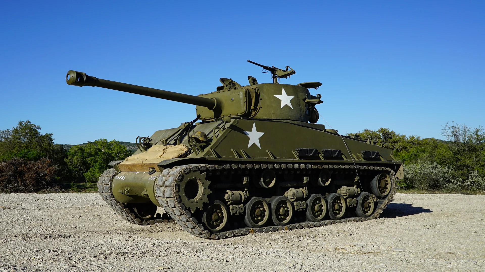
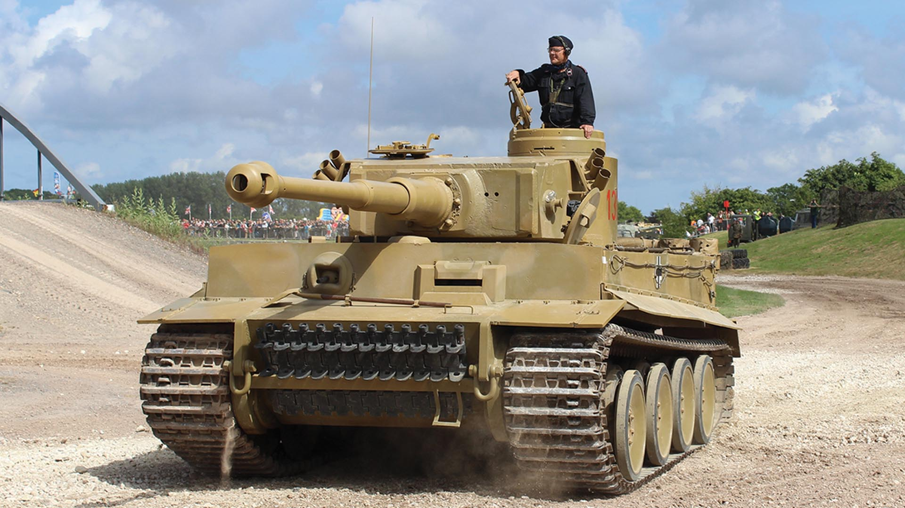
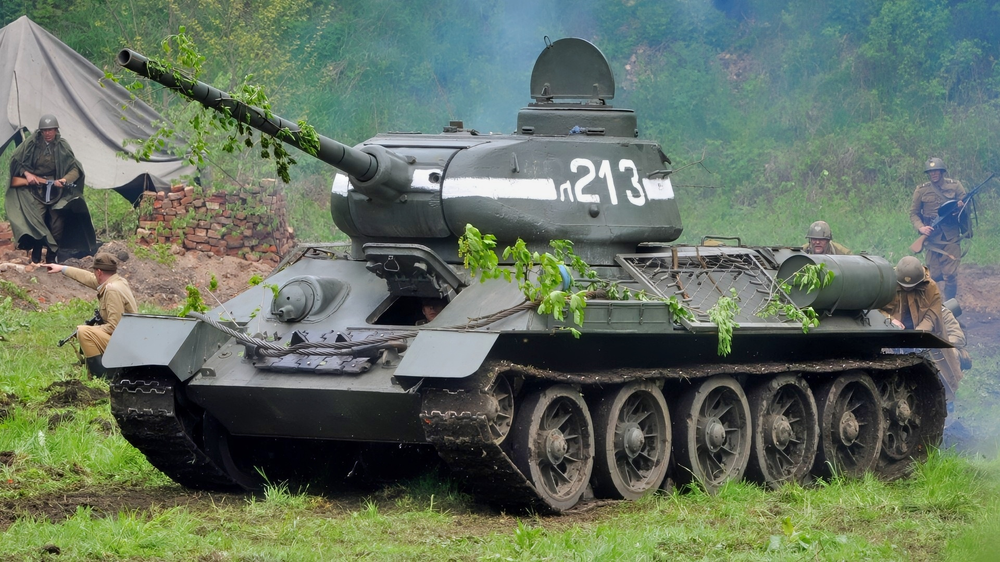
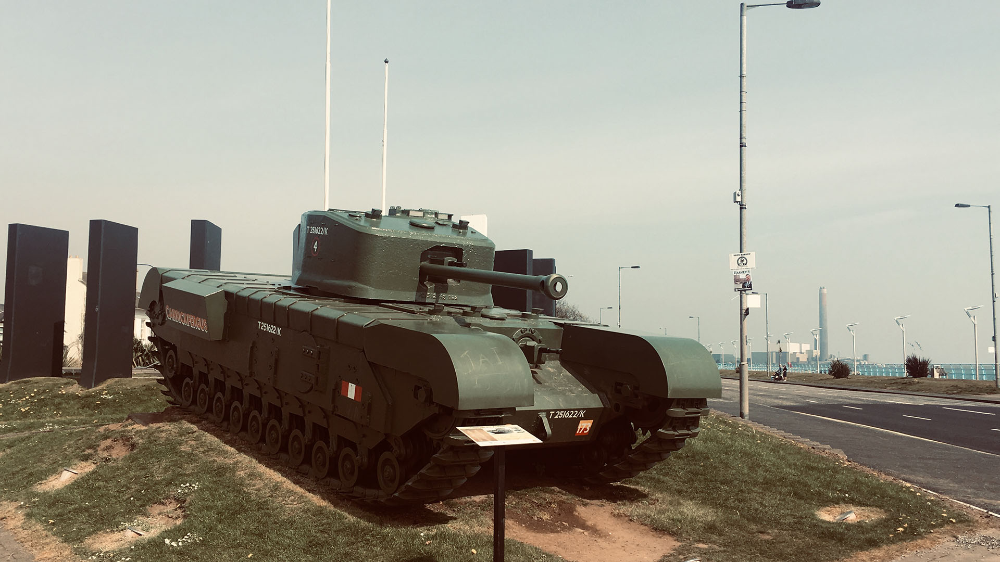
M3/M5 Stuart
 M3 Stuart armed with a 37mm gun. First saw combat in North Africa. Tank on tank engagements went poorly for the
M3 Stuart unless employed with infantry. It was quickly used in a reconnaissance role. The lack of firepower was
its main complaint in the field. The M5 Stuart had a new engine that made the tank quieter, cooler, and roomier. The M5 also had
an automatic transmission, redesigned hull with a raised desk over the engine compartment, sloped glacis and driver's hatches moved
to the top.
M3 Stuart armed with a 37mm gun. First saw combat in North Africa. Tank on tank engagements went poorly for the
M3 Stuart unless employed with infantry. It was quickly used in a reconnaissance role. The lack of firepower was
its main complaint in the field. The M5 Stuart had a new engine that made the tank quieter, cooler, and roomier. The M5 also had
an automatic transmission, redesigned hull with a raised desk over the engine compartment, sloped glacis and driver's hatches moved
to the top.
M3 Stuart armed with a 37mm gun. First saw combat in North Africa. Tank on tank engagements went poorly for the
M3 Stuart unless employed with infantry. It was quickly used in a reconnaissance role. The lack of firepower was
its main complaint in the field. The M5 Stuart had a new engine that made the tank quieter, cooler, and roomier. The M5 also had
an automatic transmission, redesigned hull with a raised desk over the engine compartment, sloped glacis and driver's hatches moved
to the top.
Name: M3/M5 Stuart, Light Tank
No. Built: 22,744
Cost: $32,915 (M3A1), $27,057 (M5) 1945 dollars
Weight: 16.75 short tons (15.20 metric tons)
Main Armament: 37 mm Gun M6 (147 rounds)
Secondary Armament: 3 × .30 caliber (7.62 mm) Browning M1919A4 machine guns 6,750 rounds
Engine: Twin Cadillac Series 42 220 hp (160 kW) at 3,400 rpm
Max Speed: 36 mph (58 km/h) on road
Operational Range: 100 mi (160 km)
Crew: 4
M22 Locust
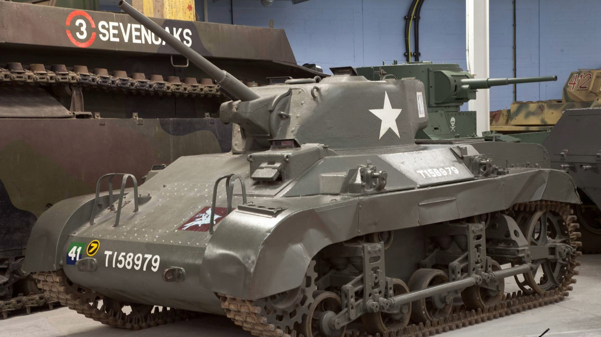
The M22 Locust is an airborne light tank. It was designed so that it could be transported underneath a Douglas C-54 Skymaster transport aircraft; its dimensions also allowed it to fit inside a General Aircraft Hamilcar glider. Eight were used during Operation Varsity in March 1945. Only two made it to the objective but then had to retreat from artillery fire. The M22 locust never saw service again and was deemed obsolete.
Name: M22 Locust, Light Tank
No. Built: 830
Cost: unknown
Weight: 8.2 short tons, 7.4 tonnes
Main Armament: 1 × 37 mm Gun M6 (50 rounds)
Secondary Armament: 1 × .30-06 (7.62 mm) Browning M1919A4 machine gun 2,500 rounds[
Engine: Lycoming O-435T 6-cylinder horizontally opposed gasoline[2] 165-horsepower (123 kW)
Max Speed: 40 miles per hour (64 km/h)
Operational Range: 135 miles (217 km)
Crew: 3
M24 Chaffee
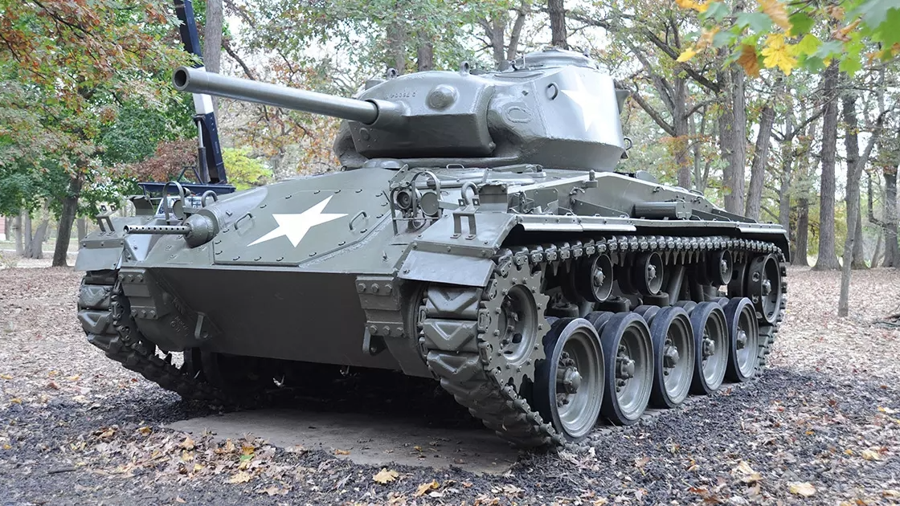
M24 Chaffee light tank fitted with a 75mm main gun. It was deployed late in the war around Dec. 1944. Crews liked the improved off-road performance and reliability, and were especially appreciative of the 75 mm main gun, which was a vast improvement over the 37 mm of M3/M5 Stuart. Though its light armor left it vulnerable to most German tank and anti-tank weapons.
Name: M24 Chaffee, Light Tank
No. Built: 4,731
Cost: $39,653 1945 dollars
Weight: 20.3 short tons (18.37 tonnes)
Main Armament: 75 mm gun M6 in mount M64 (48 rounds)
Secondary Armament: .50 BMG Browning M2HB machine gun 440 rounds
2 × .30-06 Browning M1919A4 machine guns 3,750 rounds
Engine: Twin Cadillac Series 44T24 220 hp (160 kW) (164 kW) at 3,400 rpm (total)
Max Speed: 35 mph (56 km/h)
Operational Range: 100 mi (160 km)
Crew: 5
M3 Lee/Grant
 M3 Lee/Grant has two main guns, 37mm and an off center 75mm with limited transverse. US patterned turrets were
call "Lee" and British patterned ones were called "Grant". In the interwar period tank development in the US was poor. Lessons learned
from the invasion of france showed a need of 75mm gun to deal with the German Panzer IIIs and IVs. M3 Lee/Grant was hastily designed and a
stopgap for the M4 as well as a compromise to produce tanks as soon as possible. The M3 first saw combat in North Africa and performed well.
During lend-lease 2,887 were sent to the UK and 1,386 to the USSR. The M3 was deemed reliable, had considerable firepower, good armor, and
high mobility but had serious drawbacks in its general design and shape, including a high silhouette.
M3 Lee/Grant has two main guns, 37mm and an off center 75mm with limited transverse. US patterned turrets were
call "Lee" and British patterned ones were called "Grant". In the interwar period tank development in the US was poor. Lessons learned
from the invasion of france showed a need of 75mm gun to deal with the German Panzer IIIs and IVs. M3 Lee/Grant was hastily designed and a
stopgap for the M4 as well as a compromise to produce tanks as soon as possible. The M3 first saw combat in North Africa and performed well.
During lend-lease 2,887 were sent to the UK and 1,386 to the USSR. The M3 was deemed reliable, had considerable firepower, good armor, and
high mobility but had serious drawbacks in its general design and shape, including a high silhouette.
M3 Lee/Grant has two main guns, 37mm and an off center 75mm with limited transverse. US patterned turrets were
call "Lee" and British patterned ones were called "Grant". In the interwar period tank development in the US was poor. Lessons learned
from the invasion of france showed a need of 75mm gun to deal with the German Panzer IIIs and IVs. M3 Lee/Grant was hastily designed and a
stopgap for the M4 as well as a compromise to produce tanks as soon as possible. The M3 first saw combat in North Africa and performed well.
During lend-lease 2,887 were sent to the UK and 1,386 to the USSR. The M3 was deemed reliable, had considerable firepower, good armor, and
high mobility but had serious drawbacks in its general design and shape, including a high silhouette.
Name: M3 Lee/Grant, Medium Tank
No. Built: 6,258
Cost: $55,250 1945 dollars
Weight: 30 short tons, 27 tonnes
Main Armament: 1 × 75 mm Gun M2/M3 in hull46 rounds, 1 × 37mm Gun M5/M6 in turret178 rounds
Secondary Armament: armament 2–3–4 × .30-06 Browning M1919A4 machine guns 9,200 rounds
Engine: Wright-Continental R975 EC2 400 hp (300 kW)/340 hp (250 kW)
Max Speed: 26 mph (42 km/h) (road), 16 mph (26 km/h) (off-road)
Operational Range: 120 mi (193 km)
Crew: 7 (Lee); 6 (Grant)
M4
 The M4 had 3 variants. M4 Composite used a casted front mated to a welded side and rear hull. M4 (105) fitted with 105mm howitzer as seen in photo was used for
infantry support sacrificing anti-tank capabilities. M4 (105) HVSS or
Horizontal volute spring suspension equipped with a new suspension system. When the M4 tank first went into combat in North Africa with the British Army at the Second Battle of El Alamein in
late 1942, it increased the advantage of Allied armor over Axis armor and was superior to the lighter German[10] and Italian tank designs.The M4 Sherman was instrumental in the success of
several Allied offensives, particularly after 1942, when the Allies began to gain momentum following the Allied landings in North Africa (Operation Torch) and the subsequent campaigns in Italy
and France.
The M4 had 3 variants. M4 Composite used a casted front mated to a welded side and rear hull. M4 (105) fitted with 105mm howitzer as seen in photo was used for
infantry support sacrificing anti-tank capabilities. M4 (105) HVSS or
Horizontal volute spring suspension equipped with a new suspension system. When the M4 tank first went into combat in North Africa with the British Army at the Second Battle of El Alamein in
late 1942, it increased the advantage of Allied armor over Axis armor and was superior to the lighter German[10] and Italian tank designs.The M4 Sherman was instrumental in the success of
several Allied offensives, particularly after 1942, when the Allies began to gain momentum following the Allied landings in North Africa (Operation Torch) and the subsequent campaigns in Italy
and France.
The M4 had 3 variants. M4 Composite used a casted front mated to a welded side and rear hull. M4 (105) fitted with 105mm howitzer as seen in photo was used for
infantry support sacrificing anti-tank capabilities. M4 (105) HVSS or
Horizontal volute spring suspension equipped with a new suspension system. When the M4 tank first went into combat in North Africa with the British Army at the Second Battle of El Alamein in
late 1942, it increased the advantage of Allied armor over Axis armor and was superior to the lighter German[10] and Italian tank designs.The M4 Sherman was instrumental in the success of
several Allied offensives, particularly after 1942, when the Allies began to gain momentum following the Allied landings in North Africa (Operation Torch) and the subsequent campaigns in Italy
and France.
Name: M4, Medium Tank
No. Built: 8,389
Cost: $44,556–64,455 in 1945 dollars, $803,988–$1,163,054 in 2025 dollars
Weight: 33.4–42.0 short tons, 30.3–38.1 tonnes
Main Armament: 75 mm gun M3 (90–104 rounds)
or 105 mm howitzer M4 (66 rounds)
Secondary Armament: .50 caliber Browning M2HB machine gun (300–600 rounds),
2 to 4 .30 caliber Browning M1919A4 machine guns (6,000–6,750 rounds) depending on variant
Engine: gasoline Continental R-975 radial engine, 350 or 400 hp (261 or 298 kW) at 2,400 rpm,
Horizontal volute spring suspension
Max Speed: 22–30 mph(35–48 km/h) on road, 15–20 mph (24–32 km/h) off-road depending upon variant
Operational Range: Road:
100–150 miles Cross-country: 60–100 miles
Crew: 5
M4A1
 M4A1 (cast hull). Note the rounded edges of its fully cast upper hull. The M4A1 has three variants.
M4A1(76)W upgraded with 76 mm M1 gun, large drivers' hatches and wet stowage preventing ammunition. M4A1(76)W HVSS was
upgrade with wide track suspension (see M4 Engine description for info). M4A1E9 Late war remanufacturing featuring spaced out
VVSS suspension, extended end connectors on both sides of the tracks
M4A1 (cast hull). Note the rounded edges of its fully cast upper hull. The M4A1 has three variants.
M4A1(76)W upgraded with 76 mm M1 gun, large drivers' hatches and wet stowage preventing ammunition. M4A1(76)W HVSS was
upgrade with wide track suspension (see M4 Engine description for info). M4A1E9 Late war remanufacturing featuring spaced out
VVSS suspension, extended end connectors on both sides of the tracks
M4A1 (cast hull). Note the rounded edges of its fully cast upper hull. The M4A1 has three variants.
M4A1(76)W upgraded with 76 mm M1 gun, large drivers' hatches and wet stowage preventing ammunition. M4A1(76)W HVSS was
upgrade with wide track suspension (see M4 Engine description for info). M4A1E9 Late war remanufacturing featuring spaced out
VVSS suspension, extended end connectors on both sides of the tracks
Name: M4A1, Medium Tank
No. Built: 9,707
Cost: $44,556–64,455 in 1945 dollars, $803,988–$1,163,054 in 2025 dollars
Weight: 33.4–42.0 short tons, 30.3–38.1 tonnes
Main Armament: 75 mm gun M3 (90–104 rounds)
or 76 mm gun M1A1, M1A1C, or M1A2 (71 rounds)
Secondary Armament: .50 caliber Browning M2HB machine gun (300–600 rounds),
2 to 4 .30 caliber Browning M1919A4 machine guns (6,000–6,750 rounds) depending on variant
Engine: gasoline Continental R-975 radial engine, 350 or 400 hp (261 or 298 kW) at 2,400 rpm
Max Speed: 22–30 mph(35–48 km/h) on road, 15–20 mph (24–32 km/h) off-road depending upon variant
Operational Range: Road:
100–150 miles Cross-country: 60–100 miles
Crew: 5
M4A2
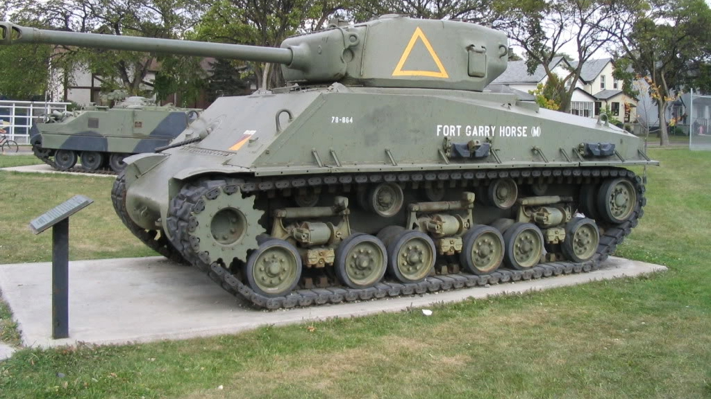
The M4A2 has three variants. M4A2(76)W equipped with the 76mm gun and 47 deg glacis with large driver hatches, and HVSS as seen in the photo. This variant was also the most common Soviet Sherman tank during Lend-Lease. M4A2(76)W HVSS equipped with the 76mm gun and the upgraded suspension HVSS (see M4 Engine description for info). M4A2E4 A prototype of the M4A2 featuring independent Torsion bar suspension and widened 24 in (61 cm) tracks, the project was later canceled. These variants were sent to allies during lend-lease, 5,406 sent to UK and 4,063 to USSR.
Name: M4A2, Medium Tank
No. Built: 10,968
Cost: $44,556–64,455 in 1945 dollars, $803,988–$1,163,054 in 2025 dollars
Weight: 33.4–42.0 short tons, 30.3–38.1 tonnes
Main Armament: 75 mm gun M3 (90–104 rounds)
or 76 mm gun M1A1, M1A1C, or M1A2 (71 rounds)
Secondary Armament: .50 caliber Browning M2HB machine gun (300–600 rounds),
2 to 4 .30 caliber Browning M1919A4 machine guns (6,000–6,750 rounds) depending on variant
Engine: GM 6046 diesel, 375 hp (280 kW) at 2,100 rpm
Max Speed: 22–30 mph(35–48 km/h) on road, 15–20 mph (24–32 km/h) off-road depending upon variant
Operational Range: Road:
100–150 miles Cross-country: 60–100 miles
Crew: 5
M4A3
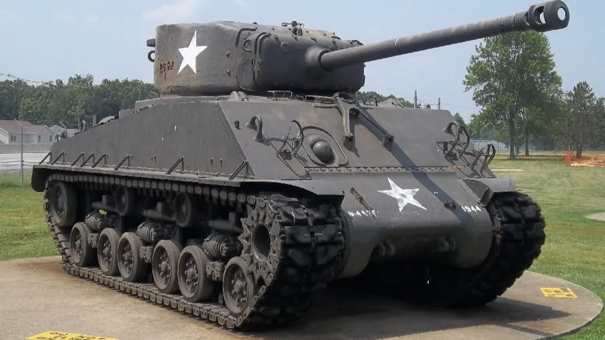
Depicted in the photo is the M4A3(76)W HVSS or M4A3E8 nicknamed "Easy Eight" was probably the best Sherman variant and also saw action in the Korean war. The M4A3 has nine variants. M4A3(75)D, M4A3(75)W, M4A3(75)W HVSS, M4A3(76)W, M4A3(76)W HVSS, M4A3(105), M4A3(105) HVSS. For these the D=dry stowage, W=wet stowage, 75=75mm gun, 76=76mm gun, 105=105mm gun, and HVSS for the upgraded suspension (see M4 Engine description for info). M4A3E2 Assault Tank also known as "Jumbo" had an extra 1in of armor on the front making it able to withstand the german 88mm gun. M4A3E4 were originally built with the 75mm gun but were field upgraded with the 76mm gun and given the E4 designation.
Name: M4A3, Medium Tank
No. Built: 12,596
Cost: $44,556–64,455 in 1945 dollars, $803,988–$1,163,054 in 2025 dollars
Weight: 33.4–42.0 short tons, 30.3–38.1 tonnes
Main Armament: 75 mm gun M3 (90–104 rounds)
or 76 mm gun M1A1, M1A1C, or M1A2 (71 rounds) or 105 mm howitzer M4 (66 rounds)
Secondary Armament: .50 caliber Browning M2HB machine gun (300–600 rounds),
2 to 4 .30 caliber Browning M1919A4 machine guns (6,000–6,750 rounds) depending on variant
Engine: gasoline Ford GAA V8, 450 hp (336 kW) at 2,600 rpm
Max Speed: 22–30 mph(35–48 km/h) on road, 15–20 mph (24–32 km/h) off-road depending upon variant
Operational Range: Road: 100–150 miles Cross-country: 60–100 miles
Crew: 5
M4A4
 M4A4 fitted with the 75mm gun. Of the 7,499 built 7,161 were sent to the UK under Lend-Lease. The M4A4 had a
lengthened hull to fit the large gasoline Chrysler A57 multibank engine.
M4A4 fitted with the 75mm gun. Of the 7,499 built 7,161 were sent to the UK under Lend-Lease. The M4A4 had a
lengthened hull to fit the large gasoline Chrysler A57 multibank engine.
M4A4 fitted with the 75mm gun. Of the 7,499 built 7,161 were sent to the UK under Lend-Lease. The M4A4 had a
lengthened hull to fit the large gasoline Chrysler A57 multibank engine.
Name: M4A4, Medium Tank
No. Built: 7,499
Cost: $44,556–64,455 in 1945 dollars, $803,988–$1,163,054 in 2025 dollars
Weight: 33.4–42.0 short tons, 30.3–38.1 tonnes
Main Armament: 75 mm gun M3 (90–104 rounds)
Secondary Armament: .50 caliber Browning M2HB machine gun (300–600 rounds),
2 to 4 .30 caliber Browning M1919A4 machine guns (6,000–6,750 rounds) depending on variant
Engine: gasoline Chrysler A57 multibank, 370 hp (276 kW) at 2,400 rpm
Max Speed: 22–30 mph(35–48 km/h) on road, 15–20 mph (24–32 km/h) off-road depending upon variant
Operational Range: Road:
100–150 miles Cross-country: 60–100 miles
Crew: 5
M6
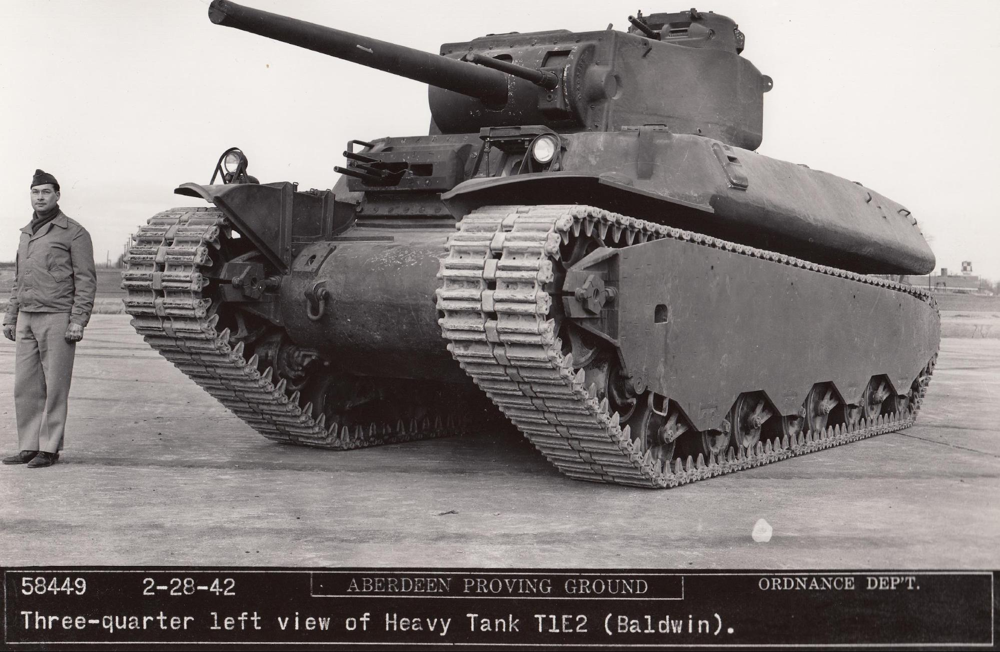
M6 is fitted with a 76.2mm gun. Development of tank began in June 1940. By the end of 1942 the M4 Sherman had filled the needed role. Production was cut from 5,000 to 40 in 1943. The tank never left US soil and was used in War Bond drives.
Name: M6, Heavy Tank
No. Built: 40
Cost: $171,615
Weight: 63.25 short tons, 57.4 tonnes,
Main Armament: 1 × 76.2 mm (3 in) gun M7(75 rounds), 1 × 37 mm (1.46 in) gun M6 (202 rounds)
Secondary Armament: 2 × .50 cal (12.7mm) Browning M2HB machine guns, hull (6,900 rounds) 2 × .30 Browning M1919A4 machine guns, one fixed (bow), one flexible AA (5,500 rounds)
Engine: Wright G-200 9-cylinder gasoline[2] 825 hp at 2,300 rpm
Max Speed: 22 mph (35 km/h)
Operational Range: 100 miles (160 km)
Crew: 6
M26
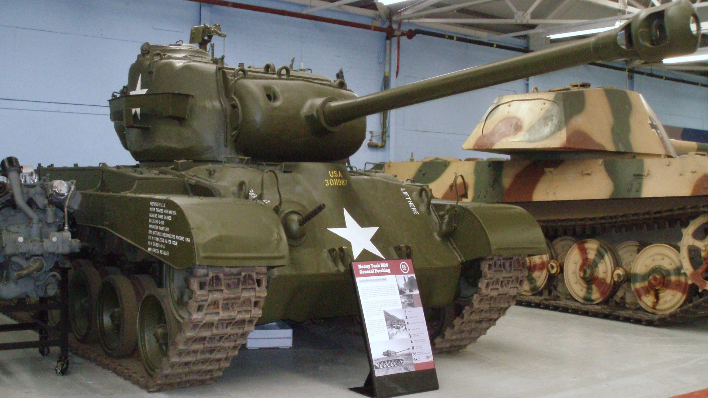
M26 is fitted with a 90mm gun. The M26 was intended to replace the M4 Sherman but with delays in production only a small number (20) saw combat towards the end of the war. It performed well knocking out panzer IV's, Panthers and Tiger I's. M26 also saw action in the Korean war as well.
Name: M26, Heavy Tank
No. Built: 2,202
Cost: US$83,273.89 (1945), equivalent to $1,454,445 in 2024
Weight: 46.1 short tons (41.9 tonnes)
Main Armament: 90 mm Gun M3 70 rounds
Secondary Armament: 2× .30-06 M1919 Browning (5,000 rounds) 1× .50 cal. M2 Browning (550 rounds)
Engine: Ford GAF; 8-cylinder, gasoline 450–500 hp (340–370 kW)
Max Speed: 30 mph (48 km/h) road, 5.25 mph (8.45 km/h) off-road
Operational Range: 100 mi (160 km)
Crew: 5
T29
 The T29 Heavy Tank was an American heavy tank project started in March 1944 to counter the appearance of the German Tiger II heavy tank. The T29 was not ready in time for the
war in Europe, but it did provide post-war engineers with opportunities for applying engineering concepts to artillery and automotive components.
The T29 Heavy Tank was an American heavy tank project started in March 1944 to counter the appearance of the German Tiger II heavy tank. The T29 was not ready in time for the
war in Europe, but it did provide post-war engineers with opportunities for applying engineering concepts to artillery and automotive components.
The T29 Heavy Tank was an American heavy tank project started in March 1944 to counter the appearance of the German Tiger II heavy tank. The T29 was not ready in time for the
war in Europe, but it did provide post-war engineers with opportunities for applying engineering concepts to artillery and automotive components.
Name: T29, Heavy Tank
No. Built: 7
Cost: No info
Weight: 64.2 tonnes; 70.7 short tons
Main Armament: 105 mm gun T5E1 (63 rounds) (T29E1, T29E3)
Secondary Armament: 2 x .50 in (12.7 mm) Browning M2HB machine guns, coaxial, 1x .50 M2HB flexible AA (2,420 rounds), 1x .30 Browning M1919A4, bow (2,500 rounds)
Engine: 1,649 cubic inch (27 liter) Ford GAC V12[1] gasoline 750 hp (560 kW) net at 2800 rpm
Max Speed: 22 mph (35 km/h)
Operational Range: 100 miles (160 km)
Crew: 6
T30
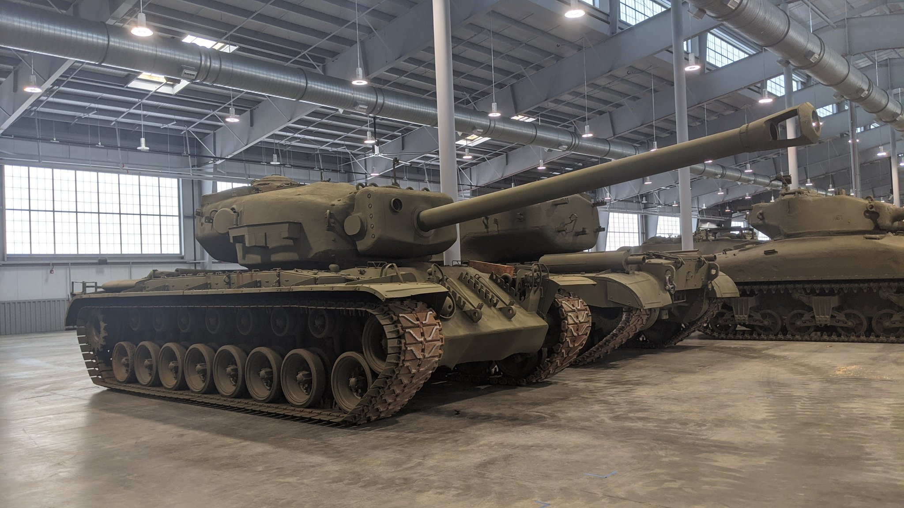
The Heavy Tank T30 was a World War II American tank project developed to counter new German tanks, such as Tiger I, Tiger II, and tank destroyers, such as the Jagdtiger, or Soviet heavy tanks, such as IS-2 or IS-3. The T30 was designed at the same time as the T29 Heavy Tank. It never saw service.
Name: T30, Heavy Tank
No. Built: 6
Cost: No info
Weight: 82.5 Short tons (75 tonnes) combat loaded
Main Armament: 155mm T7 L/40 rifled gun 41.4 Caliber (34 rounds) (T30)
Secondary Armament: 1 x .50 in (12.7mm) M2HB (1,500 rounds), 2 x .30 in (7.6 mm) Browning M1919A4, bow & coaxial (2,500 rounds)
Engine: 1,791.7 cu in (29.361 L) Continental AV1790-5A air-cooled 810 hp (600 kW) net at 2400 rpm
Max Speed: 25 mph (40 km/h) (on road), 22 mph (35 km/h) (off-road)
Operational Range: 160 mi (260 km)
Crew: 6
M10 GMC
 M10 GMC (Gun motor carriage) fitted with the 76.2mm gun and open turret design. The M10 had very thin armor and was designed with
tank destroyer doctrine in mind. The doctrine had the tank destroyers sit in the rear of a force waiting to ambush enemy armored column
breakthroughs like the blitzkrieg in the invasion of poland and the fall of france. The thin armor was to give it speed to regroup after
ambushing the enemy or respond quickly to a concentrated attack. In reality the tank destroyers were not used this way and were used to
provide additional direct and indirect fire support to infantry and armored divisions. The turret was not powered and took 80 Seconds
for a 360 deg rotation. The chassis was also based on the M4 sherman.
M10 GMC (Gun motor carriage) fitted with the 76.2mm gun and open turret design. The M10 had very thin armor and was designed with
tank destroyer doctrine in mind. The doctrine had the tank destroyers sit in the rear of a force waiting to ambush enemy armored column
breakthroughs like the blitzkrieg in the invasion of poland and the fall of france. The thin armor was to give it speed to regroup after
ambushing the enemy or respond quickly to a concentrated attack. In reality the tank destroyers were not used this way and were used to
provide additional direct and indirect fire support to infantry and armored divisions. The turret was not powered and took 80 Seconds
for a 360 deg rotation. The chassis was also based on the M4 sherman.
M10 GMC (Gun motor carriage) fitted with the 76.2mm gun and open turret design. The M10 had very thin armor and was designed with
tank destroyer doctrine in mind. The doctrine had the tank destroyers sit in the rear of a force waiting to ambush enemy armored column
breakthroughs like the blitzkrieg in the invasion of poland and the fall of france. The thin armor was to give it speed to regroup after
ambushing the enemy or respond quickly to a concentrated attack. In reality the tank destroyers were not used this way and were used to
provide additional direct and indirect fire support to infantry and armored divisions. The turret was not powered and took 80 Seconds
for a 360 deg rotation. The chassis was also based on the M4 sherman.
Name: M10 GMC, Tank Destroyer
No. Built: 6,406
Cost: US $47,900 (equivalent to $921,807 in 2024)
Weight: (32.6 short tons; 29.6 tonnes)
Main Armament: 3-inch gun M7 (76.2 mm) in Mount M5 54 rounds
Secondary Armament: .50 caliber (12.7 mm) Browning M2HB machine gun 300 rounds
Engine: M10 – General Motors 6046 twin diesel 375 hp (280 kW) at 2,100 rpm M10A1 – Ford GAA V8
450 hp (340 kW) at 2,600 rpm
Max Speed: M10 – 25–30 mi (40–48 km)/h on road M10A1 – 30 mi (48 km)/h on road
Operational Range: M10 – 200 mi (320 km) M10A1 – 160 mi (260 km)
Crew: 5
M18 Hellcat
 M18 Hellcat fitted with the 76mm gun and powered open turret allowing it 360 deg rotation in 24 seconds. It was
designed from the beginning as a fast tank destroyer. It was the most effective US tank destroyer of WWII having a kill to loss ratio of 2.4 to 1. The 76mm
did struggle against the later German designs like the Panther and Tiger but this was somewhat remedied with the HVAP (High Velocity Armor Piercing) ammo.
The success of the M18 Hellcat was due to its speed and visibility of its open turret allowing to it "shoot and scoot" then reappear elsewhere on the battlefield.
M18 Hellcat fitted with the 76mm gun and powered open turret allowing it 360 deg rotation in 24 seconds. It was
designed from the beginning as a fast tank destroyer. It was the most effective US tank destroyer of WWII having a kill to loss ratio of 2.4 to 1. The 76mm
did struggle against the later German designs like the Panther and Tiger but this was somewhat remedied with the HVAP (High Velocity Armor Piercing) ammo.
The success of the M18 Hellcat was due to its speed and visibility of its open turret allowing to it "shoot and scoot" then reappear elsewhere on the battlefield.
M18 Hellcat fitted with the 76mm gun and powered open turret allowing it 360 deg rotation in 24 seconds. It was
designed from the beginning as a fast tank destroyer. It was the most effective US tank destroyer of WWII having a kill to loss ratio of 2.4 to 1. The 76mm
did struggle against the later German designs like the Panther and Tiger but this was somewhat remedied with the HVAP (High Velocity Armor Piercing) ammo.
The success of the M18 Hellcat was due to its speed and visibility of its open turret allowing to it "shoot and scoot" then reappear elsewhere on the battlefield.
Name: M18 Hellcat, Tank Destroyer
No. Built: 2,507
Cost: US$55,230 (equivalent to $986,518 in 2024)
Weight: 37,557 lb (16.767 short tons; 17.036 tonnes)
Main Armament: 76 mm gun M1A1, M1A1C, or M1A2 45 rounds
Secondary Armament: .50 cal (12.7 mm) Browning M2HB machine gun 800 rounds
Engine: Continental R975-C1 350 hp (260 kW) at 2,400 rpm
Max Speed: 55 mph (89 km/h) on road 26 mph (42 km/h) off road
Operational Range: 100 mi (160 km) on road
Crew: 5
M36 Jackson
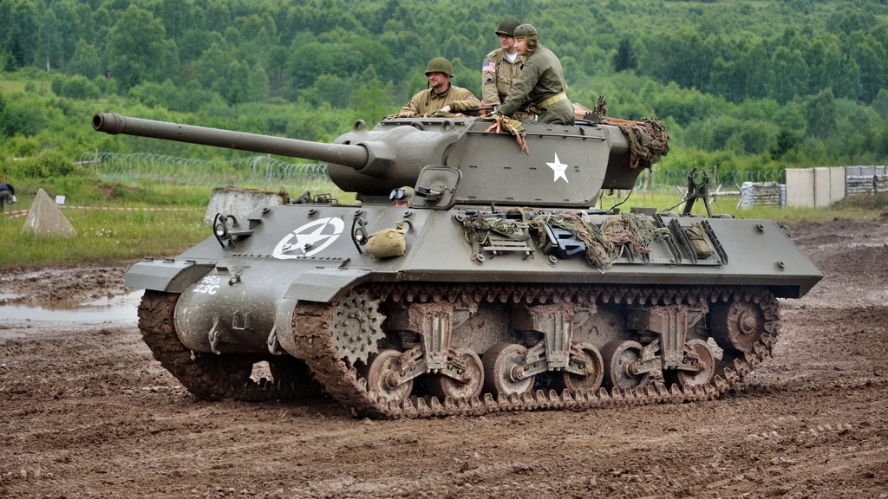
M36 Jackson fitted with the 90mm gun and open turret design. The M36 did not see combat till Oct. 1944. Though slower than the M18and M10 the 90mm gun allowed it to engage enemy at great range. A Tiger I kill was recorded at 4,600 yards. However the Panther's sloped glacis could still deflect shots at certain angles. The M36 was well liked by its crews as it was one the only tanks that could destroy heavy German tanks from a distance.
Name: M36 Jackson, Tank Destroyer
No. Built: 2,324
Cost: US $51,290 (equivalent to $916,142 in 2024) (M36)
Weight: 32 short tons; 29 tonnes
Main Armament: 90 mm gun M3 47 rounds
Secondary Armament: .50 caliber (12.7 mm) Browning M2HB machine gun 1,000 rounds
Engine: M36, M36B1:Ford GAA V8 gasoline engine 450 hp (340 kW) at 2,600 rpm M36B2:General Motors 6046 twin inline diesel engine 375 hp (280 kW) at 2,100 rpm
Max Speed: 26 mph (42 km/h) on road
Operational Range: 150 mi (240 km)
Crew: 5
T28
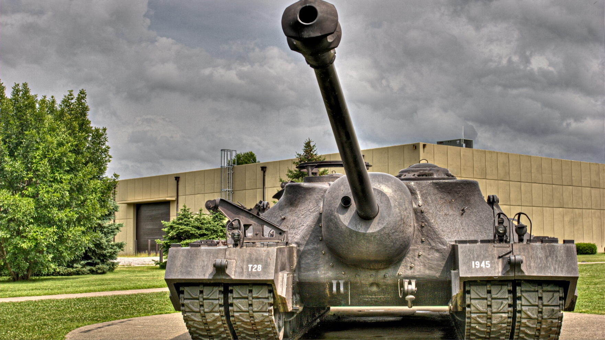
The T28 super-heavy tank was an American super-heavy tank/assault gun designed for the United States Army during World War II. It was originally designed to break through German defenses of the Siegfried Line and was later considered as a possible participant in the planned invasion of the Japanese mainland. Only two prototypes were built before the project was terminated.
Name: T28, Tank Destroyer
No. Built: 2
Cost: No info
Weight: 95 short tons (86 tonnes)
Main Armament: 105 mm T5E1 gun, with 62 rounds
Secondary Armament: .50 cal (12.7 mm) Browning heavy machine gun, with 660 rounds
Engine: Ford GAF V-8 gasoline 500 hp (372 kW)
Max Speed: 8 mph (13 km/h)[
Operational Range: 100 miles (160 km)
Crew: 4
M8
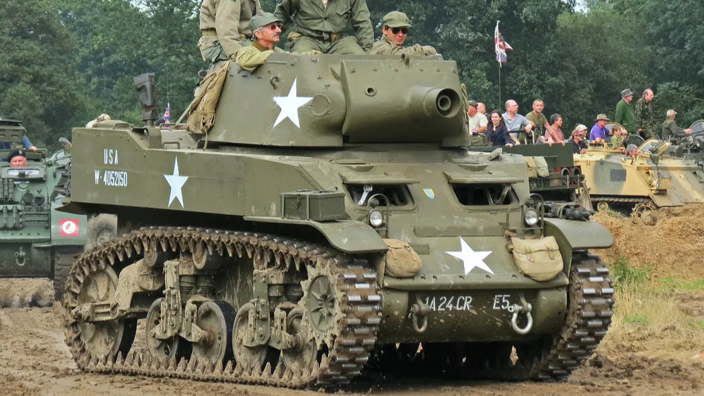
The 75 mm howitzer motor carriage M8 "Scott" was a self-propelled howitzer vehicle of the United States in use during World War II. It was developed on the chassis of the M5 Stuart tank and was equipped with a M116 howitzer in an M7 mount. The M8 was used in the Italian Campaign, the Western Front, and in the Pacific Theater by the US Army and on the Western Front by the French Army. Starting in early 1944 they were replaced by the 105mm howitzer variant of the M4 Sherman tank.
Name: 75 mm howitzer motor carriage M8, Self-Propelled Artillery
No. Built: 1,778
Cost: No info
Weight: 17.3 Short tons (15.7 tonnes) combat weight
Main Armament: 75 mm Howitzer M2/M3 in Mount M7
Secondary Armament: .50 caliber (12.7 mm) Browning M2HB machine gun 400 rounds
Engine: Twin Cadillac Series 42 inline 6 cylinder 4-stroke gasoline engine 220 hp (160 kW) total at 3,400 rpm
Max Speed: 36 mph (58 km/h) on road
Operational Range: 100 mi (160 km) on road
Crew: 4
M7/M7B1 Priest
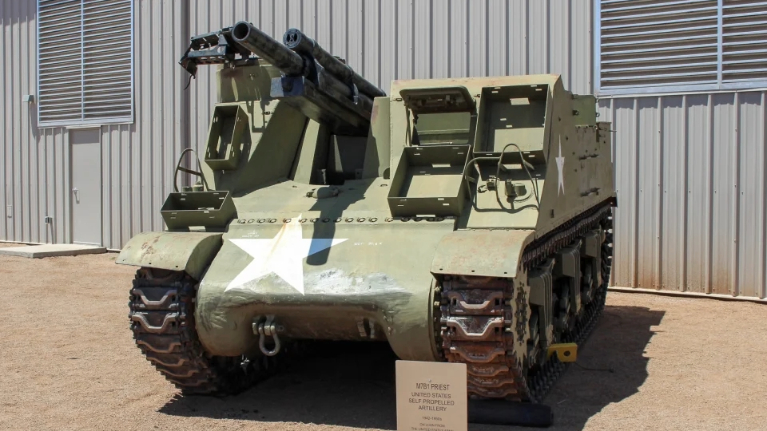
M7 fitted with the 105mm gun. M7 used the M3 Lee chassis while the M7B1 used the M4 Sherman chassis. During the Battle of the Bulge, each US armored division had three battalions of M7s, giving them unparalleled mobile artillery support
Name: M7/M7B1 Priest, Self-Propelled Artillery
No. Built: M7: 3489, M7B1: 826
Cost: no info
Weight: 25.32 short tons (22.97 tonnes)
Main Armament: 105 mm M1/M2 howitzer 69 rounds
Secondary Armament: 1 × 0.5 in (12.7 mm) M2 Browning machine gun 300 rounds
Engine: Continental R-975 C1/C4 Ford GAA (M7B1) 400 or 340 hp (298 or 254 kW)
Max Speed: 24 mph (39 km/h) on road 15 mph (24 km/h) off-road
Operational Range: 120 mi (193 km)
Crew: 8
M12 GMC
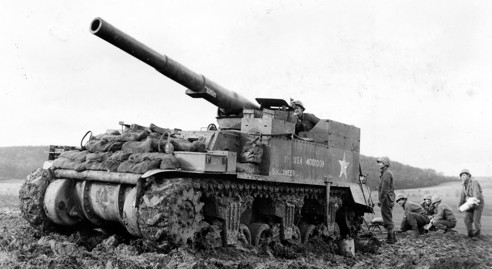
M12 GMC (Gun Motor Carriage) was fitted with 155mm gun. It was built on a M3 Lee chassis and operated in pairs with the M30 cargo carrier. It was mostly used for indirect fire but was utilized in direct fire. It was nicknamed "Doorknocker" due to the 155mm armor piercing rounds able to pierce 7 ft of concrete at ranges of 2000 yards.
Name: M12 GMC, Self-Propelled Artillery
No. Built: 100
Cost: no info
Weight: 29.5 short tons (27 tonnes)
Main Armament: 155 mm (6.1 in) M1917, M1918, or M1918M1 gun in Mount M4 10 rounds (40 rounds with M30 cargo carrier)
Secondary Armament: None
Engine: Wright R975 C1 350 horsepower (260 kW) at 2,400 rpm
Max Speed: Road: 21–24 miles per hour (34–39 km/h)
Operational Range: 140 miles (230 km)
Crew: 6
M40 GMC
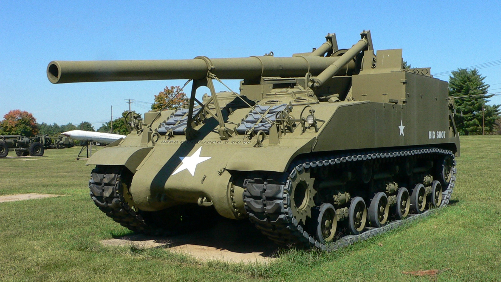
M40 was fitted with a 155mm gun on a M4 Sherman chassis. It was designed to replace the M12. Only a single M40 was used in action in the European Theatre in 1945. A complete gun section consisted of one M40 GMC and one M4A1 high speed tractor towing a 4-wheel, 8-ton M23 ammunition trailer. 24 M40s were converted into M43 and deployed to the Korean war.
Name: M40 GMC, Self-Propelled Artillery
No. Built: 418
Cost: no info
Weight: 40 short tons, 36.3 metric tons
Main Armament: 155 mm Gun M1A1 or M2 (20 rounds)
Secondary Armament: None
Engine: Wright (Continental) R975 EC2 340 hp (253 kW)
Max Speed:
Operational Range: 170 km (106 mi)
Crew: 38 km/h (24 mph) on road, 23 km/h (14 mph) off-road
M43 GMC
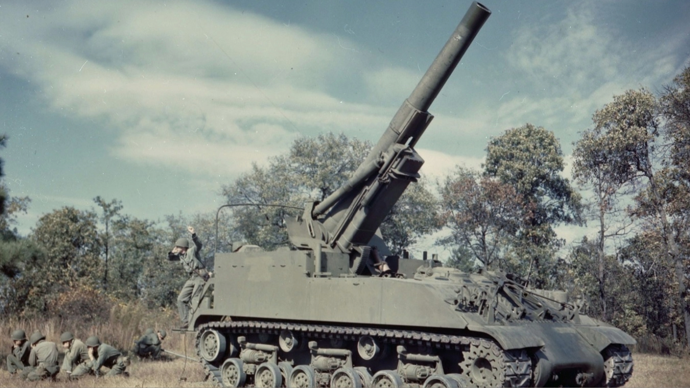
M43 fitted with the 203mm or 8in gun on a M4 Sherman chassis. Only a single M43 saw action in Feb. 1945 during the capture Cologne. M43 was used in the Korean War where it performed well due to the static fighting and high angle firing.
Name: M43 GMC, Self-Propelled Artillery
No. Built: 48
Cost: no info
Weight: 41.5 shorts tons (38 tonnes)
Main Armament: 8-inch Howitzer M2, 203mm
Secondary Armament: None
Engine: Continental R-975-C4 400 hp (300 kW)
Max Speed: 24 mph (39 km/h)
Operational Range: 107 mi (172 km)
Crew: 8
Panzer I
 The Panzer I is fitted with 2 7.62mm machine guns. It was mass produced in 1934 and was intended as a training tank to introduce armored warfare to
the german army. It had thin armor and was never meant for use against armored targets. Panzer I performed well against entrenched infantry and other soft targets that
were unable to respond to its thin armor. The Panzer I was a large part of Germany's mechanized forces and was used in all major campaigns between September 1939 and December 1941.
The Panzer I is fitted with 2 7.62mm machine guns. It was mass produced in 1934 and was intended as a training tank to introduce armored warfare to
the german army. It had thin armor and was never meant for use against armored targets. Panzer I performed well against entrenched infantry and other soft targets that
were unable to respond to its thin armor. The Panzer I was a large part of Germany's mechanized forces and was used in all major campaigns between September 1939 and December 1941.
The Panzer I is fitted with 2 7.62mm machine guns. It was mass produced in 1934 and was intended as a training tank to introduce armored warfare to
the german army. It had thin armor and was never meant for use against armored targets. Panzer I performed well against entrenched infantry and other soft targets that
were unable to respond to its thin armor. The Panzer I was a large part of Germany's mechanized forces and was used in all major campaigns between September 1939 and December 1941.
Name: Panzer I, Light Tank
No. Built: 1,659 as light tanks, 184 as command tanks, 445 as training tanks
Cost: 38,000 ℛ︁ℳ︁
Weight: 5.4 tonnes (6.0 short tons)
Main Armament: 2 × 7.92 mm MG 13 machine guns
Secondary Armament: None
Engine: Ausf.A:Krupp M 305 four-cylinder air-cooled gasoline engine, Ausf.B:Maybach NL38 TR
Max Speed: 37 km/h (23 mph) on-road; 25 km/h (16 mph) off-road.
Operational Range: 200 km (120 mi) on-road; 175 km (109 mi) off-road.
Crew: 2
Panzer II
 The Panzer II is armed with a 2cm or 20mm gun. Originally designed as a stop gap for the Panzer III and IV as their production was delayed, the Panzer II
went on to play a major role during the invasion of Poland, invasion of France, African campaign and on the eastern front. It was the most numerous tank in the German Panzer
divisions at the start of the war. By 1942 it was mostly removed from the front lines and used for training. Though its chassis was used for self-propelled artillery and tank destroyers. The Panzer II
had several variants (11 total), notable variants include the Flamm equipped with a flamethrower and the light reconnaissance tank called the "Luchs" or lynx.
The Panzer II is armed with a 2cm or 20mm gun. Originally designed as a stop gap for the Panzer III and IV as their production was delayed, the Panzer II
went on to play a major role during the invasion of Poland, invasion of France, African campaign and on the eastern front. It was the most numerous tank in the German Panzer
divisions at the start of the war. By 1942 it was mostly removed from the front lines and used for training. Though its chassis was used for self-propelled artillery and tank destroyers. The Panzer II
had several variants (11 total), notable variants include the Flamm equipped with a flamethrower and the light reconnaissance tank called the "Luchs" or lynx.
The Panzer II is armed with a 2cm or 20mm gun. Originally designed as a stop gap for the Panzer III and IV as their production was delayed, the Panzer II
went on to play a major role during the invasion of Poland, invasion of France, African campaign and on the eastern front. It was the most numerous tank in the German Panzer
divisions at the start of the war. By 1942 it was mostly removed from the front lines and used for training. Though its chassis was used for self-propelled artillery and tank destroyers. The Panzer II
had several variants (11 total), notable variants include the Flamm equipped with a flamethrower and the light reconnaissance tank called the "Luchs" or lynx.
Name: Panzer II, Light Tank
No. Built: 1,856
Cost: 52,640 ℛ︁ℳ︁
Weight: 8.9 tonnes (9.856 short tons)
Main Armament: 1 × 2 cm KwK 30 L/55 Ausf. a–F, 1 × 2 cm KwK 38 L/55 Ausf. J–L
Secondary Armament: 1 × 7.92 mm Maschinengewehr 34
Engine: Maybach HL62 TRM 6-cylinder petrol
Max Speed: 39.5 km/h (24.5 mph)
Operational Range: Road: 190 km (120 mi), Cross country: 126 km (78 mi)
Crew: 3
Panzer 35(t)
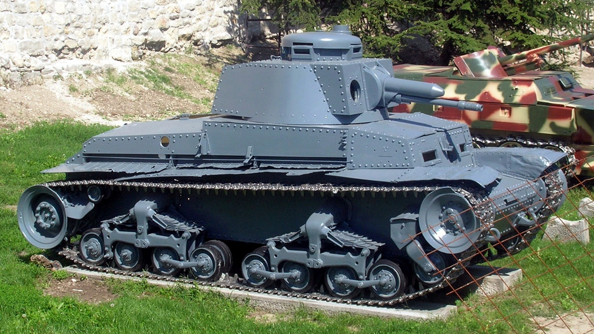
Czechoslovak-designed light tank used mainly by Germany during World War II. The letter (t) stood for tschechisch (German for "Czech"). The Germans seized 244 when they occupied Bohemia-Moravia in March 1939. It saw combat during the early years of World War II, notably the invasion of Poland, the Battle of France and the invasion of the Soviet Union. The tank was deemed obsolete by summer of 1941 for its thin armor and weak armament.
Name: Panzer 35(t), Light Tank
No. Built: 434
Cost: 741,868 or 745,068 Czechoslovak koruna
Weight: 10.5 tonnes, 11.6 short tons
Main Armament: 3.7 cm (1.5 in) KwK 34(t) gun
Secondary Armament: 2 x 7.92 mm (0.3 in) MG 37(t) machine gun
Engine: 4-cylinder, water-cooled Škoda T11/0 gasoline 120 hp (89 kW)
Max Speed: 34 km/h (21 mph)
Operational Range: 190 km (120 mi) (road), 115 km (71 mi) (cross-country)
Crew: 4
Panzer 38(t)
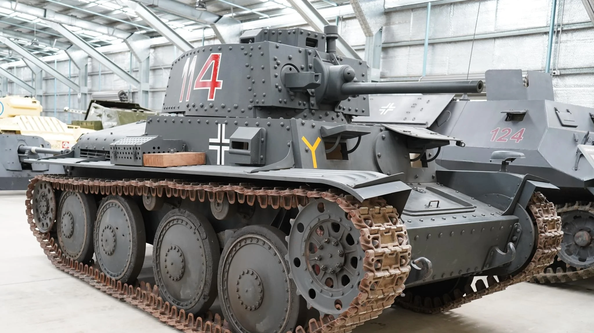
The Panzer 38(t) is fitted with 37mm gun. The tank was developed in Czechoslovakia and was adopted by the Germans following the occupation. The Panzer 38(t) saw service in the invasion of Poland, France, and the USSR. Production ended in 1942 when its main armament and thin armor were deemed inadequate on the eastern front facing the Russian T-34. Though the chassis was adapted to a variety of roles such as tank destroyers and self-propelled artillery with success.
Name: Panzer 38(t), Light Tank
No. Built: 1,414
Cost: No info
Weight: 9.725–9.85 tonnes, 10.720–10.858 short tons
Main Armament: 37 mm KwK 38(t) L/47.8
Secondary Armament: 2× 7.92 mm ZB-53 (MG 37(t)) machine guns
Engine: Praga Typ TNHPS/II water-cooled, 6-cylinder gasoline engine 123.3 hp (125.0 PS; 91.9 kW)
Max Speed: 42 km/h, 26.1 mph (road), 15 km/h, 9.3 mph (off-road)
Operational Range: 250 km (160 mi) (road), 160 km (99 mi) (cross-country)
Crew: 4
Panzer III
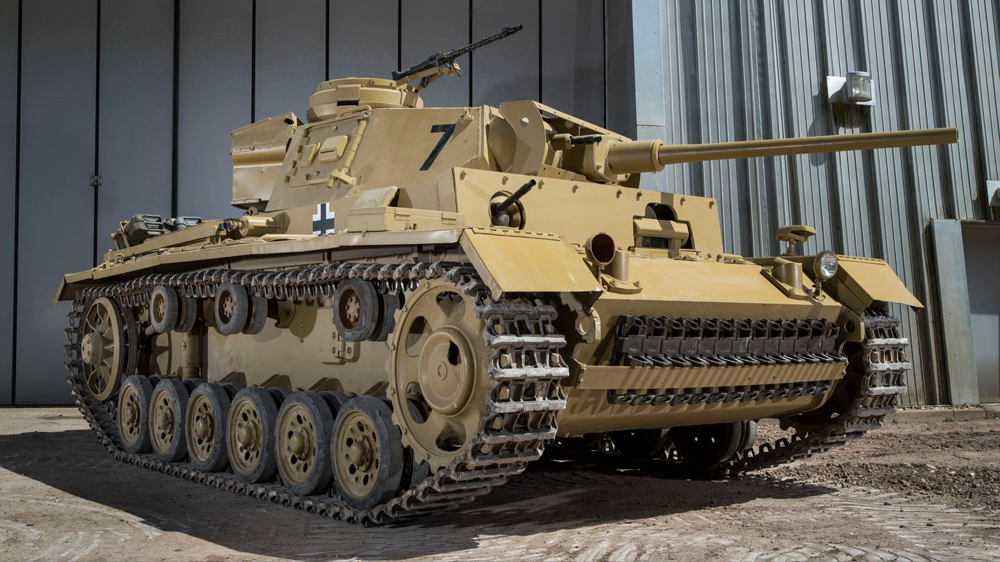
The Panzer III was used in the German campaigns in Poland, in France, in the Soviet Union, and in North Africa. Many were still in combat service against Western Allied forces in 1944-1945. About 18,000 vehicles based on the Panzer III chassis were produced between all variants accounting for over a quarter tank and assault guns produced by germany. It performed well early in the war in the invasion of Poland and France but was less effective in Africa against the Matilda and M3Lee/Grant. On the Eastern front it performed well against the older Russian Tanks but were outclassed by the new T-34 and KV heavy tanks. After the defeat at the battle of Kursk the Panzer III was relegated to secondary/minor combat roles and finally replaced by the Panzer IV and Panther.
Name: Panzer III, Medium Tank
No. Built: 5,774
Cost: 103,163 ℛ︁ℳ︁
Weight: 23.0 tonnes (25.4 short tons)
Main Armament: Ausf. A-G 3.7 cm KwK 36, Ausf. F-J 5 cm KwK 38, Ausf. J-M 5 cm KwK 39, Ausf. N 7.5 cm KwK 37 Ausf. N
Secondary Armament: 2–3 × 7.92 mm MG 34 machine gun
Engine: 12-cylinder Maybach HL120 TRM petrol engine 300 PS (295 hp, 220 kW)
Max Speed: Road: 40 km/h (25 mph), Off-road: 20 km/h (12 mph)
Operational Range: Road:165 km (103 mi), Cross-country: 85 km (53 mi)
Crew: 5
Panzer IV
 The Panzer IV saw service in all combat theatres involving Germany and was the only German tank to remain in continuous production throughout the war.
The Panzer IV had several variants from Ausf. A to Ausf J (10 in total) with various upgrades and design modifications, intended to counter new threats, extending its service life.
Generally, these involved increasing the armour protection or upgrading the weapons, although during the last months of the war, with Germany's pressing need for rapid replacement of
losses, design changes also included simplifications to speed up the manufacturing process.
The Panzer IV saw service in all combat theatres involving Germany and was the only German tank to remain in continuous production throughout the war.
The Panzer IV had several variants from Ausf. A to Ausf J (10 in total) with various upgrades and design modifications, intended to counter new threats, extending its service life.
Generally, these involved increasing the armour protection or upgrading the weapons, although during the last months of the war, with Germany's pressing need for rapid replacement of
losses, design changes also included simplifications to speed up the manufacturing process.
The Panzer IV saw service in all combat theatres involving Germany and was the only German tank to remain in continuous production throughout the war.
The Panzer IV had several variants from Ausf. A to Ausf J (10 in total) with various upgrades and design modifications, intended to counter new threats, extending its service life.
Generally, these involved increasing the armour protection or upgrading the weapons, although during the last months of the war, with Germany's pressing need for rapid replacement of
losses, design changes also included simplifications to speed up the manufacturing process.
Name: Panzer IV, Medium Tank
No. Built: 8,553 of all tank variants[
Cost: ~103,462 ℛ︁ℳ︁ (~490,000 USD), ~115,962 ℛ︁ℳ︁ With 7.5 cm KwK 40 (L/43) (~550,000 USD)
Weight: 25.0 tonnes, 27.6 short tons
Main Armament: Ausf. A-F1 - 7.5 cm KwK 37 L/24, Ausf. F2-G - 7.5 cm KwK 40 L/43, Ausf. H-J - 7.5 cm (2.95 in) KwK 40 L/48 main gun (87 rounds)
Secondary Armament: 2 × 7.92 mm MG 34 machine guns (3,150 rounds)
Engine: Maybach HL120 TRM 12-cylinder petrol engine 300 PS (296 hp, 220 kW)
Max Speed: 38 to 42 km/h (24 to 26 mph) maximum, 25 km/h (16 mph) max sustained road speed, 16 km/h (9.9 mph) off-road
Operational Range: Road: 235–360 km (146–224 mi), Cross-country: 120–235 km (75–146 mi)
Crew: 5
Neubaufahrzeug
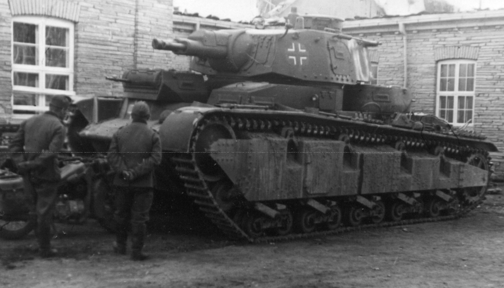
It was first attempt of tank prototypes to create a medium tank for the Wehrmacht. Multi-turreted, heavy and slow, they were not considered successful, which led to only five being produced. These were primarily used for propaganda purposes and training, though three took part in the Battle of Norway in 1940.
Name: Neubaufahrzeug, Medium Tank
No. Built: 5
Cost: No info
Weight: 23.41 tonnes, 25.81 short tons
Main Armament: 7.5 cm KwK 37
Secondary Armament: 3.7 cm KwK 36, 3× 7.92 mm MG 34 machine gun
Engine: 290 hp BMW Va
Max Speed: maximum: 30 km/h (19 mph) road: 25 km/h (16 mph)
Operational Range: road: 120 km (75 mi)
Crew: 6
Panther
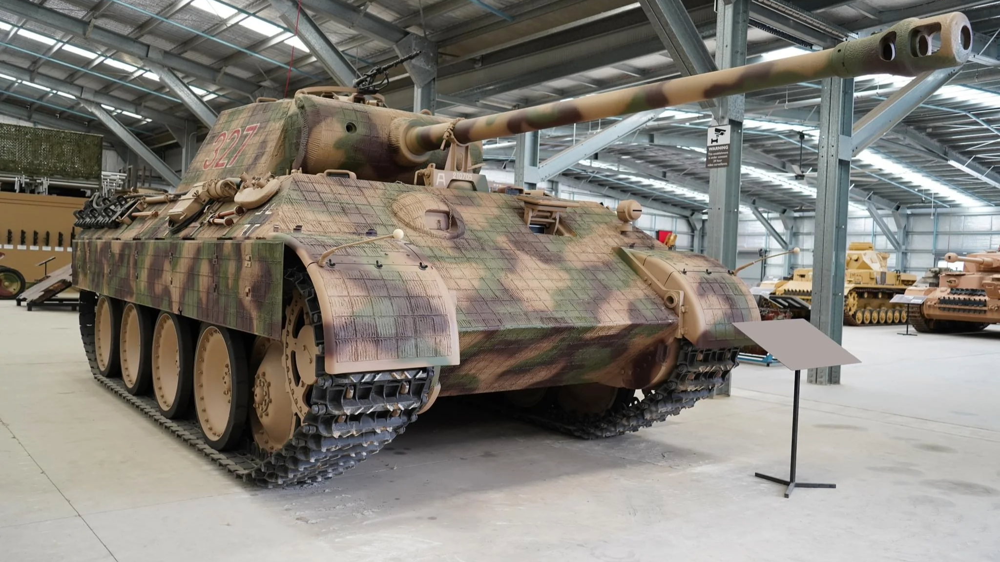
It was used in most European theatres of World War II from mid-1943 to the end of the war in May 1945. The Panther was designed to counter the Soviet T-34 medium tank. The Panther had excellent firepower, protection and mobility, though early variants suffered from reliability issues. The Panther was rushed into combat at the Battle of Kursk in the summer of 1943 despite numerous unresolved technical problems, leading to high losses due to mechanical failures. Most design flaws were rectified by late 1943 and early 1944, though the Allied bombing of production plants in Germany increased shortages for critical components.
Name: Panther, Medium Tank
No. Built: ~6,000
Cost: 117,100 ℛ︁ℳ︁ (without weapons, optics, or radio), 143,912 ℛ︁ℳ︁ (combat ready) 2,000 Man hours
Weight: 44.8 tonnes, 49.4 short tons
Main Armament: 75 mm KwK 42 L/70 tank gun with 79 rounds
Secondary Armament: 2 × 7.92 mm MG 34 machine guns with 5,100 rounds
Engine: V12 Maybach HL230 P30 petrol engine 700 PS (690 hp, 515 kW)
Max Speed: 55 km/h (34 mph) (early models), 46 km/h (29 mph) (later models)
Operational Range: Road: 260 km (160 mi), Cross-country: 100 km (62 mi)
Crew: 5
Panther II
 Based on the design of the original Panther tank. It had slightly thicker armour than the Panther and adopted some standardized
components from the Tiger II tank design. The Panther II did not progress beyond prototypes and did not enter production.
Based on the design of the original Panther tank. It had slightly thicker armour than the Panther and adopted some standardized
components from the Tiger II tank design. The Panther II did not progress beyond prototypes and did not enter production.
Based on the design of the original Panther tank. It had slightly thicker armour than the Panther and adopted some standardized
components from the Tiger II tank design. The Panther II did not progress beyond prototypes and did not enter production.
Name: Panther II, Medium Tank
No. Built: 1 Chassis
Cost: No info
Weight: No info
Main Armament: No info
Secondary Armament: No info
Engine: Maybach HL234 fuel-injection engine or BMW 003 aviation turbojet-derived, GT 101 turboshaft powerplant
Max Speed: No info
Operational Range: No info
Crew: 5
Tiger I
 The Tiger I was a German heavy tank of World War II that began operational duty in 1942 in
Africa and in the Soviet Union, usually in independent heavy tank battalions. It gave the German Army its first armoured fighting vehicle that mounted
the 8.8 cm (3.5 in) KwK 36 gun (derived from the 8.8 cm Flak 36, the famous "eighty-eight" feared by Allied troops). In the early period, the Tiger was prone to
certain types of track failures and breakdowns. It was expensive to maintain, but generally mechanically reliable.
The Tiger I was a German heavy tank of World War II that began operational duty in 1942 in
Africa and in the Soviet Union, usually in independent heavy tank battalions. It gave the German Army its first armoured fighting vehicle that mounted
the 8.8 cm (3.5 in) KwK 36 gun (derived from the 8.8 cm Flak 36, the famous "eighty-eight" feared by Allied troops). In the early period, the Tiger was prone to
certain types of track failures and breakdowns. It was expensive to maintain, but generally mechanically reliable.
The Tiger I was a German heavy tank of World War II that began operational duty in 1942 in
Africa and in the Soviet Union, usually in independent heavy tank battalions. It gave the German Army its first armoured fighting vehicle that mounted
the 8.8 cm (3.5 in) KwK 36 gun (derived from the 8.8 cm Flak 36, the famous "eighty-eight" feared by Allied troops). In the early period, the Tiger was prone to
certain types of track failures and breakdowns. It was expensive to maintain, but generally mechanically reliable.
Name: Tiger I, Heavy Tank
No. Built: 1,347
Cost: 250,700 ℛ︁ℳ︁
Weight: 54 tonnes (60 short tons), 57 tonnes (63 short tons) (Ausf. E) (Combat weight)
Main Armament: 8.8 cm KwK 36 L/56 92 AP and HE rounds
Secondary Armament: 2× 7.92 mm MG 34, 4,500 rounds, 4,800 rounds (Ausf. E)
Engine: Maybach HL230 P45 V-12 petrol engine 700 PS (690 hp, 515 kW)
Max Speed: 45.4 km/h (28.2 mph) on roads, 20–25 km/h (12–16 mph) cross country
Operational Range: Road: 195 km (121 mi), Cross country: 110 km (68 mi)
Crew: 5
Tiger II or King Tiger
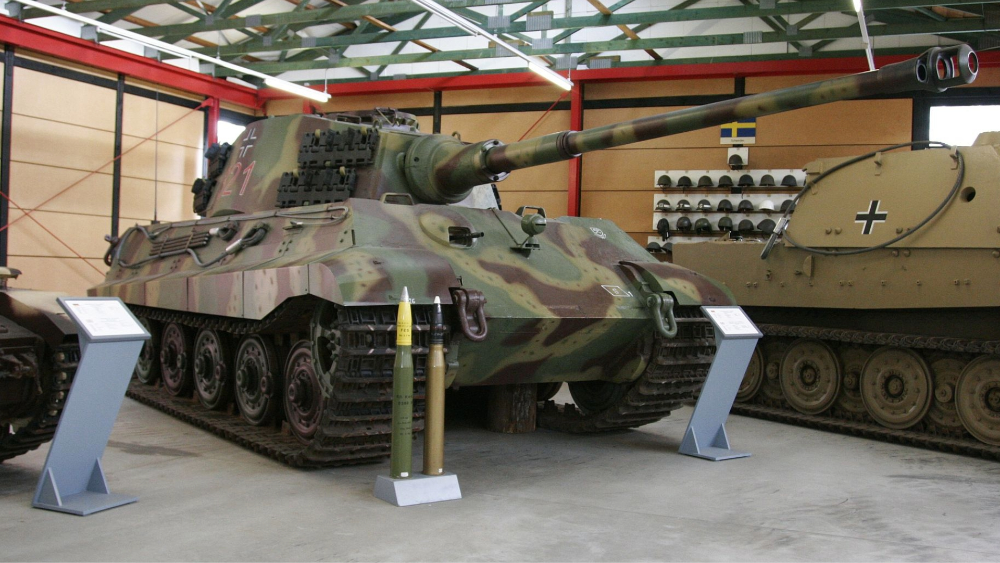
The Tiger II was the successor to the Tiger I, combining the latter's thick armour with the armour sloping used on the Panther medium tank. It was the costliest German tank to produce at the time. The tank was protected by 100 to 185 mm (3.9 to 7.3 in) of armour to the front. Early Tiger IIs proved unreliable, owing principally to leaking seals and gaskets, an overburdened drive train, changes were and by March 1945 reliability rates were 59 percent almost equal to the Panzer IV. The first combat use of the Tiger II was by the 1st Company of the 503rd Heavy Panzer Battalion during the Battle of Normandy, opposing the Canadian offensive Operation Atlantic on 18 July 1944. On the Eastern Front, it was first used on 12 August 1944 by the 501st Heavy Panzer Battalion resisting the Lvov–Sandomierz Offensive.
Name: Tiger II, Königstiger, King Tiger or Royal Tiger, Heavy Tank
No. Built: 492
Cost: 321,500 ℛ︁ℳ︁ ($160,750 USD) in 1944–45
Weight: 68.5 tonnes (75.5 short tons) early turret, 69.8 tonnes (76.9 short tons) production turret
Main Armament: 8.8 cm KwK 43 L/71 Early Krupp design turret: 80 rounds, Production turret: 86 rounds
Secondary Armament: 2× 7.92 mm MG 34 machine guns 5,850 rounds
Engine: V-12 Maybach HL 230 P30 petrol engine 700 PS (690 hp, 515 kW)
Max Speed:Maximum, road: 41.5 km/h (25.8 mph), Sustained, road: 38 km/h (24 mph), Cross country: 15 to 20 km/h (9.3 to 12.4 mph)
Operational Range: Road: 190 km (120 mi), Cross country: 120 km (75 mi)[6
Crew: 5
E-100
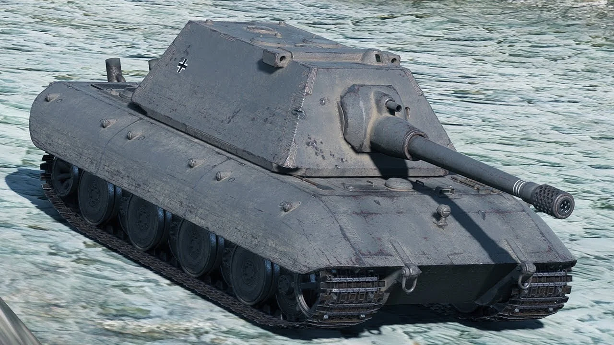
The Panzerkampfwagen E-100 (Gerät 383) (TG-01) was a German super-heavy tank design developed towards the end of World War II. It was the largest of the Entwicklung series of tank designs which was intended to improve German armored vehicle production through standardization on cheaper, simpler to build vehicles. By the end of the war, the chassis of the prototype E-100 had been partially completed. The first prototype was never fully completed and was found by the 751st Field Artillery Battalion of the American forces in April 1945. The partially completed vehicle was taken by the British Army for evaluation and then scrapped in the 1950s.
Name: Panzerkampfwagen E-100, Super-Heavy Tank
No. Built: 1 partial prototype
Cost: No info
Weight: 140 tonnes, 154 Short tons
Main Armament: 128 mm KwK 44 L/55 gun
Secondary Armament: co-axial 75 mm KwK 44 L/24 gun, 7.92mm MG34
Engine: supercharged Maybach HL232, Maybach HL230 (prototype) 1,200 hp (890 kW), 700 hp (520 kW) (prototype)
Max Speed: 40 km/h (25 mph), 23 km/h (14 mph) (prototype)
Operational Range: 160 km (99 mi) road 100 km (62 mi) cross-country
Crew: 6
Maus
 Maus was a German World War II super-heavy tank completed in July of 1944. It is the heaviest fully enclosed armored fighting vehicle ever built. Five were ordered,
but only two hulls and one turret were completed; the turret being attached before the testing grounds were captured by the Soviet military. The principal problem in the design of the Maus was developing
an engine and drivetrain powerful enough to adequately propel the tank, yet small enough to fit inside it. It was meant to use a "hybrid drive", an internal-combustion engine to operate an electric generator
to power its tracks with electric motor units. The vehicle's weight made it unable to use most bridges; instead it was intended to ford to a depth of 2 m (6.6 ft) or submerge up to a depth of 8 m (26 ft) and
use a snorkel to cross rivers.
Maus was a German World War II super-heavy tank completed in July of 1944. It is the heaviest fully enclosed armored fighting vehicle ever built. Five were ordered,
but only two hulls and one turret were completed; the turret being attached before the testing grounds were captured by the Soviet military. The principal problem in the design of the Maus was developing
an engine and drivetrain powerful enough to adequately propel the tank, yet small enough to fit inside it. It was meant to use a "hybrid drive", an internal-combustion engine to operate an electric generator
to power its tracks with electric motor units. The vehicle's weight made it unable to use most bridges; instead it was intended to ford to a depth of 2 m (6.6 ft) or submerge up to a depth of 8 m (26 ft) and
use a snorkel to cross rivers.
Maus was a German World War II super-heavy tank completed in July of 1944. It is the heaviest fully enclosed armored fighting vehicle ever built. Five were ordered,
but only two hulls and one turret were completed; the turret being attached before the testing grounds were captured by the Soviet military. The principal problem in the design of the Maus was developing
an engine and drivetrain powerful enough to adequately propel the tank, yet small enough to fit inside it. It was meant to use a "hybrid drive", an internal-combustion engine to operate an electric generator
to power its tracks with electric motor units. The vehicle's weight made it unable to use most bridges; instead it was intended to ford to a depth of 2 m (6.6 ft) or submerge up to a depth of 8 m (26 ft) and
use a snorkel to cross rivers.
Name: Maus, Super-Heavy Tank
No. Built: 2 (of which 1 incomplete)
Cost: ~800,000 ℛ︁ℳ︁
Weight: 188 tonnes (207 short tons)
Main Armament: 128 mm (5 in) KwK 44 gun L/55 (68 rounds)
Secondary Armament: 75 mm KwK 44 gun L/36.5 (co-axial, 100 rounds), 7.92 mm MG 34 machine gun (co-axial, 1,000 rounds)
Engine: (V1) MB509 V12 petrol engine, DB 603 derivative, (V2) MB 517 V12 diesel engine, (V1) 1,080 hp (805 kW), (V2) 1,200 hp (895 kW)
Max Speed: 20 km/h (12 mph) (maximum), 18 km/h (11 mph) (average road speed)
Operational Range: 160 km (99 mi) (road), 62 km (39 mi) (off-road)
Crew: 6
Panzerjäger I
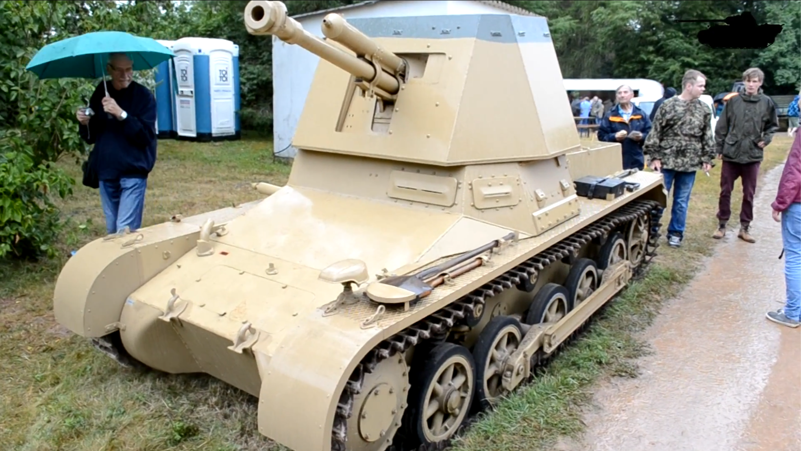
The Panzerjäger I was the first German Panzerjäger ("tank hunter") to see service in the Second World War. It mounted the Czech 4.7 cm KPÚV vz. 38 (German designation "4.7 cm Pak(t)) anti-tank gun on a converted open-topped Panzer I Ausf. B chassis. It was intended to counter heavy French tanks like the Char B1 bis that were beyond the capabilities of the 3.7 cm Pak 36 anti-tank gun and extended the life of the obsolete Panzer I chassis. A total of 202 Panzer I chassis were converted to Panzerjäger I standard in 1940–41, and were employed in the Battle of France, in the North Africa campaign and on the Eastern Front.
Name: Panzerjäger I
No. Built: 202
Cost: No info
Weight: 6.4 tonnes (7 short tons)
Main Armament: 4.7 cm (1.9 in) Pak(t) L/43
Secondary Armament: None
Engine: 3.8 litres (230 cu in) 6-cylinder, water-cooled Maybach NL38 TR 100 hp (75 kW)
Max Speed: 40 km/h (25 mph)
Operational Range: 140 km (87 mi)
Crew: 3
Sturmgeschütz III
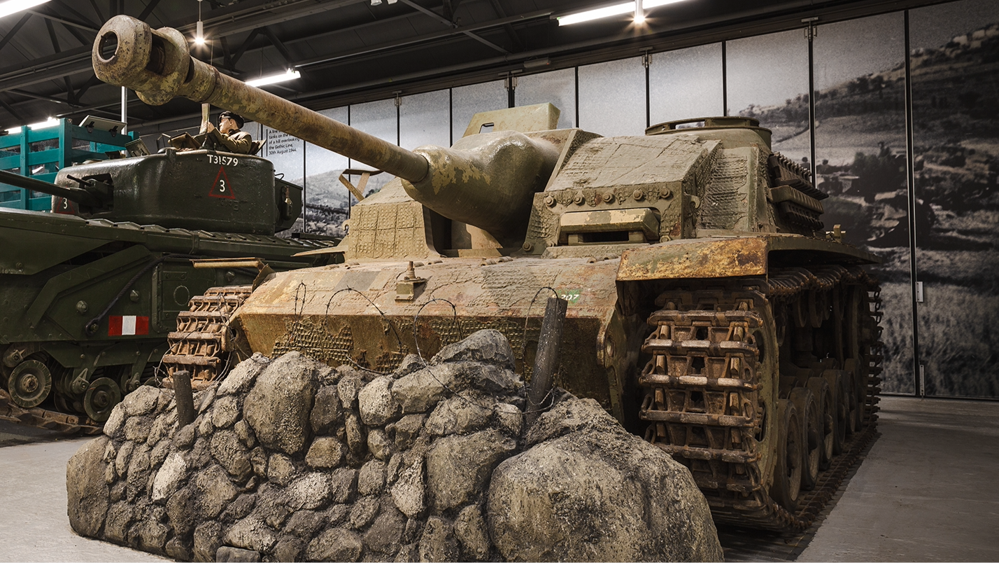
It was the most-produced German fully tracked armoured fighting vehicle. It was built on a slightly modified Panzer III chassis, replacing the turret with an armored, fixed superstructure mounting a more powerful gun. 8 variants of the StuG III were made from Ausf. A to G.The Sturmgeschütz III-series of vehicles proved very successful and served on all fronts, from Russia to North Africa and Western Europe to Italy, as assault guns and tank destroyers. Because of their low silhouette, StuG IIIs were easy to camouflage and hide, and were difficult targets to destroy.
Name: Sturmgeschütz III, Tank Destroyer
No. Built: 10,086
Cost: 82,500 ℛ︁ℳ︁
Weight: 23.9 tonnes (26.34 short tons)
Main Armament: 7.5 cm StuK 40 L/48 54 rounds
Secondary Armament: 7.92 mm MG34 or MG42 machine gun (600 rounds), Coaxial 7.92 mm MG34 machine gun from 1944 on (600 rounds)
Engine: Maybach HL120 TRM V-12 gasoline engine 300 PS (296 hp, 220 kW)
Max Speed: 40 km/h (25 mph)
Operational Range: Road: 155 km (96 mi), Cross-country: 75 km (47 mi)
Crew: 4
Sturmgeschütz IV
 The Sturmgeschütz IV was identical in role and concept to the highly successful StuG III but built on the Panzer IV chassis. The StuG IV became known as an
effective tank killer, especially on the Eastern Front.
The Sturmgeschütz IV was identical in role and concept to the highly successful StuG III but built on the Panzer IV chassis. The StuG IV became known as an
effective tank killer, especially on the Eastern Front.
The Sturmgeschütz IV was identical in role and concept to the highly successful StuG III but built on the Panzer IV chassis. The StuG IV became known as an
effective tank killer, especially on the Eastern Front.
Name: Sturmgeschütz IV, Tank Destroyer
No. Built: 1,141
Cost: No info
Weight: 23 tonnes (25.35 short tons)
Main Armament: 7.5 cm StuK 40 L/48 63 rounds
Secondary Armament: 7.92 mm Maschinengewehr 34 (600 rounds)
Engine: Maybach HL120 TRM V-12-cylinder gasoline 300 PS (296 hp, 220.6 kW)
Max Speed:40 km/h (25 mph)
Operational Range: Road: 210 km (130 mi), Cross-country: 120 km (75 mi)
Crew: 4
Marder I
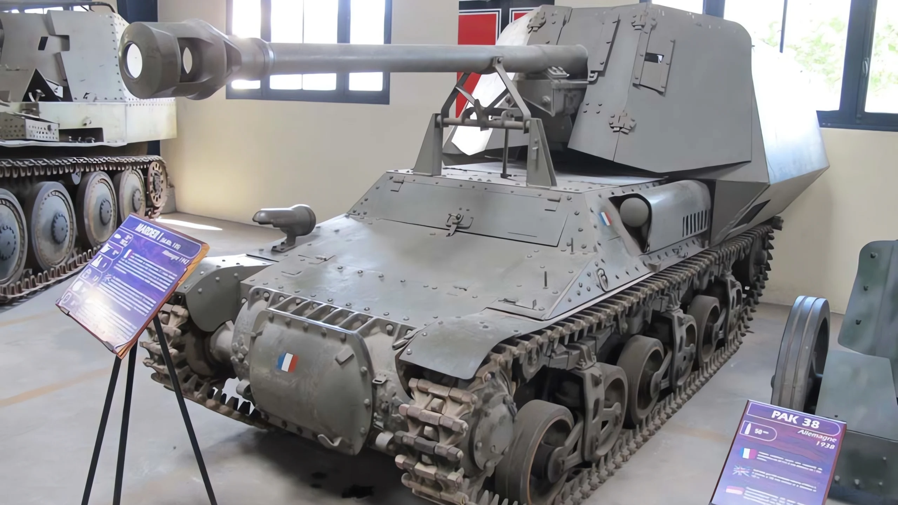
The Marder I "Marten" (Sd.Kfz. 135) was a German World War II tank destroyer, armed with a 75 mm Pak-40 anti-tank gun. Most Marder Is were built on the base of the Tracteur Blindé 37L (Lorraine), a French artillery tractor/armored personnel carrier of which the Germans had acquired more than 300 units after the Fall of France in 1940. The first Lorraine-based Marder I vehicles were sent to the Eastern Front in 1942 to serve in the Panzerjäger (tank destroyer) units of infantry divisions.
Name: Marder I, Tank Destroyer
No. Built: 170
Cost: No info
Weight: 8.2 tonnes (9.05 short tons)
Main Armament: 7.5 cm Pak 40 L/46
Secondary Armament: None
Engine: Delahaye 103TT 70 PS (69 hp; 51 kW)
Max Speed: 34–38 km/h (21–24 mph) road, 15–20 km/h (9.3–12.4 mph) off-road
Operational Range: 135–150 km (84–93 mi) road
Crew: 4 to 5
Marder II
 The Marder II was a German tank destroyer of World War II based on the Panzer II chassis. There were two versions, the first mounted a modified Soviet 7.62 cm gun firing
German ammunition, while the other mounted the German 7.5 cm Pak 40 gun. The Marder IIs produced fought on all European fronts of the war, however there was a large concentration of
these on the Eastern Front. The combination of a high silhouette and open-top fighting compartment made them vulnerable to indirect artillery fire, aircraft strafing, and grenades, despite their weaknesses,
they were more effective than the towed antitank guns that they replaced.
The Marder II was a German tank destroyer of World War II based on the Panzer II chassis. There were two versions, the first mounted a modified Soviet 7.62 cm gun firing
German ammunition, while the other mounted the German 7.5 cm Pak 40 gun. The Marder IIs produced fought on all European fronts of the war, however there was a large concentration of
these on the Eastern Front. The combination of a high silhouette and open-top fighting compartment made them vulnerable to indirect artillery fire, aircraft strafing, and grenades, despite their weaknesses,
they were more effective than the towed antitank guns that they replaced.
The Marder II was a German tank destroyer of World War II based on the Panzer II chassis. There were two versions, the first mounted a modified Soviet 7.62 cm gun firing
German ammunition, while the other mounted the German 7.5 cm Pak 40 gun. The Marder IIs produced fought on all European fronts of the war, however there was a large concentration of
these on the Eastern Front. The combination of a high silhouette and open-top fighting compartment made them vulnerable to indirect artillery fire, aircraft strafing, and grenades, despite their weaknesses,
they were more effective than the towed antitank guns that they replaced.
Name: Marder II, Tank Destroyer
No. Built: ~863 (681 built, ~182 converted)
Cost: No info
Weight: 10.8 tonnes (11.9045 short tons)
Main Armament: 7.62 cm Pak 36(r) w/ 30 rounds (Sd.Kfz. 132), 7.5 cm Pak 40 gun w/ 37 rounds (Sd.Kfz. 131)
Secondary Armament: 7.92 mm MG 34
Engine: Maybach HL 62 TRM 6-cylinder gasoline engine 138 hp (140 PS, 103 kW)
Max Speed: 40 km/h (25 mph)
Operational Range:190 km (118 mi)
Crew: 4
Marder III
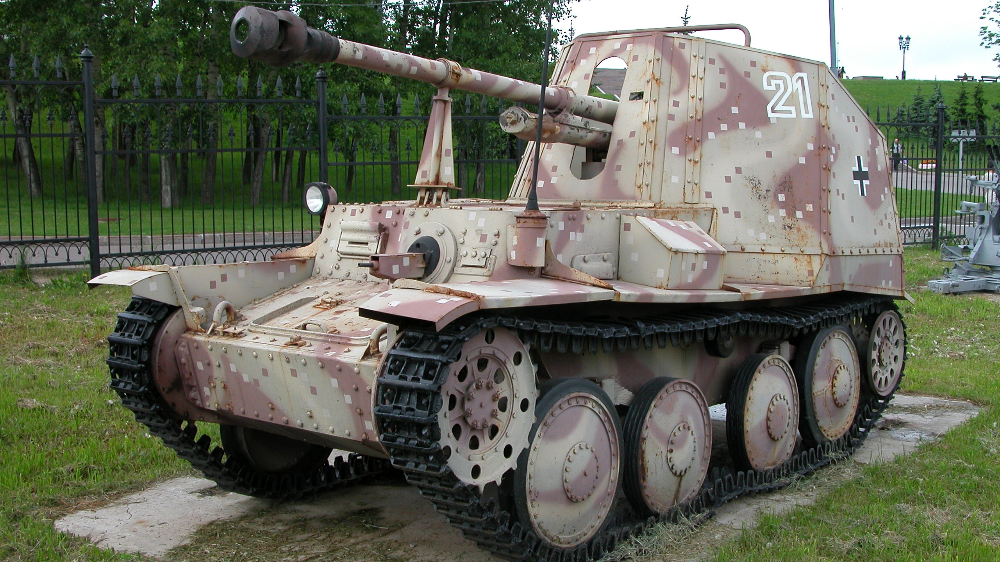
Marder III was mounted either the modified ex-Soviet 76.2 mm F-22 Model 1936 divisional field gun, or the German 7.5 cm PaK 40, in an open-topped fighting compartment on top of the chassis of the Czechoslovak Panzer 38(t). They offered little protection to the crew, but added significant firepower, which was able to destroy the thick-armored T-34s. They were in production from 1942 to 1944 with three variants, the Marder III, Marder III H, and Marder III M, and served on all fronts until the end of the war.
Name: Marder III, Tank Destroyer
No. Built: 1736 produced and converted, Sd. Kfz. 139:344 produced, Sd.Kfz. 138, Ausf. H: 275 produced, 175 converted, Sd.Kfz. 138, Ausf. M: 942 produced
Cost: No info
Weight: 10,670 kg (11.76 Short Tons)
Main Armament: 7.62 cm PaK 36(r) (Sd.Kfz. 139), 7.5 cm PaK 40 (Sd.Kfz. 138 Ausf. H and M)
Secondary Armament: 7.92 mm MG 37(t), MG 34 or MG 42
Engine: Praga Typ TNHPS/II water-cooled, 6-cylinder gasoline, 125–150 PS (123–148 hp; 92–110 kW)
Max Speed: 35–42 km/h (22–26 mph)
Operational Range: 190–210 km (120–130 mi)
Crew: 4
Elefant
_Elefant.jpg) Elefant (German for "elephant") was a heavy tank destroyer. Ninety-one units were built in 1943 under the name Ferdinand (after its designer Ferdinand Porsche)
using VK 45.01 (P) tank hulls which had been produced for the Tiger I tank before the competing Henschel design had been selected. Following their use at the battle of Kursk, in January to April 1944
the surviving Ferdinands received modifications and upgrades. They were renamed Elefant in May 1944. The Ferdinand was highly effective at engaging Soviet T-34 medium tanks and 76.2 mm anti-tank guns from
behind the front line with its 88 mm gun at a range of over 3 kilometres. Most losses were not as a direct result from combat, but resulted when mechanical breakdowns and lack of spare parts.
Elefant (German for "elephant") was a heavy tank destroyer. Ninety-one units were built in 1943 under the name Ferdinand (after its designer Ferdinand Porsche)
using VK 45.01 (P) tank hulls which had been produced for the Tiger I tank before the competing Henschel design had been selected. Following their use at the battle of Kursk, in January to April 1944
the surviving Ferdinands received modifications and upgrades. They were renamed Elefant in May 1944. The Ferdinand was highly effective at engaging Soviet T-34 medium tanks and 76.2 mm anti-tank guns from
behind the front line with its 88 mm gun at a range of over 3 kilometres. Most losses were not as a direct result from combat, but resulted when mechanical breakdowns and lack of spare parts.
Elefant (German for "elephant") was a heavy tank destroyer. Ninety-one units were built in 1943 under the name Ferdinand (after its designer Ferdinand Porsche)
using VK 45.01 (P) tank hulls which had been produced for the Tiger I tank before the competing Henschel design had been selected. Following their use at the battle of Kursk, in January to April 1944
the surviving Ferdinands received modifications and upgrades. They were renamed Elefant in May 1944. The Ferdinand was highly effective at engaging Soviet T-34 medium tanks and 76.2 mm anti-tank guns from
behind the front line with its 88 mm gun at a range of over 3 kilometres. Most losses were not as a direct result from combat, but resulted when mechanical breakdowns and lack of spare parts.
Name: Panzerjäger Tiger (P) or "Elefant", Tank Destroyer
No. Built: 91
Cost: No info
Weight: 65 tonnes (71.5 Short tons)
Main Armament: 8.8 cm Pak 43/2 L/71
Secondary Armament: 7.92 mm MG 34 machine gun
Engine: 2 × Maybach HL120 TRM petrol 600 PS (592 hp, 442 kW)
Max Speed: 30 kilometres per hour (19 mph)
Operational Range: 150 km (93 mi) roa, 90 km (56 mi) cross-country
Crew: 6
Hetzel, Jagdpanzer 38
 The Jagdpanzer 38 originally the Leichter Panzerjäger 38(t), known mostly post-war as Hetzer, was a German light tank destroyer based on a modified Czechoslovak Panzer 38(t) chassis.
Allied bombings took a heavy toll on German production facilities and further increased the need for an easily produced, yet effective light tank destroyer to replace vehicles like the StuG III and Marder series
(Marder I, II, and III). Jagdpanzer 38s first entered service in July 1944 and was able to destroy nearly all Allied or Soviet tank types in service at long ranges (except heavy tanks), and its fully enclosed armour
protection made it a safer vehicle to crew than the open-topped Marder II or Marder III series. The Jagdpanzer 38 mounted a remote-control machine gun mount that could be fired from within the vehicle.
The vehicle's small size made it easier to conceal and set up in defensive positions for ambushes.
The Jagdpanzer 38 originally the Leichter Panzerjäger 38(t), known mostly post-war as Hetzer, was a German light tank destroyer based on a modified Czechoslovak Panzer 38(t) chassis.
Allied bombings took a heavy toll on German production facilities and further increased the need for an easily produced, yet effective light tank destroyer to replace vehicles like the StuG III and Marder series
(Marder I, II, and III). Jagdpanzer 38s first entered service in July 1944 and was able to destroy nearly all Allied or Soviet tank types in service at long ranges (except heavy tanks), and its fully enclosed armour
protection made it a safer vehicle to crew than the open-topped Marder II or Marder III series. The Jagdpanzer 38 mounted a remote-control machine gun mount that could be fired from within the vehicle.
The vehicle's small size made it easier to conceal and set up in defensive positions for ambushes.
The Jagdpanzer 38 originally the Leichter Panzerjäger 38(t), known mostly post-war as Hetzer, was a German light tank destroyer based on a modified Czechoslovak Panzer 38(t) chassis.
Allied bombings took a heavy toll on German production facilities and further increased the need for an easily produced, yet effective light tank destroyer to replace vehicles like the StuG III and Marder series
(Marder I, II, and III). Jagdpanzer 38s first entered service in July 1944 and was able to destroy nearly all Allied or Soviet tank types in service at long ranges (except heavy tanks), and its fully enclosed armour
protection made it a safer vehicle to crew than the open-topped Marder II or Marder III series. The Jagdpanzer 38 mounted a remote-control machine gun mount that could be fired from within the vehicle.
The vehicle's small size made it easier to conceal and set up in defensive positions for ambushes.
Name: Leichter Panzerjäger 38(t), Jagdpanzer 38, Hetzer, Tank Destroyer
No. Built: Approx. 2,827
Cost: No info
Weight: 15.75 tonnes (17.361 Short tons)
Main Armament: 7.5 cm Pak 39 L/48 41 rounds
Secondary Armament: 1× 7.92 mm MG 34 or MG 42 machine gun 1,200 rounds
Engine: Praga 6-cylinder petrol, 7.8 litres 160 PS (158 hp, 118 kW) at 2,800 rpm
Max Speed: 42 km/h (26 mph)
Operational Range: Road:180 km (110 mi), Cross-country: 130 km (81 mi)
Crew: 4
Jagdpanzer IV
 It was developed against the wishes of Heinz Guderian, the inspector general of the Panzertruppen, as a replacement for the Sturmgeschütz III (StuG III).
Guderian objected to what he considered a needless diversion of resources from Panzer IV production, as the StuG III was still more than adequate for its role. There were 4 variants,
Jagdpanzer IV 0-Serie a prototype, Jagdpanzer IV (Sd.Kfz.162) equipped with a 7.5 cm Pak 39 L/48, Panzer IV/70 (V) (Sd.Kfz.162/1) equipped with a 7.5 cm KwK 42 L/70, and
Panzer IV/70 (A) (Sd.Kfz.162/1) 7.5 cm KwK 42 L/70. The vehicle fought against Western Allied forces in Normandy and the Battle of the Bulge, and Soviet tanks and troops on the Eastern Front.
It was very successful as a tank destroyer due to its low profile, accurate gun and good armour protection, but performed poorly when used out of role which was increasingly necessary in the later stages of the war.
It was developed against the wishes of Heinz Guderian, the inspector general of the Panzertruppen, as a replacement for the Sturmgeschütz III (StuG III).
Guderian objected to what he considered a needless diversion of resources from Panzer IV production, as the StuG III was still more than adequate for its role. There were 4 variants,
Jagdpanzer IV 0-Serie a prototype, Jagdpanzer IV (Sd.Kfz.162) equipped with a 7.5 cm Pak 39 L/48, Panzer IV/70 (V) (Sd.Kfz.162/1) equipped with a 7.5 cm KwK 42 L/70, and
Panzer IV/70 (A) (Sd.Kfz.162/1) 7.5 cm KwK 42 L/70. The vehicle fought against Western Allied forces in Normandy and the Battle of the Bulge, and Soviet tanks and troops on the Eastern Front.
It was very successful as a tank destroyer due to its low profile, accurate gun and good armour protection, but performed poorly when used out of role which was increasingly necessary in the later stages of the war.
It was developed against the wishes of Heinz Guderian, the inspector general of the Panzertruppen, as a replacement for the Sturmgeschütz III (StuG III).
Guderian objected to what he considered a needless diversion of resources from Panzer IV production, as the StuG III was still more than adequate for its role. There were 4 variants,
Jagdpanzer IV 0-Serie a prototype, Jagdpanzer IV (Sd.Kfz.162) equipped with a 7.5 cm Pak 39 L/48, Panzer IV/70 (V) (Sd.Kfz.162/1) equipped with a 7.5 cm KwK 42 L/70, and
Panzer IV/70 (A) (Sd.Kfz.162/1) 7.5 cm KwK 42 L/70. The vehicle fought against Western Allied forces in Normandy and the Battle of the Bulge, and Soviet tanks and troops on the Eastern Front.
It was very successful as a tank destroyer due to its low profile, accurate gun and good armour protection, but performed poorly when used out of role which was increasingly necessary in the later stages of the war.
Name: Jagdpanzer IV, Tank Destoyer
No. Built: About 2,000
Cost: No info
Weight: 25.8 tonnes (28.4 short tons)
Main Armament: 7.5 cm Pak 42 L/70 55-60 rounds
Secondary Armament: 7.92 mm Maschinengewehr 42 1,200 rounds
Engine:Maybach HL120 TRM 300 PS (296 hp, 221 kW)
Max Speed: 35 km/h (22 mph) on road
Operational Range: Road:210 km (130 mi), Cross-country:120 km (75 mi)
Crew: 4
Nashorn
 Nashorn ("rhinoceros") initially known as Hornisse ("hornet") was developed as an interim solution in 1942 by equipping a light turretless chassis based on the
Panzer III and Panzer IV tanks with the 8.8 cm Pak 43 anti-tank gun. Though only lightly armoured and displaying a high profile, it could penetrate the front armour of any Allied tank at long range,
and its relatively low cost and superior mobility to heavier vehicles ensured it remained in production until the war's end. The Hornisse/Nashorn made its debut during the Battle of Kursk in 1943, where it performed
extremely well. The ability to engage the enemy at long distances negated the disadvantages of its light armour, lack of a roof and a large profile, and revealed that the weapon was well suited to the open and flat terrain.
Nashorn ("rhinoceros") initially known as Hornisse ("hornet") was developed as an interim solution in 1942 by equipping a light turretless chassis based on the
Panzer III and Panzer IV tanks with the 8.8 cm Pak 43 anti-tank gun. Though only lightly armoured and displaying a high profile, it could penetrate the front armour of any Allied tank at long range,
and its relatively low cost and superior mobility to heavier vehicles ensured it remained in production until the war's end. The Hornisse/Nashorn made its debut during the Battle of Kursk in 1943, where it performed
extremely well. The ability to engage the enemy at long distances negated the disadvantages of its light armour, lack of a roof and a large profile, and revealed that the weapon was well suited to the open and flat terrain.
Nashorn ("rhinoceros") initially known as Hornisse ("hornet") was developed as an interim solution in 1942 by equipping a light turretless chassis based on the
Panzer III and Panzer IV tanks with the 8.8 cm Pak 43 anti-tank gun. Though only lightly armoured and displaying a high profile, it could penetrate the front armour of any Allied tank at long range,
and its relatively low cost and superior mobility to heavier vehicles ensured it remained in production until the war's end. The Hornisse/Nashorn made its debut during the Battle of Kursk in 1943, where it performed
extremely well. The ability to engage the enemy at long distances negated the disadvantages of its light armour, lack of a roof and a large profile, and revealed that the weapon was well suited to the open and flat terrain.
Name: Nashorn, Tank Destroyer
No. Built: 494
Cost: No info
Weight: 24 tonnes (26.45 Short tons)
Main Armament: 8.8 cm Pak 43 L/71 40-60 rounds
Secondary Armament: 7.92 mm MG34 or MG42 machine gun (carried inside) with 600 rounds
Engine: Maybach HL120 TRM 11.9-litre V-12 gasoline engine 296 hp (300 PS, 221 kW)
Max Speed: 42 km/h (26 mph)
Operational Range: 260 km (160 mi)
Crew: 5
Jagdpanther
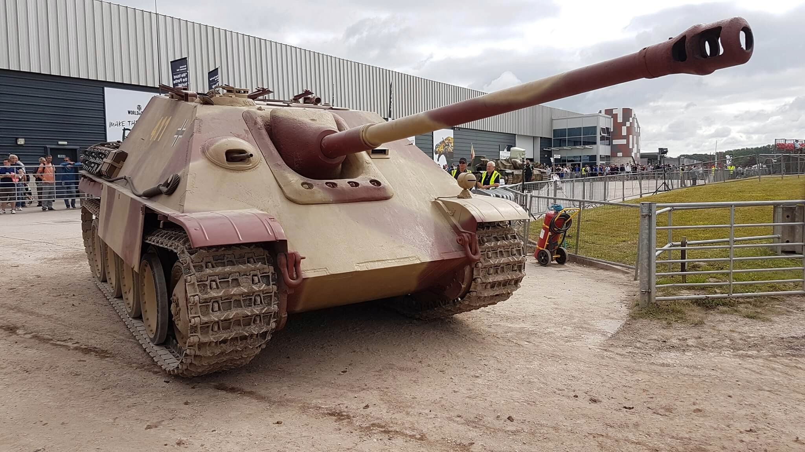
The Jagdpanther combined the 8.8 cm Pak 43 anti-tank gun, similar to the main gun of the Tiger II, with the armor and suspension of the Panther chassis.It entered service in 1944 and served on the Eastern and Western Fronts. During the last stages of the war, limited German production resulted in small production numbers, shortage of spare parts, and shortened crew training periods.
Name: Jagdpanther, Tank Destroyer
No. Built: 413 (+ 12 postwar)
Cost: No info
Weight: 45.5 tonnes (50.2 short tons)
Main Armament: 8.8 cm Pak 43/3 L/71 or 43/4 L/71 (57 rounds)
Secondary Armament: 7.92 mm MG 34 machine gun (600 rounds)
Engine: Maybach HL230 P30 (V-12 petrol) 700 PS (690 hp, 515 kW)
Max Speed: 46 km/h (29 mph)
Operational Range: Road:260 km (160 mi), Cross-country:130 km (81 mi)
Crew: 5
Jagdtiger
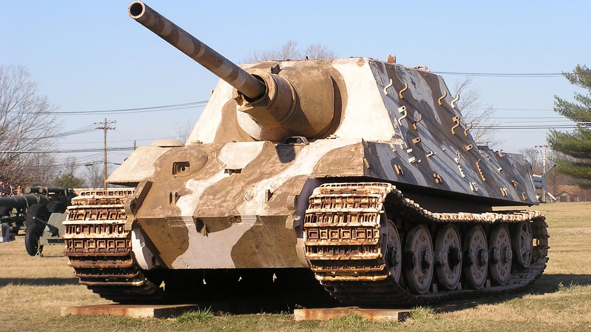
The Jagdtiger ("Hunting Tiger") is a German casemate-type heavy tank destroyer (Jagdpanzer) of World War II. It was built upon the slightly lengthened chassis of a Tiger II. The 72-tonne Jagdtiger was the heaviest armored fighting vehicle (AFV) used operationally by any nation in WWII and the heaviest combat vehicle of any type to be produced during the conflict. It was armed with a 12.8 cm Pak 44 L/55 main gun which could out-range and defeat any AFV fielded by the Allied forces. It saw brief service in small numbers from late 1944 until the end of the war on both the Western and Eastern Front. Due to an excessive weight and an underpowered drivetrain system, the Jagdtiger was plagued with mobility and mechanical problems. While on some occasions the Jagdtiger managed to destroy a number of Allied tanks over long distances from good ambush positions, the effort to produce and maintain them and their mechanical breakdowns made them a costly overall failure.
Name: Jagdtiger, Tank Destoyer
No. Built: 70–88
Cost: No info
Weight: 71.7 tonnes (79 Short Ton)
Main Armament: 12.8 cm Pak 44 L/55
Secondary Armament: 1 × 7.92 mm MG 34 (some later-built versions equipped with a single MG 42 anti-aircraft machine gun-mount at the vehicle's rear)
Engine: V-12 Maybach HL230 P30 600 hp(M) (591 hp(I), 441 kW)
Max Speed: 34 km/h (21 mph)
Operational Range: Road: 120 km (75 mi), Off road: 80 km (50 mi)
Crew: 6
Sturm-Infanteriegeschütz 33B
.jpg) The Sturm-Infanteriegeschütz 33B ("Assault Infantry Gun 33B"), was a German self-propelled heavy assault gun. A new, fully enclosed, and heavily armored boxy casemate superstructure was built on the chassis of the Sturmgeschütz III. It mounted the improved sIG 33/1 infantry gun, offset to the right side,
for which 30 rounds were carried. The first dozen were delivered by the end of October 1942 and assigned to Sturmgeschütz-Abteilungen (Assault Gun Battalions) 177 and 244, then fighting in Stalingrad. The rest were assigned to the 22nd Panzer Division as the Germans attempted to relieve the trapped 6th Army in Stalingrad.
The Sturm-Infanteriegeschütz 33B ("Assault Infantry Gun 33B"), was a German self-propelled heavy assault gun. A new, fully enclosed, and heavily armored boxy casemate superstructure was built on the chassis of the Sturmgeschütz III. It mounted the improved sIG 33/1 infantry gun, offset to the right side,
for which 30 rounds were carried. The first dozen were delivered by the end of October 1942 and assigned to Sturmgeschütz-Abteilungen (Assault Gun Battalions) 177 and 244, then fighting in Stalingrad. The rest were assigned to the 22nd Panzer Division as the Germans attempted to relieve the trapped 6th Army in Stalingrad.
The Sturm-Infanteriegeschütz 33B ("Assault Infantry Gun 33B"), was a German self-propelled heavy assault gun. A new, fully enclosed, and heavily armored boxy casemate superstructure was built on the chassis of the Sturmgeschütz III. It mounted the improved sIG 33/1 infantry gun, offset to the right side,
for which 30 rounds were carried. The first dozen were delivered by the end of October 1942 and assigned to Sturmgeschütz-Abteilungen (Assault Gun Battalions) 177 and 244, then fighting in Stalingrad. The rest were assigned to the 22nd Panzer Division as the Germans attempted to relieve the trapped 6th Army in Stalingrad.
Name: Sturm-Infanteriegeschütz 33B, Assault Gun
No. Built: 24
Cost: No info
Weight: 21 tonnes (23 short tons)
Main Armament: 15 cm sIG 33/1
Secondary Armament: 1× 7.92 mm Maschinengewehr 34
Engine: 12-cylinder Maybach HL120 TRM 300 PS (296 hp, 221 kW)
Max Speed: 20 kilometres per hour (12 mph)
Operational Range: 110 kilometres (68 mi)
Crew: 5
Brummbär
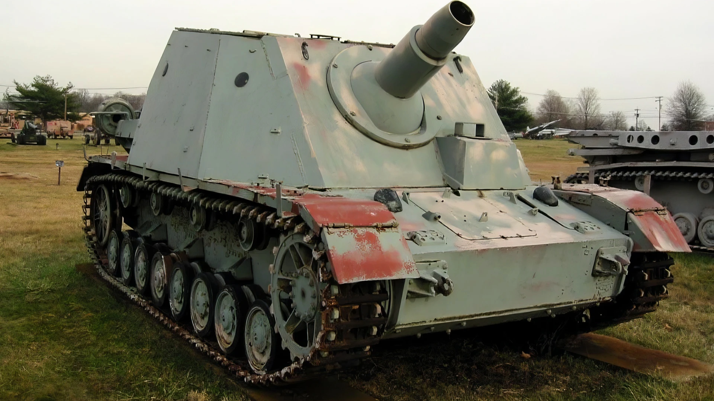
The Sturmpanzer (also known as Sturmpanzer 43 or Sd.Kfz. 166) is a German armoured infantry support gun based on the Panzer IV chassis. It was used at the Battles of Kursk, Anzio, Normandy, and was deployed in the Warsaw Uprising. It was known by the nickname Brummbär (German: "Grouch") by Allied intelligence, German soldiers nicknamed it the "Stupa".
Name: Brummbär, Assualt Gun
No. Built: 306
Cost: No info-box
Weight: 28.2 tonnes (31.085 Short Tons)
Main Armament: 15 cm StuH 43 L/12
Secondary Armament: Series IV: 1x 7.92 mm (0.312 in) MG 34
Engine: liquid-cooled V-12 Maybach HL120 TRM 300 PS (296 hp, 220 kW)
Max Speed: Road: 40 km/h (25 mph), Off-road: 24 km/h (15 mph)
Operational Range: Road: 210 km (130 mi)
Crew: 5
Sturmtiger
 Sturmtiger (German for 'Assault Tiger') was a World War II German assault gun built on the Tiger I chassis and armed with a 380mm rocket-propelled mortar.
Its primary task was to provide heavy fire support for infantry units fighting in urban areas. The few vehicles produced fought in the Warsaw Uprising, the Battle of the Bulge and the Battle of the Reichswald.
Sturmtiger (German for 'Assault Tiger') was a World War II German assault gun built on the Tiger I chassis and armed with a 380mm rocket-propelled mortar.
Its primary task was to provide heavy fire support for infantry units fighting in urban areas. The few vehicles produced fought in the Warsaw Uprising, the Battle of the Bulge and the Battle of the Reichswald.
Sturmtiger (German for 'Assault Tiger') was a World War II German assault gun built on the Tiger I chassis and armed with a 380mm rocket-propelled mortar.
Its primary task was to provide heavy fire support for infantry units fighting in urban areas. The few vehicles produced fought in the Warsaw Uprising, the Battle of the Bulge and the Battle of the Reichswald.
Name: Sturmtiger, Assault Gun
No. Built: 18 (using rebuilt Tiger I chassis)
Cost: No info
Weight: 68 tonnes (75 short tons)
Main Armament: 380 mm RW 61 rocket launcher L/5.4
Secondary Armament: 1 x 7.92 mm MG 34
Engine: Maybach HL230 P45 V-12, water-cooled gasoline 700 PS (690 hp, 515 kW)
Max Speed: 40 km/h (25 mph)
Operational Range: 120 km (75 mi)
Crew: 5
Sturer Emil
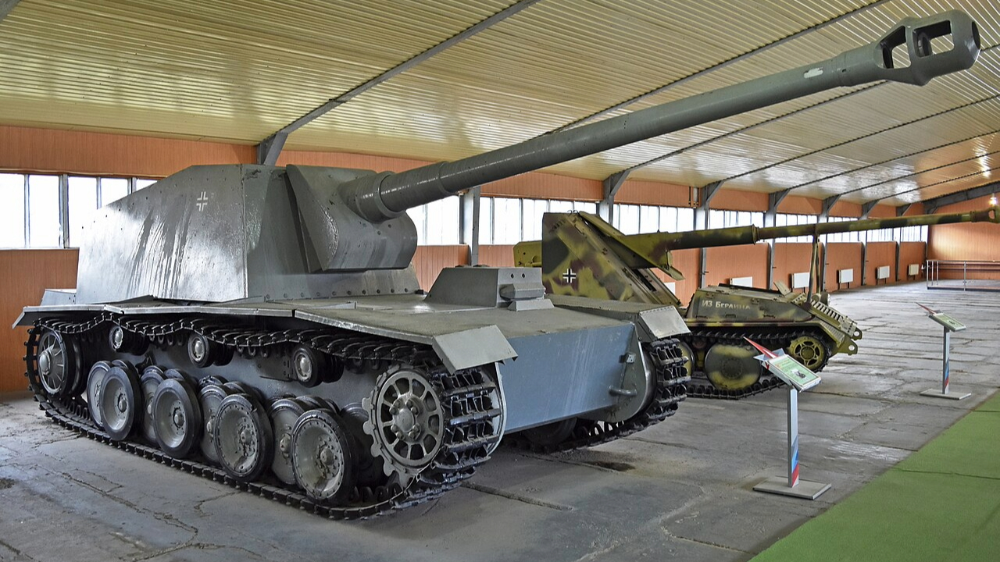
The 12.8 cm Selbstfahrlafette auf VK 30.01(H) "Sturer Emil" (German for "Stubborn Emil") was an experimental World War II German self-propelled anti-fortification gun. Two vehicles were built (and named after Max and Moritz, the storybook characters); both of which served on the Eastern Front. Max was either destroyed or abandoned due to persistent mechanical issues in 1942, while Moritz was captured at Stalingrad in January 1943, with at least 22 kill marks painted on the barrel.
Name: Sturer Emil, Anti-fortification gun
No. Built: 2
Cost: No info
Weight: 35 t (39 short tons)
Main Armament: 12.8 cm Flak 40 L/61
Secondary Armament: MG 34
Engine: Maybach HL116, liquid-cooled I-6 300 PS (220 kW)
Max Speed: 25 km/h (16 mph)
Operational Range: No info
Crew: 5
10.5 cm K gepanzerte Selbstfahrlafette
 Also known as the Panzer Selbstfahrlafette IV Ausf. A, it was a prototype self-propelled gun used by Nazi Germany during World War II. Although it was originally designed as a Schartenbrecher ("bunker buster")
for use against the French Maginot Line defences, following the defeat of France in 1940, it was evaluated for use as a tank destroyer on the Eastern Front. Of the two made, one accidentally caught fire and was completely destroyed by the detonation of
its ammunition, but the other fought successfully until the end of 1941 during the invasion of the Soviet Union. It was rebuilt by Krupp during the first half of 1942 and returned to the front in time to participate in Case Blue, the 1942 summer offensive in Russia.
Also known as the Panzer Selbstfahrlafette IV Ausf. A, it was a prototype self-propelled gun used by Nazi Germany during World War II. Although it was originally designed as a Schartenbrecher ("bunker buster")
for use against the French Maginot Line defences, following the defeat of France in 1940, it was evaluated for use as a tank destroyer on the Eastern Front. Of the two made, one accidentally caught fire and was completely destroyed by the detonation of
its ammunition, but the other fought successfully until the end of 1941 during the invasion of the Soviet Union. It was rebuilt by Krupp during the first half of 1942 and returned to the front in time to participate in Case Blue, the 1942 summer offensive in Russia.
Also known as the Panzer Selbstfahrlafette IV Ausf. A, it was a prototype self-propelled gun used by Nazi Germany during World War II. Although it was originally designed as a Schartenbrecher ("bunker buster")
for use against the French Maginot Line defences, following the defeat of France in 1940, it was evaluated for use as a tank destroyer on the Eastern Front. Of the two made, one accidentally caught fire and was completely destroyed by the detonation of
its ammunition, but the other fought successfully until the end of 1941 during the invasion of the Soviet Union. It was rebuilt by Krupp during the first half of 1942 and returned to the front in time to participate in Case Blue, the 1942 summer offensive in Russia.
Name: 10.5 cm K gepanzerte Selbstfahrlafette, Self-Propelled Gun
No. Built: 2
Cost: No info
Weight: 22 tonnes (24 short tons)
Main Armament: 10.5 cm schwere Kanone 18
Secondary Armament: None
Engine: 6.6 L (400 cu in), 6-cylinder, water-cooled Maybach HL66P 180 hp (130 kW)
Max Speed: 27 km/h (17 mph)
Operational Range: 170 km (110 mi)
Crew: 5
10.5 cm leFH 16 Geschützwagen Mk VI 736 (e)
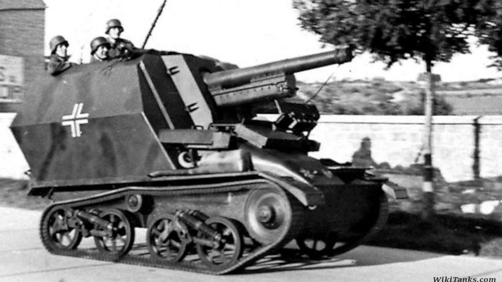
It was created by mounting the German 10.5 cm leFH 16 field howitzer onto the chassis of the British Light Tank Mk VI. The vehicle was created by engineer Alfred Becker, who was battery chief of the 12th Battery in the 15th Artillery Regiment, 227th Infantry Division. Becker found abandoned vehicles while his unit was performing coastal protection duties in France. It first saw combat on the eastern front in Sept. 1941.
Name: 10.5 cm leFH 16 Geschützwagen Mk VI 736 (e), Self-Propelled Artillery
No. Built: 12
Cost: No info
Weight: .2 Tonnes (9.05 Short tons)
Main Armament: 10.5 cm leFH 16
Secondary Armament: MG 34
Engine: Meadows 6-cylinder petrol 88 hp
Max Speed: 35 miles per hour (56 km/h) (25 miles per hour (40 km/h) off road)
Operational Range: 130 miles (210 km)
Crew: 4
15 cm sIG 33 (Sf) auf Panzerkampfwagen I Ausf B
 auf Panzerkampfwagen I Ausf B.jpg) The 15 cm sIG 33 (Sf) auf Panzerkampfwagen I Ausf B, sometimes referred to (unofficially) as the Sturmpanzer I Bison. The invasion of Poland had shown that the towed sIG 33 guns assigned to the infantry gun companies of the motorized infantry
regiments had difficulties keeping up with the tanks during combat. The easiest solution was to modify a spare tank chassis to carry it into battle. A sIG 33 was mounted on the chassis of the Panzer I Ausf. B, complete with carriage and wheels, in place of the turret and superstructure.
There was no room to stow any ammunition, so it had to be carried by a separate vehicle. It saw action in the battle of France, Operation Barbarossa, and Case Blue.
The 15 cm sIG 33 (Sf) auf Panzerkampfwagen I Ausf B, sometimes referred to (unofficially) as the Sturmpanzer I Bison. The invasion of Poland had shown that the towed sIG 33 guns assigned to the infantry gun companies of the motorized infantry
regiments had difficulties keeping up with the tanks during combat. The easiest solution was to modify a spare tank chassis to carry it into battle. A sIG 33 was mounted on the chassis of the Panzer I Ausf. B, complete with carriage and wheels, in place of the turret and superstructure.
There was no room to stow any ammunition, so it had to be carried by a separate vehicle. It saw action in the battle of France, Operation Barbarossa, and Case Blue.
The 15 cm sIG 33 (Sf) auf Panzerkampfwagen I Ausf B, sometimes referred to (unofficially) as the Sturmpanzer I Bison. The invasion of Poland had shown that the towed sIG 33 guns assigned to the infantry gun companies of the motorized infantry
regiments had difficulties keeping up with the tanks during combat. The easiest solution was to modify a spare tank chassis to carry it into battle. A sIG 33 was mounted on the chassis of the Panzer I Ausf. B, complete with carriage and wheels, in place of the turret and superstructure.
There was no room to stow any ammunition, so it had to be carried by a separate vehicle. It saw action in the battle of France, Operation Barbarossa, and Case Blue.
Name: 15 cm sIG 33 (Sf) auf Panzerkampfwagen I Ausf B, Self-Propelled Artillery
No. Built: 38 converted
Cost: No info
Weight: 8.5 tonnes (9.4 short tons)
Main Armament: 15 cm schweres Infanteriegeschütz 33
Secondary Armament: None
Engine: 6-cylinder, water-cooled Maybach NL38 TR 100 horsepower (75 kW)
Max Speed: 40 km/h (25 mph)
Operational Range: 140 kilometres (87 mi)
Crew: 4
15 cm sIG 33 auf Fahrgestell Panzerkampfwagen II (Sf)
.jpg) The 15 cm sIG 33 auf Fahrgestell Panzerkampfwagen II (Sf), sometimes referred to as the Sturmpanzer II Bison. The 15-centimetre (5.9 in) sIG 33 gun was used as direct-fire artillery in support
of assaulting infantry. The prototype used a standard Panzer II Ausf. B chassis when it was built in February 1941, but this was too cramped for use. The chassis was lengthened by 60 centimetres (24 in), which required
adding a sixth roadwheel, and widened by 32 centimetres (13 in) to better accommodate the gun while preserving its low silhouette. The dozen vehicles produced were assigned to the 90th Light Infantry Division in North Africa
during the war.
The 15 cm sIG 33 auf Fahrgestell Panzerkampfwagen II (Sf), sometimes referred to as the Sturmpanzer II Bison. The 15-centimetre (5.9 in) sIG 33 gun was used as direct-fire artillery in support
of assaulting infantry. The prototype used a standard Panzer II Ausf. B chassis when it was built in February 1941, but this was too cramped for use. The chassis was lengthened by 60 centimetres (24 in), which required
adding a sixth roadwheel, and widened by 32 centimetres (13 in) to better accommodate the gun while preserving its low silhouette. The dozen vehicles produced were assigned to the 90th Light Infantry Division in North Africa
during the war.
The 15 cm sIG 33 auf Fahrgestell Panzerkampfwagen II (Sf), sometimes referred to as the Sturmpanzer II Bison. The 15-centimetre (5.9 in) sIG 33 gun was used as direct-fire artillery in support
of assaulting infantry. The prototype used a standard Panzer II Ausf. B chassis when it was built in February 1941, but this was too cramped for use. The chassis was lengthened by 60 centimetres (24 in), which required
adding a sixth roadwheel, and widened by 32 centimetres (13 in) to better accommodate the gun while preserving its low silhouette. The dozen vehicles produced were assigned to the 90th Light Infantry Division in North Africa
during the war.
Name: 15 cm sIG 33 auf Fahrgestell Panzerkampfwagen II (Sf), Self-Propelled Artillery
No. Built: 12
Cost: No info
Weight: 11.2 tonnes (12.3 short tons)
Main Armament: 15 cm (5.9 in) sIG 33 heavy infantry gun
Secondary Armament: 1 × 7.92 mm Maschinengewehr 34
Engine: Bussing-NAG engine
Max Speed: 40 km/h (25 mph)
Operational Range: 160 km (99 mi)
Crew: 4
Grille (artillery)
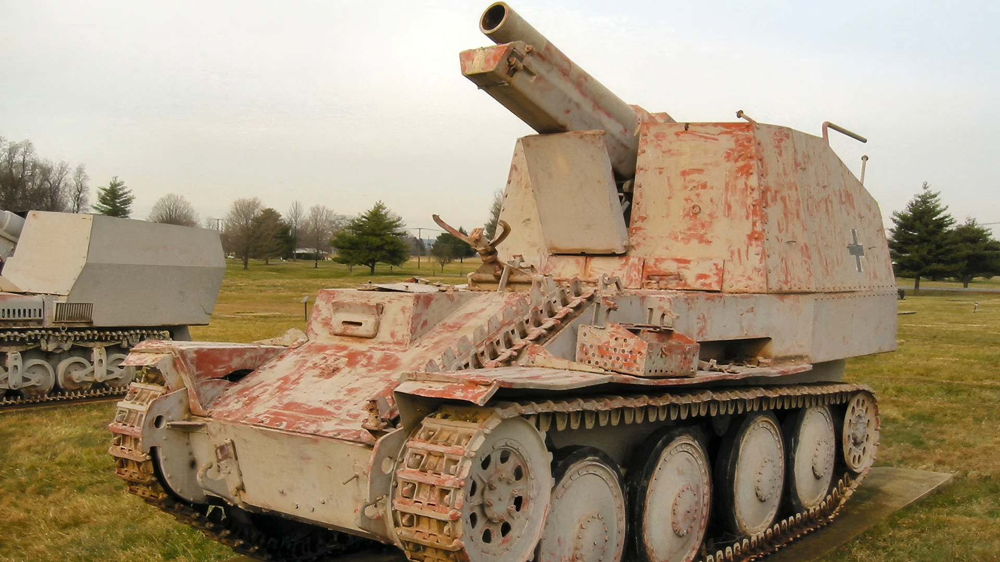
The 15 cm sIG 33 (Sf) auf Panzerkampfwagen 38(t), also known as Grille (German: "cricket") was a series of self-propelled artillery vehicles produced during 1943 & 1944. The Grille series was based on the Czech Panzer 38(t) tank chassis and used a 15 cm sIG 33 infantry gun. As the Grille had limited ammunition storage, a dedicated variant of the Grille Ausf. K was built as Munitionspanzer 38(t) (Sf) Ausf. K (Sd.Kfz. 138/1).
Name: Grille, Self-Propelled Artillery
No. Built: 389
Cost: No info
Weight: 11.5 tonnes, 12.67 Short tons
Main Armament: 15 cm sIG 33 15 rounds
Secondary Armament: 1 × 7.92 mm MG 34 600 rounds
Engine: 1 x Praga AC, 6-cylinder petrol engine 147 hp (110 kW)
Max Speed: 35 km/h (22 mph)
Operational Range: 190 km (120 mi)
Crew: 5
Hummel (vehicle)
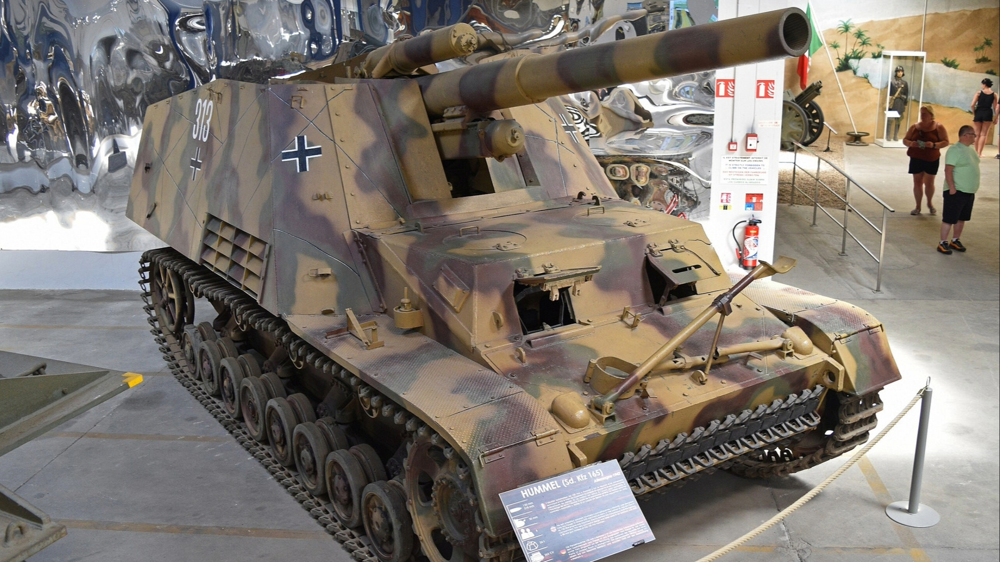
Hummel (German: "bumblebee") was a German self-propelled gun was based on the Geschützwagen III/IV chassis and armed with the 15 cm sFH 18/1 L/30 howitzer, it saw action from early 1943 until the end of the war. Because the basic Hummel could carry only a limited amount of ammunition, the ammunition carrier based on the Hummel was developed. This was basically a standard production Hummel without the howitzer and with racks fitted to hold the ammunition. The Hummel first participated in large scale combat at the Battle of Kursk, when some 100 served in armored artillery battalions of the Panzer divisions They were formed into separate heavy self-propelled artillery batteries, each with six Hummel and one ammunition carrier.
Name: Hummel, Self-Propelled Artillery
No. Built: 714
Cost: No info
Weight: 24 tonnes (26.455 Short tons)
Main Armament: 15 cm sFH 18/1 L/30 18 rounds
Secondary Armament: 1 × 7.92 mm Maschinengewehr 34 600 rounds
Engine: Maybach HL120 TRM V-12 petro 300 PS (296 hp, 221 kW)
Max Speed: 42 km/h (26 mph)
Operational Range: 215 km (133 mi)
Crew: 6
Wespe
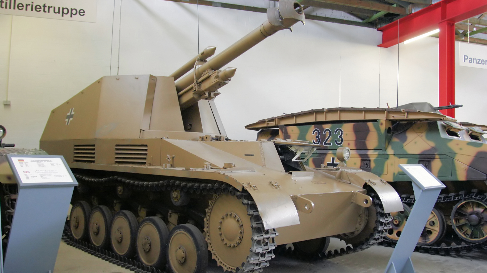
The Sd.Kfz. 124 Wespe (German for "wasp") is a German self-propelled gun developed and based on a modified Panzer II chassis. During the 1940 Battle of France, it became apparent that the intermediate tank of the German forces, the Panzer II, was unsuitable as a main battle tank. Though mechanically sound, it was both under-gunned and under-armoured. The chassis, however, proved serviceable for providing mobility to the 10.5 cm field howitzer. The Wespe first saw combat in 1943 on the Eastern Front. It proved very successful, and Hitler ordered all Panzer II chassis production be dedicated to the Wespe alone, at the expense of other projects, including the Marder II self-propelled anti-tank gun.
Name: Wespe, Self-propelled artillery
No. Built: 676
Cost: No info
Weight: 11 tonnes (12.1 Short tons)
Main Armament: 10.5 cm leFH 18/2 L/28 with 40 rounds
Secondary Armament: None
Engine: 6-cyl petrol Maybach HL62 TR 140 PS (138 hp, 103 kW)
Max Speed: 40 km/h (25 mph)
Operational Range: 220 km (137 mi)
Crew: 5
Karl-Gerät
.jpg) Karl-Gerät (lit. 'Karl-device' in German), also known as Mörser Karl, was a World War II German self-propelled siege mortar designed and built by Rheinmetall.
Its heaviest munition was a 60 cm (24 in) diameter, 2,170 kg (4,780 lb) shell; the range for its lightest shell of 1,250 kg (2,760 lb) was just over 10 km (6 mi). Each gun had to be accompanied by a crane, a two-piece heavy transport set of railcars, and several modified tanks to carry shells.
Seven guns were built, six of which saw combat between 1941 and 1945. It was used in attacking the Soviet fortresses of Brest-Litovsk and Sevastopol, bombarded Polish resistance fighters in the Warsaw Uprising, participated in the Battle of the Bulge,
and was used to try to destroy the Ludendorff Bridge during the Battle of Remagen. One Karl-Gerät has survived; the remainder were scrapped after the war.
Karl-Gerät (lit. 'Karl-device' in German), also known as Mörser Karl, was a World War II German self-propelled siege mortar designed and built by Rheinmetall.
Its heaviest munition was a 60 cm (24 in) diameter, 2,170 kg (4,780 lb) shell; the range for its lightest shell of 1,250 kg (2,760 lb) was just over 10 km (6 mi). Each gun had to be accompanied by a crane, a two-piece heavy transport set of railcars, and several modified tanks to carry shells.
Seven guns were built, six of which saw combat between 1941 and 1945. It was used in attacking the Soviet fortresses of Brest-Litovsk and Sevastopol, bombarded Polish resistance fighters in the Warsaw Uprising, participated in the Battle of the Bulge,
and was used to try to destroy the Ludendorff Bridge during the Battle of Remagen. One Karl-Gerät has survived; the remainder were scrapped after the war.
Karl-Gerät (lit. 'Karl-device' in German), also known as Mörser Karl, was a World War II German self-propelled siege mortar designed and built by Rheinmetall.
Its heaviest munition was a 60 cm (24 in) diameter, 2,170 kg (4,780 lb) shell; the range for its lightest shell of 1,250 kg (2,760 lb) was just over 10 km (6 mi). Each gun had to be accompanied by a crane, a two-piece heavy transport set of railcars, and several modified tanks to carry shells.
Seven guns were built, six of which saw combat between 1941 and 1945. It was used in attacking the Soviet fortresses of Brest-Litovsk and Sevastopol, bombarded Polish resistance fighters in the Warsaw Uprising, participated in the Battle of the Bulge,
and was used to try to destroy the Ludendorff Bridge during the Battle of Remagen. One Karl-Gerät has survived; the remainder were scrapped after the war.
Name: Karl-Gerät, self-propelled siege mortar
No. Built: 7
Cost: No info
Weight: 124 tonnes (137 short tons)
Main Armament: Separate loading, cased charges, Caliber 600 mm (23.62 in)
Secondary Armament: None
Engine: Daimler-Benz MB 503 A gasoline or Daimler-Benz MB 507 C diesel 430 kW (580 hp)
Max Speed: 6 to 10 km/h (4 to 6 mph)
Operational Range:42 km (26 mi) (gasoline engine), 60 kilometres (37 mi) (diesel engine)
Crew: 21
Panzerwerfer
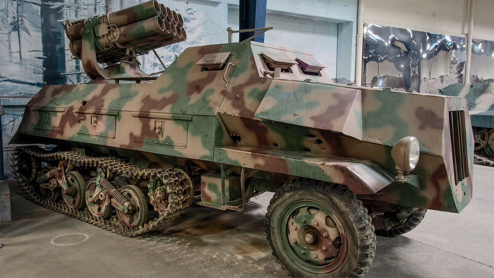
The Panzerwerfer 42 auf Maultier, Sd.Kfz. 4/1, first went into production in April 1943, and was produced until March 1945. Known as the "Moaning Minnie" by Allied soldiers for the distinctive noise the rockets made when fired, it was less accurate than a dedicated artillery piece, but its ability to saturate an area with fire and its psychological effects on infantry made it a valuable asset. First used on the eastern front with good effect, it was also deployed to the western front in Normandy and the Battle of the Bulge.
Name: Panzerwerfer, Half-track multiple rocket launcher
No. Built: 300
Cost: No info
Weight: 7.1 tonnes (7.83 short tons)
Main Armament: 15 cm Nebelwerfer 41
Secondary Armament: MG 34 or MG 42
Engine: one Adam Opel 6-cylinder petrol engine 69 PS (68 hp)
Max Speed: 40 km/h (24 mph)
Operational Range: No info
Crew: No info
Reihenwerfer
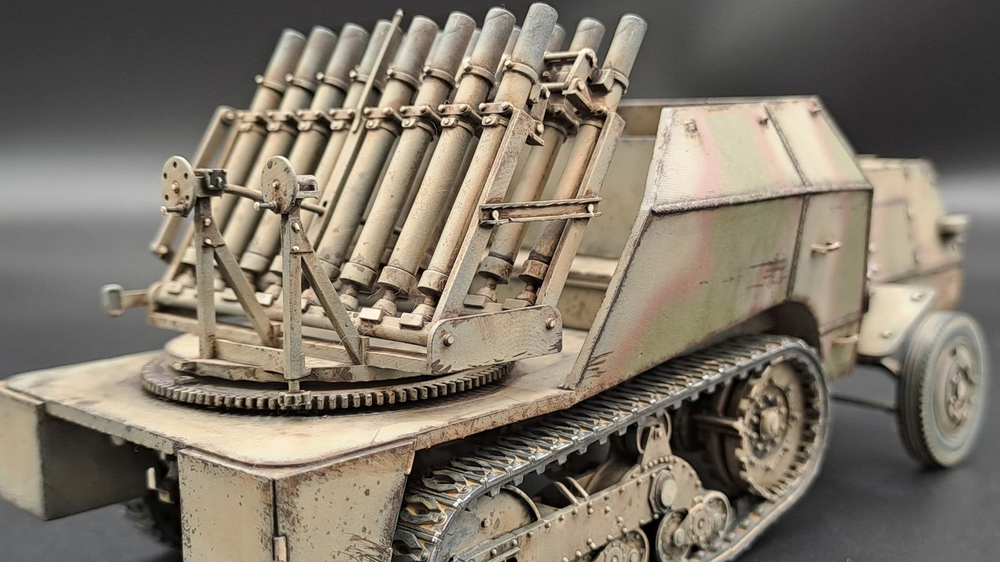
The Reihenwerfer or Mittlerer Schützenpanzerwagen S303(f) mit Reihenwerfer was a self-propelled barrage mortar. After the Fall of France in 1940 large amounts of French military hardware fell into German hands. Two systems that were captured in sizable numbers were the SOMUA MCL half-track artillery tractor and the 81 mm Brandt Mle 27/31 mortar. Since the Germans were short of resources both were issued to German units. The SOMUA MCL was given the German designation S303(f) and the mle 27/31 was given the designation GrW 278(f). The Reihenwerfer consisted of 20 GrW 278(f) barrels in two rows of 10 which were mounted on a common framework that was attached to a base mounted on the back of an armored S303(f) chassis. The vehicle carried 90 rounds of ready use ammunition and each barrel held a single round at the top of the tube until fired by pulling a lanyard. The mortars and half-tracks were converted by Major Alfred Becker's workshop (Baukommando Becker) in Paris.
Name: Reihenwerfer, Barrage Mortar
No. Built: No info
Cost: No info
Weight: 7.1 Tonnes (7.8 Short tons)
Main Armament: Light: 3.25 kg (7 lb 3 oz) Heavy: 6.5 kg (14 lb 5 oz) Caliber 81 mm (3.2 in)
Secondary Armament: MG34 or MG42
Engine: 4-cylinder, petrol, 4712 cc 60 hp (45 kW)
Max Speed: 31 km/h (19 mph)
Operational Range: 180 km (110 mi)
Crew: No info
Wurfrahmen 40
 The Wurfrahmen 40 ("launch frame 40") was a German World War II multiple rocket launcher. It combined a vehicle such as the Sd.Kfz. 251 halftrack or captured
French Renault UE Chenillette with rocket artillery to form a more mobile and protected artillery piece. It was nicknamed Stuka zu Fuss ("Stuka on Foot" or "Walking Stuka") and Heulende
Kuh ("Bellowing Cow"). The system was successful as a support weapon for mobile Panzer formations, particularly in urban areas.
The Wurfrahmen 40 ("launch frame 40") was a German World War II multiple rocket launcher. It combined a vehicle such as the Sd.Kfz. 251 halftrack or captured
French Renault UE Chenillette with rocket artillery to form a more mobile and protected artillery piece. It was nicknamed Stuka zu Fuss ("Stuka on Foot" or "Walking Stuka") and Heulende
Kuh ("Bellowing Cow"). The system was successful as a support weapon for mobile Panzer formations, particularly in urban areas.
The Wurfrahmen 40 ("launch frame 40") was a German World War II multiple rocket launcher. It combined a vehicle such as the Sd.Kfz. 251 halftrack or captured
French Renault UE Chenillette with rocket artillery to form a more mobile and protected artillery piece. It was nicknamed Stuka zu Fuss ("Stuka on Foot" or "Walking Stuka") and Heulende
Kuh ("Bellowing Cow"). The system was successful as a support weapon for mobile Panzer formations, particularly in urban areas.
Name: Wurfrahmen 40, multiple rocket launcher
No. Built: No info
Cost: No info
Weight: 7.81 tonnes (8.61 short tons)
Main Armament: 300 mm high explosive (HE) rockets; 280 mm HE and 320 mm incendiary rockets
Secondary Armament: None
Engine: one Maybach HL42 6-cylinder petrol engine 100 metric horsepower (99 hp)
Max Speed: 52.5 kilometres per hour (32.6 mph)
Operational Range: 300 kilometres (190 mi)
Crew: No info
T-18, MS-1
_–_Kubinka_Tank_Museum_(24124857618).jpg) The T-18 light tank also called MS-1, was the first Soviet-designed tank. Produced from 1928 to 1931, it was based on the Renault FT, with the addition of a vertically sprung suspension.
The T-18 and its derivatives were essentially unsuccessful designs, but they gave Soviet industry its first experiences in designing armoured vehicles, and in the meantime a number of foreign tank designs were available for production.
An experimental company equipped with T-18s took part in defending the Far Eastern Railway against Manchurian forces in 1929. They were removed from service in 1932 and given over to training. Following the German invasion of the Soviet Union a
number of MS-1s were given 45 mm (1.8 in) guns with T-26/BT-5 gun mounts and entered service.
The T-18 light tank also called MS-1, was the first Soviet-designed tank. Produced from 1928 to 1931, it was based on the Renault FT, with the addition of a vertically sprung suspension.
The T-18 and its derivatives were essentially unsuccessful designs, but they gave Soviet industry its first experiences in designing armoured vehicles, and in the meantime a number of foreign tank designs were available for production.
An experimental company equipped with T-18s took part in defending the Far Eastern Railway against Manchurian forces in 1929. They were removed from service in 1932 and given over to training. Following the German invasion of the Soviet Union a
number of MS-1s were given 45 mm (1.8 in) guns with T-26/BT-5 gun mounts and entered service.
The T-18 light tank also called MS-1, was the first Soviet-designed tank. Produced from 1928 to 1931, it was based on the Renault FT, with the addition of a vertically sprung suspension.
The T-18 and its derivatives were essentially unsuccessful designs, but they gave Soviet industry its first experiences in designing armoured vehicles, and in the meantime a number of foreign tank designs were available for production.
An experimental company equipped with T-18s took part in defending the Far Eastern Railway against Manchurian forces in 1929. They were removed from service in 1932 and given over to training. Following the German invasion of the Soviet Union a
number of MS-1s were given 45 mm (1.8 in) guns with T-26/BT-5 gun mounts and entered service.
Name: T-18, MS-1, Light Tank
No. Built: ~960 by the end of 1931
Cost: No info
Weight: 5.9 tonnes, 6.5 Short tons
Main Armament: 37mm Model 28
Secondary Armament: 2 Fedorov Avtomat Automatic rifles
Engine: T-18 35 hp (26 kW)
Max Speed: 17 km/h (10 mph)
Operational Range: 50 km (31 mi)
Crew: 2
T-26
 The T-26 tank was a Soviet light tank used during many conflicts of the Interwar period and in World War II.the USSR developed 53 variants of the T-26,
including flame-throwing tanks, combat engineer vehicles, remotely controlled tanks, self-propelled guns, artillery tractors, and armoured carriers. Twenty-three of these were series-produced; others were experimental models.
the T-26 was the most numerous tank in the Red Army's armoured force during the German invasion of the Soviet Union in June 1941. The T-26 fought the Germans and their allies during the Battle of Moscow
in 1941–42, the Battle of Stalingrad and the Battle of the Caucasus in 1942–1943; some tank units of the Leningrad Front used their T-26s until 1944. Soviet T-26 light tanks last saw use in August 1945, during the defeat of the Japanese Kwantung Army in Manchuria.
The T-26 tank was a Soviet light tank used during many conflicts of the Interwar period and in World War II.the USSR developed 53 variants of the T-26,
including flame-throwing tanks, combat engineer vehicles, remotely controlled tanks, self-propelled guns, artillery tractors, and armoured carriers. Twenty-three of these were series-produced; others were experimental models.
the T-26 was the most numerous tank in the Red Army's armoured force during the German invasion of the Soviet Union in June 1941. The T-26 fought the Germans and their allies during the Battle of Moscow
in 1941–42, the Battle of Stalingrad and the Battle of the Caucasus in 1942–1943; some tank units of the Leningrad Front used their T-26s until 1944. Soviet T-26 light tanks last saw use in August 1945, during the defeat of the Japanese Kwantung Army in Manchuria.
The T-26 tank was a Soviet light tank used during many conflicts of the Interwar period and in World War II.the USSR developed 53 variants of the T-26,
including flame-throwing tanks, combat engineer vehicles, remotely controlled tanks, self-propelled guns, artillery tractors, and armoured carriers. Twenty-three of these were series-produced; others were experimental models.
the T-26 was the most numerous tank in the Red Army's armoured force during the German invasion of the Soviet Union in June 1941. The T-26 fought the Germans and their allies during the Battle of Moscow
in 1941–42, the Battle of Stalingrad and the Battle of the Caucasus in 1942–1943; some tank units of the Leningrad Front used their T-26s until 1944. Soviet T-26 light tanks last saw use in August 1945, during the defeat of the Japanese Kwantung Army in Manchuria.
Name: T-26, Light Tank
No. Built: 10,300 tanks and 1,701 other vehicles
Cost: No info
Weight: 9.6 tonnes (10.6 short tons)
Main Armament: 45 mm 20K mod. 1932–34 tank gun (122 rounds)
Secondary Armament: 7.62 mm DT machine gun (2,961 rounds)
Engine: Straight 4-cylinder petrol air-cooled 6.6-litre T-26 (Armstrong Siddeley type) 90 hp (67 kW) at 2,100 rpm
Max Speed: Paved: 31.1 km/h (19.3 mph), Gravel: 22 km/h (14 mph), Off-road: 16 km/h (9.9 mph)
Operational Range: Road: 220–240 km (140–150 mi), Off-road: 130–140 km (81–87 mi)
Crew: 3
T-27
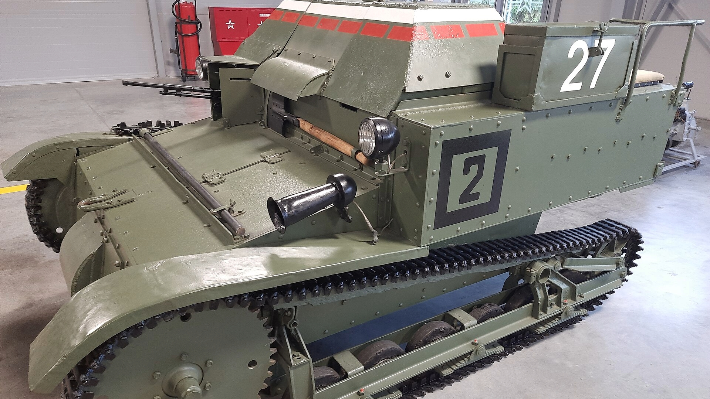
The T-27 was a tankette produced in the 1930s by the Soviet Union. It was based on the design of the Carden Loyd tankette, bought under license from the United Kingdom in 1930. The Red Army found them reliable and simple to operate, but the T-27 coped poorly with swampy and snowy terrain due to the narrowness of its tracks. It was also difficult to find crews, as the tankettes were so small that it was difficult to find crews of sufficiently diminutive stature. By the end of the 1930s the T-27 was relegated primarily to training use, with some being used as tractors to tow field guns. Ten T-27s were captured by Hungarian forces during the fighting on the Eastern Front.
Name: T-27, Light Tank
No. Built: 2,540
Cost: No info
Weight: 2.7 tonnes, 3 Short tons
Main Armament: 7.62mm DT machine gun (with 2,520 rounds)
Secondary Armament: None
Engine: GAZ-AA 40 hp (30 kW)
Max Speed: 42 km/h (26 mph)
Operational Range: 120 km (75 mi)
Crew: 2
T-37A
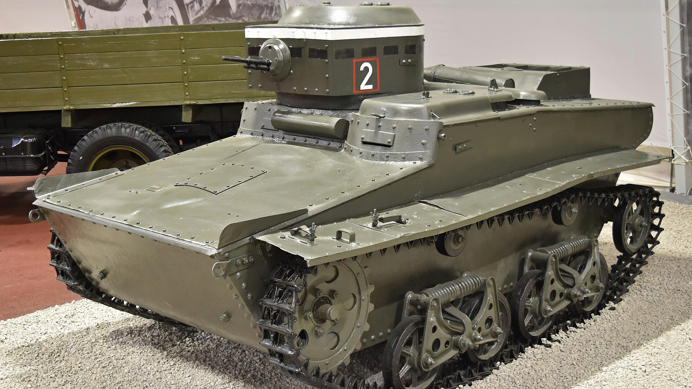
The T-37A was a Soviet amphibious light tank. The T-37A was the first series of mass-produced fully amphibious tanks in the world.In the Red Army, they were used to perform tasks in communication, reconnaissance, and as defense units on the march, as well as active infantry support on the battlefield. The T-37A was used in large numbers during the Soviet invasion of Poland and in the Winter War against Finland. T-37As were also used by the Soviets in the beginning of the Great Patriotic War, but most of them were quickly lost. Surviving tanks fought on the front lines until 1944, and were used in training and auxiliary defense until the end of World War II.
Name: T-37A, Light Tank
No. Built: ~1,200
Cost: No info
Weight: 3.2 tonnes, 3.5 Short tons
Main Armament: 7.62mm DT machine gun (585 rounds)
Secondary Armament: None
Engine: GAZ-AA 40 hp (30 kW)
Max Speed: 35 km/h (22 mph)
Operational Range: 185 km
Crew: 2
T-38
 The T-38 amphibious scout tank was a Soviet amphibious light tank that saw service in World War II. Developed as a modernized version of the earlier T-37A light tank, the T-38 proved to be only a
moderate improvement over its predecessor, and was eventually replaced in 1940 by the T-40. The tank served with the Red Army in the Winter War with Finland in 1940, but was unsuccessful due to its light armament and thin
armour, which was easily penetrated by rifle and light machine gun fire.In the confined terrain of Finland, the tank was a deathtrap; it also did not do well in the early stages of World War II, and large numbers were
captured by the Germans during Operation Barbarossa.The T-38 was rarely seen in direct combat after 1941 and mostly relegated to other roles such as artillery tractor, although it was reported to have been used in the Dnieper River crossing of 1943.
The T-38 amphibious scout tank was a Soviet amphibious light tank that saw service in World War II. Developed as a modernized version of the earlier T-37A light tank, the T-38 proved to be only a
moderate improvement over its predecessor, and was eventually replaced in 1940 by the T-40. The tank served with the Red Army in the Winter War with Finland in 1940, but was unsuccessful due to its light armament and thin
armour, which was easily penetrated by rifle and light machine gun fire.In the confined terrain of Finland, the tank was a deathtrap; it also did not do well in the early stages of World War II, and large numbers were
captured by the Germans during Operation Barbarossa.The T-38 was rarely seen in direct combat after 1941 and mostly relegated to other roles such as artillery tractor, although it was reported to have been used in the Dnieper River crossing of 1943.
The T-38 amphibious scout tank was a Soviet amphibious light tank that saw service in World War II. Developed as a modernized version of the earlier T-37A light tank, the T-38 proved to be only a
moderate improvement over its predecessor, and was eventually replaced in 1940 by the T-40. The tank served with the Red Army in the Winter War with Finland in 1940, but was unsuccessful due to its light armament and thin
armour, which was easily penetrated by rifle and light machine gun fire.In the confined terrain of Finland, the tank was a deathtrap; it also did not do well in the early stages of World War II, and large numbers were
captured by the Germans during Operation Barbarossa.The T-38 was rarely seen in direct combat after 1941 and mostly relegated to other roles such as artillery tractor, although it was reported to have been used in the Dnieper River crossing of 1943.
Name: T-38, Amphibious light tank
No. Built: 1,340
Cost: no info
Weight: 3.3 tonnes, 3.6 Short tons
Main Armament: 7.62mm DT machine gun
Secondary Armament: None
Engine: GAZ-AA 4-cylinder inline gasoline engine 40 hp (30 kW)
Max Speed: 40 km/h
Operational Range: 170 km
Crew: 2
BT-2
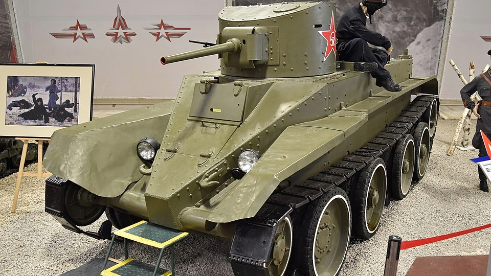
The BT tank was one of a series of Soviet light tanks produced in large numbers between 1932 and 1941. They were lightly armoured, but reasonably well-armed for their time, and had the best mobility of all contemporary tanks. The successor of the BT tanks was the famous T-34. During the Winter War against Finland in 1939–1940, BT-2, BT-5 and BT-7 tanks had less success against Finnish Army forces than they had against the Japanese at Khalkin Gol.
Name: BT-2, Light Tank
No. Built: 620
Cost: No info
Weight: 10.2 tonnes, 11.2 Short tons
Main Armament: 37 mm Model 30, 96 rounds
Secondary Armament: one 7.62mm DT machine gun
Engine: 400 h M-5
Max Speed: Road (On Wheels)100 km/h (62 mph) or 72 km/h (45mph), Road(Tracks) 52 km/h (32 mph)
Operational Range:300km road, 100km offroad
Crew: 3
BT-5
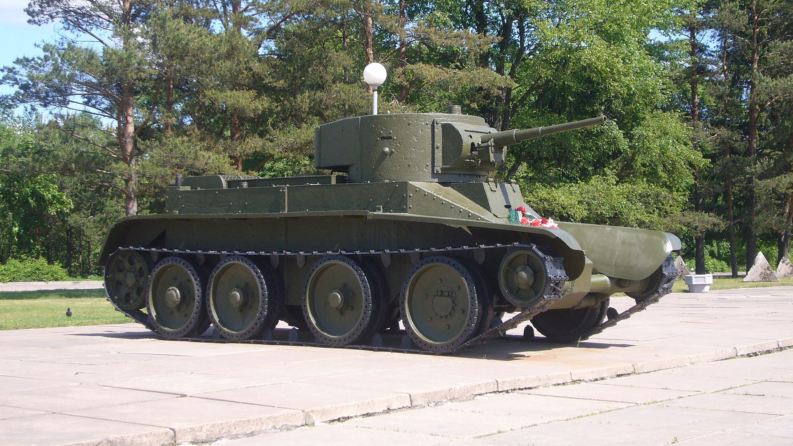
The BT-5 ("Bystrohodnyi tank" or "Fast Tank type 5") was the second tank in the Soviet BT series of tanks. The BT-5 improved on the previous BT-2, such as a new turret fitted with a 45 mm anti-tank gun. The BT-5 would enter service in 1933, with the Red Army first seeing action with the Second Spanish Republic in the Spanish Civil War in 1937 until the end of World War II, with between 1884 and 2108 units being produced with production of the tank beginning in March 1933 with production ending in 1935. BT-5 saw combat was the Soviet invasion of Poland and the winter war against the Finnish.On June 22, 1941, Nazi Germany launched Operation Barbarossa, the invasion of the Soviet Union, which caught the Soviets off guard. Soviet losses, including tanks, were appalling at the beginning of the invasion. The BT-5 would be used throughout the rest of the war, but not as much as its younger brother, the BT-7, or the new T-34.
Name: BT-5, Light Tank
No. Built: 1804-2108
Cost: No info
Weight: 11.5 tonnes, 12.7 Short tons
Main Armament: 45 mm 20-K cannon
Secondary Armament: Coaxial 7.62mm DT machine gun
Engine: M-5 400 hp
Max Speed: road speed(on wheels) 72km/h, road speed(on tracks) 52 km/h
Operational Range:250km road, 120km offroad
Crew: 3
BT-7
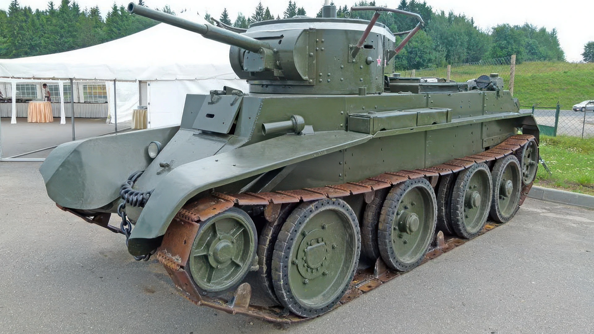
The BT-7 was the last of the BT series of Soviet cavalry tanks that were produced in large numbers between 1935 and 1940.In June 1941, at the outset of Barbarossa, the BT-7 was used as the main cavalry tank of the Soviet army. Tank losses were high, with over 2,000 BT-7 series tanks lost in the first 12 months on the Eastern Front. Hundreds more had been immobilized before the invasion by poor maintenance, and these had to be abandoned as the Soviet forces withdrew eastward. The BT-7 continued to be operated by the armored and mechanized forces of the Red Army for almost the entire war, but in greatly-decreased numbers after 1941.
Name: BT-7, Light Tank
No. Built: 5753
Cost: No info
Weight: 13.9 tonnes (15.3 short tons)
Main Armament: 45 mm anti-tank gun M1932/38 (20-K)
Secondary Armament: 2 x 7.62 mm DT machine gun
Engine: Mikulin M-17T (V-12) gasoline 450 hp (340 kW) at 1,750 rpm
Max Speed: Road: 72–86 km/h (45–53 mph), Off-road: 50 km/h (31 mph)
Operational Range: Road: 250 km (160 mi), Off-road: 120 km (75 mi)
Crew: 3
T-40
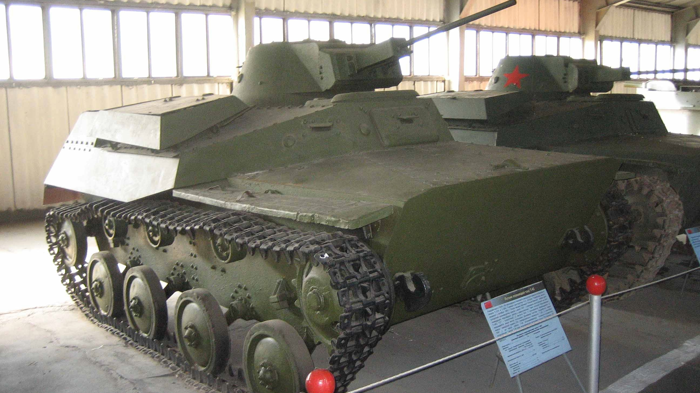
The T-40 amphibious scout tank was an amphibious light tank that was one of the few tanks that could cross an unfordable river without a bridge. It was primarily intended to equip reconnaissance units. A land-based version of the T-40, the T-30/"T-40" T-60, was produced, although was later replaced by the "true" T-60. The T-60 was cheaper, simpler, better-armed, and could fulfill most of the same roles, so T-40 production was halted.The vehicle served mainly in Operation Barbarossa and the defense of Moscow, and it was rarely seen after that point, although it was used in Soviet training schools until 1946. A total 12 examples of the type were later fitted with Katyusha rocket launchers, firing 82 mm unguided rockets from a 24-rail launcher.
Name: T-40, Amphibious light tank
No. Built: 962 (356 normal, 594 "T-40" T-60 and 12 "T-40" T-60-based rocket launchers)
Cost: No info
Weight: 5.9 t (6.5 short tons)
Main Armament: 12.7 mm (0.50 in) DShK machine gun
Secondary Armament: 7.62 mm DT machine gun
Engine: GAZ-202 85 hp (63 kW)
Max Speed: 450 km (280 mi)
Operational Range:450 km (280 mi)
Crew: 2
T-50
 The T-50 was a light infantry tank built by the Soviet Union at the beginning of World War II. The design for this vehicle had some advanced features, but was complicated and
expensive, and only a short production run of 69 tanks was completed. The few T-50s available were deployed on the Leningrad front. Few in-service photos survived and not much is known of their combat record.
One uparmored T-50 was captured by Finnish forces and was used by them in 1944. 27 T-50 tanks, both from Leningrad and Chkalovsky factories, were included in the 488th separate tank battalion deployed to the Transcaucasian Front.
The T-50 was a light infantry tank built by the Soviet Union at the beginning of World War II. The design for this vehicle had some advanced features, but was complicated and
expensive, and only a short production run of 69 tanks was completed. The few T-50s available were deployed on the Leningrad front. Few in-service photos survived and not much is known of their combat record.
One uparmored T-50 was captured by Finnish forces and was used by them in 1944. 27 T-50 tanks, both from Leningrad and Chkalovsky factories, were included in the 488th separate tank battalion deployed to the Transcaucasian Front.
The T-50 was a light infantry tank built by the Soviet Union at the beginning of World War II. The design for this vehicle had some advanced features, but was complicated and
expensive, and only a short production run of 69 tanks was completed. The few T-50s available were deployed on the Leningrad front. Few in-service photos survived and not much is known of their combat record.
One uparmored T-50 was captured by Finnish forces and was used by them in 1944. 27 T-50 tanks, both from Leningrad and Chkalovsky factories, were included in the 488th separate tank battalion deployed to the Transcaucasian Front.
Name: T-50, Light Tank
No. Built: 69
Cost: No info
Weight: 14 tonnes (15 short tons)
Main Armament: 45 mm Model 1932/38 20-K gun (150 rds.)
Secondary Armament: 7.62 mm DT machine gun
Engine: Diesel inline-six engine 300 hp (220 kW)
Max Speed: 60 km/h (37 mph)
Operational Range: 220 km (140 mi)
Crew: 4
T-60
.jpg) The T-60 scout tank was a light tank produced by the Soviet Union from 1941 to 1942. The tank was designed to replace the obsolete T-38 amphibious scout tank.
The first experimental T-60s were produced by July 1941, but serial production did not begin until the autumn of the same year. The tanks participated in the 1941 October Revolution Parade and went to be used widely in the defense of Moscow.
The T-60 scout tank was a light tank produced by the Soviet Union from 1941 to 1942. The tank was designed to replace the obsolete T-38 amphibious scout tank.
The first experimental T-60s were produced by July 1941, but serial production did not begin until the autumn of the same year. The tanks participated in the 1941 October Revolution Parade and went to be used widely in the defense of Moscow.
The T-60 scout tank was a light tank produced by the Soviet Union from 1941 to 1942. The tank was designed to replace the obsolete T-38 amphibious scout tank.
The first experimental T-60s were produced by July 1941, but serial production did not begin until the autumn of the same year. The tanks participated in the 1941 October Revolution Parade and went to be used widely in the defense of Moscow.
Name: T-60, Light Tank
No. Built: 594 "T-40" T-60, 5417 "true" + 260 chassis for BM-8-24 (12 "T-40" and 248 "true")
Cost: No info
Weight: 5.8 tonnes, 6.4 Short tons
Main Armament: 20 mm TNSh cannon (750 rds.)
Secondary Armament: 7.62 mm coax DT machine gun
Engine: GAZ-202 6-cylinder 70 hp (52 kW)
Max Speed: 44 km/h
Operational Range: 450 km
Crew: 2
T-70
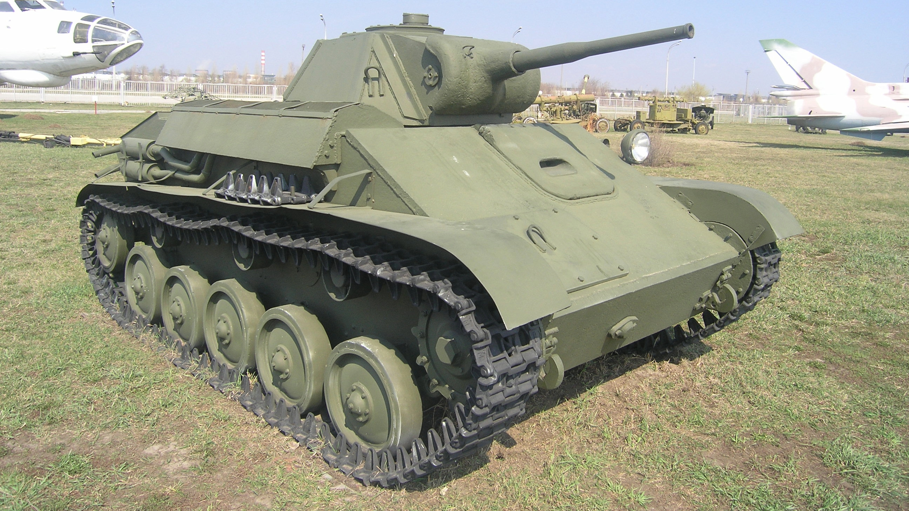
The T-70 is a light tank used by the Red Army during World War II, replacing both the T-60 scout tank for reconnaissance and the T-50 light infantry tank for infantry support. The one-man turret of the Soviet light tanks made co-ordinating a tank platoon nearly impossible, because the commanders were kept busy acquiring targets, loading and firing the main gun and machine gun and commanding their drivers. There was enough lend-lease equipment available to fulfil the reconnaissance role of the light tanks, and armoured cars were better suited for light scouting and liaison. All light tank production was cancelled in October 1943, after only about 120 T-80s were built.
Name: T-70, Light Tank
No. Built: 8,226
Cost: No info
Weight: 9.2 tonnes, 10.1 Short tons
Main Armament: 45 mm 20K mod. 1932–34 tank gun
Secondary Armament: 7.62 mm DT
Engine: 2 × GAZ-202 (gasoline) 70 + 70 hp (52 + 52 kW)
Max Speed: 45 km/h (28 mph)
Operational Range: 360 km (220 mi)
Crew: 2
T-80
.jpg) The T-80 was a Soviet light tank developed during the final phase of World War II. It was a further development of the T-70 light tank, addressing its main shortcomings, particularly the one-man turret. The T-80 featured a two-man turret, enhanced armor,
and other minor improvements. Despite these changes, it entered production too late in the war to see widespread use and was quickly overshadowed by the increasing reliance on medium tanks like the T-34-85.
The T-80 was a Soviet light tank developed during the final phase of World War II. It was a further development of the T-70 light tank, addressing its main shortcomings, particularly the one-man turret. The T-80 featured a two-man turret, enhanced armor,
and other minor improvements. Despite these changes, it entered production too late in the war to see widespread use and was quickly overshadowed by the increasing reliance on medium tanks like the T-34-85.
The T-80 was a Soviet light tank developed during the final phase of World War II. It was a further development of the T-70 light tank, addressing its main shortcomings, particularly the one-man turret. The T-80 featured a two-man turret, enhanced armor,
and other minor improvements. Despite these changes, it entered production too late in the war to see widespread use and was quickly overshadowed by the increasing reliance on medium tanks like the T-34-85.
Name: T-80, Light Tank
No. Built: ~85
Cost: No info
Weight: 14.5 tonnes, 16 Short tons
Main Armament: 45 mm 20K mod. 38 gun
Secondary Armament: 7.62 mm DT machine gun
Engine: 2 × GAZ-203 gasoline engines 170 hp (combined)
Max Speed: 45 km/h (28 mph)
Operational Range: 300 km (186 mi)
Crew: 3
T-24
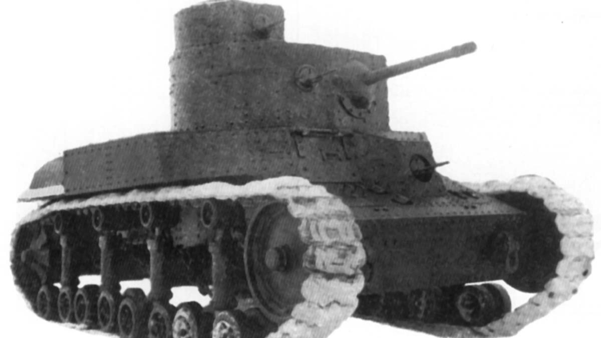
The T-24 was a Soviet medium tank built in 1931. Only twenty-four were built, and none saw combat. This was the first tank produced at the KhPZ factory in Kharkov, which was later responsible for the very successful BT series, T-34 and T-54 Soviet tanks. The T-24's suspension was used successfully in the Soviet Union's first purpose-built artillery tractors. The T-24's main armament was a 45 mm gun. It had a ball-mount 7.62 mm DT machine gun in the hull, another in the turret, and a third in a secondary turret atop the main turret. The tank was well-armoured for its time, but the engine and transmission had problems.
Name: T-24, Medium Tank
No. Built: 25
Cost: No info
Weight: 18.5 tonnes, 20.4 Short tons
Main Armament: 45 mm gun Model 32
Secondary Armament: 3 × DT machine gun
Engine: 250 hp (190 kW)
Max Speed: 25 km/h (16 mph)
Operational Range: 140 km
Crew: 5
T-28
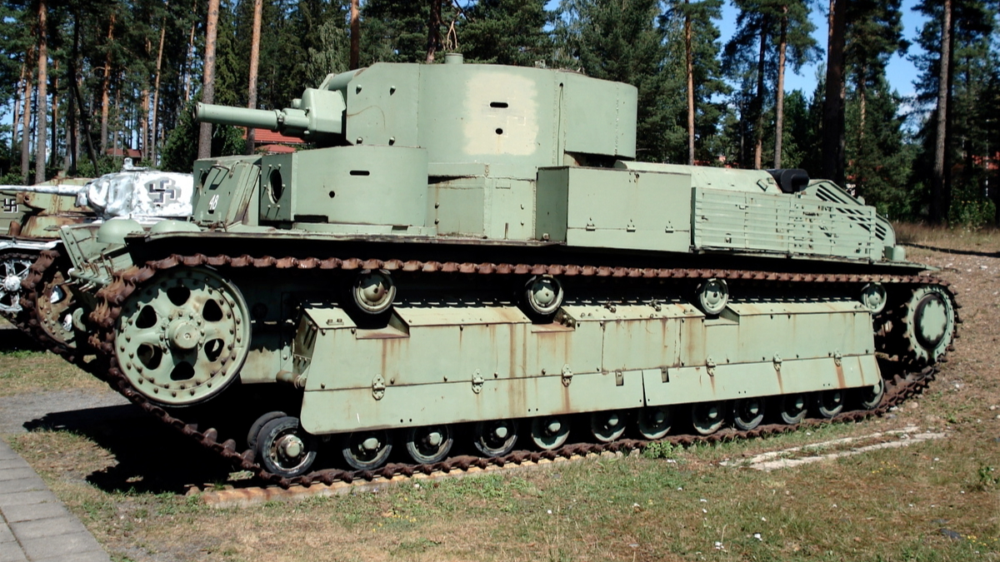
The T-28 was a Soviet multi-turreted medium tank. The prototype was completed in 1931, and production began in late 1932. It was an infantry support tank intended to break through fortified defences. The T-28 was designed to complement the heavier T-35 (also multi-turreted), with which it shared turret designs. The type did not have great success in combat, but it played an important role as a development project for Soviet tank designers. A series of new ideas and solutions that were tried out on the T-28 were later incorporated in future models. The T-28 was deployed during the 1939 Soviet invasion of Poland, and the Winter War with Finland. In the course of these operations, it was found that the armour was inadequate and an upgrade was initiated. The Soviets had 411 T-28 tanks when the Germans invaded the Soviet Union in June 1941. A large majority of these were lost during the first two months of the invasion, many of them abandoned after mechanical breakdown.
Name: T-28, Medium Tank
No. Built: 503
Cost: No info
Weight: 28 tonnes, 30.8 Short tons
Main Armament: 76.2 mm KT-28 howitzer (70 rounds)
Secondary Armament: 4 or 5 × 7.62 mm DT machine guns (8,000 rounds)
Engine: 46.9 L Mikulin M-17 V12 engine 500 hp (370 kW)
Max Speed: 43.5 km/h (27.0 mph)
Operational Range: 220 km (140 mi)
Crew: 6
T-34
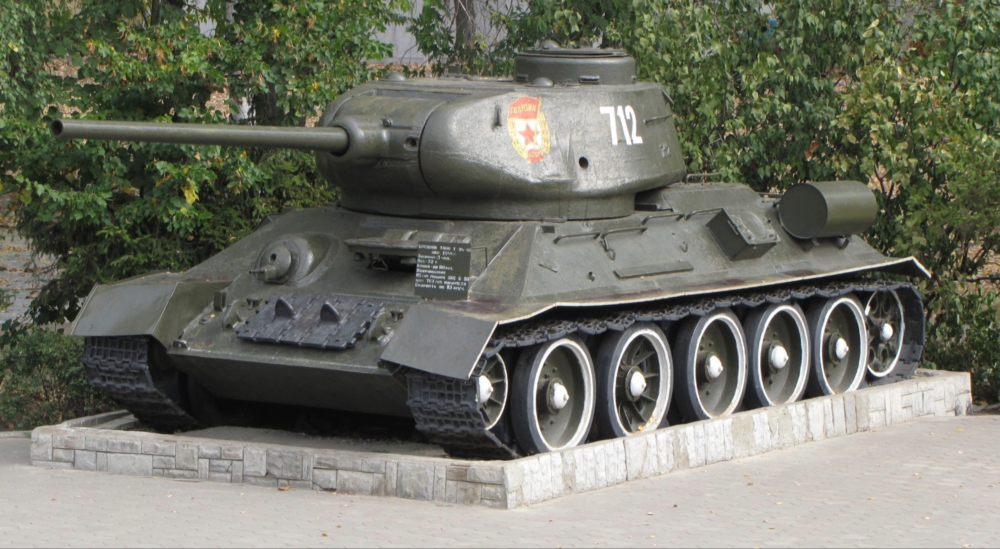
The T-34 is a Soviet medium tank was armed with a 76.2 mm gun was more powerful than many of its contemporaries, and its 60-degree sloped armour provided good protection against anti-tank weapons. The T-34 had a profound effect on the conflict on the Eastern Front, and had a long-lasting impact on tank design. The tank was praised by German generals when encountered during Operation Barbarossa, although its armour and armament were surpassed later in the war. Its main strength was its cost and production time, meaning that German panzer forces would often fight against Soviet tank forces several times their own size. The T-34 was also a critical part of the mechanized divisions that formed the backbone of the deep battle strategy. The T-34 was the mainstay of the Soviet Red Army armoured forces throughout the war. Its general specifications remained nearly unchanged until early 1944, when it received a firepower upgrade with the introduction of the greatly improved T-34-85 variant.
Name: T-34, Medium Tank
No. Built: 35,120
Cost: 130,000–429,000 Rbls
Weight: 26.5 tonnes, 29.2 short tons
Main Armament: 76.2 mm (3.00 in) F-34 tank gun
Secondary Armament: 2 × 7.62 mm (0.3 in) DT machine guns
Engine: Model V-2-34 38.8 L V12 Diesel engine 500 hp (370 kW)
Max Speed: 53 km/h (33 mph)
Operational Range: Road:330 km (210 mi), Cross-country:200 km (120 mi)
Crew: 4
T-34-85
After improved German Panzer IVs with the high-velocity 7.5cm KwK 40 gun were encountered in combat in 1942, a project to design an entirely new Soviet tank was begun,
with the goals of increasing armour protection and firepower. A Soviet 85 mm anti-aircraft gun, the M1939 (52-K), was found capable penetrating the front of the Tiger I, and so derivatives of it were developed for tanks.
Its turret ring was enlarged from 1,425 mm (56 in) to 1,600 mm (63 in), allowing a larger turret to be fitted supporting the larger 85 mm gun. Production of the T-34-85 began in January 1944.
The improved T-34-85 became the standard Soviet medium tank, with an uninterrupted production run until the end of the war. While it could not match the armour or weapons of the heavier Panther and Tiger tanks, its improved
firepower made it much more effective than earlier models, and overall it was more cost-effective than the heaviest German tanks.
Name: T-34-85, Medium Tank
No. Built: 48,950
Cost: 130,000–429,000 Rbls
Weight: 32.4 tonnes, 35.7 short tons
Main Armament: 76.2 mm F-34 tank gun
Secondary Armament: 2 × 7.62 mm (0.3 in) DT machine guns
Engine: Model V-2-34 38.8 L V12 Diesel engine 500 hp (370 kW)
Max Speed: 53 km/h (33 mph)
Operational Range: Road:330 km (210 mi), Cross-country:200 km (120 mi)
Crew: 4
T-44
.jpg) It was the successor to the T-34, offering an improved ride and cross-country performance, along with much greater armor. Designed to be equipped
with an 85 mm main gun, by the time it was fully tested the T-34 had also moved to this weapon. Both tanks offered similar performance, so introducing the T-44 was not considered
as important as increasing T-34 production. Although the T-44 was available by the end of the war, it was not used in any battle.
It was the successor to the T-34, offering an improved ride and cross-country performance, along with much greater armor. Designed to be equipped
with an 85 mm main gun, by the time it was fully tested the T-34 had also moved to this weapon. Both tanks offered similar performance, so introducing the T-44 was not considered
as important as increasing T-34 production. Although the T-44 was available by the end of the war, it was not used in any battle.
It was the successor to the T-34, offering an improved ride and cross-country performance, along with much greater armor. Designed to be equipped
with an 85 mm main gun, by the time it was fully tested the T-34 had also moved to this weapon. Both tanks offered similar performance, so introducing the T-44 was not considered
as important as increasing T-34 production. Although the T-44 was available by the end of the war, it was not used in any battle.
Name: T-44, Medium Tank
No. Built: 1,823
Cost: No info
Weight: 32 tonnes, 35 short tons
Main Armament: 85 mm ZiS-S-53 tank gun (58 rds.), 100-mm D-10T tank gun, 100-mm LB-1 tank gun, 122-mm D-25-44 tank gun
Secondary Armament: 2 × 7.62 mm DTM machine gun or 1x 12.7mm DshK
Engine: Model V-44 12-cyl. 38.88 L diesel 520 hp (388 kW)
Max Speed: 55 km/h (34 mph)
Operational Range: Road:240–300 km (150–190 mi), Cross-country:150–210 km (93–130 mi)
Crew: 4
T-35
The T-35 was a Soviet multi-turreted heavy tank of the interwar period and early Second World War that saw limited service with the Red Army.
Often called a "land battleship", it was the only five-turreted heavy tank in the world to reach production, but proved to be slow and mechanically unreliable.
Most of the T-35 tanks still operational at the time of Operation Barbarossa were lost due to mechanical failure rather than enemy action. It was designed to complement
the contemporary T-28 medium tank; however, very few were built. Outwardly it was large, but internally the spaces were cramped with the fighting compartments separated
from each other. Some of the turrets obscured the entrance hatches.
Name: T-35, Heavy Tank
No. Built: 60
Cost: No info
Weight: 45 tonnes (49.6 short tons)
Main Armament: 76 mm gun KT-28
Secondary Armament: 2 × 45 mm 20K guns, 5, 6 or 7× 7.62 mm DT machine guns
Engine: Mikulin M-17M V-12 petrol engine 500 hp (370 kW)
Max Speed: 30 km/h (19 mph)
Operational Range: 150 km (93 mi)
Crew: 10
SMK tank
 The SMK was an armored vehicle prototype developed by the Soviet Union prior to the Second World War. It was named after Sergei Mironovich Kirov, a Communist Party official assassinated in 1934.
Only one was built and after a trial showing the downsides of its weight and size against the KV tank and brief use in the war with Finland, the project was dropped.
The SMK, the two KV-1 prototypes and the two T-100 prototypes were put through proving trials before being tested operationally in combat at the Battle of Summa during the Winter War against Finland.
The SMK was an armored vehicle prototype developed by the Soviet Union prior to the Second World War. It was named after Sergei Mironovich Kirov, a Communist Party official assassinated in 1934.
Only one was built and after a trial showing the downsides of its weight and size against the KV tank and brief use in the war with Finland, the project was dropped.
The SMK, the two KV-1 prototypes and the two T-100 prototypes were put through proving trials before being tested operationally in combat at the Battle of Summa during the Winter War against Finland.
The SMK was an armored vehicle prototype developed by the Soviet Union prior to the Second World War. It was named after Sergei Mironovich Kirov, a Communist Party official assassinated in 1934.
Only one was built and after a trial showing the downsides of its weight and size against the KV tank and brief use in the war with Finland, the project was dropped.
The SMK, the two KV-1 prototypes and the two T-100 prototypes were put through proving trials before being tested operationally in combat at the Battle of Summa during the Winter War against Finland.
Name: SMK Tank, Heavy Tank
No. Built: 1
Cost: No info
Weight: 55 tonnes (60.6 Short tons)
Main Armament: 45 mm gun M1932 (forward turret), 76.2 mm gun L-11 (main, or rear-most turret)
Secondary Armament: 3×7.62 mm DT MG
Engine: GAM-34BT 850 hp
Max Speed: 35 km/h (22 mph)
Operational Range: 220 km (140 mi)
Crew: 7
KV-1
 Soviet heavy tanks named after the Soviet defence commissar and politician Kliment Voroshilov who operated with the Red Army during World War II.
The KV tanks were known for their heavy armour protection during the early stages of the war, especially during the first year of the German invasion of the Soviet Union.
In certain situations, even a single KV-1 or KV-2 supported by infantry could halt German formations. The German Wehrmacht at that time rarely deployed its tanks against KVs,
as their own armament was too poor to deal with the "Russischer Koloss" – "Russian Colossus". Until the Germans developed more effective guns, the KV-1 was invulnerable to
almost any German weapon except the 8.8 cm Flak gun. Later in the war, the KV series became a base for the development of the IS
(Iosif Stalin) series of tanks and self-propelled guns.
Soviet heavy tanks named after the Soviet defence commissar and politician Kliment Voroshilov who operated with the Red Army during World War II.
The KV tanks were known for their heavy armour protection during the early stages of the war, especially during the first year of the German invasion of the Soviet Union.
In certain situations, even a single KV-1 or KV-2 supported by infantry could halt German formations. The German Wehrmacht at that time rarely deployed its tanks against KVs,
as their own armament was too poor to deal with the "Russischer Koloss" – "Russian Colossus". Until the Germans developed more effective guns, the KV-1 was invulnerable to
almost any German weapon except the 8.8 cm Flak gun. Later in the war, the KV series became a base for the development of the IS
(Iosif Stalin) series of tanks and self-propelled guns.
Soviet heavy tanks named after the Soviet defence commissar and politician Kliment Voroshilov who operated with the Red Army during World War II.
The KV tanks were known for their heavy armour protection during the early stages of the war, especially during the first year of the German invasion of the Soviet Union.
In certain situations, even a single KV-1 or KV-2 supported by infantry could halt German formations. The German Wehrmacht at that time rarely deployed its tanks against KVs,
as their own armament was too poor to deal with the "Russischer Koloss" – "Russian Colossus". Until the Germans developed more effective guns, the KV-1 was invulnerable to
almost any German weapon except the 8.8 cm Flak gun. Later in the war, the KV series became a base for the development of the IS
(Iosif Stalin) series of tanks and self-propelled guns.
Name: KV-1, Heavy Tank
No. Built: 5,219
Cost: No info
Weight: 45 tonnes (50 short tons)
Main Armament: 76.2 mm M1941 ZiS-5 gun
Secondary Armament: 3 or 4 × DT machine guns
Engine: V-2K based on the Model V-2 V12 diesel engine 600 hp (450 kW)
Max Speed: 35 km/h (22 mph)
Operational Range: Road:250 km (160 mi), Cross-country: 150 km (93 mi)
Crew: 5
KV-1S
In response to criticisms, the lighter KV-1S was developed with thinner armor and a smaller,
lower turret in order to reclaim some speed. The KV-1S had a commander's cupola with all-around vision blocks. It also had a
sophisticated planetary transmission that significantly increased the reliability, and allowed use of more efficient regenerative
geared steering, unlike the solely clutch and brake steering systems. However, the thinning-out of the armor called into question why the tank was being produced at all, when
the T-34 could seemingly do everything the KV could do and much more cheaply. The Soviet heavy tank program was close to cancellation in mid-1943.
Name: KV-1S, Heavy Tank
No. Built: 1,300
Cost: No info
Weight: 42.5 Tonnes, 46.8 Short tons
Main Armament: 76.2 mm ZiS-5
Secondary Armament:4 × 7.62 mm DT machine gun
Engine: 600 hp V-2
Max Speed: 45km/hr
Operational Range: 240km
Crew: 5
KV-85
.jpg) A stopgap upgrade to the KV series was the short-lived KV-85 or Objekt 239. This was a KV-1S with the new turret from the Object 237 (IS-85) still in development, mounting the
same 85 mm D-5T gun as the SU-85 and early versions of the T-34-85 (not yet in production at the time). The 85 mm proved capable of penetrating the Tiger I from 1000 m.
Although the KV-85 was an excellent opponent to the Tigers and Panthers, it was a stopgap and thus was built in small numbers.
A stopgap upgrade to the KV series was the short-lived KV-85 or Objekt 239. This was a KV-1S with the new turret from the Object 237 (IS-85) still in development, mounting the
same 85 mm D-5T gun as the SU-85 and early versions of the T-34-85 (not yet in production at the time). The 85 mm proved capable of penetrating the Tiger I from 1000 m.
Although the KV-85 was an excellent opponent to the Tigers and Panthers, it was a stopgap and thus was built in small numbers.
A stopgap upgrade to the KV series was the short-lived KV-85 or Objekt 239. This was a KV-1S with the new turret from the Object 237 (IS-85) still in development, mounting the
same 85 mm D-5T gun as the SU-85 and early versions of the T-34-85 (not yet in production at the time). The 85 mm proved capable of penetrating the Tiger I from 1000 m.
Although the KV-85 was an excellent opponent to the Tigers and Panthers, it was a stopgap and thus was built in small numbers.
Name: KV-85, Heavy Tank
No. Built: 148
Cost: No info
Weight: 46 tonnes (51 short tons)
Main Armament: 85 mm D-5T tank gun
Secondary Armament: 3 × 7.62 mm DT machine guns
Engine: V-2K based on the Model V-2 V12 diesel engine 600 hp (450 kW)
Max Speed: 40 km/h (25 mph)
Operational Range: Road:250 km (160 mi), Cross-country:180 km (110 mi)
Crew: 4
IS-1/IS-85
The IS-85 combined the hull design of the KV-13, the new turret from the KV-85, and the same 85mm D-5T gun as both these tanks. The IS-85 was
later referred to as IS-1. The first IS-1 rolled off the line in October 1943, but production was stopped in January 1944, as the IS-1 was quickly replaced by the IS-2.
Because of this, only about 200 IS-1s were produced.
Name: IS-1/IS-85, Heavy Tank
No. Built: 207
Cost: No info
Weight: 46 tonnes (51 short tons)
Main Armament: 85mm D-5T
Secondary Armament: 3 × 7.62 mm DT machine guns
Engine: 12-cyl. diesel model V-2 600 hp (450 kW)
Max Speed: 37 km/h (23 mph)
Operational Range: Road:240 km (150 mi), Cross-country: 180 km (110 mi)
Crew: 4
IS-2
 The IS-2 is a Soviet heavy tank, the second of the IS tank series named after Soviet leader Joseph Stalin.
It was developed and saw combat during World War II and saw service in other Soviet allied countries after the war.The IS-2 tank first saw combat in early 1944, equipping elite
Guards Heavy Tank Regiments of the Red Army. A regiment had 21 IS-2 tanks in four companies of five tanks each and one being used by the regimental commander. he special tank regiments
were reserved for important attacks, often to spearhead attempts to break through fortified German positions like anti-tank defence lines and bunkers. The IS-2 tank first
saw action in Ukraine in early 1944 and claimed to have destroyed more than forty Tigers and Elefants for the loss of only eight tanks.
The IS-2 is a Soviet heavy tank, the second of the IS tank series named after Soviet leader Joseph Stalin.
It was developed and saw combat during World War II and saw service in other Soviet allied countries after the war.The IS-2 tank first saw combat in early 1944, equipping elite
Guards Heavy Tank Regiments of the Red Army. A regiment had 21 IS-2 tanks in four companies of five tanks each and one being used by the regimental commander. he special tank regiments
were reserved for important attacks, often to spearhead attempts to break through fortified German positions like anti-tank defence lines and bunkers. The IS-2 tank first
saw action in Ukraine in early 1944 and claimed to have destroyed more than forty Tigers and Elefants for the loss of only eight tanks.
The IS-2 is a Soviet heavy tank, the second of the IS tank series named after Soviet leader Joseph Stalin.
It was developed and saw combat during World War II and saw service in other Soviet allied countries after the war.The IS-2 tank first saw combat in early 1944, equipping elite
Guards Heavy Tank Regiments of the Red Army. A regiment had 21 IS-2 tanks in four companies of five tanks each and one being used by the regimental commander. he special tank regiments
were reserved for important attacks, often to spearhead attempts to break through fortified German positions like anti-tank defence lines and bunkers. The IS-2 tank first
saw action in Ukraine in early 1944 and claimed to have destroyed more than forty Tigers and Elefants for the loss of only eight tanks.
Name: IS-2, Heavy Tank
No. Built: 3,854
Cost: No info
Weight: 46 tonnes (51 short tons)
Main Armament: D-25T 122 mm gun (28 rounds)
Secondary Armament: 1 × DShK, 3 × DT (2,079 rounds)
Engine: V-2-10 (V-2IS) diesel (V-12 configuration) based on the Kharkiv model V-2 520 metric horsepower (382 kW)
Max Speed: 37 km/h (23 mph)
Operational Range: Road:240 km (150 mi), Cross-country:180 km (110 mi)
Crew: 4
IS-3
Produced too late to see combat in World War II, the IS-3 participated in the Berlin Victory Parade of 1945, the Soviet invasion of Hungary,
the Six-Day War, Yom Kippur War, and one was used during the early stages of the Russo-Ukrainian War.On paper the IS-3 was an improvement of the IS-2, with Western
observers noting the ballistic shape of the turret and the thickness of the frontal armor, in reality the tank was considered by tank commanders as less reliable than
its predecessor, with the IS-3 suffering from flexing and cracking of the hull welds, road wheels ball bearings that wore out prematurely, forcing the Soviets to upgrade
and modernize the tank several times during its service life. The interior was also considerably more cramped in comparison to the IS-2 due the steeply sloped sides
of the turret.
Name: IS-3, Heavy Tank
No. Built: 2,311
Cost: 350,000 Rbls
Weight: 45.8 Tonnes (50.5 Short tons)
Main Armament: 122mm Gun D-25 (28 rounds)
Secondary Armament: 7.62mm DTM MG (coaxial, 1500 rounds), 1 × 12.7mm DShK MG (AA, 250 rounds)
Engine: V-2-IS (V2K) V-12 water-cooled diesel 520 hp (390 kW) at 2000 rpm
Max Speed: 37 km/h (23 mph)
Operational Range: 150 km (93 mi)
Crew: 4
SU-26
Self-propelled gun of an open-top design armed with a 37 mm gun or a 76.2mm regimental gun mod. 1927.
The Factory of Hoisting-and-Conveying Machinery named after S.M. Kirov (in Leningrad) built 14 vehicles in 1941: probably 2 with a 37 mm gun and 12 with a 76 mm gun.
Name: SU-26, self-propelled gun
No. Built: 14
Cost: No info
Weight: 12 tonnes, 13.2 Short tons
Main Armament: 37 mm (1.46 in) or 76.2 mm (3 in) KT-28
Secondary Armament:2x DT-29
Engine: T-26 Carburetor, 4 Cylinder, 90 hp
Max Speed: No info
Operational Range: No info
Crew: 4
ZiS-30
 The ZiS-30 was a light self-propelled anti-tank gun built for the Soviet Red Army in 1941. It was based on the Komsomolets armoured artillery tractor.
They were successful vehicles, but production was limited by the number of Komsomolets tractors still in use. The ZiS-30 was one of a few hastily designed armoured fighting
vehicles created by Soviet industry shortly after the German invasion during Operation Barbarossa in 1941. For its era, the ZiS-2 gun was one of the most powerful dedicated
anti-tank guns available.
The ZiS-30 was a light self-propelled anti-tank gun built for the Soviet Red Army in 1941. It was based on the Komsomolets armoured artillery tractor.
They were successful vehicles, but production was limited by the number of Komsomolets tractors still in use. The ZiS-30 was one of a few hastily designed armoured fighting
vehicles created by Soviet industry shortly after the German invasion during Operation Barbarossa in 1941. For its era, the ZiS-2 gun was one of the most powerful dedicated
anti-tank guns available.
The ZiS-30 was a light self-propelled anti-tank gun built for the Soviet Red Army in 1941. It was based on the Komsomolets armoured artillery tractor.
They were successful vehicles, but production was limited by the number of Komsomolets tractors still in use. The ZiS-30 was one of a few hastily designed armoured fighting
vehicles created by Soviet industry shortly after the German invasion during Operation Barbarossa in 1941. For its era, the ZiS-2 gun was one of the most powerful dedicated
anti-tank guns available.
Name: ZiS-30, self-propelled gun
No. Built: ~100
Cost: No info
Weight: 4 tonnes (4.4 short tons)
Main Armament: 57 mm ZiS-2 gun
Secondary Armament: 7.62 mm DT machine gun
Engine: GAZ-M, 4-cylinder gasoline engine 50 hp (37 kW)
Max Speed: Road: 40 km/h
Operational Range: 250 km
Crew: 4-5
SU-57
 The Soviets called it the SU-57 under this designation it served in Operation Bagration and other fighting on the Eastern
Front during World War II. The Soviet 16th Separate Tank Destroyer Brigade used a large number of T48s in 1943 during the offensive across the Dnieper River, and with the
19th Brigade during the Baranow bridgehead battle in August 1944. The vehicles were allocated to brigades at a scale of 60 per brigade. During the attack, the vehicles
were used to provide mobile fire support, being placed behind the infantry, usually in a hull-down position behind a ridge or a hill, to fire across a broad front to take
advantage of the long range of the 57 mm gun.
The Soviets called it the SU-57 under this designation it served in Operation Bagration and other fighting on the Eastern
Front during World War II. The Soviet 16th Separate Tank Destroyer Brigade used a large number of T48s in 1943 during the offensive across the Dnieper River, and with the
19th Brigade during the Baranow bridgehead battle in August 1944. The vehicles were allocated to brigades at a scale of 60 per brigade. During the attack, the vehicles
were used to provide mobile fire support, being placed behind the infantry, usually in a hull-down position behind a ridge or a hill, to fire across a broad front to take
advantage of the long range of the 57 mm gun.
The Soviets called it the SU-57 under this designation it served in Operation Bagration and other fighting on the Eastern
Front during World War II. The Soviet 16th Separate Tank Destroyer Brigade used a large number of T48s in 1943 during the offensive across the Dnieper River, and with the
19th Brigade during the Baranow bridgehead battle in August 1944. The vehicles were allocated to brigades at a scale of 60 per brigade. During the attack, the vehicles
were used to provide mobile fire support, being placed behind the infantry, usually in a hull-down position behind a ridge or a hill, to fire across a broad front to take
advantage of the long range of the 57 mm gun.
Name: SU-57, Self-Propelled Gun
No. Built: Received 650 vehicles under Lend-Lease
Cost: No info
Weight: 9.45 tonnes (10.4 Short tons)
Main Armament: 57 mm gun M1 with 99 rounds
Secondary Armament: None
Engine: White 160AX, 386 in3 (6,330 cc), six cylinder, gasoline, compression ratio 6.3:1, 128 hp (95 kW)
Max Speed: 45 mph (72 km/h)
Operational Range: 150 mi (240 km)
Crew: 5
SU-76
The SU-76 was based on a lengthened version of the T-70 light tank chassis and armed with the ZIS-3 mod. 1942 76-mm divisional field gun.
Its quite simple construction and multipurpose combat role made it the second most produced Soviet armored fighting vehicle of World War II, after the T-34 medium tank.
An upgraded variant known as the SU-76M had its chassis remained unchanged compared to the SU-76 but the SU-76M had an armored casemate open at the top and partly behind, it
was also more reliable. The SU-76M virtually replaced light tanks in the close support role. While its thin armour and open top made it vulnerable to anti-tank weapons and grenades,
its light weight and low ground pressure gave it good maneuverability and low noise on the move. The SU-76M was effective against any medium or light German tank. It could also knock
out the Panther tank with a flank shot, but the ZIS-3 gun was not effective against Tiger tanks
Name: SU-76, Self-Propelled Gun
No. Built: 14,292 (560 SU-76 & 13,732 SU-76M)
Cost:
Weight: No info
Main Armament: 76.2 mm ZIS-3 mod. 1942 divisional field gun
Secondary Armament: 7.62 mm DT tank machine gun
Engine: GAZ-203 (2 × GAZ-202 6-cylinder gasoline engines) 2 × 70 hp (2 × 51.5 kW)
Max Speed: 45 km/h (28.0 mph)
Operational Range: Road:250 km (160 mi), Cross-country:175 km (109 mi)
Crew: 4
SU-76i
 The SU-76i was built or re-built by the Soviets because, while speeding up their huge production of tanks, they still faced shortages in certain areas.
During the fall of Stalingrad, the Soviets had captured several StuG and Panzer III tank chassis in relatively good condition. With the thought of rearming them with bigger Soviet guns,
they were shipped back to factory 37 at Sverdlovsk. They were issued to tank and self-propelled gun units starting in the fall of 1943. They were eventually withdrawn from the front
in early 1944 and then used for training and testing until the end of 1945.
The SU-76i was built or re-built by the Soviets because, while speeding up their huge production of tanks, they still faced shortages in certain areas.
During the fall of Stalingrad, the Soviets had captured several StuG and Panzer III tank chassis in relatively good condition. With the thought of rearming them with bigger Soviet guns,
they were shipped back to factory 37 at Sverdlovsk. They were issued to tank and self-propelled gun units starting in the fall of 1943. They were eventually withdrawn from the front
in early 1944 and then used for training and testing until the end of 1945.
The SU-76i was built or re-built by the Soviets because, while speeding up their huge production of tanks, they still faced shortages in certain areas.
During the fall of Stalingrad, the Soviets had captured several StuG and Panzer III tank chassis in relatively good condition. With the thought of rearming them with bigger Soviet guns,
they were shipped back to factory 37 at Sverdlovsk. They were issued to tank and self-propelled gun units starting in the fall of 1943. They were eventually withdrawn from the front
in early 1944 and then used for training and testing until the end of 1945.
Name: SU-76i, Self-Propelled Gun
No. Built: 200
Cost: No info
Weight: ~23.9 tonnes (26.34 short tons)
Main Armament: 76.2 mm (3 in) S-1 gun with 48 shells
Secondary Armament:
Engine: 12-cylinder Maybach HL120 TRM, 296 bhp
Max Speed: 40 km/h (25 mph)
Operational Range: 165 km (103 miles)
Crew: 4
SU-85
 The SU-85 entered combat in August 1943. It saw active service across the Eastern Front until the end of the war. Though a capable weapon, it was found that its 85 mm weapon was not adequate to penetrate the armour
of the larger German armoured fighting vehicles. It was replaced by the SU-100. The SU-85 was a modification of the earlier SU-122 self-propelled howitzer, essentially replacing the 122 mm M-30S howitzer of the SU-122 with a D-5T
high-velocity 85 mm antitank gun. The D-5T was capable of penetrating the Tiger I from 1000 m. The vehicle had a low profile and excellent mobility. Initially given an armored commander's cap on the first batch, the SU-85's
observational optics were improved by the introduction of a standard commander's cupola - the same as on the T-34/76 model 1942.
+
The SU-85 entered combat in August 1943. It saw active service across the Eastern Front until the end of the war. Though a capable weapon, it was found that its 85 mm weapon was not adequate to penetrate the armour
of the larger German armoured fighting vehicles. It was replaced by the SU-100. The SU-85 was a modification of the earlier SU-122 self-propelled howitzer, essentially replacing the 122 mm M-30S howitzer of the SU-122 with a D-5T
high-velocity 85 mm antitank gun. The D-5T was capable of penetrating the Tiger I from 1000 m. The vehicle had a low profile and excellent mobility. Initially given an armored commander's cap on the first batch, the SU-85's
observational optics were improved by the introduction of a standard commander's cupola - the same as on the T-34/76 model 1942.
+
The SU-85 entered combat in August 1943. It saw active service across the Eastern Front until the end of the war. Though a capable weapon, it was found that its 85 mm weapon was not adequate to penetrate the armour
of the larger German armoured fighting vehicles. It was replaced by the SU-100. The SU-85 was a modification of the earlier SU-122 self-propelled howitzer, essentially replacing the 122 mm M-30S howitzer of the SU-122 with a D-5T
high-velocity 85 mm antitank gun. The D-5T was capable of penetrating the Tiger I from 1000 m. The vehicle had a low profile and excellent mobility. Initially given an armored commander's cap on the first batch, the SU-85's
observational optics were improved by the introduction of a standard commander's cupola - the same as on the T-34/76 model 1942.
+
Name: SU-85, Self-propelled anti-tank gun
No. Built: 2,650
Cost: No info
Weight: 29.6 tonnes (32.6 Short tons)
Main Armament: 85 mm (3.34 in) D-5T gun
Secondary Armament: None
Engine: Kharkiv model V-2 V-12 diesel engine 493 hp (500 PS, 368 kW)
Max Speed: 55 km/h (34 mph) (road)
Operational Range: Road:280 km (170 mi), 400 km (250 mi) (with additional fuel tanks) Cross-country:140 km (87 mi), 200 km (120 mi) (with additional fuel tanks)
Crew: 4
SU-100
 The SU-100 is a Soviet tank destroyer armed with the D-10S 100 mm anti-tank gun in a casemate superstructure. It was used extensively during the last year of World War II and saw service for many
years afterwards with the armies of Soviet allies around the world. The SU-100 was introduced in October 1944 and quickly became popular with Soviet tank crews as its gun could penetrate virtually any German tank then in
service until being outmatched by the Tiger II. The gun was excellent, being able to penetrate the Tiger I at 2 km with APCBC rounds while its APHE (armour-piercing, high-explosive) rounds could penetrate a max of 218 mm of armour.
The SU-100 especially saw extensive service during the last year of the war. It was used en masse in Hungary in March 1945, when Soviet forces defeated the German Operation Frühlingserwachen offensive at Lake Balaton.
The SU-100 is a Soviet tank destroyer armed with the D-10S 100 mm anti-tank gun in a casemate superstructure. It was used extensively during the last year of World War II and saw service for many
years afterwards with the armies of Soviet allies around the world. The SU-100 was introduced in October 1944 and quickly became popular with Soviet tank crews as its gun could penetrate virtually any German tank then in
service until being outmatched by the Tiger II. The gun was excellent, being able to penetrate the Tiger I at 2 km with APCBC rounds while its APHE (armour-piercing, high-explosive) rounds could penetrate a max of 218 mm of armour.
The SU-100 especially saw extensive service during the last year of the war. It was used en masse in Hungary in March 1945, when Soviet forces defeated the German Operation Frühlingserwachen offensive at Lake Balaton.
The SU-100 is a Soviet tank destroyer armed with the D-10S 100 mm anti-tank gun in a casemate superstructure. It was used extensively during the last year of World War II and saw service for many
years afterwards with the armies of Soviet allies around the world. The SU-100 was introduced in October 1944 and quickly became popular with Soviet tank crews as its gun could penetrate virtually any German tank then in
service until being outmatched by the Tiger II. The gun was excellent, being able to penetrate the Tiger I at 2 km with APCBC rounds while its APHE (armour-piercing, high-explosive) rounds could penetrate a max of 218 mm of armour.
The SU-100 especially saw extensive service during the last year of the war. It was used en masse in Hungary in March 1945, when Soviet forces defeated the German Operation Frühlingserwachen offensive at Lake Balaton.
Name: SU-100, Self-propelled anti-tank gun
No. Built: 4,976
Cost: $448,000 (vehicle's unit price for Morocco in 1967)
Weight: 31.6 tonnes (34.8 Short tons)
Main Armament: 100 mm D-10S gun
Secondary Armament: None
Engine: V-2-34 based on the Kharkiv Model V-2 500 hp (370 kW)
Max Speed: 48 km/h (30 mph)
Operational Range: Road:250 km (160 mi), 320 km (200 mi) (with additional fuel tanks) Cross-country:140 km (87 mi), 180 km (110 mi) (with additional fuel tanks)
Crew: 4
ISU-122
 The ISU-122 (acronym of Iosif Stalin-based - Samokhodnaya Ustanovka 122) was a Soviet assault gun used during World War II, mostly in the anti-tank role.
The ISU-122 was used as a powerful assault gun, a self-propelled howitzer, and a long-range tank destroyer, the same as with the SU-152 and ISU-152 heavy self-propelled guns in
general. However, these vehicles differed in their combat use. The primary application of the ISU-122 was as a tank destroyer, while the SU/ISU-152 tended more towards the assault
gun role. With the same hull as the IS-2, the ISU-122 had good armour performance but very good performance with high-explosive rounds. The 122-mm gun had great potential, although
the gun's abilities were somewhat reduced by the available projectiles and its lack of accuracy.
The ISU-122 (acronym of Iosif Stalin-based - Samokhodnaya Ustanovka 122) was a Soviet assault gun used during World War II, mostly in the anti-tank role.
The ISU-122 was used as a powerful assault gun, a self-propelled howitzer, and a long-range tank destroyer, the same as with the SU-152 and ISU-152 heavy self-propelled guns in
general. However, these vehicles differed in their combat use. The primary application of the ISU-122 was as a tank destroyer, while the SU/ISU-152 tended more towards the assault
gun role. With the same hull as the IS-2, the ISU-122 had good armour performance but very good performance with high-explosive rounds. The 122-mm gun had great potential, although
the gun's abilities were somewhat reduced by the available projectiles and its lack of accuracy.
The ISU-122 (acronym of Iosif Stalin-based - Samokhodnaya Ustanovka 122) was a Soviet assault gun used during World War II, mostly in the anti-tank role.
The ISU-122 was used as a powerful assault gun, a self-propelled howitzer, and a long-range tank destroyer, the same as with the SU-152 and ISU-152 heavy self-propelled guns in
general. However, these vehicles differed in their combat use. The primary application of the ISU-122 was as a tank destroyer, while the SU/ISU-152 tended more towards the assault
gun role. With the same hull as the IS-2, the ISU-122 had good armour performance but very good performance with high-explosive rounds. The 122-mm gun had great potential, although
the gun's abilities were somewhat reduced by the available projectiles and its lack of accuracy.
Name: ISU-122, Self-propelled gun
No. Built: 2,410
Cost: No info
Weight: 45.5 tonnes (50.2 short tons)
Main Armament: A-19S 122 mm gun, with 30 rounds (ISU-122)
Secondary Armament: 12.7 mm DShK AA machine gun, with 250 rounds
Engine: 12-cyl. 4-stroke diesel model V-2IS 520 hp (382 kW)
Max Speed: 37 km/h (23 mph)
Operational Range: Road:220 km (140 mi), Cross-country:80 km (50 mi)
Crew: 4 or 5
SU-152
he SU-152 is a Soviet self-propelled heavy howitzer used during World War II. It mounted a 152 mm gun-howitzer on the chassis of a KV-1S heavy tank.
Later production used an IS tank chassis and was re-designated ISU-152. Because of its adopted role as an impromptu heavy tank destroyer,
capable of knocking out heavy German armoured vehicles such as the Tiger and Elefant, it was nicknamed Zveroboy ("Beast Slayer"). Although not designed for the role, the SU-152 proved
to be a cheap and effective heavy tank killer, second only to the SU-100 as a Soviet antitank vehicle, as well as successful at its original role against infantry and fortifications,
serving a similar role to the SU-100Y. Disadvantages of the vehicle included a low rate of fire due to the heavy ammunition, low ammunition storage (only 20 rounds), and a cramped and
un-ergonomic crew compartment. Its armor protection was only adequate; the 65 mm of 30-degree sloped frontal armor still left it vulnerable frontally to the 88 mm KwK 36/43 guns of the
Tiger and Ferdinand/Elefant at long range and the 7.5 cm KwK 40 high-velocity gun of the Panzer IV and StuG III/IV at medium and short ranges.
Name: SU-152, Assault gun
No. Built: 670 (officially)
Cost: No info
Weight: 45.5 tonnes (50.2 Short tons)
Main Armament: 152 mm ML-20S gun-howitzer (20 rounds)
Secondary Armament: 1 × 12.7 mm DShK machine gun (optional)
Engine: Model V-2K 4-stroke V-12 diesel engine 600 metric horsepower (441 kW)
Max Speed: 43 km/h (27 mph)
Operational Range: Road:180 km (110 mi), 330 km (210 mi) (with additional fuel tanks) Cross-country:90 km (56 mi), 120 km (75 mi) (with additional fuel tanks)
Crew: 5
ISU-152
 Although the SU-152 was successful in combat, production of the KV-1S tank chassis was ending, which made the modernisation of the vehicle necessary, using the new IS tank chassis.
The new design, designated IS-152 was tested from September to November 1943. Testing revealed a large number of deficiencies, which sent it back for further improvement. On 6 November 1943 an order was
issued for adoption of the improved variant, under the ISU-152 designation, and in December production began. The ISU-152 self-propelled gun combined three battle roles: heavy assault gun, heavy tank
destroyer and heavy self-propelled artillery. The SU-152 could reliably kill the best protected German fighting vehicles; the Panther tank, the Tiger I and Tiger II tanks, and even the rare
Elefant and Jagdtiger tank destroyers. The sheer weight of the 152.4 mm shells resulted in an extremely low rate of fire, only two to three rounds per minute, and were not as accurate at long range as high-velocity
tank and anti-tank guns. However, the massive blast effect from the heavy high-explosive warhead was capable of blowing the turret completely off a Tiger tank.
Although the SU-152 was successful in combat, production of the KV-1S tank chassis was ending, which made the modernisation of the vehicle necessary, using the new IS tank chassis.
The new design, designated IS-152 was tested from September to November 1943. Testing revealed a large number of deficiencies, which sent it back for further improvement. On 6 November 1943 an order was
issued for adoption of the improved variant, under the ISU-152 designation, and in December production began. The ISU-152 self-propelled gun combined three battle roles: heavy assault gun, heavy tank
destroyer and heavy self-propelled artillery. The SU-152 could reliably kill the best protected German fighting vehicles; the Panther tank, the Tiger I and Tiger II tanks, and even the rare
Elefant and Jagdtiger tank destroyers. The sheer weight of the 152.4 mm shells resulted in an extremely low rate of fire, only two to three rounds per minute, and were not as accurate at long range as high-velocity
tank and anti-tank guns. However, the massive blast effect from the heavy high-explosive warhead was capable of blowing the turret completely off a Tiger tank.
Although the SU-152 was successful in combat, production of the KV-1S tank chassis was ending, which made the modernisation of the vehicle necessary, using the new IS tank chassis.
The new design, designated IS-152 was tested from September to November 1943. Testing revealed a large number of deficiencies, which sent it back for further improvement. On 6 November 1943 an order was
issued for adoption of the improved variant, under the ISU-152 designation, and in December production began. The ISU-152 self-propelled gun combined three battle roles: heavy assault gun, heavy tank
destroyer and heavy self-propelled artillery. The SU-152 could reliably kill the best protected German fighting vehicles; the Panther tank, the Tiger I and Tiger II tanks, and even the rare
Elefant and Jagdtiger tank destroyers. The sheer weight of the 152.4 mm shells resulted in an extremely low rate of fire, only two to three rounds per minute, and were not as accurate at long range as high-velocity
tank and anti-tank guns. However, the massive blast effect from the heavy high-explosive warhead was capable of blowing the turret completely off a Tiger tank.
Name: ISU-152, Heavy assault gun
No. Built: 4,635
Cost: No info
Weight: 47.3 t (52.1 short tons) maximum
Main Armament: 152.4 mm ML-20S gun-howitzer (18 rounds) (ISU-152), 152.4 mm BL-8 or BL-10 gun (21 rounds) (ISU-152-2), 152.4 mm ML-20SM model 1944 gun-howitzer (20 rounds) (ISU-152 model 1945)
Secondary Armament: 12.7×108 mm DShK anti-aircraft machine gun, 12.7×108 mm DShK co-axial machine gun
Engine: 12-cyl. V-2IS diesel engine 520 hp (382 kW)
Max Speed: 30 km/h (19 mph) on road 15-20 km/h (cross terrain) 40 km/h (ISU-152 model 1945, ISU-152K, ISU-152M, on road)
Operational Range: 120 km (cross terrain, with the internal fuel tanks) 200 km (on road, maximum with the internal fuel tanks)
Crew: 4 or 5
KV-2
 A heavy 52 ton assault tank with the M-10 152 mm howitzer, the KV-2 was produced at the same time as the KV-1. Due to the size of its heavy turret and gun, the KV-2 was slower
and had a much higher profile than the KV-1. Few were produced due to its combat ineffectiveness. The increased weight of the new gun and turret led to a decrease in speed and the turret traverse mechanism
could only be operated on level ground. The turret was so heavy it was difficult to traverse on uneven terrain.
A heavy 52 ton assault tank with the M-10 152 mm howitzer, the KV-2 was produced at the same time as the KV-1. Due to the size of its heavy turret and gun, the KV-2 was slower
and had a much higher profile than the KV-1. Few were produced due to its combat ineffectiveness. The increased weight of the new gun and turret led to a decrease in speed and the turret traverse mechanism
could only be operated on level ground. The turret was so heavy it was difficult to traverse on uneven terrain.
A heavy 52 ton assault tank with the M-10 152 mm howitzer, the KV-2 was produced at the same time as the KV-1. Due to the size of its heavy turret and gun, the KV-2 was slower
and had a much higher profile than the KV-1. Few were produced due to its combat ineffectiveness. The increased weight of the new gun and turret led to a decrease in speed and the turret traverse mechanism
could only be operated on level ground. The turret was so heavy it was difficult to traverse on uneven terrain.
Name: KV-2, Heavy tank/assault gun
No. Built: 210
Cost: No info
Weight: 52 tonnes (57 short tons)
Main Armament: 152 mm M-10T howitzer (20 rounds)
Secondary Armament: 2 × DT machine guns (2,079 rounds)
Engine: V-2K based on the Model V-2 V12 diesel engine 600 hp (450 kW)
Max Speed: 28 km/h (17 mph)
Operational Range: Road: 225 km (140 mi), Cross-country: 150 km (93 mi)
Crew: 6
SU-122
The SU-122 was a Soviet self-propelled howitzer or assault gun used during World War II. In January 1943, the 1433rd and 1434th self-propelled artillery regiments were sent to the Volkhov Front near
Leningrad as part of the 54th Army. On 14 January, they saw combat for the first time in Smierdny region. The SU-122 proved effective in its intended role of direct fire on strongholds. The massive concussion of the 122 mm
high explosive round was reportedly enough to blow the turret off even a Tiger I if a direct hit was scored, a trait shared with the larger 152 mm howitzers. At the start of 1944 the SU-122 began to be replaced by the SU-152, ISU-122
and ISU-152 heavy self-propelled guns, and the SU-85 tank destroyers.
Name: SU-122, Self-propelled Artillery
No. Built: 638
Cost: No info
Weight: 30.9 tonnes (34.1 Short tons)
Main Armament: 122 mm M-30S howitzer
Secondary Armament: None
Engine: Klimov model V-2 V-12 diesel engine 493 hp (368 kW) (500 PS)
Max Speed: 55 km/h (34 mph)
Operational Range: Road:210 km (130 mi) 300 km (190 mi) (with added fuel tanks), Cross-country:120 km (75 mi) 150 km (93 mi) (with added fuel tanks)
Crew: 5
Universal Carrier
The vehicle was used widely by British Commonwealth forces during the Second World War. Universal Carriers were usually used for transporting personnel and equipment,
mostly support weapons, or as machine gun platforms. The Universal Carrier was ubiquitous in all the theatres during the Second World War with British and Commonwealth armies, from the war
in the East to the occupation of Iceland. Although the theory and policy was that the carrier was a "fire power transport" and the crew would dismount to fight, practice differed. It could
carry machine guns, anti-tank rifles, mortars, infantrymen, supplies, artillery and observation equipment.
Name: Universal Carrier, Infantry mobility vehicle
No. Built: 113,000
Cost: No info
Weight: 3 Short tons (3.86 tonnes) laden
Main Armament: Bren light machine gun / Boys anti-tank rifle
Secondary Armament: one Vickers machine gun /M2 Browning machine gun /2-inch mortar/3-inch mortar
Engine: 239-cubic-inch (4 L) Ford V8 petrol 85 hp (63 kW) at 3,500 rpm
Max Speed: 30 mph (48 km/h)
Operational Range: 150 mi (240 km)
Crew: 3
Mk VI light tank
 Mk VI was a British light tank, produced by Vickers-Armstrongs in the late 1930s, which saw service during the Second World War. The majority of the tanks in
the British Expeditionary Force when the Battle of France began in May 1940, were Mark VI variants. The British Army lost 331 Mark VI light tanks in the Battle of France of 1940.
The Mk VIB was also used by the 7th Armoured Division against the Italians in the North African campaign late in 1940. The Mk VIB made up a significant amount of the tanks sent to
the Battle of Greece in 1941, mostly with the 4th Hussars.
Mk VI was a British light tank, produced by Vickers-Armstrongs in the late 1930s, which saw service during the Second World War. The majority of the tanks in
the British Expeditionary Force when the Battle of France began in May 1940, were Mark VI variants. The British Army lost 331 Mark VI light tanks in the Battle of France of 1940.
The Mk VIB was also used by the 7th Armoured Division against the Italians in the North African campaign late in 1940. The Mk VIB made up a significant amount of the tanks sent to
the Battle of Greece in 1941, mostly with the 4th Hussars.
Mk VI was a British light tank, produced by Vickers-Armstrongs in the late 1930s, which saw service during the Second World War. The majority of the tanks in
the British Expeditionary Force when the Battle of France began in May 1940, were Mark VI variants. The British Army lost 331 Mark VI light tanks in the Battle of France of 1940.
The Mk VIB was also used by the 7th Armoured Division against the Italians in the North African campaign late in 1940. The Mk VIB made up a significant amount of the tanks sent to
the Battle of Greece in 1941, mostly with the 4th Hussars.
Name: Mk VI, light tank
No. Built: 1,682
Cost: No info
Weight: 5.432 short tons (4.93 tonnes)
Main Armament: .50 in Vickers machine gun (Mk VIC – 15 mm Besa machine gun)
Secondary Armament: .303 in Vickers machine gun (Mk VIC – 7.92 mm Besa machine gun)
Engine: Meadows 6-cylinder petrol 88 hp (66 kW)
Max Speed: 35 miles per hour (56 km/h) (25 miles per hour (40 km/h) off-road)
Operational Range: 130 miles (210 km)[
Crew: 3
Mk VII Tetrarch light tank (A17)
_(2).jpg) The light tank Mk VII (A17), also known as the Tetrarch, was a British light tank produced by Vickers-Armstrongs in the late 1930s and used
during the Second World War. the British government began supplying war materials to the USSR, which in early 1942, included a shipment of 20 Tetrarchs, as well as a
number of Valentine and Matilda Mk I Infantry tanks. Twelve Tetrarchs took part in the Battle of Madagascar in may 1942. Tetrarchs were used in Operation Tonga during D-day's airborne operations, they were
flown in on Hamilcar gliders. In this operation they were used for reconnaissance and infantry support.
The light tank Mk VII (A17), also known as the Tetrarch, was a British light tank produced by Vickers-Armstrongs in the late 1930s and used
during the Second World War. the British government began supplying war materials to the USSR, which in early 1942, included a shipment of 20 Tetrarchs, as well as a
number of Valentine and Matilda Mk I Infantry tanks. Twelve Tetrarchs took part in the Battle of Madagascar in may 1942. Tetrarchs were used in Operation Tonga during D-day's airborne operations, they were
flown in on Hamilcar gliders. In this operation they were used for reconnaissance and infantry support.
The light tank Mk VII (A17), also known as the Tetrarch, was a British light tank produced by Vickers-Armstrongs in the late 1930s and used
during the Second World War. the British government began supplying war materials to the USSR, which in early 1942, included a shipment of 20 Tetrarchs, as well as a
number of Valentine and Matilda Mk I Infantry tanks. Twelve Tetrarchs took part in the Battle of Madagascar in may 1942. Tetrarchs were used in Operation Tonga during D-day's airborne operations, they were
flown in on Hamilcar gliders. In this operation they were used for reconnaissance and infantry support.
Name: Mk VII Tetrarch, light tank
No. Built: 100–177
Cost: No info
Weight: 8.4 Short tons (7.6 tonnes)
Main Armament: QF 2 pounder (40 mm) 50 rounds
Secondary Armament: 7.92 mm Besa machine gun 2,025 rounds
Engine: Meadows MAT H12 petrol 165 hp (123 kW)
Max Speed: 40 miles per hour (64 km/h), off–road 28 miles per hour (45 km/h)
Operational Range: 140 miles (230 km)
Crew: 3
Light tank Mk VIII (A25)
 The light tank Mk VIII (A25), also known as the Harry Hopkins, after American President Roosevelt's chief diplomatic advisor, and A25 from its
General staff specification number, was a British light tank produced by Vickers-Armstrongs during the Second World War. A number of changes were made to the Mk VIII, most
notably increasing its width, length and weight and also increasing the thickness of the armour. British Army had taken the decision that light tanks were no longer to be
used by the British Army due to their inferior weapons and armour, as well as their poor performance during the conflict. Consequently, the Mk VIII was obsolete by the time
that any significant number of the tanks had been produced, and none ever saw combat.
The light tank Mk VIII (A25), also known as the Harry Hopkins, after American President Roosevelt's chief diplomatic advisor, and A25 from its
General staff specification number, was a British light tank produced by Vickers-Armstrongs during the Second World War. A number of changes were made to the Mk VIII, most
notably increasing its width, length and weight and also increasing the thickness of the armour. British Army had taken the decision that light tanks were no longer to be
used by the British Army due to their inferior weapons and armour, as well as their poor performance during the conflict. Consequently, the Mk VIII was obsolete by the time
that any significant number of the tanks had been produced, and none ever saw combat.
The light tank Mk VIII (A25), also known as the Harry Hopkins, after American President Roosevelt's chief diplomatic advisor, and A25 from its
General staff specification number, was a British light tank produced by Vickers-Armstrongs during the Second World War. A number of changes were made to the Mk VIII, most
notably increasing its width, length and weight and also increasing the thickness of the armour. British Army had taken the decision that light tanks were no longer to be
used by the British Army due to their inferior weapons and armour, as well as their poor performance during the conflict. Consequently, the Mk VIII was obsolete by the time
that any significant number of the tanks had been produced, and none ever saw combat.
Name: Light tank Mk VIII
No. Built: 100
Cost: No info
Weight: 9.52 Short tons (8.64 tonnes)
Main Armament: Ordnance QF 2 pounder 50 round
Secondary Armament: 7.92 mm Besa machine gun 2,025 rounds
Engine: 149-hp Meadows 12 cyl. petrol engine 148 hp (110 kW)
Max Speed: 30 miles per hour (48 km/h)
Operational Range: 125 miles (201 km)
Crew: 3
M3 Stuart
 The M3 Stuart/light tank M3 was a US light tank of World War II first introduced into service in the British Army in early 1941. Later, an improved version of the
tank entered service as the M5 in 1942, to be supplied to British and other allied Commonwealth forces under lend-lease, prior to the entry of the United States into the war. tuarts were first
used in combat in the North African campaign; about 170 were used by the British forces in Operation Crusader. One of the more successful uses of the M5 in combat came during the Battle of Anzio
when breaking through German forces surrounding the beachhead. In the summer 1942, the British usually kept Stuarts out of tank-to-tank combat, using them primarily for reconnaissance. The turret
was removed from some examples to save weight and improve speed and range. These became known as "Stuart Recce". Some others were converted to armored personnel carriers known as the "Stuart Kangaroo",
and some were converted into command vehicles and known as "Stuart Command". M3s, M3A3s, and M5s continued in British service until the end of the war, but British units had a smaller proportion of these
light tanks than U.S. units.
The M3 Stuart/light tank M3 was a US light tank of World War II first introduced into service in the British Army in early 1941. Later, an improved version of the
tank entered service as the M5 in 1942, to be supplied to British and other allied Commonwealth forces under lend-lease, prior to the entry of the United States into the war. tuarts were first
used in combat in the North African campaign; about 170 were used by the British forces in Operation Crusader. One of the more successful uses of the M5 in combat came during the Battle of Anzio
when breaking through German forces surrounding the beachhead. In the summer 1942, the British usually kept Stuarts out of tank-to-tank combat, using them primarily for reconnaissance. The turret
was removed from some examples to save weight and improve speed and range. These became known as "Stuart Recce". Some others were converted to armored personnel carriers known as the "Stuart Kangaroo",
and some were converted into command vehicles and known as "Stuart Command". M3s, M3A3s, and M5s continued in British service until the end of the war, but British units had a smaller proportion of these
light tanks than U.S. units.
The M3 Stuart/light tank M3 was a US light tank of World War II first introduced into service in the British Army in early 1941. Later, an improved version of the
tank entered service as the M5 in 1942, to be supplied to British and other allied Commonwealth forces under lend-lease, prior to the entry of the United States into the war. tuarts were first
used in combat in the North African campaign; about 170 were used by the British forces in Operation Crusader. One of the more successful uses of the M5 in combat came during the Battle of Anzio
when breaking through German forces surrounding the beachhead. In the summer 1942, the British usually kept Stuarts out of tank-to-tank combat, using them primarily for reconnaissance. The turret
was removed from some examples to save weight and improve speed and range. These became known as "Stuart Recce". Some others were converted to armored personnel carriers known as the "Stuart Kangaroo",
and some were converted into command vehicles and known as "Stuart Command". M3s, M3A3s, and M5s continued in British service until the end of the war, but British units had a smaller proportion of these
light tanks than U.S. units.
Name: M3 Stuart, Light Tank
No. Built: 22,744 M3 and M5, 1,784 M3s and 1,594 M3A1s under Lend-Lease
Cost: $32,915 (M3A1), $27,057 (M5)
Weight: 16.7 Short tons (15.20 tonnes)
Main Armament: 37 mm Gun M6 in Mount M44 147 rounds
Secondary Armament: 3 × .30 caliber (7.62 mm) Browning M1919A4 machine guns 6,750 rounds
Engine: Twin Cadillac Series 42 220 hp (160 kW) at 3,400 rpm
Max Speed: 36 mph (58 km/h) on road
Operational Range: 100 mi (160 km)
Crew: 4
Cruiser Mk I (A9)
The Tank, Cruiser, Mk I (A9) was a British cruiser tank of the interwar period. It was the first cruiser tank: a fast
tank designed to bypass the main enemy lines and engage the enemy's lines of communication, as well as enemy tanks. The Mark I cruiser began to be delivered
in January 1939. 36 tanks were delivered before the start of the war, 40 in September–December 1939 and 49 in 1940. The Cruiser was an effective tank in the French,
Greek and early North African campaigns. The 2-pounder gun was lethal against the early Italian tanks encountered during the North African campaign and could hold its
own against Rommel's early Panzer IIs and IIIs. It could also breach the 20–30 mm (0.79–1.18 in) of protective steel on later opponents, such as the Panzer III Ausf D
and the Panzer IV Ausf D. It was effective until the Germans introduced the more thickly armoured Panzer IV Ausf E to the desert in the spring of 1941.
Name:Cruiser Mk I (A9), Curiser Tank
No. Built: 125
Cost: No info
Weight: 14.3 short tons (13.0 tonnes) battle weight
Main Armament: QF 2-pdr 100 rounds
Secondary Armament: 3 x 0.303 Vickers machine gun 3,000 rounds
Engine: AEC 179 6-cylinder petrol 150 hp (110 kW)
Max Speed: 25 mph (40 km/h)
Operational Range: 150 miles (240 km)
Crew: 6
Cruiser Mk II (A10)
The Tank, Cruiser, Mk II (A10), was a cruiser tank developed alongside the A9 cruiser tank, and was intended to be a heavier, infantry tank version of
that type. A number of Mark IIs were part of the British Expeditionary Force (BEF) sent to France in the early stages of the Second World War. The cross country performance was
recorded as poor, but they were still used later in North Africa at the defence of Tobruk in 1941, where reliability and suspension performance in the desert conditions was praised.
Sixty worn out examples were taken to Greece by the 3rd Royal Tank Regiment and, although they performed well against the German tanks, over 90% were lost due to mechanical breakdowns
as opposed to enemy action (mainly lost tracks).
Name: Cruiser Mk II (A10), Cruiser Tank
No. Built: 175
Cost: No info
Weight: 14.3 tonnes, 15.7 short tons
Main Armament: QF 2-pdr 100 rounds
Secondary Armament: 1 x Vickers machine gun (A10 Mk I) 2 x BESA machine guns (A10 Mk IA) 4,050 rounds
Engine: AEC Type A179 6-cylinder petrol 150 hp (110 kW)
Max Speed: 16 mph (26 km/h) (road) 8 mph (13 km/h) (off-road)
Operational Range: 100 mi (160 km) (road)
Crew: 5
Cruiser Mk III (A13 Mk I)
 The Tank, Cruiser, Mk III, also known by its General Staff specification number A13 Mark I, was a British cruiser tank of the Second World War. It was the first British cruiser tank to
use the Christie suspension system, which gave higher speeds and better cross-country performance; previous cruiser tank models had used triple wheeled bogie suspension. Like most early British cruisers, the A13
was fast but under-armoured and mechanically unreliable. As part of the British Expeditionary Force sent to France, the Cruiser Mark III equipped units in the 1st Armoured Division but most were lost. A few were
used in the Battle of Greece and in the Western Desert 1940–1941, where they equipped units of the 7th Armoured Division. The design was used as the basis for the Cruiser Mk IV.
The Tank, Cruiser, Mk III, also known by its General Staff specification number A13 Mark I, was a British cruiser tank of the Second World War. It was the first British cruiser tank to
use the Christie suspension system, which gave higher speeds and better cross-country performance; previous cruiser tank models had used triple wheeled bogie suspension. Like most early British cruisers, the A13
was fast but under-armoured and mechanically unreliable. As part of the British Expeditionary Force sent to France, the Cruiser Mark III equipped units in the 1st Armoured Division but most were lost. A few were
used in the Battle of Greece and in the Western Desert 1940–1941, where they equipped units of the 7th Armoured Division. The design was used as the basis for the Cruiser Mk IV.
The Tank, Cruiser, Mk III, also known by its General Staff specification number A13 Mark I, was a British cruiser tank of the Second World War. It was the first British cruiser tank to
use the Christie suspension system, which gave higher speeds and better cross-country performance; previous cruiser tank models had used triple wheeled bogie suspension. Like most early British cruisers, the A13
was fast but under-armoured and mechanically unreliable. As part of the British Expeditionary Force sent to France, the Cruiser Mark III equipped units in the 1st Armoured Division but most were lost. A few were
used in the Battle of Greece and in the Western Desert 1940–1941, where they equipped units of the 7th Armoured Division. The design was used as the basis for the Cruiser Mk IV.
Name: Cruiser Mk III (A13), Crusier Tank
No. Built: 65
Cost: No info
Weight: 15.6 short tons (14.2 tonnes)
Main Armament: QF 2-pounder gun 87 rounds
Secondary Armament: .303 Vickers machine gun 3,750 rounds
Engine: Nuffield Liberty V12 petrol 340 hp (250 kW)
Max Speed: 30 mph (48 km/h)
Operational Range: 90 mi (140 km)
Crew: 4
Cruiser Mk IV (A13 Mk II)
.jpg) The Cruiser Tank Mk IV (A13 Mk II) was a British cruiser tank of the Second World War. It followed directly on from the Tank, Cruiser, Mk III (A13 Mk I). The first Mk IVs were Mk IIIs with extra
armour fitted to the turret. Later Mk IVAs were built with the complete extra armour. The tank was used in France in 1940 and in the early part of the war in North Africa, before being withdrawn from service. A fast
vehicle compared to other British tanks of the early part of the war, it was probably the best cruiser tank Britain had in 1940.
The Cruiser Tank Mk IV (A13 Mk II) was a British cruiser tank of the Second World War. It followed directly on from the Tank, Cruiser, Mk III (A13 Mk I). The first Mk IVs were Mk IIIs with extra
armour fitted to the turret. Later Mk IVAs were built with the complete extra armour. The tank was used in France in 1940 and in the early part of the war in North Africa, before being withdrawn from service. A fast
vehicle compared to other British tanks of the early part of the war, it was probably the best cruiser tank Britain had in 1940.
The Cruiser Tank Mk IV (A13 Mk II) was a British cruiser tank of the Second World War. It followed directly on from the Tank, Cruiser, Mk III (A13 Mk I). The first Mk IVs were Mk IIIs with extra
armour fitted to the turret. Later Mk IVAs were built with the complete extra armour. The tank was used in France in 1940 and in the early part of the war in North Africa, before being withdrawn from service. A fast
vehicle compared to other British tanks of the early part of the war, it was probably the best cruiser tank Britain had in 1940.
Name: Cruiser Mk IV, Curiser Tank
No. Built: 955
Cost: No info
Weight: 16.5 short tons (15 tonnes)
Main Armament: QF 2-pdr gun 87 rounds
Secondary Armament: 0.303 in Vickers machine gun 3,750 rounds
Engine: Nuffield Liberty V12 petrol 340 hp (250 kW)
Max Speed: 30 mph (48 km/h) off-road: 14 mph (23 km/h)
Operational Range: 90 mi (140 km)
Crew: 4
Crusier Mk III Covenanter (A13 Mk III)
.jpg) The Cruiser tank Mk V or A13 Mk III Covenanter was a British cruiser tank of the Second World War. Designed by the London, Midland and Scottish Railway as a better-armoured replacement for the Cruiser
Mark IV, it was ordered into production in 1939 before pilot models were built. Problems with the design became apparent only after production was under way. The tank equipped various British armoured divisions for home defence
and training. It never left the UK as poor engine cooling caused the Mk I to Mk III to be declared unfit for overseas service, especially in hot climates. This was rectified in the Mk IV after many corrective actions were undertaken
but, by February 1944, it was declared obsolete.
The Cruiser tank Mk V or A13 Mk III Covenanter was a British cruiser tank of the Second World War. Designed by the London, Midland and Scottish Railway as a better-armoured replacement for the Cruiser
Mark IV, it was ordered into production in 1939 before pilot models were built. Problems with the design became apparent only after production was under way. The tank equipped various British armoured divisions for home defence
and training. It never left the UK as poor engine cooling caused the Mk I to Mk III to be declared unfit for overseas service, especially in hot climates. This was rectified in the Mk IV after many corrective actions were undertaken
but, by February 1944, it was declared obsolete.
The Cruiser tank Mk V or A13 Mk III Covenanter was a British cruiser tank of the Second World War. Designed by the London, Midland and Scottish Railway as a better-armoured replacement for the Cruiser
Mark IV, it was ordered into production in 1939 before pilot models were built. Problems with the design became apparent only after production was under way. The tank equipped various British armoured divisions for home defence
and training. It never left the UK as poor engine cooling caused the Mk I to Mk III to be declared unfit for overseas service, especially in hot climates. This was rectified in the Mk IV after many corrective actions were undertaken
but, by February 1944, it was declared obsolete.
Name: A13 Mk III Covenanter, Crusier Tank
No. Built: 1,771
Cost: No info
Weight: 19.8 short tons (18 tonnes)
Main Armament: 2-pounder (40 mm)
Secondary Armament: 7.92 mm Besa machine gun (coaxial) 0.303 Bren for AA defence
Engine: Meadows D.A.V flat-12 340 hp (250 kW)
Max Speed: 30 mph (48 km/h)
Operational Range: 100 mi (160 km)
Crew: 4
Crusier Mk VI Crusader Mk I, II, III (A15)
.jpg) Crusader, in full "Tank, Cruiser Mk VI, Crusader", also known by its General Staff number A15, was a British cruiser tanks during the early
part of the Second World War. The first Crusader Mark I tanks entered service in 1941 and though manoeuvrable, they were relatively lightly armoured and under-armed.
The following Crusader Mark II had a maximum armour of 49 mm (1.9 in). The main armament for the Crusader Mark I and IIs was a 40 mm Ordnance QF 2-pounder gun; the following
Crusader Mark III was fitted with a 57 mm Ordnance QF 6-pounder gun at the expense of one member of the crew in the turret. This variant was more than a match for the mid-generation
German Panzer III and Panzer IV medium tanks that it faced in combat. As part of the 1st Armoured Brigade, the Crusader was to prove vital during the Second Battle of El Alamein,
at the siege of Tobruk and in the Tunisia campaign. Retained in service because of delays with its replacement, by late 1942, the lack of armament upgrades, plus reliability problems
in the harsh desert conditions and the appearance of uparmoured and upgunned German tanks in the Afrika Korps, saw the Crusader replaced as the main tank by US-supplied M3 Grant and then
by the M4 Sherman medium tanks but it was retained in combat use until the end of the war in North Africa and after that for training in Britain.
Crusader, in full "Tank, Cruiser Mk VI, Crusader", also known by its General Staff number A15, was a British cruiser tanks during the early
part of the Second World War. The first Crusader Mark I tanks entered service in 1941 and though manoeuvrable, they were relatively lightly armoured and under-armed.
The following Crusader Mark II had a maximum armour of 49 mm (1.9 in). The main armament for the Crusader Mark I and IIs was a 40 mm Ordnance QF 2-pounder gun; the following
Crusader Mark III was fitted with a 57 mm Ordnance QF 6-pounder gun at the expense of one member of the crew in the turret. This variant was more than a match for the mid-generation
German Panzer III and Panzer IV medium tanks that it faced in combat. As part of the 1st Armoured Brigade, the Crusader was to prove vital during the Second Battle of El Alamein,
at the siege of Tobruk and in the Tunisia campaign. Retained in service because of delays with its replacement, by late 1942, the lack of armament upgrades, plus reliability problems
in the harsh desert conditions and the appearance of uparmoured and upgunned German tanks in the Afrika Korps, saw the Crusader replaced as the main tank by US-supplied M3 Grant and then
by the M4 Sherman medium tanks but it was retained in combat use until the end of the war in North Africa and after that for training in Britain.
Crusader, in full "Tank, Cruiser Mk VI, Crusader", also known by its General Staff number A15, was a British cruiser tanks during the early
part of the Second World War. The first Crusader Mark I tanks entered service in 1941 and though manoeuvrable, they were relatively lightly armoured and under-armed.
The following Crusader Mark II had a maximum armour of 49 mm (1.9 in). The main armament for the Crusader Mark I and IIs was a 40 mm Ordnance QF 2-pounder gun; the following
Crusader Mark III was fitted with a 57 mm Ordnance QF 6-pounder gun at the expense of one member of the crew in the turret. This variant was more than a match for the mid-generation
German Panzer III and Panzer IV medium tanks that it faced in combat. As part of the 1st Armoured Brigade, the Crusader was to prove vital during the Second Battle of El Alamein,
at the siege of Tobruk and in the Tunisia campaign. Retained in service because of delays with its replacement, by late 1942, the lack of armament upgrades, plus reliability problems
in the harsh desert conditions and the appearance of uparmoured and upgunned German tanks in the Afrika Korps, saw the Crusader replaced as the main tank by US-supplied M3 Grant and then
by the M4 Sherman medium tanks but it was retained in combat use until the end of the war in North Africa and after that for training in Britain.
Name: Crusier Mk VI Crusader (A15), Cruiser Tank
No. Built: 5,300
Cost: No info
Weight: 22.0 Short tons (20.0 tonnes)
Main Armament: Mk I, II: 40 mm QF 2-pounder (110 rounds) Mk III: 57 mm QF 6-pounder (65 rounds)
Secondary Armament: 1 or 2 × 7.92 mm Besa machine guns (4,950 rounds)
Engine: Nuffield Liberty Mark II, III, or IV 27-litre V-12 petrol engine 340 bhp (250 kW) at 1,500 rpm
Max Speed: Road: 26 mph (42 km/h) Off-road: 15 mph (24 km/h)
Operational Range: 141 mi (227 km) on roads with auxiliary tanks 65 mi (105 km) cross country
Crew: Mk III: 3 (Commander, gunner, driver) Mk I, II: 4 or 5 (+ Loader, hull gunner)
Cruiser Mk VII Cavalier (A24)
.jpg) The Tank, Cruiser, Mk VII Cavalier (A24) was an interim design of British cruiser tank during the Second World War. It was derived as a follow
on from the Nuffield's A15 Crusader tank as it was expected to enter production in 1942. A parallel effort under Leyland Motors and Birmingham Railway Carriage and Wagon
Company to the same specification resulted in the A27 Cromwell and Centaur tanks which was accepted for service in preference to the Cavalier. Cavalier was judged unsatisfactory and the
Nuffield order was reduced to 500 tanks. It never entered front-line service. Those that were built were used in training or auxiliary armoured vehicle roles.
The Tank, Cruiser, Mk VII Cavalier (A24) was an interim design of British cruiser tank during the Second World War. It was derived as a follow
on from the Nuffield's A15 Crusader tank as it was expected to enter production in 1942. A parallel effort under Leyland Motors and Birmingham Railway Carriage and Wagon
Company to the same specification resulted in the A27 Cromwell and Centaur tanks which was accepted for service in preference to the Cavalier. Cavalier was judged unsatisfactory and the
Nuffield order was reduced to 500 tanks. It never entered front-line service. Those that were built were used in training or auxiliary armoured vehicle roles.
The Tank, Cruiser, Mk VII Cavalier (A24) was an interim design of British cruiser tank during the Second World War. It was derived as a follow
on from the Nuffield's A15 Crusader tank as it was expected to enter production in 1942. A parallel effort under Leyland Motors and Birmingham Railway Carriage and Wagon
Company to the same specification resulted in the A27 Cromwell and Centaur tanks which was accepted for service in preference to the Cavalier. Cavalier was judged unsatisfactory and the
Nuffield order was reduced to 500 tanks. It never entered front-line service. Those that were built were used in training or auxiliary armoured vehicle roles.
Name: Cruiser Mk VII Cavalier (A24)
No. Built: 500
Cost: No info
Weight: 29.7 short tons (27 tonnes)
Main Armament: QF 6 pounder, 64 rounds
Secondary Armament: 2 x 7.92 mm Besa machine gun, 4,950 rounds
Engine: Nuffield Liberty petrol 410 horsepower (310 kW)
Max Speed: 24 mph (39 km/h) off-road 14 mph (23 km/h)
Operational Range: 165 miles (266 km)
Crew: 5
Cruiser Mk VIII Cromwell (A27M)
_front-right_2017_Bovington.jpg) The Cromwell tank, officially Tank, Cruiser, Mk VIII, Cromwell (A27M), was one of the series of cruiser tanks fielded by Britain in the Second World War. Cromwell
was the first tank put into service by the British to combine high speed from a powerful, reliable engine (the Rolls-Royce Meteor) and reasonable armour. The intended dual-purpose
high-velocity gun could not be fitted in the turret, so a medium-velocity dual-purpose gun was fitted instead. The Cromwell first saw action in the Battle of Normandy in June 1944.
Cromwells were used as the main tank in the armoured brigades of the 7th Armoured Division, while being used in the armoured reconnaissance regiments of the other British armoured divisions.
It excelled as a reconnaissance tank because of its speed and low profile. The tank was praised for its speed and reliability, while its low profile made it harder to spot.
The standard 75 mm gun could tackle the majority of German armoured vehicles, and the HE shell was effective, but could not penetrate the front of heavier German tanks such as the Tiger or Panther.
The Cromwell tank, officially Tank, Cruiser, Mk VIII, Cromwell (A27M), was one of the series of cruiser tanks fielded by Britain in the Second World War. Cromwell
was the first tank put into service by the British to combine high speed from a powerful, reliable engine (the Rolls-Royce Meteor) and reasonable armour. The intended dual-purpose
high-velocity gun could not be fitted in the turret, so a medium-velocity dual-purpose gun was fitted instead. The Cromwell first saw action in the Battle of Normandy in June 1944.
Cromwells were used as the main tank in the armoured brigades of the 7th Armoured Division, while being used in the armoured reconnaissance regiments of the other British armoured divisions.
It excelled as a reconnaissance tank because of its speed and low profile. The tank was praised for its speed and reliability, while its low profile made it harder to spot.
The standard 75 mm gun could tackle the majority of German armoured vehicles, and the HE shell was effective, but could not penetrate the front of heavier German tanks such as the Tiger or Panther.
The Cromwell tank, officially Tank, Cruiser, Mk VIII, Cromwell (A27M), was one of the series of cruiser tanks fielded by Britain in the Second World War. Cromwell
was the first tank put into service by the British to combine high speed from a powerful, reliable engine (the Rolls-Royce Meteor) and reasonable armour. The intended dual-purpose
high-velocity gun could not be fitted in the turret, so a medium-velocity dual-purpose gun was fitted instead. The Cromwell first saw action in the Battle of Normandy in June 1944.
Cromwells were used as the main tank in the armoured brigades of the 7th Armoured Division, while being used in the armoured reconnaissance regiments of the other British armoured divisions.
It excelled as a reconnaissance tank because of its speed and low profile. The tank was praised for its speed and reliability, while its low profile made it harder to spot.
The standard 75 mm gun could tackle the majority of German armoured vehicles, and the HE shell was effective, but could not penetrate the front of heavier German tanks such as the Tiger or Panther.
Name: Cruiser Mk VIII Cromwell (A27M), Cruiser Tank
No. Built: 4,016 tanks - 950 Centaurs, 3,066 Cromwells
Cost: £10,000
Weight: 30.8 short tons (28.0 tonnes)
Main Armament: Ordnance QF 6-pounder with 75 rounds, Ordnance QF 75 mm with 64 rounds
Secondary Armament: 2 × 7.92 mm Besa machine gun with 4,950 rounds
Engine: Rolls-Royce Meteor V12 petrol 600 hp (450 kW)
Max Speed: 40 mph (64 km/h) maximum with 3.7:1 final reduction drive, 25 mph (41 km/h) on roads, 18 mph (29 km/h) cross-country
Operational Range: 170 mi (270 km) on roads, 80 mi (130 km) cross country
Crew: 5
Cruiser Mk VIII Centaur (A27L)
.jpg) Later Cromwell development led to the creation of the competing Centaur tank (officially the Tank, Cruiser, Mk VIII, Centaur (A27L)).
This was closely related to the Cromwell, both vehicles being externally similar. The Cromwell and Centaur tanks differed in the engine used; the Centaur had
the 410 hp Liberty engine, the Cromwell had the significantly more powerful 600 hp Meteor; Centaur hulls were converted to Cromwells by changing the engine.
The Cromwell had heavier grade suspension with longer suspension arms. The Cromwell's shock absorbers and springs were improved against the Cavalier, and increased
to four (compared with the Centaur's three). The Centaurs were not used in combat except for a few fitted with a 95 mm howitzer, which were used in support of the
Royal Marines during the amphibious landings of Normandy. A number of Centaurs were also re-purposed as combat engineering vehicles, such as armoured bulldozers.
Later Cromwell development led to the creation of the competing Centaur tank (officially the Tank, Cruiser, Mk VIII, Centaur (A27L)).
This was closely related to the Cromwell, both vehicles being externally similar. The Cromwell and Centaur tanks differed in the engine used; the Centaur had
the 410 hp Liberty engine, the Cromwell had the significantly more powerful 600 hp Meteor; Centaur hulls were converted to Cromwells by changing the engine.
The Cromwell had heavier grade suspension with longer suspension arms. The Cromwell's shock absorbers and springs were improved against the Cavalier, and increased
to four (compared with the Centaur's three). The Centaurs were not used in combat except for a few fitted with a 95 mm howitzer, which were used in support of the
Royal Marines during the amphibious landings of Normandy. A number of Centaurs were also re-purposed as combat engineering vehicles, such as armoured bulldozers.
Later Cromwell development led to the creation of the competing Centaur tank (officially the Tank, Cruiser, Mk VIII, Centaur (A27L)).
This was closely related to the Cromwell, both vehicles being externally similar. The Cromwell and Centaur tanks differed in the engine used; the Centaur had
the 410 hp Liberty engine, the Cromwell had the significantly more powerful 600 hp Meteor; Centaur hulls were converted to Cromwells by changing the engine.
The Cromwell had heavier grade suspension with longer suspension arms. The Cromwell's shock absorbers and springs were improved against the Cavalier, and increased
to four (compared with the Centaur's three). The Centaurs were not used in combat except for a few fitted with a 95 mm howitzer, which were used in support of the
Royal Marines during the amphibious landings of Normandy. A number of Centaurs were also re-purposed as combat engineering vehicles, such as armoured bulldozers.
Name: Cruiser Mk VIII Centaur (A27L)
No. Built: 4,016 tanks - 950 Centaurs, 3,066 Cromwells
Cost: £10,000
Weight: 26.4 short tons (24.0 tonnes)
Main Armament: Ordnance QF 6-pounder with 75 rounds, Ordnance QF 75 mm with 64 rounds
Secondary Armament: 2 × 7.92 mm Besa machine gun with 4,950 rounds
Engine: 410 hp Liberty engine
Max Speed: 25 mph (41 km/h) on roads, 18 mph (29 km/h) cross-country
Operational Range: 170 mi (270 km) on roads, 80 mi (130 km) cross country
Crew: 5
Cruiser Mk VIII Challenger (A30)
.jpg) The Tank, Cruiser, Challenger (A30) was a British tank of World War II. It mounted the QF 17-pounder anti-tank gun on a chassis derived from the
Cromwell tank to add anti-tank firepower to the cruiser tank units. The design compromises made in fitting the large gun onto the Cromwell chassis resulted in a tank
with a powerful weapon and reduced armour. However, the extemporised 17-pounder Sherman Firefly conversion of the US-supplied Sherman proved easier to produce and,
with delays in production, only 200 Challengers were built. The Challenger was able to keep up with the fast Cromwell tank and was used with them. No provision was made
for deep wading, before the design went into production; as a result, the A30 could not be landed in the initial phase of the Allied invasion of Normandy. Challenger crews
had to wait until July 1944, when Mulberry harbours were operational and ports had been captured.
The Tank, Cruiser, Challenger (A30) was a British tank of World War II. It mounted the QF 17-pounder anti-tank gun on a chassis derived from the
Cromwell tank to add anti-tank firepower to the cruiser tank units. The design compromises made in fitting the large gun onto the Cromwell chassis resulted in a tank
with a powerful weapon and reduced armour. However, the extemporised 17-pounder Sherman Firefly conversion of the US-supplied Sherman proved easier to produce and,
with delays in production, only 200 Challengers were built. The Challenger was able to keep up with the fast Cromwell tank and was used with them. No provision was made
for deep wading, before the design went into production; as a result, the A30 could not be landed in the initial phase of the Allied invasion of Normandy. Challenger crews
had to wait until July 1944, when Mulberry harbours were operational and ports had been captured.
The Tank, Cruiser, Challenger (A30) was a British tank of World War II. It mounted the QF 17-pounder anti-tank gun on a chassis derived from the
Cromwell tank to add anti-tank firepower to the cruiser tank units. The design compromises made in fitting the large gun onto the Cromwell chassis resulted in a tank
with a powerful weapon and reduced armour. However, the extemporised 17-pounder Sherman Firefly conversion of the US-supplied Sherman proved easier to produce and,
with delays in production, only 200 Challengers were built. The Challenger was able to keep up with the fast Cromwell tank and was used with them. No provision was made
for deep wading, before the design went into production; as a result, the A30 could not be landed in the initial phase of the Allied invasion of Normandy. Challenger crews
had to wait until July 1944, when Mulberry harbours were operational and ports had been captured.
Name: Cruiser Mk VIII Challenger (A30), Crusier Tank
No. Built: 200
Cost: No info
Weight: 35.2 short tons (32.0 tonnes)
Main Armament: Ordnance QF 17 pounder (76.2 mm) 42 rounds
Secondary Armament: 0.30 Browning machine gun
Engine: Rolls-Royce Meteor V-12 petrol engine 600 hp (450 kW)
Max Speed: 32 mph (51 km/h)
Operational Range: 105 mi (169 km)
Crew: 5
Cruiser Mk IX Comet I (A34)
.jpg) The Comet tank or Tank, Cruiser, Comet I (A34) was a British cruiser tank that first saw use near the end of the Second World War, during
the Western Allied invasion of Germany. The Comet was developed from the earlier Cromwell tank with a lower profile, partly-cast turret which mounted the new 77 mm
HV gun. This was a smaller version of the 17 pdr anti-tank gun firing the same 76.2 mm (3") projectiles, albeit with a lighter charge, and was effective against
late-war German tanks, including the Panther and Tiger. The Comet rendered the Cruiser Mk VIII Challenger obsolete and was an interim solution until the completely
new design Centurion tank was available. When firing APDS rounds, the 77 mm HV was superior in armour penetration capability to the 75 mm KwK 42 gun of the equivalent
Axis tank, the Panther. The Comet entered active service in January 1945 and remained in British service until 1958. In some cases, Comets sold to other countries continued
to operate into the 1980s. The Comet was involved in the Operation Plunder crossing of the Rhine, and the later Berlin Victory Parade in July 1945.
The Comet tank or Tank, Cruiser, Comet I (A34) was a British cruiser tank that first saw use near the end of the Second World War, during
the Western Allied invasion of Germany. The Comet was developed from the earlier Cromwell tank with a lower profile, partly-cast turret which mounted the new 77 mm
HV gun. This was a smaller version of the 17 pdr anti-tank gun firing the same 76.2 mm (3") projectiles, albeit with a lighter charge, and was effective against
late-war German tanks, including the Panther and Tiger. The Comet rendered the Cruiser Mk VIII Challenger obsolete and was an interim solution until the completely
new design Centurion tank was available. When firing APDS rounds, the 77 mm HV was superior in armour penetration capability to the 75 mm KwK 42 gun of the equivalent
Axis tank, the Panther. The Comet entered active service in January 1945 and remained in British service until 1958. In some cases, Comets sold to other countries continued
to operate into the 1980s. The Comet was involved in the Operation Plunder crossing of the Rhine, and the later Berlin Victory Parade in July 1945.
The Comet tank or Tank, Cruiser, Comet I (A34) was a British cruiser tank that first saw use near the end of the Second World War, during
the Western Allied invasion of Germany. The Comet was developed from the earlier Cromwell tank with a lower profile, partly-cast turret which mounted the new 77 mm
HV gun. This was a smaller version of the 17 pdr anti-tank gun firing the same 76.2 mm (3") projectiles, albeit with a lighter charge, and was effective against
late-war German tanks, including the Panther and Tiger. The Comet rendered the Cruiser Mk VIII Challenger obsolete and was an interim solution until the completely
new design Centurion tank was available. When firing APDS rounds, the 77 mm HV was superior in armour penetration capability to the 75 mm KwK 42 gun of the equivalent
Axis tank, the Panther. The Comet entered active service in January 1945 and remained in British service until 1958. In some cases, Comets sold to other countries continued
to operate into the 1980s. The Comet was involved in the Operation Plunder crossing of the Rhine, and the later Berlin Victory Parade in July 1945.
Name: Cruiser Mk IX Comet I (A34), Crusier Tank
No. Built: 1,200
Cost: No info
Weight: 36 tonnes, 39 short tons
Main Armament: QF 77mm HV (3 in; 76.2 mm) 61 rounds
Secondary Armament: 2 × 7.92 mm Besa machine guns 5175 rounds
Engine: Rolls-Royce Meteor Mark III V12 petrol 600 hp (450 kW)
Max Speed: On-road – 32.4 mph (52.1 km/h), Cross-country – 14.3 mph (23 km/h)
Operational Range: On-road – 123 mi (198 km), Cross-country – 74 mi (119 km)
Crew: 5
Vickers Medium Mark II
 The Vickers Medium Mark II was a British medium tank built by Vickers during the interwar period of the First and Second World Wars. Production
and rebuilding ran from 1925 until 1934. The tank was phased out of service from 1939, replaced by the Cruiser Mk I. During the threat of German invasion of the summer of 1940,
some of these outmoded vehicles were reactivated for a short time. No "mobile" Vickers Mediums faced the Italian invasion of Egypt in September 1940, but at least one was dug in
as an armoured pillbox in the defences at Mersa Matruh at the time of the invasion
The Vickers Medium Mark II was a British medium tank built by Vickers during the interwar period of the First and Second World Wars. Production
and rebuilding ran from 1925 until 1934. The tank was phased out of service from 1939, replaced by the Cruiser Mk I. During the threat of German invasion of the summer of 1940,
some of these outmoded vehicles were reactivated for a short time. No "mobile" Vickers Mediums faced the Italian invasion of Egypt in September 1940, but at least one was dug in
as an armoured pillbox in the defences at Mersa Matruh at the time of the invasion
The Vickers Medium Mark II was a British medium tank built by Vickers during the interwar period of the First and Second World Wars. Production
and rebuilding ran from 1925 until 1934. The tank was phased out of service from 1939, replaced by the Cruiser Mk I. During the threat of German invasion of the summer of 1940,
some of these outmoded vehicles were reactivated for a short time. No "mobile" Vickers Mediums faced the Italian invasion of Egypt in September 1940, but at least one was dug in
as an armoured pillbox in the defences at Mersa Matruh at the time of the invasion
Name: Vickers Medium Mark II, Medium Tank
No. Built: No info
Cost: No info
Weight: 13.6 Short tons (12.4 t)
Main Armament: QF 3-pounder (47 mm)
Secondary Armament: 4 × 0.303 (7.7 mm) Hotchkiss M1909 Benét–Mercié machine gun, 2 × 0.303 Vickers machine gun
Engine: Armstrong Siddeley V-8 90 horsepower (67 kW)
Max Speed: 15.6 mph (25.1 km/h)
Operational Range: 193 km (119 Miles)
Crew: 5
M3 Lee/Grant
 The turret was produced in two different forms, one for US needs and one modified to British requirements to place the radio next to the
commander. In British Commonwealth service. British-pattern turrets were known as "Grant", named after Union general Ulysses S. Grant. The M3 Grant first saw action
with units of the Royal Armoured Corps in North Africa during the Gazala battles of May 1942. The M3 brought much-needed firepower to British forces in the campaign
in the North African desert. The M3 Lee/Grant also served in the Second battle of El Alamein and the Operation Torch. In early 1943, the British Eight Army's M3s, now replaced by the Sherman.
Despite its being replaced elsewhere, the British continued to use M3s in combat against the Japanese in southeast Asia until 1945.
The turret was produced in two different forms, one for US needs and one modified to British requirements to place the radio next to the
commander. In British Commonwealth service. British-pattern turrets were known as "Grant", named after Union general Ulysses S. Grant. The M3 Grant first saw action
with units of the Royal Armoured Corps in North Africa during the Gazala battles of May 1942. The M3 brought much-needed firepower to British forces in the campaign
in the North African desert. The M3 Lee/Grant also served in the Second battle of El Alamein and the Operation Torch. In early 1943, the British Eight Army's M3s, now replaced by the Sherman.
Despite its being replaced elsewhere, the British continued to use M3s in combat against the Japanese in southeast Asia until 1945.
The turret was produced in two different forms, one for US needs and one modified to British requirements to place the radio next to the
commander. In British Commonwealth service. British-pattern turrets were known as "Grant", named after Union general Ulysses S. Grant. The M3 Grant first saw action
with units of the Royal Armoured Corps in North Africa during the Gazala battles of May 1942. The M3 brought much-needed firepower to British forces in the campaign
in the North African desert. The M3 Lee/Grant also served in the Second battle of El Alamein and the Operation Torch. In early 1943, the British Eight Army's M3s, now replaced by the Sherman.
Despite its being replaced elsewhere, the British continued to use M3s in combat against the Japanese in southeast Asia until 1945.
Name: M3 Lee/Grant, Medium Tank
No. Built: 2,887 under cash and carry
Cost: $55,250
Weight: 30 short tons, 27 tonnes
Main Armament: 1 × 75 mm Gun M2/M3 in hull 46 rounds, 1 × 37mm Gun M5/M6 in turret 178 rounds
Secondary Armament: 2–3–4 × .30-06 Browning M1919A4 machine guns 9,200 rounds
Engine: Wright-Continental R975 EC2 400 hp (300 kW)/340 hp (250 kW)
Max Speed: 26 mph (42 km/h) (road), 16 mph (26 km/h) (off-road)
Operational Range: 120 mi (193 km)
Crew: 7 (Lee); 6 (Grant)
Sherman Firefly
 It was based on the US M4 Sherman but was fitted with the more powerful British 76.2 mm (3.00 in) calibre 17-pounder anti-tank gun as its primary weapon. Conceived as a
stopgap until future British tank designs came into service, the Sherman Firefly became the most common vehicle mounting the 17-pounder in the war. After the problem of getting such a large gun to
fit in the Sherman's turret was solved, the Firefly was put into production in early 1944. It soon became highly valued, as its gun could almost always penetrate the armour of the Panther and Tiger
tanks it faced in Normandy, something no other British or American tank could reliably do. Because the Firefly's barrel was visibly longer than that of a normal 75 mm Sherman, crews tried to countershade
camouflage it so the tank would look like a regular Sherman from a distance.
It was based on the US M4 Sherman but was fitted with the more powerful British 76.2 mm (3.00 in) calibre 17-pounder anti-tank gun as its primary weapon. Conceived as a
stopgap until future British tank designs came into service, the Sherman Firefly became the most common vehicle mounting the 17-pounder in the war. After the problem of getting such a large gun to
fit in the Sherman's turret was solved, the Firefly was put into production in early 1944. It soon became highly valued, as its gun could almost always penetrate the armour of the Panther and Tiger
tanks it faced in Normandy, something no other British or American tank could reliably do. Because the Firefly's barrel was visibly longer than that of a normal 75 mm Sherman, crews tried to countershade
camouflage it so the tank would look like a regular Sherman from a distance.
It was based on the US M4 Sherman but was fitted with the more powerful British 76.2 mm (3.00 in) calibre 17-pounder anti-tank gun as its primary weapon. Conceived as a
stopgap until future British tank designs came into service, the Sherman Firefly became the most common vehicle mounting the 17-pounder in the war. After the problem of getting such a large gun to
fit in the Sherman's turret was solved, the Firefly was put into production in early 1944. It soon became highly valued, as its gun could almost always penetrate the armour of the Panther and Tiger
tanks it faced in Normandy, something no other British or American tank could reliably do. Because the Firefly's barrel was visibly longer than that of a normal 75 mm Sherman, crews tried to countershade
camouflage it so the tank would look like a regular Sherman from a distance.
Name: Sherman Firefly, Medium Tank
No. Built: 2,100–2,200
Cost: No info
Weight: 38.9 Short tons tons (35.3 tonnes)
Main Armament: QF 17-pounder (76.2 mm) gun, 77 rounds
Secondary Armament: .50 in (12.7 mm) Browning M2 machine gun (generally not mounted), coaxial .30 in (7.62 mm) Browning M1919 machine gun, 5,000 rounds
Engine: inline or radial engine petrol engine depending on chassis used 425 hp
Max Speed: 20 mph (32 km/h) sustained, 25 mph (40 km/h) at bursts[
Operational Range: 120 miles (193 km)
Crew: 4
Mk I Matilda I (A11)
 The Tank, Infantry, Mk I, Matilda I (A11) is a British infantry tank of the Second World War. Despite being slow, cramped and armed with only a single machine gun,
the Matilda I had some success in the Battle of France in 1940, owing to its heavy armour which withstood the standard German anti-tank guns. However, it was essentially useless in an
attacking sense, as its weak armament made it toothless in combat against enemy armour, and the tank was obsolete before it even came into service. The Battle of France was
the only time the Matilda I saw combat.
The Tank, Infantry, Mk I, Matilda I (A11) is a British infantry tank of the Second World War. Despite being slow, cramped and armed with only a single machine gun,
the Matilda I had some success in the Battle of France in 1940, owing to its heavy armour which withstood the standard German anti-tank guns. However, it was essentially useless in an
attacking sense, as its weak armament made it toothless in combat against enemy armour, and the tank was obsolete before it even came into service. The Battle of France was
the only time the Matilda I saw combat.
The Tank, Infantry, Mk I, Matilda I (A11) is a British infantry tank of the Second World War. Despite being slow, cramped and armed with only a single machine gun,
the Matilda I had some success in the Battle of France in 1940, owing to its heavy armour which withstood the standard German anti-tank guns. However, it was essentially useless in an
attacking sense, as its weak armament made it toothless in combat against enemy armour, and the tank was obsolete before it even came into service. The Battle of France was
the only time the Matilda I saw combat.
Name:Mk I Matilda I (A11), infantry Tank
No. Built: 140
Cost: £5,000
Weight: 12 short tons; 11 tonnes
Main Armament: Vickers .303 or Vickers .50 machine gun 4,000 rounds
Secondary Armament: None
Engine: 3.6 Litre V8 Ford Model 79 petrol 70 hp (52 kW)
Max Speed: 8 mph (12.87 km/h), off-road: 5.6 mph (9 km/h)
Operational Range: 80 miles (130 km)
Crew: 2
Infantry Mark II Matilda
The Infantry Tank Mark II, better known as the Matilda, is a British infantry tank of the Second World War. With its heavy armour, the Matilda II was
an excellent infantry support tank but with somewhat limited speed and armament. It was the only British tank to serve from the start of the war to its end, although it is
particularly associated with the North African campaign. Only two were available for service by the outbreak of World War II in 1939. It was replaced in front-line service
by the cheaper and lighter Infantry Tank Mk III Valentine from late 1941. The Matilda II saw action in the battle of France and the North African campaign. It was also used by the
Australian Army in the Pacific on Huon Peninsula campaign and Bougainville and Borneo campaigns. It was also used by the Soviets on the Eastern front.
Name: Infantry Mark II Matilda, Infantry Tank
No. Built: 2,987
Cost: No info
Weight: 25 Shorts tons, 22.6 Tonnes
Main Armament: QF-2 pounder (40 mm) gun, 93 armour-piercing rounds
Secondary Armament: 7.92 mm Besa machine gun 2,925 rounds
Engine: 2×diesel 6-cylinder 7-litre engines: 2×AEC or 2×Leyland 190 bhp (140 kW) Leyland engine
Max Speed: 15 mph (24 km/h) Mk III on road, 9 miles per hour (14 km/h) off-road
Operational Range: 80 kilometres (50 mi) With Internal + 157 kilometres (98 mi) with auxiliary tank
Crew: 4
Infantry Mk III Valentine
.jpg) The Tank, Infantry, Mk III, Valentine was an infantry tank produced in the United Kingdom during World War II. More than 8,000 Valentines were produced in
eleven marks, plus specialised variants, accounting for about a quarter of wartime British tank production. The variants included riveted and welded construction, petrol and diesel
engines and increases in armament. It was supplied in large numbers to the USSR and built under licence in Canada. It was used by the British in the North African campaign. Developed
by Vickers, it proved to be strong and reliable. The Valentine was extensively used in the North African Campaign, earning a reputation as a reliable and well-protected vehicle.
The first Valentines went into action in December 1941 with the 8th Royal Tank Regiment in Operation Crusader. It saw service in the Battle of Madagascar and limited service in Western Europe.
It was also used by the New Zealand Army in the Solomon Islands campaign. In Soviet service, the Valentine was used from the Battle of Moscow until the end of the war, mainly in the second line.
The Tank, Infantry, Mk III, Valentine was an infantry tank produced in the United Kingdom during World War II. More than 8,000 Valentines were produced in
eleven marks, plus specialised variants, accounting for about a quarter of wartime British tank production. The variants included riveted and welded construction, petrol and diesel
engines and increases in armament. It was supplied in large numbers to the USSR and built under licence in Canada. It was used by the British in the North African campaign. Developed
by Vickers, it proved to be strong and reliable. The Valentine was extensively used in the North African Campaign, earning a reputation as a reliable and well-protected vehicle.
The first Valentines went into action in December 1941 with the 8th Royal Tank Regiment in Operation Crusader. It saw service in the Battle of Madagascar and limited service in Western Europe.
It was also used by the New Zealand Army in the Solomon Islands campaign. In Soviet service, the Valentine was used from the Battle of Moscow until the end of the war, mainly in the second line.
The Tank, Infantry, Mk III, Valentine was an infantry tank produced in the United Kingdom during World War II. More than 8,000 Valentines were produced in
eleven marks, plus specialised variants, accounting for about a quarter of wartime British tank production. The variants included riveted and welded construction, petrol and diesel
engines and increases in armament. It was supplied in large numbers to the USSR and built under licence in Canada. It was used by the British in the North African campaign. Developed
by Vickers, it proved to be strong and reliable. The Valentine was extensively used in the North African Campaign, earning a reputation as a reliable and well-protected vehicle.
The first Valentines went into action in December 1941 with the 8th Royal Tank Regiment in Operation Crusader. It saw service in the Battle of Madagascar and limited service in Western Europe.
It was also used by the New Zealand Army in the Solomon Islands campaign. In Soviet service, the Valentine was used from the Battle of Moscow until the end of the war, mainly in the second line.
Name: Infantry Mk III Valentine, Infantry Tank
No. Built: 8,275 (6,855 built in UK and 1,420 in Canada)
Cost: No info
Weight: 17.6 Short ton, 16 tonnes
Main Armament: Mk I–VII: QF 2-pounder (40 mm), Mk VIII–X: QF 6-pounder (57 mm), Mk XI: QF 75 mm, Mk IIICS QF 3-inch (76 mm)
Secondary Armament: Mk I–VII, X, XI: 7.92 mm BESA machine-gun with 3,150 rounds
Engine: Mk I: AEC A189 9.6 litre petrol, Mk II, III, VI: AEC A190 diesel, Mk IV, V, VII–XI: GMC 6004 diesel 131–165 hp (97–121 kW)
Max Speed: 15 mph (24 km/h) on roads
Operational Range: 90 mi (140 km) on roads
Crew: Mk I, II, IV, VI–XI: 3 (Commander, gunner, driver), Mk III, V: 4 (+ loader)
Infantry Mk IV (A22) Churchill
The Tank, Infantry, Mk IV (A22) Churchill was a British infantry tank used in the Second World War, best known for its heavy armour,
large longitudinal chassis with all-around tracks with multiple bogies, its ability to climb steep slopes, and its use as the basis of many specialist vehicles.
It was one of the heaviest Allied tanks of the war. The first vehicles had flaws that had to be overcome before the Churchill was accepted for wide use. After
several marks (versions) had been built, a better-armoured specification, the Mark VII, entered service with the British Army. The improved versions performed well
in the later stages of the war. The Churchill was used by British and other Commonwealth forces during the North African, Italian and North-West Europe campaigns. In addition,
344 Churchills were sent as military aid to the Soviet Union during the Second World War and more than 250 saw active service on the Eastern Front.
Name: Infantry Mk IV (A22) Churchill, Infantry Tank
No. Built: ~5,640
Cost: No info
Weight: 39.1 t (43.1 Short tons) (Mark I), 40.7 t (44.8 Short tons) (Mark VII)
Main Armament: QF 2 pounder (Mark I and II), QF 6 pounder (Mark III and IV), QF 75mm (Mark VI and VII), QF 95mm (Mark V and VIII)
Secondary Armament: one coaxial 7.92mm Besa machine gun, 3 inch howitzer (Mark I) or one Besa MG (other marks)
Engine:Bedford 12-cylinder, 4 stroke, water-cooled, horizontally opposed, L-head petrol engine 325-350 hp (242-261 kW) at 2,200 rpm
Max Speed: 13.5–16.4 mph (21.7–26.4 km/h)
Operational Range: 75–130 miles (120–210 km)
Crew: 5
Infantry, Black Prince (A43)
 Tank, Infantry, Black Prince (A43) is the name that was assigned to an experimental development of the Churchill tank with a larger,
wider hull and a QF 17-pounder (76.2 mm) gun. It was named after Edward, the Black Prince, son of Edward III and heir to the English throne. By the time the Black
Prince prototypes had appeared in May 1945, the 17-pounder armed Sherman Firefly had proved itself in combat, the Comet tank was in service and the introduction
of Centurion was imminent. All these tanks carried the QF 17-pounder or an equivalent; all had better mobility than the Black Prince and the Centurion had frontal
armour of comparable effectiveness. The Black Prince had become redundant and the project was abandoned. The Black Prince marked the end of the development of the A22F
Churchill Mk VII, and the end of the Infantry tank concept in British tank design.
Tank, Infantry, Black Prince (A43) is the name that was assigned to an experimental development of the Churchill tank with a larger,
wider hull and a QF 17-pounder (76.2 mm) gun. It was named after Edward, the Black Prince, son of Edward III and heir to the English throne. By the time the Black
Prince prototypes had appeared in May 1945, the 17-pounder armed Sherman Firefly had proved itself in combat, the Comet tank was in service and the introduction
of Centurion was imminent. All these tanks carried the QF 17-pounder or an equivalent; all had better mobility than the Black Prince and the Centurion had frontal
armour of comparable effectiveness. The Black Prince had become redundant and the project was abandoned. The Black Prince marked the end of the development of the A22F
Churchill Mk VII, and the end of the Infantry tank concept in British tank design.
Tank, Infantry, Black Prince (A43) is the name that was assigned to an experimental development of the Churchill tank with a larger,
wider hull and a QF 17-pounder (76.2 mm) gun. It was named after Edward, the Black Prince, son of Edward III and heir to the English throne. By the time the Black
Prince prototypes had appeared in May 1945, the 17-pounder armed Sherman Firefly had proved itself in combat, the Comet tank was in service and the introduction
of Centurion was imminent. All these tanks carried the QF 17-pounder or an equivalent; all had better mobility than the Black Prince and the Centurion had frontal
armour of comparable effectiveness. The Black Prince had become redundant and the project was abandoned. The Black Prince marked the end of the development of the A22F
Churchill Mk VII, and the end of the Infantry tank concept in British tank design.
Name: Infantry, Black Prince (A43), Infantry Tank
No. Built: 6 prototypes
Cost: No info
Weight: 56.2 Short tons (51 t)
Main Armament: QF 17 pdr with 89 rounds
Secondary Armament: 2 × 7.92 mm Besa machine guns
Engine: Bedford Type 120 horizontally opposed 12-cylinder 350 hp (260 kW)
Max Speed: 10.5 mph (16.9 km/h) on road, 7.5 mph (12.1 km/h) off-road
Operational Range: about 100 mi (160 km)
Crew: 5
Tortoise heavy assault tank (A39)
.jpg) The Tortoise heavy assault tank (A39) was a British heavy assault gun tank design developed during the Second World War, but never put into mass production.
It was developed for the task of clearing heavily fortified areas such as the Siegfried Line and as a result favoured armour protection over mobility. Although heavy, at 78 tons,
and not readily transported, it was considered reliable and a good gun platform. Only a few prototypes of the Tortoise had been produced by the end of the war. After testing was
complete, one was retained for preservation and the others disposed of.
The Tortoise heavy assault tank (A39) was a British heavy assault gun tank design developed during the Second World War, but never put into mass production.
It was developed for the task of clearing heavily fortified areas such as the Siegfried Line and as a result favoured armour protection over mobility. Although heavy, at 78 tons,
and not readily transported, it was considered reliable and a good gun platform. Only a few prototypes of the Tortoise had been produced by the end of the war. After testing was
complete, one was retained for preservation and the others disposed of.
The Tortoise heavy assault tank (A39) was a British heavy assault gun tank design developed during the Second World War, but never put into mass production.
It was developed for the task of clearing heavily fortified areas such as the Siegfried Line and as a result favoured armour protection over mobility. Although heavy, at 78 tons,
and not readily transported, it was considered reliable and a good gun platform. Only a few prototypes of the Tortoise had been produced by the end of the war. After testing was
complete, one was retained for preservation and the others disposed of.
Name: Tortoise heavy assault tank (A39), Assault Gun
No. Built: 6
Cost: No info
Weight: 87 short tons, 79 tonnes
Main Armament: Ordnance QF 32 pounder (94 mm gun)
Secondary Armament: 2 × 7.92 mm Besa machine guns (top turret), 1 × 7.92 mm Besa machine gun (bow)
Engine: Rolls-Royce Meteor V12 petrol 650 bhp (480 kW)
Max Speed: Road: 12 mph (20 km/h), Off-road: 4 mph (6 km/h)
Operational Range: Road: 87 mi (140 km)
Crew: 7
17pdr SP Achilles
 The 17pdr SP Achilles (officially 17 pounder, Self-Propelled, Achilles) is a British variant of the American M10 tank destroyer armed with the British
Ordnance QF 17-pounder high-velocity 76.2 mm (3-inch) anti-tank gun in place of the M10's comparatively less powerful 3-inch (76.2 mm) Gun M7. A total of 1,100 M10s were converted
to Achilles, making it the second most numerous armoured fighting vehicle to carry the 17-pounder gun, behind the Sherman Firefly tank. the British used the Achilles as a quickly
deployable anti-tank gun, able to reinforce a position taken by infantry and engage counter-attacking German forces while the slower towed 17-pounders were pulled up and dug in for
a more long-term defensive presence. This had the advantage of mitigating the weak armour protection of the Achilles, as being used defensively usually allowed it to fire the
vital first shot.
The 17pdr SP Achilles (officially 17 pounder, Self-Propelled, Achilles) is a British variant of the American M10 tank destroyer armed with the British
Ordnance QF 17-pounder high-velocity 76.2 mm (3-inch) anti-tank gun in place of the M10's comparatively less powerful 3-inch (76.2 mm) Gun M7. A total of 1,100 M10s were converted
to Achilles, making it the second most numerous armoured fighting vehicle to carry the 17-pounder gun, behind the Sherman Firefly tank. the British used the Achilles as a quickly
deployable anti-tank gun, able to reinforce a position taken by infantry and engage counter-attacking German forces while the slower towed 17-pounders were pulled up and dug in for
a more long-term defensive presence. This had the advantage of mitigating the weak armour protection of the Achilles, as being used defensively usually allowed it to fire the
vital first shot.
The 17pdr SP Achilles (officially 17 pounder, Self-Propelled, Achilles) is a British variant of the American M10 tank destroyer armed with the British
Ordnance QF 17-pounder high-velocity 76.2 mm (3-inch) anti-tank gun in place of the M10's comparatively less powerful 3-inch (76.2 mm) Gun M7. A total of 1,100 M10s were converted
to Achilles, making it the second most numerous armoured fighting vehicle to carry the 17-pounder gun, behind the Sherman Firefly tank. the British used the Achilles as a quickly
deployable anti-tank gun, able to reinforce a position taken by infantry and engage counter-attacking German forces while the slower towed 17-pounders were pulled up and dug in for
a more long-term defensive presence. This had the advantage of mitigating the weak armour protection of the Achilles, as being used defensively usually allowed it to fire the
vital first shot.
Name: 17pdr SP Achilles, Tank Destroyer
No. Built: 1,100
Cost: No info
Weight: 32.5 Short tons, 29.6 tonnes
Main Armament: 76.2 mm Ordnance QF 17-pounder 50 rounds
Secondary Armament:.50 in (12.7 mm) Browning M2HB, AA machine gun 420 rounds, .303 (7.62 mm) Bren light machine gun[1]
Engine: General Motors 6046 diesel (twin 6-71) 375 hp (276 kW)
Max Speed: 51 km/h (32 mph)
Operational Range: 300 km (186 mi)
Crew: 5
Self-propelled 17-pdr Valentine Mk I Archer
The self-propelled 17-pdr, Valentine, Mk I, Archer was a British tank destroyer of the Second World War based on the Valentine infantry tank chassis
fitted with an Ordnance QF 17 pounder gun. Designed and manufactured by Vickers-Armstrongs, 655 were produced between March 1943 and May 1945. It was used in north-west Europe
and Italy during the war. This vehicle was unusual in that its gun faced the rear of the chassis instead of the front. The rear-facing mount of the 17-pounder allowed crews to
adopt "shoot-and-scoot" ambush tactics: Archers were typically emplaced behind cover, fired on advancing armour, then reversed away without having to turn the vehicle around,
which aided rapid withdrawal and survivability in defensive operations. Production started in mid-1943 and the Archer entered service in October 1944.
Name: Self-propelled 17-pdr Valentine Mk I Archer, Tank Destroyer
No. Built: 655
Cost: No info
Weight: 16.8 short tons, (15 tonnes)
Main Armament: QF 17 pounder (76.2 mm) gun 39 rounds
Secondary Armament: .303 Bren light machine gun
Engine: GMC 6-71 6-cylinder diesel 192 bhp
Max Speed: 20 mph (32 km/h), off-road: 8 mph (13 km/h)
Operational Range: 140 mi (230 km) on roads
Crew: 4
Ordnance QF 25-pdr on Carrier Valentine 25-pdr Mk 1 (Bishop)
The Bishop, formal designation Ordnance QF 25-pdr on Carrier Valentine 25-pdr Mk 1, was a British self-propelled gun
vehicle based on the Valentine tank and armed with the QF 25-pounder gun-howitzer, which could fire an 87.6 mm (3.45 in) 11.5 kg (25 lb) HE
shell or an armour-piercing shell. A result of a rushed attempt to create a self-propelled gun, the vehicle had numerous problems, was produced
in limited numbers and was soon replaced by better designs. The Bishop first saw action during the Second Battle of El Alamein in North Africa and
remained in service during the early part of the Italian Campaign. Due to its limitations and the Valentine's characteristic slow speed, the Bishop
was poorly received. The Bishop was replaced by the M7 Priest (105 mm) and Sexton (25-pounder) when those became available in sufficient numbers and
surviving Bishops were diverted for training in self-propelled gun tactics.
Name: Ordnance QF 25-pdr on Carrier Valentine 25-pdr Mk 1, Self-propelled gun
No. Built: 149
Cost: No info
Weight: 17.5 tonnes (19.25 Short ton)
Main Armament: QF 25 pounder gun-howitzer with 32 rounds
Secondary Armament: 0.303 inch Bren light machine gun
Engine: AEC A190 diesel 131 hp (98 kW)
Max Speed: 15 mph (24 km/h)
Operational Range: 90 mi (145 km)
Crew: 4
AEC Mk I Gun Carrier (Deacon)
.jpg) The AEC Mk I Gun Carrier, known as Deacon, was a British armoured fighting vehicle of the Second World War. It was an attempt to make the
Ordnance QF 6 pounder anti-tank gun into a self-propelled artillery piece. It was employed only during the North African Campaign from 1942 to 1943. Deacons were
withdrawn at the end of the campaign in North Africa, as they were not considered suitable for use in Europe. Some were converted to armoured ammunition carriers
and others were sold to Turkey in 1943.
The AEC Mk I Gun Carrier, known as Deacon, was a British armoured fighting vehicle of the Second World War. It was an attempt to make the
Ordnance QF 6 pounder anti-tank gun into a self-propelled artillery piece. It was employed only during the North African Campaign from 1942 to 1943. Deacons were
withdrawn at the end of the campaign in North Africa, as they were not considered suitable for use in Europe. Some were converted to armoured ammunition carriers
and others were sold to Turkey in 1943.
The AEC Mk I Gun Carrier, known as Deacon, was a British armoured fighting vehicle of the Second World War. It was an attempt to make the
Ordnance QF 6 pounder anti-tank gun into a self-propelled artillery piece. It was employed only during the North African Campaign from 1942 to 1943. Deacons were
withdrawn at the end of the campaign in North Africa, as they were not considered suitable for use in Europe. Some were converted to armoured ammunition carriers
and others were sold to Turkey in 1943.
Name: Carrier 6-Pdr Gun A.E.C. Mk I Deacon, Self-propelled artillery
No. Built: 175
Cost: No info
Weight: 12 tonnes; 13 short tons
Main Armament: QF 6 pounder (57 mm) 24 rounds
Secondary Armament: None
Engine: AEC A173 7.7L 6-cyl diesel 95 hp (71 kW)
Max Speed: 19 mph (31 km/h)
Operational Range: 174 mi (280 km)
Crew: 5
25pdr SP tracked Sexton
The 25pdr SP, tracked, Sexton was a Canadian-designed self-propelled artillery vehicle of the Second World War. It was
based on Canadian-built derivatives of the American M3 Lee and M4 Sherman tank chassis. Canada had set up to produce the Ram tank using the M3
chassis and Grizzly (a copy of the M4) to complement US medium tank production; when Sherman production in the US expanded and supply was assured,
it was decided in 1943 to switch the Canadian production lines to produce the Sexton to give the British Army a mobile gun using their 87.6 mm (3.45 in)
Ordnance QF 25-pounder gun-howitzer for commonality with towed guns. The Sexton could fire either HE shell or an armour-piercing shell. It found use in the
Canadian, British, and other British Commonwealth armies, as well as other countries. The vehicles were first used in combat in Italy by the British Eighth Army. Later,
Sextons took part in the invasion of France and subsequent Battle of Normandy and the campaign in north-western Europe. During the D-day landings, a number of Sextons
were ordered to fire from their landing craft as they approached the beaches although the fire did not prove to be very accurate.
Name: 25pdr SP, tracked, Sexton, Self-propelled artillery
No. Built: 2,150
Cost: No info
Weight: 27.5 Short tons (25 t)
Main Armament: Ordnance QF 25-pounder (87.6 mm) Mk II 105 rounds (mostly HE)
Secondary Armament: 2 × 0.303 (7.7 mm) Bren light machine guns AA 50 × 30-round magazines
Engine: Continental R-975 9-cylinder Radial gasoline 400 hp (300 kW)
Max Speed: 25 mph (40 km/h)
Operational Range: 125 miles+ (200 km)
Crew: 6
Lorraine 37L
 The Lorraine 37L or Tracteur de ravitaillement pour chars 1937 L ("tank supply tractor 1937 L") is a light tracked armoured vehicle developed by the Lorraine
company during the interwar period or interbellum, before the Second World War, to an April 1936 French Army requirement for a fully armoured munition and fuel supply carrier to be
used by tank units for front line resupply. Mainly equipping the larger mechanised units of the French Infantry arm, the type was extensively employed during the Battle of France in
1940. After the defeat of France, clandestine manufacture was continued in Vichy France. Germany used captured vehicles in their original role of carrier and later, finding the suspension
system to be particularly reliable, rebuilt many into tank destroyers (Panzerjaeger) of the Marder I type or into self-propelled artillery.
The Lorraine 37L or Tracteur de ravitaillement pour chars 1937 L ("tank supply tractor 1937 L") is a light tracked armoured vehicle developed by the Lorraine
company during the interwar period or interbellum, before the Second World War, to an April 1936 French Army requirement for a fully armoured munition and fuel supply carrier to be
used by tank units for front line resupply. Mainly equipping the larger mechanised units of the French Infantry arm, the type was extensively employed during the Battle of France in
1940. After the defeat of France, clandestine manufacture was continued in Vichy France. Germany used captured vehicles in their original role of carrier and later, finding the suspension
system to be particularly reliable, rebuilt many into tank destroyers (Panzerjaeger) of the Marder I type or into self-propelled artillery.
The Lorraine 37L or Tracteur de ravitaillement pour chars 1937 L ("tank supply tractor 1937 L") is a light tracked armoured vehicle developed by the Lorraine
company during the interwar period or interbellum, before the Second World War, to an April 1936 French Army requirement for a fully armoured munition and fuel supply carrier to be
used by tank units for front line resupply. Mainly equipping the larger mechanised units of the French Infantry arm, the type was extensively employed during the Battle of France in
1940. After the defeat of France, clandestine manufacture was continued in Vichy France. Germany used captured vehicles in their original role of carrier and later, finding the suspension
system to be particularly reliable, rebuilt many into tank destroyers (Panzerjaeger) of the Marder I type or into self-propelled artillery.
Name: Lorraine 37L, Tracked Carrier
No. Built: ~630
Cost: No info
Weight: 6.05 tonnes loaded, 6.6 Short tons
Main Armament: None
Secondary Armament: None
Engine: Delahaye type 135 6-cylinder inline 70 hp
Max Speed: 35 km/h (22 mph)
Operational Range: 137 km (85 mi)
Crew: 2
Renault UE Chenillette
 The Renault UE Chenillette is a light tracked armoured carrier and prime mover produced by France between 1932 and 1940. In 1930, the Commission de Vincennes decided
to develop a light armoured vehicle able to tow and supply small cannon and mortars. In 1937, from a number of competitors, the Renault UE2 was chosen as an improved type for large-scale
production. The Renault UE was employed at the start of World War II by the French Army, and was subsequently pressed into German Army service, as well as being used in limited numbers by Free France and Romanian forces.
The Renault UE Chenillette is a light tracked armoured carrier and prime mover produced by France between 1932 and 1940. In 1930, the Commission de Vincennes decided
to develop a light armoured vehicle able to tow and supply small cannon and mortars. In 1937, from a number of competitors, the Renault UE2 was chosen as an improved type for large-scale
production. The Renault UE was employed at the start of World War II by the French Army, and was subsequently pressed into German Army service, as well as being used in limited numbers by Free France and Romanian forces.
The Renault UE Chenillette is a light tracked armoured carrier and prime mover produced by France between 1932 and 1940. In 1930, the Commission de Vincennes decided
to develop a light armoured vehicle able to tow and supply small cannon and mortars. In 1937, from a number of competitors, the Renault UE2 was chosen as an improved type for large-scale
production. The Renault UE was employed at the start of World War II by the French Army, and was subsequently pressed into German Army service, as well as being used in limited numbers by Free France and Romanian forces.
Name: Renault UE Chenillette, Prime mover
No. Built: 5,168 France
Cost: No info
Weight: 2.64 tonnes (2.9 short tons)
Main Armament: 7.5 mm MAC for the last UE 2 production run
Secondary Armament: None
Engine: Renault 85 38 hp (28 kW)
Max Speed: 30 km/h (19 mph)
Operational Range: 100 km (62 mi)
Crew: 2
Renault FT
.jpg) The Renault FT (frequently referred to in post-World War I literature as the FT-17, FT17, or similar) is a French light tank that was among the most revolutionary
and influential tank designs in history. The FT was the first production tank to have its armament within a fully rotating turret. The Renault FT saw combat during the interwar conflicts
around the world but was considered obsolete at the outbreak of World War II. Renault FT tanks were also fielded in limited numbers during World War II, in Poland, Finland, France, Romania
and the Kingdom of Yugoslavia, although they were already obsolete. In May 1940, the French Army still had seven front-line battalions, each equipped with 63 FTs, one under-strength battalion as well
as three independent companies, each with 10, for a total organic strength of 504. Some FT tanks had also been buried within the ground and encased in concrete to supplement the Maginot Line.
The Renault FT (frequently referred to in post-World War I literature as the FT-17, FT17, or similar) is a French light tank that was among the most revolutionary
and influential tank designs in history. The FT was the first production tank to have its armament within a fully rotating turret. The Renault FT saw combat during the interwar conflicts
around the world but was considered obsolete at the outbreak of World War II. Renault FT tanks were also fielded in limited numbers during World War II, in Poland, Finland, France, Romania
and the Kingdom of Yugoslavia, although they were already obsolete. In May 1940, the French Army still had seven front-line battalions, each equipped with 63 FTs, one under-strength battalion as well
as three independent companies, each with 10, for a total organic strength of 504. Some FT tanks had also been buried within the ground and encased in concrete to supplement the Maginot Line.
The Renault FT (frequently referred to in post-World War I literature as the FT-17, FT17, or similar) is a French light tank that was among the most revolutionary
and influential tank designs in history. The FT was the first production tank to have its armament within a fully rotating turret. The Renault FT saw combat during the interwar conflicts
around the world but was considered obsolete at the outbreak of World War II. Renault FT tanks were also fielded in limited numbers during World War II, in Poland, Finland, France, Romania
and the Kingdom of Yugoslavia, although they were already obsolete. In May 1940, the French Army still had seven front-line battalions, each equipped with 63 FTs, one under-strength battalion as well
as three independent companies, each with 10, for a total organic strength of 504. Some FT tanks had also been buried within the ground and encased in concrete to supplement the Maginot Line.
Name: Renault FT, Light Tank
No. Built: 2,622 by France
Cost: No info
Weight: 6.5 tonnes (7.2 short tons)
Main Armament: Puteaux SA 1918 37 mm gun or 8 mm Hotchkiss machine gun Reibel machine gun (FT 31)
Secondary Armament: None
Engine: Renault 4-cyl, 4.5 litre, thermo-siphon water-cooled; Gasoline (petrol) pump; Engine oil pump; Zenith preset carburettor; Magneto ignition 39 hp (29 kW) at 1500 rpm
Max Speed: 7 km/h (4.3 mph)
Operational Range: 60 km (37 mi)
Crew: 2
Renault NC
.jpg) Renault NC is a French light tank developed by Louis Renault in the 1920s as a rebuild for existing Renault FTs, but which was only produced in limited numbers for the export market.
In 1928 Poland and Sweden each bought 1 tank and in 1930Japan bought 10. By the end of the decade, Renault had managed to sell the vehicle in limited numbers, but it never became a major export vehicle akin to the Renault FT.
It was used by the Japanese during the invasion of Manchuria and during WWII.
Renault NC is a French light tank developed by Louis Renault in the 1920s as a rebuild for existing Renault FTs, but which was only produced in limited numbers for the export market.
In 1928 Poland and Sweden each bought 1 tank and in 1930Japan bought 10. By the end of the decade, Renault had managed to sell the vehicle in limited numbers, but it never became a major export vehicle akin to the Renault FT.
It was used by the Japanese during the invasion of Manchuria and during WWII.
Renault NC is a French light tank developed by Louis Renault in the 1920s as a rebuild for existing Renault FTs, but which was only produced in limited numbers for the export market.
In 1928 Poland and Sweden each bought 1 tank and in 1930Japan bought 10. By the end of the decade, Renault had managed to sell the vehicle in limited numbers, but it never became a major export vehicle akin to the Renault FT.
It was used by the Japanese during the invasion of Manchuria and during WWII.
Name: Renault NC, Light Tank
No. Built: 12+
Cost: No info
Weight: 8.5 tonnes, 9.3 Short tons
Main Armament: 37 mm Puteaux SA 18
Secondary Armament: None
Engine: Renault engine 60 hp
Max Speed: 18 km/h
Operational Range: No info
Crew: 2
AMR 33
The Automitrailleuse de Reconnaissance Renault Modèle 1933 (AMR 33 or Renault VM) was a French light cavalry tank developed during the Interbellum and used in the Second World
War. Though its name might suggest otherwise, the AMR 33 was not a scout vehicle and mostly was not equipped with a radio set. The AMR 33s were intended to form a large mass of light tanks,
preceding the medium types into battle but in reality they never served as such. In the 1940 Battle of France, the AMR 33s were quickly lost. During the first week of the fighting, 75% of the AMR 33s
were lost, often because of a breakdown. Some captured vehicles were used by Germany for the duration of the war.
Name: AMR 33, Light Tank
No. Built: 123
Cost: No info
Weight: 5.5 tonnes (6 Short tons)
Main Armament: 7.5 mm Mitrailleuse mle 1931
Secondary Armament:
Engine: 8-cylinder petrol 84 hp (63 kW)
Max Speed: 54 km/h (34 mph)
Operational Range: about 200 km (120 mi)
Crew: 2
AMC 34
The AMC 34 was a French tank originally built for the French Army's cavalry units. Its production was cut short, and the few vehicles produced were out of service
by the time of the Battle of France in the Second World War. Before the first vehicle was even delivered, it was decided on 26 June 1934, as part of the Plan 1934 to improve both quantity
and quality of French tank production, to change the specifications for an AMC: its armour had to be immune to anti-tank guns. As the AMC 34 was not strong enough to carry the extra weight
it was redesigned into the AMC 35. No more orders of the original type were made.
Name: AMC 34
No. Built: 12
Cost: No info
Weight: 9.7 tonnes (10.7 short tons) hull only
Main Armament: 47mm SA 34 anti-tank gun(with the APX1 turret); later a 25 mm gun (with the APX2 turret)
Secondary Armament: MAC 1931 coaxial machine gun
Engine: 7.125 litre V-8 120 hp (89 kW)
Max Speed: 40 km/h (25 mph)
Operational Range: 200 km (120 mi)
Crew: 2 with the APX1 turret; 3 with the APX2
AMR 35
The Automitrailleuse de Reconnaissance Renault Modèle 35 Type ZT (AMR 35 or Renault ZT) was a French light tank developed during the Interbellum and used in the Second World War.
It was not intended to reconnoitre and report as its name suggests but was a light armoured combat vehicle, mostly without a radio and used as a support tank for the mechanised infantry. The
production would be much delayed by financial and technical problems, deliveries only starting in 1936. The AMR 35 proved to be an unreliable vehicle. The AMR 35 had several variants. The three orders of 1935 and 1936 called for
a production of two hundred vehicles: eighty-seven of the AVIS-1 version, eighty of the AVIS-2 version; thirteen of the ADF 1; ten of the ZT 2 and ten of the ZT 3. However, the total number of
vehicles based on the AMR 35 chassis was higher: there would be ten Renault YSs built; the third AMR 35 prototype used the AMR 35 suspension and finally there would be a production of at least
forty of the ZT 4, resulting in a grand total of 251 units directly belonging to the larger AMR 35 family. During the Battle of France, the AMR 35s were part of armoured and motorised divisions,
the vast majority being lost during the first weeks of the fighting. During the remainder of the Second World War, Germany made use of some captured vehicles.
Name: AMR 35, Light Tank
No. Built: 167 plus variants
Cost: No info
Weight: 6.5 tons, 7.1 Short tons
Main Armament: 7.5 mm Reibel machine gun or 13.2 mm Hotchkiss machine gun
Secondary Armament: None
Engine: 4-cylinder petrol engine 85 hp
Max Speed: 55 km/h (34 mph)
Operational Range: about 200 km, 124 Miles
Crew: 2
Renault R35
 The Renault R35, an abbreviation of Char léger Modèle 1935 R or R35, was a French light infantry tank of the Second World War. It was allocated to individual infantry
divisions to assist them in executing offensive operations. To this end it was relatively well-armoured but slow and lacking a good antitank capacity, fitted with a short 37 mm gun. On 10 May 1940,
on the eve of the German invasion, in mainland France the R35 equipped 21 battalions, each fielding 45 vehicles.
The Renault R35, an abbreviation of Char léger Modèle 1935 R or R35, was a French light infantry tank of the Second World War. It was allocated to individual infantry
divisions to assist them in executing offensive operations. To this end it was relatively well-armoured but slow and lacking a good antitank capacity, fitted with a short 37 mm gun. On 10 May 1940,
on the eve of the German invasion, in mainland France the R35 equipped 21 battalions, each fielding 45 vehicles.
The Renault R35, an abbreviation of Char léger Modèle 1935 R or R35, was a French light infantry tank of the Second World War. It was allocated to individual infantry
divisions to assist them in executing offensive operations. To this end it was relatively well-armoured but slow and lacking a good antitank capacity, fitted with a short 37 mm gun. On 10 May 1940,
on the eve of the German invasion, in mainland France the R35 equipped 21 battalions, each fielding 45 vehicles.
Name: Renault R35, Light Tank
No. Built: 1,540
Cost: No info
Weight: 10.6 tonnes, 11.6 Short tons
Main Armament: 37 mm L/21 SA 18 gun
Secondary Armament: 7.5 mm MAC31 Reibel machine gun coaxial
Engine: Renault V-4 gasoline engine 82 hp
Max Speed: 20 km/h (12 mph)
Operational Range: 130 km, 80 Miles
Crew: 2
Renault R39/40
 The Renault R39/40 is a variant of Renault R35. At the outbreak of the war, the antitank role was more emphasized leading to the development and eventual production from April 1940 of a subtype with a more powerful longer gun.
The long-barrelled L/35 37 mm SA 38 in the adapted cast APX-R1 turret (with L767 sight) gave it an effective anti-tank capacity: 40 mm at 500 metres. The new combination was named the Char léger modèle 1935 R modifié
1939 but is more commonly known as the Renault R40.
The Renault R39/40 is a variant of Renault R35. At the outbreak of the war, the antitank role was more emphasized leading to the development and eventual production from April 1940 of a subtype with a more powerful longer gun.
The long-barrelled L/35 37 mm SA 38 in the adapted cast APX-R1 turret (with L767 sight) gave it an effective anti-tank capacity: 40 mm at 500 metres. The new combination was named the Char léger modèle 1935 R modifié
1939 but is more commonly known as the Renault R40.
The Renault R39/40 is a variant of Renault R35. At the outbreak of the war, the antitank role was more emphasized leading to the development and eventual production from April 1940 of a subtype with a more powerful longer gun.
The long-barrelled L/35 37 mm SA 38 in the adapted cast APX-R1 turret (with L767 sight) gave it an effective anti-tank capacity: 40 mm at 500 metres. The new combination was named the Char léger modèle 1935 R modifié
1939 but is more commonly known as the Renault R40.
Name: Renault R39/40, Light Tank
No. Built: 145 approx.
Cost: No info
Weight: 10.6 tonnes, 11.6 Short tons
Main Armament: L/35 37 mm SA 38
Secondary Armament: 7.5 mm MAC31 Reibel machine gun coaxial
Engine: Renault V-4 gasoline engine 82 hp
Max Speed: 20 km/h (12 mph)
Operational Range: 130 km, 80 Miles
Crew: 2
Hotchkiss H35
The Hotchkiss H35 or Char léger modèle 1935 H was a French cavalry tank developed prior to World War II. Despite having been designed from 1933 as a rather slow
but well-armoured light infantry support tank, the type was initially rejected by the French Infantry because steering proved difficult during cross-country use, and was instead adopted
in 1936 by the French Cavalry arm. About 50 H35s were upgraded with 37mm SA 38 gun. For the remainder of the war Germany and its allies used captured Hotchkiss tanks in several modifications.
Name: Hotchkiss H35, Cavalry Tank
No. Built: ~1200
Cost: No info
Weight: 11 tonnes, 12.1 Short ton
Main Armament: 37 mm L/21 SA 18 gun, 37 mm L/35 SA 38 gun
Secondary Armament: 7.5 mm MAC31 Reibel machine gun coaxial
Engine: Hotchkiss six-cylinder 3,480 cc gasoline engine 78 hp
Max Speed: 28 km/h (17 mph)
Operational Range: 129 km (80 mi)
Crew: 2
Hotchkiss H39
From 1938 an improved version was produced with a more powerful engine, the Char léger modèle 1935 H modifié 39, which from 1940 was also fitted with a longer,
more powerful 37 mm gun. It was intended to make this improved variant the standard light tank, with at least four thousand produced to equip new armoured divisions of both the Cavalry
and the Infantry arms, but due to the defeat of France in June 1940, total production of both subtypes was limited to about 1200 vehicles. L/35 37 mm SA 38 gun had a much improved anti-tank
capability which gave 30 mm (1.2 in) penetration at 1 km. After the fall of france many H39 fell into German hands.
Name: Hotchkiss H39, Cavalry Tank
No. Built: ~1200
Cost: No info
Weight: 12.1 tonnes, 13.3 Short ton
Main Armament: 37 mm L/21 SA 18 gun, 37 mm L/35 SA 38 gun
Secondary Armament: 7.5 mm MAC31 Reibel machine gun coaxial
Engine: 120 hp engine
Max Speed: 36.5 km/h (22.7 mph)
Operational Range: 120 km (75 mi)
Crew: 2
FCM 36
The FCM 36 or Char léger Modèle 1936 FCM, was a light infantry tank designed for the French Army prior to World War II. It had a crew of two and was equipped with a
short 37mm main armament and a 7.5mm coaxial machine gun. The FCM 36 was developed from 1934 onwards as part of a programme to replace the obsolete Renault FT. As it was more expensive to
produce than competing designs, only a limited production of a hundred was authorised. It featured some advanced technologies such as a diesel engine and extensive use of welded sloped armour.
In 1940, the type equipped the 503e Groupement de Bataillons de Chars, which unsuccessfully counterattacked the decisive German breakthrough at Sedan.
Name: FCM 36, Light Tank
No. Built: 100
Cost: No info
Weight: 12.3 tonnes, 13.5 Short tons
Main Armament: 37 mm L/21 SA 18 gun
Secondary Armament: 7.5 mm MAC31 Reibel machine gun coaxial
Engine: V-4 Berliet diesel engine 91 hp (67 kW)
Max Speed: 24 km/h (15 mph)
Operational Range: 225 km, 139 Miles
Crew: 2
AMC 35
The AMC 35 (from Automitrailleuse de Combat Renault modèle 1935), also known under a manufacturer's designation Renault ACG-1, was a French medium cavalry
tank of the later Interwar era that served in the Second World War. It was developed as a result of the change of the specification that had led to the design of the AMC 34, calling
for a vehicle that was not only well-armed and mobile but also well-armoured. Due to technological and financial problems production was delayed and limited. The AMC 35 was one of the
few French tanks of the period featuring a two-man turret. The crews reported that the materiel was unreliable, and suffered from an extremely short range in rough terrain.
Name: AMC 35, Cavalry Tank
No. Built: at least 57
Cost: ₣ 360,000 per hull
Weight: 14.500 kg (16 Short tons)
Main Armament: 47 mm SA 35 L/32 gun or FRC 47 mm
Secondary Armament: coaxial 7.5 mm Reibel machine gun or 7.65 mm Hotchkiss
Engine: Renault water-cooled 4-cylinder petrol engine 180 hp (130 kW)
Max Speed: 42 km/h (26 mph)
Operational Range: 161 km (100 mi)
Crew: 3
Char D1
The Char D1 was an Interwar French light tank. The French plan of 1926, calling for the creation of a Light Infantry Support Tank, led to the development
of the existing Renault NC1 prototype into the Char D1. One hundred and sixty vehicles of this type were produced between 1931 and 1935. There was a pre-series of ten vehicles and
later 150 standard vehicles were built. Until 1936 the vehicles were fitted with Renault FT turrets because the intended cast ST2 turrets were not yet ready. The ST2 turret was armed
with a short 47mm SA 34 tank gun with a coaxial 7.5mm machine gun. The hull carried a 7.5mm MG in the bow. The type did not serve as an infantry support tank as originally intended,
but as France's major battle tank of the early 1930s; it was quickly phased out in 1937 because of its mechanical unreliability and relegated to colonial units in North Africa.
Name: Char D1, Light Tank
No. Built: 160
Cost: No info
Weight: 14 tonnes (15.43 short tons)
Main Armament: 47 mm SA 34 tank gun
Secondary Armament: 2x 7.5 mm Reibel machine gun
Engine: Renault V-4 74 hp
Max Speed: 18.6 km/h (11.6 mph)
Operational Range: 90 km, 55 Miles
Crew: 3
Char D2
 The Char D2 was a French medium tank of the interwar period and WWII. In 1937 the type equipped one tank battalion, which was considered an elite unit,
as part of Charles de Gaulle's regiment. It was well-trained in the use of advanced tactics, including the use of radio-sets. In 1940 the effectiveness of this unit had much
diminished, because of the worn-out state of its tanks, aggravated by the decision to raise three autonomous tank companies with the new vehicles, even though insufficient trained
crews were available. Nevertheless, the Char D2 units fought tenaciously during the Battle of France, losing most of their tanks to mechanical breakdown instead of enemy action.
The Char D2 was a French medium tank of the interwar period and WWII. In 1937 the type equipped one tank battalion, which was considered an elite unit,
as part of Charles de Gaulle's regiment. It was well-trained in the use of advanced tactics, including the use of radio-sets. In 1940 the effectiveness of this unit had much
diminished, because of the worn-out state of its tanks, aggravated by the decision to raise three autonomous tank companies with the new vehicles, even though insufficient trained
crews were available. Nevertheless, the Char D2 units fought tenaciously during the Battle of France, losing most of their tanks to mechanical breakdown instead of enemy action.
The Char D2 was a French medium tank of the interwar period and WWII. In 1937 the type equipped one tank battalion, which was considered an elite unit,
as part of Charles de Gaulle's regiment. It was well-trained in the use of advanced tactics, including the use of radio-sets. In 1940 the effectiveness of this unit had much
diminished, because of the worn-out state of its tanks, aggravated by the decision to raise three autonomous tank companies with the new vehicles, even though insufficient trained
crews were available. Nevertheless, the Char D2 units fought tenaciously during the Battle of France, losing most of their tanks to mechanical breakdown instead of enemy action.
Name: Char D2, Medium Tank
No. Built: 100
Cost: No info
Weight: 19.75 tonnes, 21.7 Short tons
Main Armament: 47 mm SA 34 gun, 47 mm SA 35 gun (later models)
Secondary Armament: 2 × 7.5 mm MAC 31
Engine: Renault 6-cylinder 9.5 liters petrol engine 150 hp
Max Speed: 23 km/h (14 mph)
Operational Range: 100 km, 62 Miles
Crew: 3
SOMUA S35
The SOMUA S35 was a French cavalry tank of the Second World War. Built from 1936 until 1940 to equip the armoured divisions of the Cavalry, it was for its
time a relatively agile medium-weight tank, superior in armour and armament to its French and foreign competitors, such as the contemporary versions of the German Panzer III medium
tank. It was constructed from well-sloped, mainly cast, armour sections, that however made it expensive to produce and time-consuming to maintain. During the German invasion of May 1940,
the SOMUA S35 proved itself to be a tactically effective type, but this was negated by the French command's strategic mistakes in deploying their Cavalry armoured divisions. Captured SOMUA S35s
were used by the Axis powers, some of them on the Eastern Front.
Name: SOMUA S35, Cavalry Tank
No. Built: ~440
Cost: No info
Weight: 19.5 tonnes (21.4 Short tons)
Main Armament: 47 mm SA 35 L/32 gun
Secondary Armament: 7.5 mm Mitrailleuse mle 1931 optionally coaxial
Engine: SOMUA V-8 12.666cc petrol engine 190 hp (140 kW)
Max Speed: 40 km/h (25 mph), off-road: 32 km/h (20 mph)
Operational Range: off-road ~130 km (81 mi), road ~230 km (140 mi)
Crew: 3
Char B1
 The Char B1 was a French heavy tank manufactured before World War II. The Char B1 was a specialised break-through vehicle, originally conceived as a self-propelled gun
with a 75 mm howitzer in the hull; later a 47 mm gun in a turret was added, to allow it to function also as a Char de Bataille, a "battle tank" fighting enemy armour, equipping the armoured
divisions of the Infantry Arm. Starting in the early twenties, its development and production were repeatedly delayed, resulting in a vehicle that was both technologically complex and expensive,
and already obsolescent when real mass-production of a derived version, the Char B1 "bis", started in the late 1930s. A further up-armoured version, the Char B1 "ter", was only built in two
prototypes. Among the most powerfully armed and armoured tanks of its day, the type was very effective in direct confrontations with German armour in 1940 during the Battle of France, but low
speed and high fuel consumption made it ill-adapted to the war of movement then being fought. After the defeat of France, captured Char B1 (bis) would be used by Germany
The Char B1 was a French heavy tank manufactured before World War II. The Char B1 was a specialised break-through vehicle, originally conceived as a self-propelled gun
with a 75 mm howitzer in the hull; later a 47 mm gun in a turret was added, to allow it to function also as a Char de Bataille, a "battle tank" fighting enemy armour, equipping the armoured
divisions of the Infantry Arm. Starting in the early twenties, its development and production were repeatedly delayed, resulting in a vehicle that was both technologically complex and expensive,
and already obsolescent when real mass-production of a derived version, the Char B1 "bis", started in the late 1930s. A further up-armoured version, the Char B1 "ter", was only built in two
prototypes. Among the most powerfully armed and armoured tanks of its day, the type was very effective in direct confrontations with German armour in 1940 during the Battle of France, but low
speed and high fuel consumption made it ill-adapted to the war of movement then being fought. After the defeat of France, captured Char B1 (bis) would be used by Germany
The Char B1 was a French heavy tank manufactured before World War II. The Char B1 was a specialised break-through vehicle, originally conceived as a self-propelled gun
with a 75 mm howitzer in the hull; later a 47 mm gun in a turret was added, to allow it to function also as a Char de Bataille, a "battle tank" fighting enemy armour, equipping the armoured
divisions of the Infantry Arm. Starting in the early twenties, its development and production were repeatedly delayed, resulting in a vehicle that was both technologically complex and expensive,
and already obsolescent when real mass-production of a derived version, the Char B1 "bis", started in the late 1930s. A further up-armoured version, the Char B1 "ter", was only built in two
prototypes. Among the most powerfully armed and armoured tanks of its day, the type was very effective in direct confrontations with German armour in 1940 during the Battle of France, but low
speed and high fuel consumption made it ill-adapted to the war of movement then being fought. After the defeat of France, captured Char B1 (bis) would be used by Germany
Name: Char B1, Heavy Tank
No. Built: 405 (34 Char B1, 369 Char B1 bis and two Char B1 ter)
Cost: No info
Weight: 28 tonnes, 30.8 Short tons
Main Armament: 75 mm ABS SA 35 howitzer
Secondary Armament: 47 mm SA 34 (Char B1), 47 mm SA 35 (Char B1 bis), 2 × 7.5 mm Reibel machine guns
Engine: Renault inline 6 cylinder 16.5 litre petrol engine 272 hp
Max Speed: 28 km/h (17 mph), 21 km/h (13 mph) off-road
Operational Range: 200 km (120 mi)
Crew: 4
Char 2C
 The Char 2C, also known as the FCM 2C, was a French post WWI heavy tank landship, later considered a super-heavy tank. It was developed during World War I but not
deployed until after the war. It was, in total volume or physical dimensions, the largest operational tank ever made. Ten tanks were built in 1921. Although remaining operational, their
value at the start of World War II was largely propagandistic. After Germany broke through French defences in June 1940, they were sent away from the front to preserve them. They were
unable to reach safety and deliberately destroyed to prevent capture.
The Char 2C, also known as the FCM 2C, was a French post WWI heavy tank landship, later considered a super-heavy tank. It was developed during World War I but not
deployed until after the war. It was, in total volume or physical dimensions, the largest operational tank ever made. Ten tanks were built in 1921. Although remaining operational, their
value at the start of World War II was largely propagandistic. After Germany broke through French defences in June 1940, they were sent away from the front to preserve them. They were
unable to reach safety and deliberately destroyed to prevent capture.
The Char 2C, also known as the FCM 2C, was a French post WWI heavy tank landship, later considered a super-heavy tank. It was developed during World War I but not
deployed until after the war. It was, in total volume or physical dimensions, the largest operational tank ever made. Ten tanks were built in 1921. Although remaining operational, their
value at the start of World War II was largely propagandistic. After Germany broke through French defences in June 1940, they were sent away from the front to preserve them. They were
unable to reach safety and deliberately destroyed to prevent capture.
Name: Char 2C, Super-Heavy Tank
No. Built: 10
Cost: No info
Weight: 69 tonnes (76 short tons)
Main Armament: 75 mm Canon de 75 modèle 1897
Secondary Armament: Four 8 mm Hotchkiss Mle 1914 machine guns (three in gimbal ball mounts at front and both sides forward, one mounted in a rear turret)
Engine: Two engines 2 x 250 CV (180 kW)
Max Speed: 15 km/h (9.3 mph)
Operational Range: 150 km (93 mi)
Crew: 12
Laffly W15 TCC
 At the outbreak of the Second World War, the French Army possessed thousands of relatively modern tanks, making it one of the best-equipped forces of the time.
However, after only a few weeks of fighting, the majority of these tanks would be lost to the advancing German forces. Anticipating a final German assault against the remaining French
territory, military leaders desperately sought solutions to counter the enemy’s tanks. In late May 1940, a small number of lightweight anti-tank vehicles, known as the Laffly W15 TCC,
were rushed into production. Armed with an excellent 47 mm anti-tank gun, these vehicles proved to be both cost-effective and reasonably efficient in combat. Despite being operated by
inexperienced crews, these vehicles inflicted heavy losses on the Germans given their paltry numbers. However, they suffered from being too lightly armored. While this weakness could have
been mitigated through better crew training and tactical deployment, by the time they were put into service, it was too late to change the course of the war and save France.
At the outbreak of the Second World War, the French Army possessed thousands of relatively modern tanks, making it one of the best-equipped forces of the time.
However, after only a few weeks of fighting, the majority of these tanks would be lost to the advancing German forces. Anticipating a final German assault against the remaining French
territory, military leaders desperately sought solutions to counter the enemy’s tanks. In late May 1940, a small number of lightweight anti-tank vehicles, known as the Laffly W15 TCC,
were rushed into production. Armed with an excellent 47 mm anti-tank gun, these vehicles proved to be both cost-effective and reasonably efficient in combat. Despite being operated by
inexperienced crews, these vehicles inflicted heavy losses on the Germans given their paltry numbers. However, they suffered from being too lightly armored. While this weakness could have
been mitigated through better crew training and tactical deployment, by the time they were put into service, it was too late to change the course of the war and save France.
At the outbreak of the Second World War, the French Army possessed thousands of relatively modern tanks, making it one of the best-equipped forces of the time.
However, after only a few weeks of fighting, the majority of these tanks would be lost to the advancing German forces. Anticipating a final German assault against the remaining French
territory, military leaders desperately sought solutions to counter the enemy’s tanks. In late May 1940, a small number of lightweight anti-tank vehicles, known as the Laffly W15 TCC,
were rushed into production. Armed with an excellent 47 mm anti-tank gun, these vehicles proved to be both cost-effective and reasonably efficient in combat. Despite being operated by
inexperienced crews, these vehicles inflicted heavy losses on the Germans given their paltry numbers. However, they suffered from being too lightly armored. While this weakness could have
been mitigated through better crew training and tactical deployment, by the time they were put into service, it was too late to change the course of the war and save France.
Name: Laffly W15 TCC, Self-Propelled Anti-Tank
No. Built: 70
Cost: No info
Weight: 3.8 tonnes, 4.2 Short tons
Main Armament: 47 mm anti-tank gun
Secondary Armament: No info
Engine: 56 hp Hotchkiss engine
Max Speed: 48 km/h, 30 mph
Operational Range: 230 km, 142 Miles
Crew: 3
Carro Veloce CV 33 or L3/33
The Carro Veloce 33 (CV 33) or L3/33 was a tankette originally built in 1933 and used by the Italian Army before and
during World War II. It was based on the imported British Carden Loyd tankette (license-built by Italy as the CV 29). Many CV 33s were retrofitted
to meet the specifications of the CV 35 in 1935. The original CV 33 carried a two-man crew protected by 12 mm of welded armour and was armed with a
single 6.5 mm machine gun. The L3/33 saw action in China, Spain, France, the Balkans, North Africa, Italian East Africa, Italy, and Russia. The Picture here
depicts the flamethrower variant of the L3/33.
Name: Carro Veloce 33 (CV 33) or L3/33, Tankette
No. Built: 1,200
Cost: 89,890 lires
Weight: 2.7 tonnes (3.0 short tons)
Main Armament: 1 × 6.5mm machine gun
Secondary Armament: None
Engine: FIAT-SPA CV3 water-cooled 43 hp (32 kW)
Max Speed: 42 km/h (26 mph)
Operational Range: 110 km (68 mi)
Crew: 2
Carro Veloce CV-35 or L3/35
The L3/35, also known as the Carro Veloce CV-35, was an Italian tankette that saw combat before and during World War II. It
was one of the smallest tanks that faced combat.[citation needed] Although designated a light tank by the Italian Army, its turretless configuration,
weight and firepower make it closer to contemporary tankettes. It was the most numerous Italian armoured fighting vehicle and saw service almost
everywhere the Italians fought in the Second World War but proved inadequate for modern warfare, having too thin armour and weak armament of only
machine guns. It was cheaply produced but because of its light armaments and armour it was reserved for mostly colonial, policing, reconnaissance,
and supply duties. Its low production costs contributed to its successful deployment in the Second Italo-Abyssinian War, Spanish Civil War and the
Greco-Italian War, where it provided reliable support to Italian infantry and disrupted enemy lines.
Name: Carro Veloce CV-35, Tankette
No. Built: 1,300
Cost: No info
Weight: 3.2 tonnes (3.5 short tons)
Main Armament: 2 × 8 mm (0.31 in) machine guns
Secondary Armament: None
Engine: FIAT-SPA CV3 water cooled 43 hp (32 kW)
Max Speed: 42 km/h (26 mph) on road
Operational Range: 125 km (78 mi)
Crew: 2
Carro Veloce CV-38 or L3/38
In 1938, a further development of the L3 design was designated L3/38. The L3/38 had torsion bar suspension and two versions
of a single mounted 13.2 mm machine gun. Italy retrofitted at least 12 L3/35s to meet the specifications of the L3/38. The converted L3/35s with the
L3/38's torsion bar suspension saw limited service in September 1943 until June 1944. These L3/38s versions of the L3/35s were armed with a single
13.2 mm Breda M31 machine gun.
Name: Carro Veloce CV-38 or L3/38, Tankette
No. Built: 12
Cost: No info
Weight: 3.2 tonnes (3.5 short tons)
Main Armament: 13.2 mm Breda M31 machine gun
Secondary Armament: None
Engine: FIAT-SPA CV3 water cooled 43 hp (32 kW)
Max Speed: 42 km/h (26 mph) on road
Operational Range: 125 km (78 mi)
Crew: 2
L3 Lf flamethrower
Development of the "L3 Lf" flamethrower (lancia fiamme) flame tank began in 1935. The flamethrower nozzle replaced one of the
machine guns, and the flame fuel was carried in an armoured 500-litre (133 US gallons) fuel trailer towed by the vehicle. Later versions carried another 60
litres of fuel in a box-shaped tank mounted above the L3's engine compartment. The vehicle weighed 5 metric tons. The L3 Lf saw action in Abyssinia, Spain,
France, the Balkans, North Africa, and Italian East Africa. From 1936 each CV/L3 company had a single L3 Lf platoon.
Name: L3 Lf flamethrower, Tankette
No. Built: No info
Cost: No info
Weight: 3.2 tonnes (3.5 short tons)
Main Armament: Flame Thrower
Secondary Armament: 8 mm (0.31 in) machine guns
Engine: FIAT-SPA CV3 water cooled 43 hp (32 kW)
Max Speed: 42 km/h (26 mph) on road
Operational Range: 125 km (78 mi)
Crew: 2
L3 cc anti-tank
 The "L3 cc" anti-tank (controcarro) was an L3 with a Solothurn 20 mm anti-tank rifle mounted in place of its normal machine gun
armament. Only a few were so modified, and they saw action only in North Africa. The Solothurn rifle could penetrate up to 18 mm of armor at 300 m (328 yards)
which was effective against lightly armoured vehicles.
The "L3 cc" anti-tank (controcarro) was an L3 with a Solothurn 20 mm anti-tank rifle mounted in place of its normal machine gun
armament. Only a few were so modified, and they saw action only in North Africa. The Solothurn rifle could penetrate up to 18 mm of armor at 300 m (328 yards)
which was effective against lightly armoured vehicles.
The "L3 cc" anti-tank (controcarro) was an L3 with a Solothurn 20 mm anti-tank rifle mounted in place of its normal machine gun
armament. Only a few were so modified, and they saw action only in North Africa. The Solothurn rifle could penetrate up to 18 mm of armor at 300 m (328 yards)
which was effective against lightly armoured vehicles.
Name:L3 cc anti-tank, Tankette
No. Built: No info
Cost: No info
Weight: 3.2 tonnes (3.5 short tons)
Main Armament: Solothurn 20 mm anti-tank rifle
Secondary Armament: None
Engine: FIAT-SPA CV3 water cooled 43 hp (32 kW)
Max Speed: 42 km/h (26 mph) on road
Operational Range: 125 km (78 mi)
Crew: 2
Fiat 3000
The Fiat 3000(also called F-3000) was the first tank to be produced in series in Italy. It became the standard tank of the emerging Italian
armored units after World War I. The 3000 was based on the French Renault FT. With Italy's entry into World War II in June 1940, a limited number of Fiat 3000s
still in service with the Italian Army were employed operationally on the Greek-Albanian front. They were also among the last Italian tanks to oppose the Allies,
as in July 1943, when the Allies landed in Sicily, two Italian tank companies on the island were still equipped with the 3000. One company was dug in and their vehicles
were used as fixed fortifications, while the other company was assigned to Gruppo Mobile H and fought in the defense of San Pietro airfield.
Name: Fiat 3000
No. Built: 152
Cost: No info
Weight: 6 tonnes, 6.6 Short tons
Main Armament: 2 x 6.5 mm machine guns 3000A, 1 x 37 mm 3000B
Secondary Armament: 1 x 6.5 mm machine gun
Engine: 6.3 litre Fiat straight 4-cylinder 50 hp (37 kW)
Max Speed: 21 km/h (13 mph)
Operational Range: 100 km (62 mi)
Crew: 2
L6/40
The L6/40 was a light tank used by the Italian army from 1940 through World War II. It was designed by Ansaldo as an export product, and was adopted by
the Italian Army when officials learned of the design and expressed interest. It was the main tank employed by the Italian forces fighting on the Eastern Front alongside the
L6/40-based Semovente 47/32 self-propelled gun. L6/40s were also used in the North African campaign. L6/40 light tanks were used by the Italians in the Balkans Campaign, in the war
against the Soviet Union, in the latter stages of the North African campaign, and in the defence of Sicily and Italy. Although a good light tank for its size and an improvement over
the tankettes that were common within the Italian army, it was already obsolete by the time of its introduction.
Name: L6/40, Light Tank
No. Built: 419
Cost: No info
Weight: 6.8 tonnes, (7.5 short tons)
Main Armament: 20 mm Breda 35 with 296 rounds
Secondary Armament: 8 mm Breda 38 machine gun with 1,560 rounds
Engine: SPA 180 4,053 cc four-cylinder 70 hp (52 kW)
Max Speed: 42 km/h (26 mph) road
Operational Range: 200 km (120 mi)
Crew: 2
M11/39
The Carro Armato M11/39 was an Italian medium tank first produced prior to World War II. The M11/39 saw service in Africa and Italy (1939–1944).
The official Italian designation was Carro Armato (armoured vehicle) M11/39. The designation for the M11/39 is as follows: "M" for Medio ("medium"), followed by the weight
in tonnes (11) and the year of adoption (1939). In Libya 72 × M11/39s were used in the North African Campaign, 24 operated in the East Africa Campaign. The M11 was vastly
superior to the 36 × L3/33 and L3/35 tankettes stationed in East Africa. The M11/39 proved somewhat successful in early encounters with the British Light Tank Mk VI. The 37 mm
gun of the M11 acted as a deterrent against attacks by these relatively fast but thin-skinned vehicles, armed only with machine guns. The tank was outclassed by heavier British
cruiser and Infantry tanks, the Cruiser Mk II (A10), Cruiser Mk III (A13) and Matilda.
Name: M11/39, Medium Tank
No. Built: 100
Cost: No info
Weight: 11.1 Tonnes, 12.2 Short ton
Main Armament: 37 mm Vickers-Terni L/40 84 rounds
Secondary Armament: 2 × 8 mm Breda 38 machine guns 2,808 rounds
Engine: SPA 8T V-8 diesel 105 hp (78 kW)
Max Speed: 32.2 km/h (20.0 mph) road
Operational Range: 200 km (120 mi)
Crew: 3
M13/40
The Carro Armato M13/40 was an Italian tank designed to replace the M11/39 in the Royal Italian Army at the start of World War II. It was the primary tank
used by the Italians throughout the war. The design was influenced by the British Vickers 6-Ton and was based on the modified chassis of the earlier M11/39. Production of the
M11/39 was cut short in order to produce the M13/40. The name refers to "M" for Medio (medium) according to the Italian tank weight standards at the time, 13 tonnes was the
scheduled weight and 1940 the initial year of production. The M13/40 was used in the 1940 Greco-Italian War and 1941 and in the North African campaign. The M13/40 was not
used on the Eastern Front; Italian forces there were equipped only with L6/40s and Semovente 47/32s. Beginning in 1942, the Italian Army recognised the firepower weakness of
the M13/40 series and employed the Semovente 75/18 self-propelled gun alongside the tanks in their armoured units.
Name: M13/40, Medium Tank
No. Built: 740
Cost: No info
Weight: 14 tonnes, (15.4 Short tons)
Main Armament: 1 × 47 mm cannone da 47/32 anti-tank gun 104 rounds
Secondary Armament: 4 × 8 mm Breda mod. 38 machine guns (1 × coaxial, 1 × AA, 2 × in hull) 2,808 rounds
Engine: SPA 8 T M40 11,140 cc V8 Diesel engine 125 hp (93 kW)
Max Speed: 31.8 km/h (19.8 mph) on road
Operational Range: 200 km (120 mi)
Crew: 4
M14/41
_(36468814622).jpg) The M 14/41 was a four-crew medium tank that served from 1941 in the Royal Italian Army. The official Italian designation was Carro Armato M 14/41.
It was an evolution of the previous M13/40 tank. The M 14/41 was employed in the North African Campaign, fighting at El Alamein and in Tunisia. The M14/41 chassis served
as the basis for the far more successful Semovente da 90/53 tank destroyer.
The M 14/41 was a four-crew medium tank that served from 1941 in the Royal Italian Army. The official Italian designation was Carro Armato M 14/41.
It was an evolution of the previous M13/40 tank. The M 14/41 was employed in the North African Campaign, fighting at El Alamein and in Tunisia. The M14/41 chassis served
as the basis for the far more successful Semovente da 90/53 tank destroyer.
The M 14/41 was a four-crew medium tank that served from 1941 in the Royal Italian Army. The official Italian designation was Carro Armato M 14/41.
It was an evolution of the previous M13/40 tank. The M 14/41 was employed in the North African Campaign, fighting at El Alamein and in Tunisia. The M14/41 chassis served
as the basis for the far more successful Semovente da 90/53 tank destroyer.
Name: M14/41, Medium Tank
No. Built: 744
Cost: No info
Weight: 14.5 tonnes (15.9 Short tons)
Main Armament: 1 × 47 mm cannone da 47/32 AT gun
Secondary Armament: 4 × 8 mm Breda mod. 38 machine guns (1 × coaxial, 1 × AA, 2 × in hull) 2,664 rounds
Engine: SPA 8 TB M41 11,980 cc V8 diesel 145 hp (108 kW) at 1,900 rpm
Max Speed: 33 km/h (21 mph) on road
Operational Range: 200 km (120 mi)
Crew: 4
M15/42
.jpg) The Carro Armato M15/42 was the last Italian medium tank produced during World War II. It was based on the earlier M13/40 and M14/41 medium tanks,
and was built with the lessons from the North African Campaign in mind. The tank was meant to be a stopgap until the heavier P26/40 tank could be produced in numbers.
It did not serve in North Africa, the theatre in which it was intended to operate, but served in Italy and in Yugoslavia with the German Wehrmacht. Italy began producing the M15/42
on 1 January 1943, and by mid-1943 had produced about 90. After the armistice of Cassibile on 8 September 1943, Italian formations from the 135th Armored Cavalry Division
"Ariete" fought against German troops moving to disarm them in Rome. The M15/42s were among the tanks they used in this battle. After the armistice, Germany confiscated all remaining
M15/42s. Under the Germans, an additional 28 incomplete M15/42s were produced. In German service, the M15/42 fought mostly in Yugoslavia, with 85 tanks being stationed there by
December 1944.
The Carro Armato M15/42 was the last Italian medium tank produced during World War II. It was based on the earlier M13/40 and M14/41 medium tanks,
and was built with the lessons from the North African Campaign in mind. The tank was meant to be a stopgap until the heavier P26/40 tank could be produced in numbers.
It did not serve in North Africa, the theatre in which it was intended to operate, but served in Italy and in Yugoslavia with the German Wehrmacht. Italy began producing the M15/42
on 1 January 1943, and by mid-1943 had produced about 90. After the armistice of Cassibile on 8 September 1943, Italian formations from the 135th Armored Cavalry Division
"Ariete" fought against German troops moving to disarm them in Rome. The M15/42s were among the tanks they used in this battle. After the armistice, Germany confiscated all remaining
M15/42s. Under the Germans, an additional 28 incomplete M15/42s were produced. In German service, the M15/42 fought mostly in Yugoslavia, with 85 tanks being stationed there by
December 1944.
The Carro Armato M15/42 was the last Italian medium tank produced during World War II. It was based on the earlier M13/40 and M14/41 medium tanks,
and was built with the lessons from the North African Campaign in mind. The tank was meant to be a stopgap until the heavier P26/40 tank could be produced in numbers.
It did not serve in North Africa, the theatre in which it was intended to operate, but served in Italy and in Yugoslavia with the German Wehrmacht. Italy began producing the M15/42
on 1 January 1943, and by mid-1943 had produced about 90. After the armistice of Cassibile on 8 September 1943, Italian formations from the 135th Armored Cavalry Division
"Ariete" fought against German troops moving to disarm them in Rome. The M15/42s were among the tanks they used in this battle. After the armistice, Germany confiscated all remaining
M15/42s. Under the Germans, an additional 28 incomplete M15/42s were produced. In German service, the M15/42 fought mostly in Yugoslavia, with 85 tanks being stationed there by
December 1944.
Name: M15/42, Medium Tank
No. Built: 333
Cost: No info
Weight: 15.5 tonnes, 17.0 Short Tons
Main Armament: 47 mm / L40 gun 111 rounds
Secondary Armament: 3 × 8 mm Breda 38 machine guns
Engine: SPA 15TB M42 petrol 11,980 cc V8 water cooled 192 hp/2,400 rpm
Max Speed: 38 km/h (24 mph)
Operational Range: 200 kilometres (120 miles)
Crew: 4
P26/40
The P 26/40 was an Italian World War II heavy tank (sometimes defined medium tank when compared to tanks of other nations). It was armed with a 75 mm gun
and an 8 mm Breda machine gun, plus another optional machine gun in an anti-aircraft mount. Design had started in 1940 but very few had been built by the time Italy signed the
armistice with the Allies in September 1943 and the few produced afterwards were used by Germany. While retreating towards Austria in March 1945, they lost several P40 tanks to Shermans
of the British 6th Armoured Division. About a hundred P40s were used by the German military, of which about 40 were without engines and used as static emplacements at defensive positions
such as the Gustav and Gothic Lines.
Name: P26/40, Heavy/Medium Tank
No. Built: 103
Cost: No info
Weight: 26 tonnes, 28 Short Tons
Main Armament: Ansaldo 75 mm L/34 gun
Secondary Armament: 1-2 × 8 mm Breda 38 machine guns
Engine: V-12 SPA 342 diesel, 24 litre 330 hp (243 kW)
Max Speed: 40 km/h (25 mph) road, 25 km/h (16 mph) off-road
Operational Range: 280 km (170 mi)
Crew: 4
Semovente L40 da 47/32
The Semovente L40 da 47/32 was an Italian self-propelled gun built during World War II. While the 47 mm gun was adequate for 1941, by the time the Semovente
reached the field it was already outdated and ineffective against enemy medium tanks, and therefore the vehicle was not particularly successful. About 400 Semoventi da 47/32 were built
from 1941 onward. The Semovente da 47/32 was the most heavily armed Italian armoured fighting vehicle used on the Eastern Front. After the Italian armistice in September 1943, the German
Army took all Semovente 47/32s they could get hold of for their own use.
Name: Semovente L40 da 47/32, Self-propelled Gun
No. Built: 402
Cost: No info
Weight: 6.5 tonnes (7.1 Short Tons)
Main Armament: 1 × 47 mm Cannone da 47/32 AT gun 70 rounds
Secondary Armament: None
Engine: SPA 18 VT I4 4,053 cc petrol 68 hp (51 kW) at 2,500 rpm
Max Speed: 42 km/h (26 mph) on road, 25 km/h (16 mph) off-road
Operational Range: 200 km (120 mi)
Crew: 3
Carri Armati Comando Semoventi M40/M41/M42
 The Carri Armati Comando Semoventi (Eng. Command Tank for Self-Propelled Guns) were a series of command tanks especially developed for the self-propelled guns
units of the Italian Regio Esercito (Eng. Royal Army). They were produced on the three different chassis of the Italian medium tanks, starting with the Carro Armato M13/40 from early
1941, followed by the Carro Armato M14/41 from late 1941, and finishing with the Carro Armato M15/42 from 1942. The Carri Armati Comando Semoventi were deployed by all the self-propelled
gun units of the Italian Army until the Armistice of 8th September 1943. The command tanks were also deployed by the German forces who controlled the Italian armored fighting vehicle
production plants following the Armistice.
The Carri Armati Comando Semoventi (Eng. Command Tank for Self-Propelled Guns) were a series of command tanks especially developed for the self-propelled guns
units of the Italian Regio Esercito (Eng. Royal Army). They were produced on the three different chassis of the Italian medium tanks, starting with the Carro Armato M13/40 from early
1941, followed by the Carro Armato M14/41 from late 1941, and finishing with the Carro Armato M15/42 from 1942. The Carri Armati Comando Semoventi were deployed by all the self-propelled
gun units of the Italian Army until the Armistice of 8th September 1943. The command tanks were also deployed by the German forces who controlled the Italian armored fighting vehicle
production plants following the Armistice.
The Carri Armati Comando Semoventi (Eng. Command Tank for Self-Propelled Guns) were a series of command tanks especially developed for the self-propelled guns
units of the Italian Regio Esercito (Eng. Royal Army). They were produced on the three different chassis of the Italian medium tanks, starting with the Carro Armato M13/40 from early
1941, followed by the Carro Armato M14/41 from late 1941, and finishing with the Carro Armato M15/42 from 1942. The Carri Armati Comando Semoventi were deployed by all the self-propelled
gun units of the Italian Army until the Armistice of 8th September 1943. The command tanks were also deployed by the German forces who controlled the Italian armored fighting vehicle
production plants following the Armistice.
Name: Carri Armati Comando Semoventi M40/M41/M42, Command Tank
No. Built: 170
Cost: No info
Weight: ~12.70 tonnes, 13.9 Short tons
Main Armament:
Secondary Armament:
Engine: M40: FIAT-SPA 8T Modello 1940 125 hp at 1,800 rpm, M41: FIAT-SPA 15T Modello 1941 145 hp at 1,900 rpm, M42: FIAT-SPA 15TB Modello 1942 190 hp at 2,400 rpm
Max Speed:M40:32 km/h , M41: 34 km/h, M42: 40 km/h
Operational Range:M40: 220km, M41: 210km, M42: 230km
Crew: 4
Semovente M41 da 75/18
 The Semovente da 75/18 was an Italian self-propelled gun of the Second World War. It was built by mounting the 75 mm Obice da 75/18 modello 34 mountain gun on
the chassis of a M13/40, M14/41 or M15/42 tank. The first 60 were built using the M13/40 chassis and a subsequent 162 were built on the M14/41 chassis from 1941 to 1943. A total
of 190 were built using the M42 chassis before the armistice and an additional 55 were built afterwards. The Semovente da 75/18 was intended to be an interim vehicle until the heavier
P40 tank could be available. Although these machines were not widely known, the vehicle performed well in its role. Though it was technically similar to the StuG III, it had a totally
different role, serving as divisional artillery instead of a pure assault gun. The Semovente da 75/18s were deployed in the North African campaign and during the Allied invasion of Sicily,
alongside M tank units to provide additional firepower.
The Semovente da 75/18 was an Italian self-propelled gun of the Second World War. It was built by mounting the 75 mm Obice da 75/18 modello 34 mountain gun on
the chassis of a M13/40, M14/41 or M15/42 tank. The first 60 were built using the M13/40 chassis and a subsequent 162 were built on the M14/41 chassis from 1941 to 1943. A total
of 190 were built using the M42 chassis before the armistice and an additional 55 were built afterwards. The Semovente da 75/18 was intended to be an interim vehicle until the heavier
P40 tank could be available. Although these machines were not widely known, the vehicle performed well in its role. Though it was technically similar to the StuG III, it had a totally
different role, serving as divisional artillery instead of a pure assault gun. The Semovente da 75/18s were deployed in the North African campaign and during the Allied invasion of Sicily,
alongside M tank units to provide additional firepower.
The Semovente da 75/18 was an Italian self-propelled gun of the Second World War. It was built by mounting the 75 mm Obice da 75/18 modello 34 mountain gun on
the chassis of a M13/40, M14/41 or M15/42 tank. The first 60 were built using the M13/40 chassis and a subsequent 162 were built on the M14/41 chassis from 1941 to 1943. A total
of 190 were built using the M42 chassis before the armistice and an additional 55 were built afterwards. The Semovente da 75/18 was intended to be an interim vehicle until the heavier
P40 tank could be available. Although these machines were not widely known, the vehicle performed well in its role. Though it was technically similar to the StuG III, it had a totally
different role, serving as divisional artillery instead of a pure assault gun. The Semovente da 75/18s were deployed in the North African campaign and during the Allied invasion of Sicily,
alongside M tank units to provide additional firepower.
Name: Semovente M41 da 75/18, Self-propelled gun
No. Built: 467
Cost: No info
Weight: 13.1 tonnes, (14.4 Short tons)
Main Armament: 1 × 75 mm obice da 75/18 mod. 34, 44 rounds
Secondary Armament: 1 × 8 mm Breda mod. 38 or 6.5 mm Breda mod. 30 machine gun
Engine: M. 40: SPA 8 T M40 V8 diesel 125 CV (92 kW; 123 hp), M. 41: SPA 15 T M41 V8 diesel 145 CV (107 kW; 143 hp), M. 42: SPA 15 TB M42 V8 water-cooled petrol 195 CV (143 kW; 192 hp)
Max Speed: M. 40: 32 km/h (20 mph), M. 41: 34 km/h (21 mph)
Operational Range: 200 km (120 mi)
Crew: 3
Semovente M42 da 75/34
 The Semovente da 75/34 was an Italian self-propelled gun developed and used during World War II. It was a 75 mm L/34 gun mounted on a M15/42 tank chassis.
It saw action during the defence of Rome in 1943 and later served with the Germans in Northern Italy and the Balkans. 170 were produced during the war (60 M42 variants before the
Armistice of Cassibile in September 1943, 110 M42/M43 variants later under German control).
The Semovente da 75/34 was an Italian self-propelled gun developed and used during World War II. It was a 75 mm L/34 gun mounted on a M15/42 tank chassis.
It saw action during the defence of Rome in 1943 and later served with the Germans in Northern Italy and the Balkans. 170 were produced during the war (60 M42 variants before the
Armistice of Cassibile in September 1943, 110 M42/M43 variants later under German control).
The Semovente da 75/34 was an Italian self-propelled gun developed and used during World War II. It was a 75 mm L/34 gun mounted on a M15/42 tank chassis.
It saw action during the defence of Rome in 1943 and later served with the Germans in Northern Italy and the Balkans. 170 were produced during the war (60 M42 variants before the
Armistice of Cassibile in September 1943, 110 M42/M43 variants later under German control).
Name: Semovente M42 da 75/34, Self-Propelled gun
No. Built: 170
Cost: No info
Weight: 15 tonnes (16.5 Short ton)
Main Armament: 75 mm L/34 gun
Secondary Armament: 1 × 8 mm Breda 38 machine gun
Engine: SPA 15TB M42 petrol V8 water cooled 192 hp/2,400 rpm
Max Speed: 20 mph (32 km/h)
Operational Range: 230 km (143 mi)
Crew: 3
Semovente M43 da 75/46
The Semovente da 75/46 was an Italian tank destroyer in service during late World War II. A derivative of the Semovente da 105/25 self-propelled gun,
it was produced in very few numbers and used by Nazi Germany in the Italian campaign.
Name: Semovente M43 da 75/46, Tank destroyer
No. Built: 11–13
Cost: No info
Weight: 15.6 tonnes, 17.1 Short tons
Main Armament: 75 mm (3.0 in) L46 gun
Secondary Armament: 8 mm Breda 38 machine gun with 500 rounds
Engine: SPA 15TB M-15 diesel V8 water cooled
Max Speed: 38 km/h
Operational Range: 180 km
Crew: 3
Semovente M43 da 105/25
 The Ansaldo 105/25 M43, also known as Semovente 105/25, was an Italian self-propelled gun used during World War II and designed by Ansaldo. It was the most
powerful self-propelled gun built by Italy in numbers during World War II. The production of the Ansaldo proposal was therefore approved by the Royal Italian Army. In the final
version, with improved hull and the 105/25 gun, it was adopted on April 2, 1943 as the self-propelled M43 105/25, Bassotto ("Dachshund"). The first units to be equipped with the
Bassotto were the DCI and DCII groups of the 235th Semoventi Artillery Regiment of the 135ª Armored Division "Ariete II". Each group received twelve units, which were used in the
defense of Rome in the days following the armistice of Cassibile that went into effect on 8 and 9 September 1943. They acquitted themselves well in combat.
The Ansaldo 105/25 M43, also known as Semovente 105/25, was an Italian self-propelled gun used during World War II and designed by Ansaldo. It was the most
powerful self-propelled gun built by Italy in numbers during World War II. The production of the Ansaldo proposal was therefore approved by the Royal Italian Army. In the final
version, with improved hull and the 105/25 gun, it was adopted on April 2, 1943 as the self-propelled M43 105/25, Bassotto ("Dachshund"). The first units to be equipped with the
Bassotto were the DCI and DCII groups of the 235th Semoventi Artillery Regiment of the 135ª Armored Division "Ariete II". Each group received twelve units, which were used in the
defense of Rome in the days following the armistice of Cassibile that went into effect on 8 and 9 September 1943. They acquitted themselves well in combat.
The Ansaldo 105/25 M43, also known as Semovente 105/25, was an Italian self-propelled gun used during World War II and designed by Ansaldo. It was the most
powerful self-propelled gun built by Italy in numbers during World War II. The production of the Ansaldo proposal was therefore approved by the Royal Italian Army. In the final
version, with improved hull and the 105/25 gun, it was adopted on April 2, 1943 as the self-propelled M43 105/25, Bassotto ("Dachshund"). The first units to be equipped with the
Bassotto were the DCI and DCII groups of the 235th Semoventi Artillery Regiment of the 135ª Armored Division "Ariete II". Each group received twelve units, which were used in the
defense of Rome in the days following the armistice of Cassibile that went into effect on 8 and 9 September 1943. They acquitted themselves well in combat.
Name: Semovente M43 da 105/25, Self-propelled gun
No. Built: 121
Cost: No info
Weight: 15.8 tonnes (17.4 Short tons)
Main Armament: 105 mm (4.13 in) L/25 with 48 rounds
Secondary Armament: 8 mm Breda 38 machine gun with 864 rounds
Engine: SPA 15TB M42 petrol V8 water cooled 192 hp/2,400 rpm
Max Speed: 35 km/h (22 mph)
Operational Range: 180 km (112 miles)
Crew: 3
Semovente M41M da 90/53
The Semovente da 90/53 was an Italian self-propelled gun and tank destroyer, used by the Italian and German Armies during World War II. The Semovente da 90/53 was
created by mounting a 90 mm Cannone da 90/53 anti-aircraft gun on top of an enlarged chassis of a M14/41 tank. Only 30 of these vehicles were produced, all in 1942. The Semovente da 90/53
was primarily developed in response to demands by Italian forces on the Eastern Front for a vehicle-mounted anti-tank weapon that could take on Soviet T-34 and KV tanks. Italian armoured
forces on the Eastern Front were equipped only with the L6/40 tank and Semovente 47/32 self-propelled gun; neither of these had the firepower to cope with the Soviet medium and heavy tanks.
However, no Semovente da 90/53 were ever sent to the Eastern Front. The major drawback of the Semovente da 90/53, as with many self-propelled gun types of World War II, was the open top and
rear of the gun compartment, which left the gun crew exposed to shrapnel. The small ammunition capacity of the vehicle—eight rounds—was also a problem, necessitating the creation of special
ammunition carriers. None were ever sent to the Eastern Front. In the North African Campaign, the Semovente da 90/53 proved to be an effective weapon and its long range was well suited to
the flat and open desert terrain. 24 Semovente 90/53s saw service with the 10th Self-propelled Anti-tank Grouping against the Allies in Sicily during the Allied invasion in 1943.
Name: Semovente M41M da 90/53, Self-propelled gun
No. Built: 30
Cost: No info
Weight: 17 tonnes (18.7 Short tons)
Main Armament: 90 mm (3.5 in) Cannone da 90/53 8 rounds
Secondary Armament: None
Engine: SPA 15-TM-41 eight-cylinder gasoline engine 145 hp (115 kW)
Max Speed: 25 km/h (15.5 mph)
Operational Range: 200 km (124 mi)
Crew: 4
Type 98 So-Da
 The Type 98 So-Da (九八式装甲運搬車 ソダ, Kyūhachi-shiki Sōkounpansha So-Da) was an armored personnel and ammunition
carrier used by the Imperial Japanese Army in World War II. Type 98 So-Da was designed in 1937, with a chassis based on the Type 97 Te-Ke
tankette. However, its engine compartment was moved to the front of the chassis. The fully tracked vehicle was first produced in 1941.
The Type 98 So-Da was used as a personnel and ammunition carrier in forward-line areas. In addition, it was also used as an "artillery tractor"
to tow a gun trailer.
The Type 98 So-Da (九八式装甲運搬車 ソダ, Kyūhachi-shiki Sōkounpansha So-Da) was an armored personnel and ammunition
carrier used by the Imperial Japanese Army in World War II. Type 98 So-Da was designed in 1937, with a chassis based on the Type 97 Te-Ke
tankette. However, its engine compartment was moved to the front of the chassis. The fully tracked vehicle was first produced in 1941.
The Type 98 So-Da was used as a personnel and ammunition carrier in forward-line areas. In addition, it was also used as an "artillery tractor"
to tow a gun trailer.
The Type 98 So-Da (九八式装甲運搬車 ソダ, Kyūhachi-shiki Sōkounpansha So-Da) was an armored personnel and ammunition
carrier used by the Imperial Japanese Army in World War II. Type 98 So-Da was designed in 1937, with a chassis based on the Type 97 Te-Ke
tankette. However, its engine compartment was moved to the front of the chassis. The fully tracked vehicle was first produced in 1941.
The Type 98 So-Da was used as a personnel and ammunition carrier in forward-line areas. In addition, it was also used as an "artillery tractor"
to tow a gun trailer.
Name: Type 98 So-Da, Armored personnel carrier
No. Built: No info
Cost: No info
Weight: 5 tons, 5.5 Short ton
Main Armament: None
Secondary Armament: None
Engine: Diesel 65 PS (48 kW) at 2300 rpm
Max Speed: 45 km/h (28 mph)
Operational Range: 200 km, 124 mi
Crew: 2 + 4-6
Type 4 Ka-Tsu
 The special Type 4 Launch Ka-Tsu (特四式内火艇 カツ, toku-yon-shiki uchibitei Ka-Tsu) was a Japanese amphibious landing craft of World War II.
The first prototype was completed in late 1943 and trials were conducted off Kure in March 1944. Japan's combat experience in the Solomon Islands in 1942, which
revealed the difficulty of resupplying Japanese forces in such situations, prompted the IJN to commence an amphibious tractor program in 1943, as the Ka-Tsu. The
Ka-Tsu's primary purpose was to transport cargo and/or troops ashore. It had light armored shielding with a maximum of 10 mm. Its engine compartment and
electric final drives were hermetically sealed, as it was intended to be launched from a submarine. The twin drive propeller shafts were designed to retract
"into their ducts" once the vehicle reached the beach.
The special Type 4 Launch Ka-Tsu (特四式内火艇 カツ, toku-yon-shiki uchibitei Ka-Tsu) was a Japanese amphibious landing craft of World War II.
The first prototype was completed in late 1943 and trials were conducted off Kure in March 1944. Japan's combat experience in the Solomon Islands in 1942, which
revealed the difficulty of resupplying Japanese forces in such situations, prompted the IJN to commence an amphibious tractor program in 1943, as the Ka-Tsu. The
Ka-Tsu's primary purpose was to transport cargo and/or troops ashore. It had light armored shielding with a maximum of 10 mm. Its engine compartment and
electric final drives were hermetically sealed, as it was intended to be launched from a submarine. The twin drive propeller shafts were designed to retract
"into their ducts" once the vehicle reached the beach.
The special Type 4 Launch Ka-Tsu (特四式内火艇 カツ, toku-yon-shiki uchibitei Ka-Tsu) was a Japanese amphibious landing craft of World War II.
The first prototype was completed in late 1943 and trials were conducted off Kure in March 1944. Japan's combat experience in the Solomon Islands in 1942, which
revealed the difficulty of resupplying Japanese forces in such situations, prompted the IJN to commence an amphibious tractor program in 1943, as the Ka-Tsu. The
Ka-Tsu's primary purpose was to transport cargo and/or troops ashore. It had light armored shielding with a maximum of 10 mm. Its engine compartment and
electric final drives were hermetically sealed, as it was intended to be launched from a submarine. The twin drive propeller shafts were designed to retract
"into their ducts" once the vehicle reached the beach.
Name: Type 4 Ka-Tsu, Amphibious armored personnel carrier
No. Built: 49
Cost: No info
Weight: 16 tonnes, 17.6 Short tons
Main Armament: 2x torpedoes
Secondary Armament: 2x 13 mm machine guns
Engine: gasoline (petrol) in a water-tight pressure box 62 HP
Max Speed: (sea) 5 knots
Operational Range: No info
Crew: 5
Type 94 tankette
 The Type 94 tankette (Japanese: 九四式軽装甲車, romanized: Kyūyon-shiki keisōkōsha, literally "94 type light armored car"; also known as TK,
an abbreviation of Tokushu Keninsha, literally "special tractor") was a tankette used by the Imperial Japanese Army in the Second Sino-Japanese War, at Nomonhan
against the Soviet Union, and in World War II. Although tankettes were often used as ammunition tractors, and general infantry support, they were designed for
reconnaissance, and not for direct combat. The lightweight Type 94 proved effective in China as the Chinese National Revolutionary Army had only three tank
battalions to oppose them, and those tank battalions were equipped only with some British export models and Italian CV-33 tankettes. As with nearly all tankettes
built in the 1920s and 1930s, they had thin armor that could be penetrated by .50 caliber (12.7 mm) machine gun fire at 600 yards (550 m) range.
The Type 94 tankette (Japanese: 九四式軽装甲車, romanized: Kyūyon-shiki keisōkōsha, literally "94 type light armored car"; also known as TK,
an abbreviation of Tokushu Keninsha, literally "special tractor") was a tankette used by the Imperial Japanese Army in the Second Sino-Japanese War, at Nomonhan
against the Soviet Union, and in World War II. Although tankettes were often used as ammunition tractors, and general infantry support, they were designed for
reconnaissance, and not for direct combat. The lightweight Type 94 proved effective in China as the Chinese National Revolutionary Army had only three tank
battalions to oppose them, and those tank battalions were equipped only with some British export models and Italian CV-33 tankettes. As with nearly all tankettes
built in the 1920s and 1930s, they had thin armor that could be penetrated by .50 caliber (12.7 mm) machine gun fire at 600 yards (550 m) range.
The Type 94 tankette (Japanese: 九四式軽装甲車, romanized: Kyūyon-shiki keisōkōsha, literally "94 type light armored car"; also known as TK,
an abbreviation of Tokushu Keninsha, literally "special tractor") was a tankette used by the Imperial Japanese Army in the Second Sino-Japanese War, at Nomonhan
against the Soviet Union, and in World War II. Although tankettes were often used as ammunition tractors, and general infantry support, they were designed for
reconnaissance, and not for direct combat. The lightweight Type 94 proved effective in China as the Chinese National Revolutionary Army had only three tank
battalions to oppose them, and those tank battalions were equipped only with some British export models and Italian CV-33 tankettes. As with nearly all tankettes
built in the 1920s and 1930s, they had thin armor that could be penetrated by .50 caliber (12.7 mm) machine gun fire at 600 yards (550 m) range.
Name: Type 94 tankette, Tankette
No. Built: 823
Cost: 25,300 yen ($6,798 USD) in August 1939
Weight: 3.4 tonnes, 3.75 short tons
Main Armament: 6.5mm Type 91 machine gun
Secondary Armament: None
Engine: Mitsubishi Franklin air-cooled inline 4-cylinder gasoline
Max Speed: 40 km/h (25 mph)
Operational Range: 200 km (120 mi)
Crew: 2
Type 97 Te-Ke tankette
 The Type 97 Light armored car Te-Ke (九七式軽装甲車 テケ, Kyū-nana-shiki kei sōkōsha Teke) was a tankette used by the Imperial Japanese
Army in the Second Sino-Japanese War, at Nomonhan against the Soviet Union, and in World War II. It was designed as a fast reconnaissance vehicle, and was a
replacement for the earlier Type 94 tankette. With the start of World War II, the Type 97 contributed to the Japanese victories at the Battle of Malaya and the
Battle of the Philippines, as its light weight enabled the tank to traverse unsupported bridges and ferry crossing that would be unable to take heavier tanks,
and its small size allowed it to travel along the long winding and narrow roads in the area.
The Type 97 Light armored car Te-Ke (九七式軽装甲車 テケ, Kyū-nana-shiki kei sōkōsha Teke) was a tankette used by the Imperial Japanese
Army in the Second Sino-Japanese War, at Nomonhan against the Soviet Union, and in World War II. It was designed as a fast reconnaissance vehicle, and was a
replacement for the earlier Type 94 tankette. With the start of World War II, the Type 97 contributed to the Japanese victories at the Battle of Malaya and the
Battle of the Philippines, as its light weight enabled the tank to traverse unsupported bridges and ferry crossing that would be unable to take heavier tanks,
and its small size allowed it to travel along the long winding and narrow roads in the area.
The Type 97 Light armored car Te-Ke (九七式軽装甲車 テケ, Kyū-nana-shiki kei sōkōsha Teke) was a tankette used by the Imperial Japanese
Army in the Second Sino-Japanese War, at Nomonhan against the Soviet Union, and in World War II. It was designed as a fast reconnaissance vehicle, and was a
replacement for the earlier Type 94 tankette. With the start of World War II, the Type 97 contributed to the Japanese victories at the Battle of Malaya and the
Battle of the Philippines, as its light weight enabled the tank to traverse unsupported bridges and ferry crossing that would be unable to take heavier tanks,
and its small size allowed it to travel along the long winding and narrow roads in the area.
Name: Type 97 Te-Ke tankette, Tankette
No. Built: 616
Cost: 37,200 yen ($9,996 USD) in August 1939
Weight: 4.7 tonnes (5.2 short tons)
Main Armament: 37 mm Type 94 tank gun or 7.7 mm Type 97 machine gun
Secondary Armament: None
Engine: Ikegai air-cooled inline 4-cylinder diesel
Max Speed: 42 km/h (26 mph)
Operational Range: 250 kilometers (160 mi)
Crew: 2
Type 2 Ke-To
 The Type 2 Ke-To (二式軽戦車 ケト, Nishiki keisensha Ke-To) was a light tank of World War II, produced in small numbers for the Imperial
Japanese Army as an improvement of the existing Type 98 Ke-Ni. No Type 2 Ke-To light tanks are known to have engaged in combat prior to Japan's surrender at the
end of World War II. The Type 2 Ke-To was based on the Type 98 Ke-Ni, using the same engine and bell crank suspension. However, the gun turret was enlarged to
provide greater space for the crewmen and the main armament was changed to the more powerful Type 1 37 mm gun, with a muzzle velocity of 800 m/s. The new 37
mm gun used gave the tank "slightly better performance". The conical turret also carried a 7.7 mm machine-gun in a coaxial mount. Besides these modifications,
the tank was essentially the same as the Type 98 Ke-Ni, using the same hull, engine and having the same maximum armor plate.
The Type 2 Ke-To (二式軽戦車 ケト, Nishiki keisensha Ke-To) was a light tank of World War II, produced in small numbers for the Imperial
Japanese Army as an improvement of the existing Type 98 Ke-Ni. No Type 2 Ke-To light tanks are known to have engaged in combat prior to Japan's surrender at the
end of World War II. The Type 2 Ke-To was based on the Type 98 Ke-Ni, using the same engine and bell crank suspension. However, the gun turret was enlarged to
provide greater space for the crewmen and the main armament was changed to the more powerful Type 1 37 mm gun, with a muzzle velocity of 800 m/s. The new 37
mm gun used gave the tank "slightly better performance". The conical turret also carried a 7.7 mm machine-gun in a coaxial mount. Besides these modifications,
the tank was essentially the same as the Type 98 Ke-Ni, using the same hull, engine and having the same maximum armor plate.
The Type 2 Ke-To (二式軽戦車 ケト, Nishiki keisensha Ke-To) was a light tank of World War II, produced in small numbers for the Imperial
Japanese Army as an improvement of the existing Type 98 Ke-Ni. No Type 2 Ke-To light tanks are known to have engaged in combat prior to Japan's surrender at the
end of World War II. The Type 2 Ke-To was based on the Type 98 Ke-Ni, using the same engine and bell crank suspension. However, the gun turret was enlarged to
provide greater space for the crewmen and the main armament was changed to the more powerful Type 1 37 mm gun, with a muzzle velocity of 800 m/s. The new 37
mm gun used gave the tank "slightly better performance". The conical turret also carried a 7.7 mm machine-gun in a coaxial mount. Besides these modifications,
the tank was essentially the same as the Type 98 Ke-Ni, using the same hull, engine and having the same maximum armor plate.
Name: Type 2 Ke-To, Light Tank
No. Built: 34
Cost: No info
Weight: 7.2 tonnes, 7.9 Short tons
Main Armament: Type 1 37 mm tank gun
Secondary Armament: 7.7 mm machine gun
Engine: Mitsubishi Type 100 air-cooled diesel 130 hp (97 kW)
Max Speed: 50 km/h
Operational Range: 186 kilometers, 115 mi
Crew: 3
Type 98 Ke-Ni
 The Type 98 light tank Ke-Ni (九八式軽戦車 ケニ, Kyuhachi-shiki keisensha Ke-Ni) or Type 98A Ke-Ni Ko (also known as Type 98 Chi-Ni light tank[4]) was designed
to replace the Imperial Japanese Army's Type 95 Ha-Go light tank, Japan's most numerous armored fighting vehicle during World War II. Although designed before World War II began,
production did not start until 1942, with 104 being produced by the end of the war in the Pacific. In contrast to the one-man turret of Type 95 Ha-Go, the Type 98 had a two-man turret,
which offered more room for the commander and gunner. There was no commander's cupola on the turret.
The Type 98 light tank Ke-Ni (九八式軽戦車 ケニ, Kyuhachi-shiki keisensha Ke-Ni) or Type 98A Ke-Ni Ko (also known as Type 98 Chi-Ni light tank[4]) was designed
to replace the Imperial Japanese Army's Type 95 Ha-Go light tank, Japan's most numerous armored fighting vehicle during World War II. Although designed before World War II began,
production did not start until 1942, with 104 being produced by the end of the war in the Pacific. In contrast to the one-man turret of Type 95 Ha-Go, the Type 98 had a two-man turret,
which offered more room for the commander and gunner. There was no commander's cupola on the turret.
The Type 98 light tank Ke-Ni (九八式軽戦車 ケニ, Kyuhachi-shiki keisensha Ke-Ni) or Type 98A Ke-Ni Ko (also known as Type 98 Chi-Ni light tank[4]) was designed
to replace the Imperial Japanese Army's Type 95 Ha-Go light tank, Japan's most numerous armored fighting vehicle during World War II. Although designed before World War II began,
production did not start until 1942, with 104 being produced by the end of the war in the Pacific. In contrast to the one-man turret of Type 95 Ha-Go, the Type 98 had a two-man turret,
which offered more room for the commander and gunner. There was no commander's cupola on the turret.
Name: Type 98 Ke-Ni, Light Tank
No. Built: 104
Cost: No info
Weight: 7.2 metric tons, 7.9 short tons
Main Armament: Type 100 37 mm (1.46 in) gun
Secondary Armament: 1 x 7.7 mm (0.303 in) Type 97 machine gun
Engine: Mitsubishi Type 100 air-cooled I-6 diesel 130 hp (97 kW) at 2100 RPM
Max Speed: 50 km/h (31 mph)
Operational Range: 300 km (190 mi)
Crew: 3
Type 95 Ha-Go
The Type 95 Ha-Gō (九五式軽戦車 ハ号, kyūgo-shiki kei-sensha Ha-Gō) was a light tank used by the Empire of Japan during the Second Sino-Japanese War,
at the Battles of Khalkhin Gol against the Soviet Union, and in the Second World War. It proved sufficient against infantry but was not effective against other tanks.
Approximately 2,300 were produced, making it the most numerous Japanese armoured fighting vehicle of the Second World War. The tank was considered one of the best of its type
in 1935, being armed with a 37 mm cannon, and powered by a diesel engine, a fuel considered by some to be superior due to its low volatility.
Name: Type 95 Ha-Go, Light Tank
No. Built: 2,300
Cost: 71,000 yen ($19,078 USD) in August 1939
Weight: 7.4 tonnes, 8.2 short tons
Main Armament: Type 94 (1934) 37 mm tank gun
Secondary Armament: 2 × 7.7 mm Type 97 machine gun
Engine: Mitsubishi A6120VDe air-cooled inline 6-cylinder 14.4 L diesel 120 hp (90 kW) at 1800 rpm
Max Speed: 45 km/h (28 mph) on road
Operational Range: 209 kilometers, 129 mi
Crew: 3
Type 4 Ke-Nu
The Type 4 Ke-Nu (四式軽戦車 ケヌ, Yon-shiki keisensha Kenu) was a light tank of the Imperial Japanese Army in World War II. It was a conversion of existing Type 95
Ha-Go light tanks, re-fitted with the larger turret of the Type 97 Chi-Ha medium tank. The conversion coming in 1944 was too late to make any impact on Japanese combat operations. Some
were assigned to units in Korea and Manchukuo, and saw brief combat against Soviet Red Army forces in the Soviet invasion of Manchuria.
Name: Type 4 Ke-Nu, Light Tank
No. Built: approx. 100
Cost: No info
Weight: 8.4 tonnes, 9.2 Short tons
Main Armament: Type 97 57 mm tank gun
Secondary Armament: 2 x Type 97 7.7 mm machine guns
Engine: Mitsubishi A6120VDe air-cooled inline 6-cylinder diesel 120 HP
Max Speed: 40 km/h
Operational Range: 240 km, 149 mi
Crew: 3
Type 92 heavy armoured car
The Type 92 heavy armoured car (九二式重装甲車, Kyū-ni-shiki Jū-sōkōsha), also known as the Type 92 cavalry tank, was the Empire of Japan's first indigenous
tankette. Designed for use by the cavalry of the Imperial Japanese Army by Ishikawajima Motorcar Manufacturing Company, the Type 92 was meant for scouting and infantry support. The
Type 92 was thin armored and lightly armed. It was called a sōkōsha (armored car) in Japanese due to political sectionalism within the Japanese Army (tanks were controlled by the
infantry, whereas the weapon was intended for the cavalry) The Type 92 tankette was deployed primarily with the Kwantung Army in Manchuria and the Chosen Army in Korea. The Manchukuo
Imperial Army also received 30 Type 92s. The Type 92 saw combat in China and Manchuria during the Second Sino-Japanese War, including the Battle of Rehe with the 1st Special Tank
Company of the 8th Division.
Name: Type 92 heavy armoured car, Tankette
No. Built: 167
Cost: No info
Weight: 3.5 tonnes (3.9 Short tons)
Main Armament: 1 x 6.5 mm Type 91 machine gun or 13 mm Type 92 heavy machine gun
Secondary Armament: 1 x 6.5 mm machine gun or 1 × 7.7 mm Type 97 light machine gun
Engine: Franklin/Ishikawajima Sumida C6 air-cooled inline 6-cylinder gasoline 45 hp (34 kW)
Max Speed: 40 km/h (25 mph)
Operational Range: 200 km (120 mi)
Crew: 3
Type 2 Ho-I
 The Type 2 gun tank Ho-I (二式砲戦車 ホイ, Ni-shiki hōsensha Ho-I) was a derivative of the Type 97 Chi-Ha medium tanks of the Imperial Japanese Army in
World War II. Similar in concept to the early variants of the German Panzer IV, it was designed as a self-propelled howitzer to provide the close-in fire support for standard
Japanese medium tanks with additional firepower against enemy anti-tank fortifications. As with other tanks and self-propelled guns, production was hampered by material shortages,
and by the bombing of Japan in World War II. All 31 Type 2 Ho-I tanks produced were conversions from existing Type 1 Chi-He medium tanks. There is no record of a Type 2 Ho-I
being used in combat prior to the end of the war.
The Type 2 gun tank Ho-I (二式砲戦車 ホイ, Ni-shiki hōsensha Ho-I) was a derivative of the Type 97 Chi-Ha medium tanks of the Imperial Japanese Army in
World War II. Similar in concept to the early variants of the German Panzer IV, it was designed as a self-propelled howitzer to provide the close-in fire support for standard
Japanese medium tanks with additional firepower against enemy anti-tank fortifications. As with other tanks and self-propelled guns, production was hampered by material shortages,
and by the bombing of Japan in World War II. All 31 Type 2 Ho-I tanks produced were conversions from existing Type 1 Chi-He medium tanks. There is no record of a Type 2 Ho-I
being used in combat prior to the end of the war.
The Type 2 gun tank Ho-I (二式砲戦車 ホイ, Ni-shiki hōsensha Ho-I) was a derivative of the Type 97 Chi-Ha medium tanks of the Imperial Japanese Army in
World War II. Similar in concept to the early variants of the German Panzer IV, it was designed as a self-propelled howitzer to provide the close-in fire support for standard
Japanese medium tanks with additional firepower against enemy anti-tank fortifications. As with other tanks and self-propelled guns, production was hampered by material shortages,
and by the bombing of Japan in World War II. All 31 Type 2 Ho-I tanks produced were conversions from existing Type 1 Chi-He medium tanks. There is no record of a Type 2 Ho-I
being used in combat prior to the end of the war.
Name: Type 2 Ho-I, Assault Gun
No. Built: 31
Cost: No info
Weight: 16.1 tonnes, 17.7 Short tons
Main Armament: 75 mm Type 99 gun
Secondary Armament: 1 x 7.7 mm Type 97 machine gun
Engine: Mitsubishi Type 100 air cooled V-12 diesel 240 hp (179 kW)
Max Speed: 44 km/h (27 mph)
Operational Range: 100 km
Crew: 5
Type 4 Ho-Ro
 The Type 4 15cm self-propelled gun Ho-Ro (日本語: 四式十五糎自走砲 ホロ, Imperial Japanese Army Type 4 15cm self-propelled gun Ho-Ro) was based on an
already existing reinforced Type 97 Chi-Ha medium tank chassis developed by the Imperial Japanese Army in World War II. The Type 4 Ho-Ro was rushed into service, deployed and
saw combat as part of the 2nd Tank Division with the Japanese Fourteenth Area Army during the Philippines Campaign in the last year of World War II. Remaining units were
deployed to Okinawa in ones and twos for island defense during the Battle of Okinawa, but were severely outnumbered by American artillery. .
The Type 4 15cm self-propelled gun Ho-Ro (日本語: 四式十五糎自走砲 ホロ, Imperial Japanese Army Type 4 15cm self-propelled gun Ho-Ro) was based on an
already existing reinforced Type 97 Chi-Ha medium tank chassis developed by the Imperial Japanese Army in World War II. The Type 4 Ho-Ro was rushed into service, deployed and
saw combat as part of the 2nd Tank Division with the Japanese Fourteenth Area Army during the Philippines Campaign in the last year of World War II. Remaining units were
deployed to Okinawa in ones and twos for island defense during the Battle of Okinawa, but were severely outnumbered by American artillery. .
The Type 4 15cm self-propelled gun Ho-Ro (日本語: 四式十五糎自走砲 ホロ, Imperial Japanese Army Type 4 15cm self-propelled gun Ho-Ro) was based on an
already existing reinforced Type 97 Chi-Ha medium tank chassis developed by the Imperial Japanese Army in World War II. The Type 4 Ho-Ro was rushed into service, deployed and
saw combat as part of the 2nd Tank Division with the Japanese Fourteenth Area Army during the Philippines Campaign in the last year of World War II. Remaining units were
deployed to Okinawa in ones and twos for island defense during the Battle of Okinawa, but were severely outnumbered by American artillery. .
Name: Type 4 Ho-Ro, Self-propelled artillery
No. Built: 12
Cost: No info
Weight: 16.3 tonnes, 17.9 Short tons
Main Armament: 150 mm Type 38 howitzer
Secondary Armament: None
Engine: Mitsubishi Type 100 air-cooled V-12 diesel 170 Hp (126.8 kW)
Max Speed: 38 km/h (23.6 mph)
Operational Range: 200 kilometers (125 miles)
Crew: 6
Type 1 Ho-Ni I
 The Type 1 gun tank Ho-Ni I (一式砲戦車 ホニ I, Isshiki ho-sensha Ho-Ni I) was a tank destroyer and self-propelled artillery developed by the Imperial
Japanese Army for use during World War II in the Pacific theater. It saw limited combat action, being first deployed at the Battle of Luzon in the Philippines in 1945. There
were two variant models known as the Ho-Ni II and Ho-Ni III. All three types were only produced in limited numbers. Type 1 Ho-Ni were also used by the Japanese Army in Burma
during the Burma campaign. Most of the Ho-Ni units were retained within the Japanese home islands to form part of the defenses against the projected American invasion, and did
not see combat before the surrender of Japan.
The Type 1 gun tank Ho-Ni I (一式砲戦車 ホニ I, Isshiki ho-sensha Ho-Ni I) was a tank destroyer and self-propelled artillery developed by the Imperial
Japanese Army for use during World War II in the Pacific theater. It saw limited combat action, being first deployed at the Battle of Luzon in the Philippines in 1945. There
were two variant models known as the Ho-Ni II and Ho-Ni III. All three types were only produced in limited numbers. Type 1 Ho-Ni were also used by the Japanese Army in Burma
during the Burma campaign. Most of the Ho-Ni units were retained within the Japanese home islands to form part of the defenses against the projected American invasion, and did
not see combat before the surrender of Japan.
The Type 1 gun tank Ho-Ni I (一式砲戦車 ホニ I, Isshiki ho-sensha Ho-Ni I) was a tank destroyer and self-propelled artillery developed by the Imperial
Japanese Army for use during World War II in the Pacific theater. It saw limited combat action, being first deployed at the Battle of Luzon in the Philippines in 1945. There
were two variant models known as the Ho-Ni II and Ho-Ni III. All three types were only produced in limited numbers. Type 1 Ho-Ni were also used by the Japanese Army in Burma
during the Burma campaign. Most of the Ho-Ni units were retained within the Japanese home islands to form part of the defenses against the projected American invasion, and did
not see combat before the surrender of Japan.
Name: Type 1 Ho-Ni I, Self-propelled anti-tank gun
No. Built: 26 of Type I, 54 of Type II, 31 to 41 of Type III
Cost: No info
Weight: 15.4 tonnes, 16.9 Short tons
Main Armament: 75mm Type 90 gun
Secondary Armament: None
Engine: Mitsubishi SA12200VD air-cooled V-12 diesel (21.7 litres) 170 hp at 2000 rpm
Max Speed: 38 km/h (24 mph)
Operational Range: 200 km (120 mi)
Crew: 5
Type 4 Ha-To
 The Type 4 Ha-To (試製四式重迫撃砲 ハト, Shisei yon-shiki jū-hakugekihō hato) was a self-propelled gun developed by the Imperial Japanese Army for use
in World War II. The mortar had a range of 3,000 m (1.9 mi) and launched a 170 kg (374 lb) projectile. The gun itself weighed close to 1.5 tons, and to keep the center of
gravity from shifting and tipping the vehicle over, it could not be elevated more than 50 degrees. For transportation the barrel was laid horizontal and when set to fire,
the rear and baseplate were lowered down to the ground. The first prototype was completed in late 1944 and taken to the Imperial Japanese Army Academy for testing. Although
testing indicated that it would be an effective weapon, it was expensive to produce, and the Japanese Army Technical Bureau shifted its attention to self-propelled multiple
rocket launchers instead, which were easier to produce.
The Type 4 Ha-To (試製四式重迫撃砲 ハト, Shisei yon-shiki jū-hakugekihō hato) was a self-propelled gun developed by the Imperial Japanese Army for use
in World War II. The mortar had a range of 3,000 m (1.9 mi) and launched a 170 kg (374 lb) projectile. The gun itself weighed close to 1.5 tons, and to keep the center of
gravity from shifting and tipping the vehicle over, it could not be elevated more than 50 degrees. For transportation the barrel was laid horizontal and when set to fire,
the rear and baseplate were lowered down to the ground. The first prototype was completed in late 1944 and taken to the Imperial Japanese Army Academy for testing. Although
testing indicated that it would be an effective weapon, it was expensive to produce, and the Japanese Army Technical Bureau shifted its attention to self-propelled multiple
rocket launchers instead, which were easier to produce.
The Type 4 Ha-To (試製四式重迫撃砲 ハト, Shisei yon-shiki jū-hakugekihō hato) was a self-propelled gun developed by the Imperial Japanese Army for use
in World War II. The mortar had a range of 3,000 m (1.9 mi) and launched a 170 kg (374 lb) projectile. The gun itself weighed close to 1.5 tons, and to keep the center of
gravity from shifting and tipping the vehicle over, it could not be elevated more than 50 degrees. For transportation the barrel was laid horizontal and when set to fire,
the rear and baseplate were lowered down to the ground. The first prototype was completed in late 1944 and taken to the Imperial Japanese Army Academy for testing. Although
testing indicated that it would be an effective weapon, it was expensive to produce, and the Japanese Army Technical Bureau shifted its attention to self-propelled multiple
rocket launchers instead, which were easier to produce.
Name: Type 4 Ha-To, Self-propelled artillery/self-propelled mortar
No. Built: 4
Cost: No info
Weight: 14.3 tonnes, 15.7 Short tons
Main Armament: Type 3 300 mm mortar
Secondary Armament: None
Engine: water-cooled 6-cyl Mitsubishi gasoline 115 hp (86 kW)
Max Speed: 40 km/h, 25 mi/h
Operational Range: No info
Crew: 7
Type 5 Na-To
 The Type 5 Na-To (五式砲戦車, Go-shiki hōsensha), officially known as the Experimental 7.5cm self-propelled anti-tank gun Na-To (試製七糎半対戦車自走砲 ナト,
Shisei nana-senchimētoru hantaisensha jisōhō Na-To) was the penultimate self-propelled anti-tank gun developed by the Imperial Japanese Army in 1945, during the closing stages
of World War II. The Type 5 Na-To tank destroyer was intended to become part of the defenses of the Japanese home islands against the projected Allied Invasion. By the time of
the surrender of Japan, only two units had been completed and had field testing done.
The Type 5 Na-To (五式砲戦車, Go-shiki hōsensha), officially known as the Experimental 7.5cm self-propelled anti-tank gun Na-To (試製七糎半対戦車自走砲 ナト,
Shisei nana-senchimētoru hantaisensha jisōhō Na-To) was the penultimate self-propelled anti-tank gun developed by the Imperial Japanese Army in 1945, during the closing stages
of World War II. The Type 5 Na-To tank destroyer was intended to become part of the defenses of the Japanese home islands against the projected Allied Invasion. By the time of
the surrender of Japan, only two units had been completed and had field testing done.
The Type 5 Na-To (五式砲戦車, Go-shiki hōsensha), officially known as the Experimental 7.5cm self-propelled anti-tank gun Na-To (試製七糎半対戦車自走砲 ナト,
Shisei nana-senchimētoru hantaisensha jisōhō Na-To) was the penultimate self-propelled anti-tank gun developed by the Imperial Japanese Army in 1945, during the closing stages
of World War II. The Type 5 Na-To tank destroyer was intended to become part of the defenses of the Japanese home islands against the projected Allied Invasion. By the time of
the surrender of Japan, only two units had been completed and had field testing done.
Name: Type 5 Na-To, Self-propelled anti-tank gun
No. Built: 2
Cost: No info
Weight: 15 tonnes, 16.5 Short tons
Main Armament: Type 5 75 mm gun
Secondary Armament: Type 97 7.7 mm machine gun
Engine: Diesel 165 PS/2000 rpm 150 hp (110 kW)
Max Speed: 40 km/h, 25 mi/h
Operational Range: No info
Crew: 7
Type 89 I-Go
 The Type 89 medium tank I-Go (八九式中戦車 イ号, Hachikyū-shiki chū-sensha I-gō) is a medium tank used by the Imperial Japanese Army from 1932 to 1942
in combat operations of the Second Sino-Japanese War, at Khalkhin Gol against the Soviet Union, and in the Second World War. The Type 89B model was the world's first mass-produced
diesel engine tank. The tank was armed with a short-barrel 57 mm cannon for knocking out pillboxes and masonry fortifications, and proved effective in campaigns in Manchuria
and China, as the Chinese National Revolutionary Army had only three tank battalions to oppose them, which consisted primarily of Vickers export models, German Panzer Is, and
Italian CV33 tankettes. The Type 89 was a 1920s design medium tank, built to support the infantry, and thus lacked the armor or armament of 1940s generation Allied armor;
it was regarded as obsolete by the time of the 1939 battles of Khalkhin Gol, against the Soviet Union. The code designation "I-Go" comes from the katakana letter [イ] for
"first" and the kanji [号] for "number". The designation is also transliterated Chi-Ro and sometimes "Yi-Go".
The Type 89 medium tank I-Go (八九式中戦車 イ号, Hachikyū-shiki chū-sensha I-gō) is a medium tank used by the Imperial Japanese Army from 1932 to 1942
in combat operations of the Second Sino-Japanese War, at Khalkhin Gol against the Soviet Union, and in the Second World War. The Type 89B model was the world's first mass-produced
diesel engine tank. The tank was armed with a short-barrel 57 mm cannon for knocking out pillboxes and masonry fortifications, and proved effective in campaigns in Manchuria
and China, as the Chinese National Revolutionary Army had only three tank battalions to oppose them, which consisted primarily of Vickers export models, German Panzer Is, and
Italian CV33 tankettes. The Type 89 was a 1920s design medium tank, built to support the infantry, and thus lacked the armor or armament of 1940s generation Allied armor;
it was regarded as obsolete by the time of the 1939 battles of Khalkhin Gol, against the Soviet Union. The code designation "I-Go" comes from the katakana letter [イ] for
"first" and the kanji [号] for "number". The designation is also transliterated Chi-Ro and sometimes "Yi-Go".
The Type 89 medium tank I-Go (八九式中戦車 イ号, Hachikyū-shiki chū-sensha I-gō) is a medium tank used by the Imperial Japanese Army from 1932 to 1942
in combat operations of the Second Sino-Japanese War, at Khalkhin Gol against the Soviet Union, and in the Second World War. The Type 89B model was the world's first mass-produced
diesel engine tank. The tank was armed with a short-barrel 57 mm cannon for knocking out pillboxes and masonry fortifications, and proved effective in campaigns in Manchuria
and China, as the Chinese National Revolutionary Army had only three tank battalions to oppose them, which consisted primarily of Vickers export models, German Panzer Is, and
Italian CV33 tankettes. The Type 89 was a 1920s design medium tank, built to support the infantry, and thus lacked the armor or armament of 1940s generation Allied armor;
it was regarded as obsolete by the time of the 1939 battles of Khalkhin Gol, against the Soviet Union. The code designation "I-Go" comes from the katakana letter [イ] for
"first" and the kanji [号] for "number". The designation is also transliterated Chi-Ro and sometimes "Yi-Go".
Name: Type 89 I-Go, Medium Tank
No. Built: 404
Cost: 97,000 yen ($26,064 USD) in August 1939
Weight: 12.79 Tonnes (14.10 Short tons)
Main Armament: 57 mm Type 90 gun 100 rounds
Secondary Armament: 2 x 6.5 mm Type 91 machine gun (hull, turret rear) 2,745 rounds
Engine: Mitsubishi A6120VD air-cooled inline 6-cylinder diesel 120 hp (90 kW)/ 1800 rpm 14,300cc
Max Speed: 26 km/h (16 mph)
Operational Range: 170 km (110 mi)
Crew: 4
Type 97 Chi-Ha
 The Type 97 Chi-Ha (九七式中戦車 チハ, Kyūnana-shiki chū-sensha Chi-ha or simply "Type 97/57") was a medium tank used by the Imperial Japanese Army during
the Second Sino-Japanese War, the Battles of Khalkhin Gol against the Soviet Union, and the Second World War. It was the most widely produced Japanese medium tank of World War II.
The 57 mm main gun, designed for infantry support, was a carry over from the Type 89 I-Go medium tank. The suspension was derived from the Type 95 Ha-Go light tank, but used
six road wheels instead of four. The 170 hp Mitsubishi air cooled diesel engine was a capable tank engine in 1938. The Type 97's low silhouette and semicircular radio antenna
on the turret distinguished the tank from its contemporaries. After 1941, the tank was less effective than most Allied tank designs.
The Type 97 Chi-Ha (九七式中戦車 チハ, Kyūnana-shiki chū-sensha Chi-ha or simply "Type 97/57") was a medium tank used by the Imperial Japanese Army during
the Second Sino-Japanese War, the Battles of Khalkhin Gol against the Soviet Union, and the Second World War. It was the most widely produced Japanese medium tank of World War II.
The 57 mm main gun, designed for infantry support, was a carry over from the Type 89 I-Go medium tank. The suspension was derived from the Type 95 Ha-Go light tank, but used
six road wheels instead of four. The 170 hp Mitsubishi air cooled diesel engine was a capable tank engine in 1938. The Type 97's low silhouette and semicircular radio antenna
on the turret distinguished the tank from its contemporaries. After 1941, the tank was less effective than most Allied tank designs.
The Type 97 Chi-Ha (九七式中戦車 チハ, Kyūnana-shiki chū-sensha Chi-ha or simply "Type 97/57") was a medium tank used by the Imperial Japanese Army during
the Second Sino-Japanese War, the Battles of Khalkhin Gol against the Soviet Union, and the Second World War. It was the most widely produced Japanese medium tank of World War II.
The 57 mm main gun, designed for infantry support, was a carry over from the Type 89 I-Go medium tank. The suspension was derived from the Type 95 Ha-Go light tank, but used
six road wheels instead of four. The 170 hp Mitsubishi air cooled diesel engine was a capable tank engine in 1938. The Type 97's low silhouette and semicircular radio antenna
on the turret distinguished the tank from its contemporaries. After 1941, the tank was less effective than most Allied tank designs.
Name: Type 97 Chi-Ha, Medium Tank
No. Built: 1,162
Cost: 126,000 yen ($33,856 USD) in August 1939
Weight: 14.3 tonnes (15.8 Short tons) to 15.2 tonnes (16.8 Short tons)
Main Armament: Type 97 57 mm tank gun
Secondary Armament: 2 × 7.7 mm Type 97 machine guns
Engine: Mitsubishi SA12200VD air-cooled V-12 diesel (21.7 litres) 170 hp (127 kW) at 2,000 rpm
Max Speed: 38 km/h (24 mph)
Operational Range: 210 km (130 mi)
Crew: 4
Type 97 Shi-Ki
 The Type 97 Chi-Ha was Imperial Japan’s most produced and most used medium tank and, as such, many variants were based on its chassis. The Shi-Ki Command
tank (コマンドタンクシキ, Komandotankushiki) was one such derivative. The hull of the Chi-Ha base vehicle remained unchanged. The major changes came to the turret. The standard
turret and armament were removed and replaced by a smaller conical turret. Placed atop this new turret was a large cupola with multiple vision ports. The main armament was
replaced by a powerful radio which broadcast through a large horseshoe antenna with increased range attached to the top of the turret.
The Type 97 Chi-Ha was Imperial Japan’s most produced and most used medium tank and, as such, many variants were based on its chassis. The Shi-Ki Command
tank (コマンドタンクシキ, Komandotankushiki) was one such derivative. The hull of the Chi-Ha base vehicle remained unchanged. The major changes came to the turret. The standard
turret and armament were removed and replaced by a smaller conical turret. Placed atop this new turret was a large cupola with multiple vision ports. The main armament was
replaced by a powerful radio which broadcast through a large horseshoe antenna with increased range attached to the top of the turret.
The Type 97 Chi-Ha was Imperial Japan’s most produced and most used medium tank and, as such, many variants were based on its chassis. The Shi-Ki Command
tank (コマンドタンクシキ, Komandotankushiki) was one such derivative. The hull of the Chi-Ha base vehicle remained unchanged. The major changes came to the turret. The standard
turret and armament were removed and replaced by a smaller conical turret. Placed atop this new turret was a large cupola with multiple vision ports. The main armament was
replaced by a powerful radio which broadcast through a large horseshoe antenna with increased range attached to the top of the turret.
Name: Type 97 Shi-Ki, Command Tank
No. Built: No info
Cost: No info
Weight: 15 tons
Main Armament: Type 98 37 mm tank gun (1.4 in)
Secondary Armament: Type 97 7.7 mm (0.3 in) machine gun
Engine: Mitsubishi Type 97 diesel, V12, 170 hp (127 kW)@2000 rpm
Max Speed: 38 km/h (24 mph)
Operational Range: 210 km (165 miles)
Crew: 3
Type 97 ShinHōtō Chi-Ha
The Type 97 Shinhōtō Chi-Ha (Japanese: 九七式新砲塔中戦車チハ, romanized: Kyūnana-shiki Shin Hōtō Chū-Sensha Chi-ha) was a Japanese medium tank used in World
War II that was an upgrade to the original Type 97 Chi-Ha. The new version was designated Type 97-Kai ("improved"), Shinhōtō Chi-Ha ("new turret" Chi-Ha) or simply "Type 97/47".
Armed with a Type 1 47 mm tank gun, this design was considered to be the best Japanese tank to have seen combat service during the Pacific War. It first saw combat service at
Corregidor Island in the Philippines in 1942.
Name: Type 97 ShinHōtō Chi-Ha, Medium Tank
No. Built: 930
Cost: No info
Weight: 16 tonnes (18 Short tons)
Main Armament: 1 x Type 1 47 mm tank gun
Secondary Armament: 2 x 7.7 mm Type 97 machine gun
Engine: Mitsubishi SA12200VD air-cooled V-12 diesel (21.7 litres) 170 hp (125 kW) at 2,000 rpm
Max Speed: 38 km/h (24 mph)
Operational Range:210 km (130 mi)
Crew: 5
Type 1 Chi-He
The Type 1 medium tank Chi-He (一式中戦車 チへ, Ichi-shiki chū-sensha Chi-he) was an improved version of the Type 97 Chi-Ha medium tanks of the Imperial
Japanese Army in World War II. It had a more powerful main gun, engine and thicker armor. It was the first Japanese tank to have a communication radio as standard equipment.
Production of the tank did not begin until 1943, due to the higher priority of steel allocated to the Imperial Navy for warship construction. A total of 170 units were built.
All of the tanks produced were allocated for the defense of the Japanese home islands, against the anticipated Allied Invasion.
Name: Type 1 Chi-He, Medium Tank
No. Built: 170
Cost: No info
Weight: 17.2 tonnes (19.0 Short tons)
Main Armament: Type 1 47 mm tank gun (Armor Penetration: 55 mm at 100 m, 40 mm at 500 m, 30 mm at 1,000 m)
Secondary Armament: 2 × 7.7mm Type 97 machine gun (hull, coaxial)
Engine: Mitsubishi Type 100 air-cooled V-12 diesel 240 hp (179 kW)/2,000 rpm/21,700 cc
Max Speed: 44 km/h (27 mph)
Operational Range: 210 kilometers, 130 mi
Crew: 5
Type 3 Chi-Nu
Type 3 medium tank Chi-Nu (三式中戦車 チヌ, San-shiki chū-sensha Chi-nu; "Imperial Year 2603 Medium tank Model 10") was a medium tank of the Imperial
Japanese Army in World War II. Like the Type 1 Chi-He, this tank was an improved version of the Type 97 Chi-Ha. It incorporated a Type 3 75 mm tank gun, one of the largest
Japanese tank guns during the war. The Chi-Nu did not see combat during the war. All produced units were retained for the defense of the Japanese Homeland in anticipation of
an Allied invasion.
Name: Type 3 Chi-Nu, Medium Tank
No. Built: 144 to 166
Cost: No info
Weight: 19 tonnes (21 Short tons)
Main Armament: Type 3 75 mm tank gun (L/38) (Armor penetration: 90 mm at 100 m, 65 mm at 1,000 m)
Secondary Armament: 1 x 7.7 mm Type 97 machine gun
Engine: Mitsubishi Type 100 21.7 L V-12 diesel 240 hp (179 kW) at 2,000 rpm (12.63 hp/tonne)
Max Speed: 39 km/h (24 mph)
Operational Range: 210 km (130 mi)
Crew: 5
Type 4 Chi-To
The Type 4 medium tank Chi-To (四式中戦車 チト, Yonshiki chūsensha Chi-To) ("Imperial Year 2604 Medium Tank Model 7") was one of several medium tanks
developed by the Imperial Japanese Army towards the end of World War II. While by far the most advanced Japanese wartime tank to reach production, industrial and material
shortages resulted in only a few chassis being manufactured and only two known to be completed. Neither of the completed Type 4 Chi-To tanks saw combat use.
Name: Type 4 Chi-To, Medium Tank
No. Built: 2 (completed)
Cost: No info
Weight: 30.48 tonnes (33.60 short tons)
Main Armament: Type 5 75 mm tank gun (L/56.4)
Secondary Armament: 2 × Type 97 heavy tank machine guns
Engine: Mitsubishi AL Type 4 37.7 litre air-cooled V12 diesel engine with supercharger 400 hp at 2,000 rpm (13.73 hp/tonne)
Max Speed: 45 kilometres per hour (28 mph)
Operational Range: 250 kilometres (160 mi)
Crew: 5
Type 5 Chi-Ri
The Type 5 medium tank Chi-Ri (五式中戦車 チリ, Go-shiki chusensha Chi-ri) ("Imperial Year 2605 Medium Tank Model 9") was a medium tank developed by the
Imperial Japanese Army in World War II. It was intended to be a heavier, more powerful version of Japan's prototype Type 4 Chi-To medium tank. Only one incomplete prototype was
built.
Name: Type 5 Chi-Ri, Medium Tank
No. Built: 1 (incomplete prototype)
Cost: No info
Weight: 37.6 tonnes (40.8 short tons)
Main Armament: Type 5 75 mm tank gun (L/56.4)
Secondary Armament: Type 1 37 mm tank gun and 2 X 7.7mm Type 97 heavy tank machine guns
Engine: Water-cooled Kawasaki Type 98 aircraft engine (petrol) 550 hp (14.86 hp/tonne)
Max Speed: 45 km/h (28 mph)
Operational Range: 250 kilometers, 155 mi
Crew: 5
Type 2 Ka-Mi
.jpg) The "special amphibious tank Type 2 Ka-Mi" (特二式内火艇 カミ, Toku-ni-shiki naikatei kami) was the first amphibious tank of the Imperial Japanese Navy
(IJN). The Type 2 Ka-Mi was based on the Imperial Japanese Army's Type 95 Ha-Go light tank with major modifications. It first saw combat service during the Guadalcanal
campaign in late 1942. The Type 2 Ka-Mi was first used in combat during the Guadalcanal campaign in late 1942. Later they were encountered by the United States Marine Corps in
the Marshall Islands and Mariana Islands, particularly on Saipan, where they supported the Yokosuka Base SNLF in its failed amphibious operation. They were used during the
fighting on the Philippine island of Leyte in late 1944.
The "special amphibious tank Type 2 Ka-Mi" (特二式内火艇 カミ, Toku-ni-shiki naikatei kami) was the first amphibious tank of the Imperial Japanese Navy
(IJN). The Type 2 Ka-Mi was based on the Imperial Japanese Army's Type 95 Ha-Go light tank with major modifications. It first saw combat service during the Guadalcanal
campaign in late 1942. The Type 2 Ka-Mi was first used in combat during the Guadalcanal campaign in late 1942. Later they were encountered by the United States Marine Corps in
the Marshall Islands and Mariana Islands, particularly on Saipan, where they supported the Yokosuka Base SNLF in its failed amphibious operation. They were used during the
fighting on the Philippine island of Leyte in late 1944.
The "special amphibious tank Type 2 Ka-Mi" (特二式内火艇 カミ, Toku-ni-shiki naikatei kami) was the first amphibious tank of the Imperial Japanese Navy
(IJN). The Type 2 Ka-Mi was based on the Imperial Japanese Army's Type 95 Ha-Go light tank with major modifications. It first saw combat service during the Guadalcanal
campaign in late 1942. The Type 2 Ka-Mi was first used in combat during the Guadalcanal campaign in late 1942. Later they were encountered by the United States Marine Corps in
the Marshall Islands and Mariana Islands, particularly on Saipan, where they supported the Yokosuka Base SNLF in its failed amphibious operation. They were used during the
fighting on the Philippine island of Leyte in late 1944.
Name: Type 2 Ka-Mi, Amphibious light tank
No. Built: 182–184
Cost: No info
Weight: 12.3 tons, 13.5 Short tons (9.15 tons, 10 Short tons without flotation pontoons)
Main Armament: Type 1 37 mm tank gun
Secondary Armament: 2 x Type 97 7.7 mm machine guns
Engine: Mitsubishi A6120VDe air-cooled inline 6-cylinder diesel 115 hp (84.6 kW)
Max Speed: 37 km/h, 22 mi/h (land) 10 km/h, 6.2 mi/h (swimming)
Operational Range: 170 km, 105 mi (land) 140 km, 86 mi (swimming)
Crew: 5
Type 3 Ka-Chi
The "special amphibious tank Type 3 Ka-Chi" (特三式内火艇 カチ, Toku-san-shiki naikatei Ka-Chi) was an amphibious medium tank developed by the
Imperial Japanese Navy in World War II. The Type 3 Ka-Chi was based on an extensively modified Imperial Japanese Army Type 1 Chi-He medium tank (it had 2 more road-wheels
and two more return rollers on each side) and was a larger and more capable version of the earlier Type 2 Ka-Mi amphibious tank. The Type 3 Ka-Chi was produced in very limited
numbers, but proved useful due to its capability to be launched from a submarine, which enabled it to accommodate the increasingly difficult task of daytime reinforcement for
isolated island garrisons located in the South Pacific and in Southeast Asia. The Type 3 Ka-Chi was deployed only in the Japan homeland and did not see combat.
Name: Type 3 Ka-Chi, Amphibious tank
No. Built: 12 to 19
Cost: No info
Weight: 28.7 tonnes, 31.6 Short tons (with flotation pontoons)
Main Armament: Type 1 47 mm tank gun
Secondary Armament: 2 × Type 97 7.7 mm machine guns
Engine: Mitsubishi Type 100 air-cooled V-12 diesel 240 hp (179 kW)
Max Speed: 32 km/h 20 mi/h (land), 10 km/h 6 mi/h (swimming)
Operational Range: 320 km, 198 mi
Crew: 7
Type 5 To-Ku
 The Special Type 5 Launch To-Ku (特五式内火艇 トク, toku-go-shiki uchibitei To-Ku) was a Japanese prototype amphibious tank developed in 1945. The development
status by the end of the Pacific War is not clearly known. The To-Ku was large and heavy; it boasted extensive armor protection with 50 mm of armor plate in the front hull. The turret
was a modified version of the one used on the Type 97 Shinhoto Chi-Ha medium tank that was fitted with a Type 1 25 mm gun and a rear facing Type 97 7.7 mm machine gun. The front hull
mounted a Type 1 47 mm tank gun and a Type 97 7.7 mm machine gun. The chassis was based on the Type 5 Chi-Ri medium tank and the suspension, pontoons and propulsion system were
substantially the same as the Type 3 Ka-Chi
The Special Type 5 Launch To-Ku (特五式内火艇 トク, toku-go-shiki uchibitei To-Ku) was a Japanese prototype amphibious tank developed in 1945. The development
status by the end of the Pacific War is not clearly known. The To-Ku was large and heavy; it boasted extensive armor protection with 50 mm of armor plate in the front hull. The turret
was a modified version of the one used on the Type 97 Shinhoto Chi-Ha medium tank that was fitted with a Type 1 25 mm gun and a rear facing Type 97 7.7 mm machine gun. The front hull
mounted a Type 1 47 mm tank gun and a Type 97 7.7 mm machine gun. The chassis was based on the Type 5 Chi-Ri medium tank and the suspension, pontoons and propulsion system were
substantially the same as the Type 3 Ka-Chi
The Special Type 5 Launch To-Ku (特五式内火艇 トク, toku-go-shiki uchibitei To-Ku) was a Japanese prototype amphibious tank developed in 1945. The development
status by the end of the Pacific War is not clearly known. The To-Ku was large and heavy; it boasted extensive armor protection with 50 mm of armor plate in the front hull. The turret
was a modified version of the one used on the Type 97 Shinhoto Chi-Ha medium tank that was fitted with a Type 1 25 mm gun and a rear facing Type 97 7.7 mm machine gun. The front hull
mounted a Type 1 47 mm tank gun and a Type 97 7.7 mm machine gun. The chassis was based on the Type 5 Chi-Ri medium tank and the suspension, pontoons and propulsion system were
substantially the same as the Type 3 Ka-Chi
Name: Type 5 To-Ku, Amphibious tank
No. Built: No info
Cost: No info
Weight: 29.1 tons, 32 Short tons
Main Armament: Type 1 47 mm gun
Secondary Armament: 1 × 25 mm gun, 2× 7.7 mm Type 97 MG's
Engine: Water-cooled 12-cylinder Mitsubishi diesel 240 hp
Max Speed: 32 km/h 20 mi/h (land), 10 km/h 6 mi/h (swimming)
Operational Range: 320 km, 198 mi
Crew: 7
Renault FT
The Renault FT (frequently referred to in post-World War I literature as the FT-17, FT17, or similar) is a French light tank that was among the most revolutionary
and influential tank designs in history. The FT was the first production tank to have its armament within a fully rotating turret. China bought 20 Renault FTs, used by the Fengtian clique and then by the Northeastern Army.
Name: Renault FT, Light Tank
No. Built: 20 bought by China
Cost: No info
Weight: 6.5 tonnes (7.2 short tons)
Main Armament: Puteaux SA 1918 37 mm gun or 8 mm Hotchkiss machine gun Reibel machine gun (FT 31)
Secondary Armament: None
Engine: Renault 4-cyl, 4.5 litre, thermo-siphon water-cooled; Gasoline (petrol) pump; Engine oil pump; Zenith preset carburettor; Magneto ignition 39 hp (29 kW) at 1500 rpm
Max Speed: 7 km/h (4.3 mph)
Operational Range: 60 km (37 mi)
Crew: 2
Vickers-Carden-Loyd
The Vickers-Carden-Loyd light amphibious tank (designated the A4E11 and A4E12 by the War Office), was a series of British experimental pre-World War II light tanks (resembling tankettes), which,
although not taken into British service, were sold to a number of other countries which produced modified versions which were then taken into service. China bought 32 tanks, they were used during the early, chaotic stages
of the Second Sino-Japanese War but faced obsolescence quickly.
Name:Vickers-Carden-Loyd, light amphibious tank
No. Built: 32 bought by China
Cost: No info
Weight: 2.4 Short tons (2.20 tonnes)
Main Armament: 0.303 inch Vickers machine gun with 1,000 rounds
Secondary Armament: None
Engine: Meadows petrol 6-cylinder 90 bhp
Max Speed: 27 mph (43 km/h) on road; 3.72 mph (5.99 km/h) in water
Operational Range: 100 mi (160 km)
Crew: 2
Carden Loyd tankette
 The Carden Loyd tankettes were a series of British tankettes of the period between the World Wars, the most successful of which was the Mark VI, the only version built in significant numbers. It became
a classic tankette design worldwide, was licence-built by several countries and became the basis of several designs produced in various countries. Used in the Battle of Shanghai 1937, their thin made them vurnerable to Japanese
anti-tank fire and artillery.
The Carden Loyd tankettes were a series of British tankettes of the period between the World Wars, the most successful of which was the Mark VI, the only version built in significant numbers. It became
a classic tankette design worldwide, was licence-built by several countries and became the basis of several designs produced in various countries. Used in the Battle of Shanghai 1937, their thin made them vurnerable to Japanese
anti-tank fire and artillery.
The Carden Loyd tankettes were a series of British tankettes of the period between the World Wars, the most successful of which was the Mark VI, the only version built in significant numbers. It became
a classic tankette design worldwide, was licence-built by several countries and became the basis of several designs produced in various countries. Used in the Battle of Shanghai 1937, their thin made them vurnerable to Japanese
anti-tank fire and artillery.
Name: Carden Loyd tankette
No. Built: 20 bought by China
Cost: No info
Weight: 1.6 short tons (1.5 tonnes)
Main Armament: 0.303 inch Vickers machine gun with 1,000 rounds
Secondary Armament: None
Engine: Ford Model T petrol 4-cylinder 22.5 bhp (16.8 kW)
Max Speed: 30 mph (48 km/h) on road
Operational Range: 100 mi (160 km)
Crew: 2
Vickers 6-ton
The Vickers 6-ton tank or Vickers Mark E, also known as the "Six-tonner", was a British light tank designed in 1928 in a private project at Vickers. Though not adopted by the British Army, it was
picked up by several other armed forces, and licensed by the Soviet Union as the T-26. It was also the direct predecessor of the Polish 7TP tank. The Chinese bought 20 single turret tanks Vickers Mk.E Type B. They were used
in combat against the Japanese in Shanghai in 1937.
Name: Vickers 6-ton, Light Tank
No. Built: 20 bought by China
Cost: No info
Weight: 8.0 short tons, 7.3 tonnes
Main Armament: Type A 2 machine guns, Type B 3-pdr (47 mm) gun (with 50 rounds)
Secondary Armament: Type B 1 Vickers machine gun
Engine: Armstrong Siddeley petrol 80–98 hp (60–73 kW)
Max Speed: 22 mph (35 km/h)
Operational Range: 160 km (99 mi)
Crew: 3
Renault ZB
The Automitrailleuse de Reconnaissance Renault Modèle 35 Type ZT (AMR 35 or Renault ZT) was a French light tank developed during the Interbellum and used in the Second World War. It was
not intended to reconnoitre and report as its name suggests but was a light armoured combat vehicle, mostly without a radio and used as a support tank for the mechanised infantry. The Chinese ordered 16 tanks total from
1936 to 1938. The most definitive record of their combat use is with the Chinese Expeditionary Force in Burma in 1942.
Name: Renault ZB, Light Cavalry Tank
No. Built: 16 bought by China
Cost: No info
Weight: 6.5 tons, 7.1 Short tons
Main Armament: 7.5 mm Reibel machine gun or 13.2 mm Hotchkiss machine gun
Secondary Armament: None
Engine: 4-cylinder petrol engine 85 hp
Max Speed: 55 km/h (34 mph)
Operational Range: about 200 km, 124 Miles
Crew: 2
Renault UE
The Renault UE Chenillette is a light tracked armoured carrier and prime mover produced by France between 1932 and 1940. In March 1936, the Chinese government ordered 10 Renault UE tankettes.
While the French used the UE as a prime mover for towing 25 mm anti-tank guns and ammunition, China intended to use them as light combat tankettes. Unlike standard French models, the Chinese export variant (sometimes
called the "casemate Chine") featured a small, rectangular superstructure with a ball mount for a 7.5 mm or 7.7 mm machine gun.
Name: Renault UE, Prime mover
No. Built: 16 bought by China
Cost: No info
Weight: 2.64 tonnes (2.9 short tons)
Main Armament: 7.5 mm MAC for the last UE 2 production run
Secondary Armament: None
Engine: Renault 85 38 hp (28 kW)
Max Speed: 30 km/h (19 mph)
Operational Range: 100 km (62 mi)
Crew: 2
Carro Veloce CV-35
.jpg) The L3/35, also known as the Carro Veloce CV-35, was an Italian tankette that saw combat before and during World War II. It was one of the smallest tanks that faced combat. Although
designated a light tank by the Italian Army, its turretless configuration, weight and firepower make it closer to contemporary tankettes. The Chinese bought ~100 CV-35s and they fought in the Battle of Shanghai (1937),
Battle of Nanjing (1937), Battle of Lanfeng (1938) and Battle of Kunlun Pass (1939). Extremely small and difficult to hit at long range; mechanically simple and reliable compared to French or Soviet designs.
The "riveted" construction was a major flaw—a direct hit could cause the rivets to pop inward like shrapnel, killing the crew even if the shell didn't penetrate. By 1940, the remaining CV-35s were relegated to training
roles or provincial defense as they were hopelessly outclassed by Japanese Type 95 Ha-Go and Type 97 Chi-Ha tanks.
The L3/35, also known as the Carro Veloce CV-35, was an Italian tankette that saw combat before and during World War II. It was one of the smallest tanks that faced combat. Although
designated a light tank by the Italian Army, its turretless configuration, weight and firepower make it closer to contemporary tankettes. The Chinese bought ~100 CV-35s and they fought in the Battle of Shanghai (1937),
Battle of Nanjing (1937), Battle of Lanfeng (1938) and Battle of Kunlun Pass (1939). Extremely small and difficult to hit at long range; mechanically simple and reliable compared to French or Soviet designs.
The "riveted" construction was a major flaw—a direct hit could cause the rivets to pop inward like shrapnel, killing the crew even if the shell didn't penetrate. By 1940, the remaining CV-35s were relegated to training
roles or provincial defense as they were hopelessly outclassed by Japanese Type 95 Ha-Go and Type 97 Chi-Ha tanks.
The L3/35, also known as the Carro Veloce CV-35, was an Italian tankette that saw combat before and during World War II. It was one of the smallest tanks that faced combat. Although
designated a light tank by the Italian Army, its turretless configuration, weight and firepower make it closer to contemporary tankettes. The Chinese bought ~100 CV-35s and they fought in the Battle of Shanghai (1937),
Battle of Nanjing (1937), Battle of Lanfeng (1938) and Battle of Kunlun Pass (1939). Extremely small and difficult to hit at long range; mechanically simple and reliable compared to French or Soviet designs.
The "riveted" construction was a major flaw—a direct hit could cause the rivets to pop inward like shrapnel, killing the crew even if the shell didn't penetrate. By 1940, the remaining CV-35s were relegated to training
roles or provincial defense as they were hopelessly outclassed by Japanese Type 95 Ha-Go and Type 97 Chi-Ha tanks.
Name: Carro Veloce CV-35, Tankette
No. Built: ~100 bought by China
Cost: No info
Weight: 3.2 tonnes (3.5 short tons)
Main Armament: 2 × 8 mm (0.31 in) machine guns
Secondary Armament: None
Engine: FIAT-SPA CV3 water cooled 43 hp (32 kW)
Max Speed: 42 km/h (26 mph) on road
Operational Range: 125 km (78 mi)
Crew: 2
Panzer I
The Panzer I was a light tank produced by Nazi Germany in the 1930s. Its name is short for Panzerkampfwagen I. Design of the Panzer I began in 1932 and mass production began in 1934. They were
fielded in the Battle of Nanjing by the 3rd Armored Battalion of the ROC's National Revolutionary Army (NRA) to fight against the Imperial Japanese Army (IJA).
Name: Panzer I, Light Tank
No. Built: 15 bought by China
Cost: 38,000 ℛ︁ℳ︁
Weight: 5.4 tonnes (6.0 short tons)
Main Armament: 2 × 7.92 mm MG 13 machine guns
Secondary Armament: None
Engine: Ausf.A:Krupp M 305 four-cylinder air-cooled gasoline engine, Ausf.B:Maybach NL38 TR
Max Speed: 37 km/h (23 mph) on-road; 25 km/h (16 mph) off-road.
Operational Range: 200 km (120 mi) on-road; 175 km (109 mi) off-road.
Crew: 2
T-26
 The T-26 tank was a Soviet light tank used during many conflicts of the Interwar period and in World War II. It was a development of the British Vickers 6-Ton tank and was one of the most
successful tank designs of the 1930s until its light armour became vulnerable to newer anti-tank guns. It was produced in greater numbers than any other tank of the period, with more than 11,000 units manufactured,
giving it the title of the most produced tank during the interwar period.They were used in the Second Sino-Japanese War by the Chinese from 1938 to 1944, especially in the Battle of Kunlun Pass.
The T-26 tank was a Soviet light tank used during many conflicts of the Interwar period and in World War II. It was a development of the British Vickers 6-Ton tank and was one of the most
successful tank designs of the 1930s until its light armour became vulnerable to newer anti-tank guns. It was produced in greater numbers than any other tank of the period, with more than 11,000 units manufactured,
giving it the title of the most produced tank during the interwar period.They were used in the Second Sino-Japanese War by the Chinese from 1938 to 1944, especially in the Battle of Kunlun Pass.
The T-26 tank was a Soviet light tank used during many conflicts of the Interwar period and in World War II. It was a development of the British Vickers 6-Ton tank and was one of the most
successful tank designs of the 1930s until its light armour became vulnerable to newer anti-tank guns. It was produced in greater numbers than any other tank of the period, with more than 11,000 units manufactured,
giving it the title of the most produced tank during the interwar period.They were used in the Second Sino-Japanese War by the Chinese from 1938 to 1944, especially in the Battle of Kunlun Pass.
Name: T-26, Light Tank
No. Built: ~88 bought by China
Cost: No info
Weight: 9.6 tonnes (10.6 short tons)
Main Armament: 45 mm 20K mod. 1932–34 tank gun (122 rounds)
Secondary Armament: 7.62 mm DT machine gun (2,961 rounds)
Engine: Straight 4-cylinder petrol air-cooled 6.6-litre T-26 (Armstrong Siddeley type) 90 hp (67 kW) at 2,100 rpm
Max Speed: Paved: 31.1 km/h (19.3 mph), Gravel: 22 km/h (14 mph), Off-road: 16 km/h (9.9 mph)
Operational Range: Road: 220–240 km (140–150 mi), Off-road: 130–140 km (81–87 mi)
Crew: 3
M3 Stuart
 The M3 Stuart/light tank M3 was a US light tank of World War II first introduced into service in the British Army in early 1941. Later, an improved version of the tank entered service as the
M5 in 1942, to be supplied to British and other allied Commonwealth forces under lend-lease, prior to the entry of the United States into the war. China primarily received the M3A3 (known in British service as the Stuart V),
which featured improved sloped armor and a larger turret bustle to accommodate radios. The most famous Chinese unit to operate the Stuart was the 1st Provisional Tank Group, a joint Chinese-American unit activated on October 1,
1943, at Ramgarh, India. During the Northern Burma Campaign, the 1st PTG used M3A3s to help reopen the Ledo-Burma Road, securing vital supply routes through Japanese-occupied territory.
The M3 Stuart/light tank M3 was a US light tank of World War II first introduced into service in the British Army in early 1941. Later, an improved version of the tank entered service as the
M5 in 1942, to be supplied to British and other allied Commonwealth forces under lend-lease, prior to the entry of the United States into the war. China primarily received the M3A3 (known in British service as the Stuart V),
which featured improved sloped armor and a larger turret bustle to accommodate radios. The most famous Chinese unit to operate the Stuart was the 1st Provisional Tank Group, a joint Chinese-American unit activated on October 1,
1943, at Ramgarh, India. During the Northern Burma Campaign, the 1st PTG used M3A3s to help reopen the Ledo-Burma Road, securing vital supply routes through Japanese-occupied territory.
The M3 Stuart/light tank M3 was a US light tank of World War II first introduced into service in the British Army in early 1941. Later, an improved version of the tank entered service as the
M5 in 1942, to be supplied to British and other allied Commonwealth forces under lend-lease, prior to the entry of the United States into the war. China primarily received the M3A3 (known in British service as the Stuart V),
which featured improved sloped armor and a larger turret bustle to accommodate radios. The most famous Chinese unit to operate the Stuart was the 1st Provisional Tank Group, a joint Chinese-American unit activated on October 1,
1943, at Ramgarh, India. During the Northern Burma Campaign, the 1st PTG used M3A3s to help reopen the Ledo-Burma Road, securing vital supply routes through Japanese-occupied territory.
Name: M3 Stuart, Light Tank
No. Built: Lend-Lease - 116
Cost: $32,915 (M3A1), $27,057 (M5) 1945 dollars
Weight: 16.75 short tons (15.20 metric tons)
Main Armament: 37 mm Gun M6 (147 rounds)
Secondary Armament: 3 × .30 caliber (7.62 mm) Browning M1919A4 machine guns 6,750 rounds
Engine: Twin Cadillac Series 42 220 hp (160 kW) at 3,400 rpm
Max Speed: 36 mph (58 km/h) on road
Operational Range: 100 mi (160 km)
Crew: 4
M4 Sherman
 The M4 Sherman, officially Medium Tank, M4, was the medium tank most widely used by the United States and Western Allies in World War II. The M4 Sherman was reliable and well adapted to mass
production. Tens of thousands were distributed through the Lend-Lease program to the British Commonwealth, Soviet Union, and other Allied Nations. The Shermans were primarily operated by the 1st Provisional Tank Group,
a elite joint Chinese-American unit formed in India in 1943. The Shermans saw their most significant action in the Northern Burma Campaign (1944–1945).
The M4 Sherman, officially Medium Tank, M4, was the medium tank most widely used by the United States and Western Allies in World War II. The M4 Sherman was reliable and well adapted to mass
production. Tens of thousands were distributed through the Lend-Lease program to the British Commonwealth, Soviet Union, and other Allied Nations. The Shermans were primarily operated by the 1st Provisional Tank Group,
a elite joint Chinese-American unit formed in India in 1943. The Shermans saw their most significant action in the Northern Burma Campaign (1944–1945).
The M4 Sherman, officially Medium Tank, M4, was the medium tank most widely used by the United States and Western Allies in World War II. The M4 Sherman was reliable and well adapted to mass
production. Tens of thousands were distributed through the Lend-Lease program to the British Commonwealth, Soviet Union, and other Allied Nations. The Shermans were primarily operated by the 1st Provisional Tank Group,
a elite joint Chinese-American unit formed in India in 1943. The Shermans saw their most significant action in the Northern Burma Campaign (1944–1945).
Name: M4 Sherman, Medium Tank
No. Built: Lend-Lease - 812
Cost: $44,556–64,455 in 1945 dollars, $803,988–$1,163,054 in 2025 dollars
Weight: 33.4–42.0 short tons, 30.3–38.1 tonnes
Main Armament: 75 mm gun M3 (90–104 rounds)
or 105 mm howitzer M4 (66 rounds)
Secondary Armament: .50 caliber Browning M2HB machine gun (300–600 rounds),
2 to 4 .30 caliber Browning M1919A4 machine guns (6,000–6,750 rounds) depending on variant
Engine: gasoline Continental R-975 radial engine, 350 or 400 hp (261 or 298 kW) at 2,400 rpm
Max Speed: 22–30 mph(35–48 km/h) on road, 15–20 mph (24–32 km/h) off-road depending upon variant
Operational Range: Road:
100–150 miles Cross-country: 60–100 miles
Crew: 5